Sanskrit Notes
These pages are a collection of my notes, my translations, and other useful things I have collected as I learn Sanskrit. Click on the three lines on the top left (next to the paintbrush icon) to navigate to specific chapters.
- Exercises from Samskrta-Subodhini: A Sanskrit Primer" by Madhav Deshpande
- Translations of lessons in संस्कृतप्रथमादर्शः Reader - I
- My Notes
- Resources
Sandhi
ToC
Notes from Deshpande
- Anusvāra Sandhi Rules
- Visarga Sandhi Rules
- Word-internal Sandhi rule: Change of न् to ण्
- Vowel Sandhi
- Consonant Sandhi Rules
Notes from Deshpande
Anusvāra Sandhi Rules
अनुस्वार
Final म् when followed by a consonant is changed to anusvāra. Example: रामम् वदति -> रामं वदति
The change does not happen if म् is followed by a vowel or is at the end of a sentence. In that case it has to remain as म्.
Optionally an anusvāra is further changes to a nasal consonant, which is homorganic with the following consonant. Change of anusvāra before य् व् and ल् is less common.
रामम् करोति -> रामं करोति -> रामङ्करोति
रामम् च -> रामं च -> रामञ्च
रामम् टीका -> रामं टीका -> रामण्टीका
रामम् तत्र -> रामं तत्र -> रामन्तत्र
रामम् पश्यति -> रामं पश्यति -> रामम्पश्यति
रामम् यत्र -> रामं यत्र -> रामय्ँयत्र
रामम् वा -> रामं वा -> रामव्ँवा
रामम् लता -> रामं लता -> रामल्ँलता
Visarga Sandhi Rules
1) The final visarga remains unchanged before क् ख् प् फ् E.g. रामः पतति।
2) The final visarga changes to a sibilant homorganic with the following unvoiced consonants marginally before श् ष् and स्.
A visarga becomes श् before च्, छ्, and श् - जनाः च -> जनाश्च
A visarga becomes ष् before ट्, ठ्, and ष् - जनाः टीकाम् -> जनाष्टीकाम्
A visarga becomes स् before त्, थ्, and स् - रामः तत्र -> रामस्तत्र
3) A visarga when preceded by आ and followed by a voiced consonant or vowel is dropped:
बालाः धावन्ति -> बाला धावन्ति।
जनाः अभितः -> जना अभितः।
4) When a विसर्ग is preceded by अ and followed by a voiced consonant, the sequence अः is changed to ओ :-
पुत्रः धावति -> पुत्रो धावति।
जनः वसति -> जनो वसति।
5) When preceded by अ and followed by any vowel except अ, the विसर्ग is dropped:
पुत्रः उभयतः -> पुत्र उभयतः।
धावतः इह -> धावत इह।
6) When a visarga is preceded by अ and followed by अ, अः is changed to ओ while the following अ is elided. This lost अ is indicated by the unpronounced sign ऽ called Avagraha
धावतः अश्वौ -> धावतोऽश्वौ।
पुत्रः अत्र -> पुत्रोऽत्र।
7) An exception to the visarga sandhi
The visarga after सः and एषः followed by a consonant does not follow any of the above sandhi-rules, but can be dropped optionally. Before vowels, it follows the normal sandhi rules:
सः तत्र -> स तत्र।
एषः गच्छति -> एष गच्छति।
सः अत्र -> सोऽत्र।
सः उभयतः -> स उभयतः।
एषः च -> एष च।
8) A visarga changes to र् if it is preceded by any vowel except अ or आ, and followed by a vowel or a voiced consonant:
मुनिः अत्र -> मुनिरत्र
मुनिः गच्छति -> मुनिर्गच्छति
तरोः + इति -> तरोरिति
तरोः + धावति -> तरोर्धावति
Word internal Sandhi rule
Change of न् to ण्
Vowel Sandhi
A) Lengthening of similar simple vowels:
a) अ or आ + अ or आ -> आ
Examples: राम + अत्र -> रामात्र; माला + आकाशे -> मालाकाशे
b) इ or ई + इ or ई -> ई
Examples: उपरि + इति -> उपरीति; नदी + इति -> नदीति
c) उ or ऊ + उ or ऊ -> ऊ
Examples: गच्छतु + उपरि -> गच्छतूपरि; गच्छतु + ऊर्मिः -> गच्छतूर्मिः
d) ऋ or ॠ + ऋ or ॠ -> ॠ
Examples (rare): पितृ + ऋषिः -> पितॄषिः ; पितृ + ॠकारः -> पितॄकारः
B) Simple vowels folowed by dissimilar vowels:
यण् सन्धिः - इकोयणचि
a) इ or ई -> य् if followed by any other vowel.
Examples: उपरि + अश्वः -> उपर्यश्वः ; नदी + एव -> नद्येव
b) उ or ऊ -> व् if followed by any other vowel.
Example: धावतु + अत्र -> धावत्वत्र
c) ऋ or ॠ -> र् if followed by any other vowel
Example: पितृ + अत्र -> पित्रत्र
C) Formation of diphthongs:
a) अ or आ + इ or ई -> ए
Examples: च + इति -> चेति मुनिना + इह -> मुनिनेह
b) अ or आ + उ or ऊ -> ओ
Examples: अत्र + उपरि -> अत्रोपरि मुनिना + उपरि -> मुनिनोपरि
c) अ or आ + ए or ऐ -> ऐ
Examples: च + एव -> चैव धेन्वा + एतद् -> धेन्वैतद्
d) अ or आ + ओ or औ -> औ
Examples: च + ओदनम् -> चौदनम् पिबाम + औषधम् -> पिबामौषधम्
D) Exceptions
Long ई, ऊ, and ए do not change if they occur at the end of dual forms of nouns or verbs. Similarly the final vowels of interjections like आ, हे and अहो remain unchanged.
Examples: मुनी + अत्र -> मुनी अत्र ; धेनू + इति -> धेनू इति; माले अत्र -> माले अत्र
Vowel sandhi rules (continued)
a.2, b.2, c, d below are यान्तवान्तादेशसन्धिः as per Panini sutra एचोऽयवायावः
a.1) ए + अ = ए
Examples: लभते अत्र -> लभतेऽत्र वने अपि -> वनेऽपि
a.2) ए -> अय् before any vowel other than अ
Examples: वने इः -> वनयिह देवे इति -> देवयिति
b.1) ओ + अ -> ओ
Examples: प्रभो + अधुना -> प्रभोऽधुना गुरो + अत्र -> गोरोऽत्र
b.2) ओ -> अव् before any vowel other than अ
Examples: गुरो + इति -> गुरविति शिशो + इति -> शिशविति
c) ऐ -> आय्, before any vowel
Examples: तस्मै + इति -> तस्मायिति नद्यै + इति -> नद्यायिति
d) औ -> आव्, before any vowel
Examples: कवौ + इह -> कवाविह गुरौ + इति -> गुराविति
e) य् and व् resulting from changes of ए, ओ, ऐ, and औ may be optionally elided, and in the case of such elision of य् and व्, no further sandhi occurs. Examples:
वने + इह -> वनयिह or वन इह
गुरो + इति -> गुरविति or गुर इति
तस्मै + इति -> तस्मायिति or तस्मा इति
कवौ + इति -> कवाविति or कवा इति
Due to various sandhi rules, occasionally identical sequences result from different original sequences, and only the larger sentential context can help identify the originals. Compare and contrast the following:
(बालाः इह) बाला इह तिष्ठन्ति। "The boys stand here."
(बालौ इह) बाला इह तिष्ठतः। "Two boys stand here."
(बाला इह) बाला इह तिष्ठति। "A girl stands here."
Final is the last letter of the first word and initial is the first letter of the second word
| Final ↓ / Initial → | अ | आ | इ | ई | उ | ऊ | ऋ | ॠ | ए | ऐ | ओ | औ |
|---|---|---|---|---|---|---|---|---|---|---|---|---|
| अ/आ | आ | आ | ए | ए | ओ | ओ | अर् | अर् | ऐ | ऐ | औ | औ |
| इ/ई | य | या | इ | ई | यु | यू | यृ | यॄ | ये | यै | यो | यौ |
| उ/ऊ | व | वा | वि | वी | ऊ | ऊ | वृ | वॄ | वे | वै | वो | वौ |
| ऋ/ॠ | र | रा | रि | री | रु | रू | ऋृ | ऋॄ | रे | रै | रो | रौ |
| ए | एऽ | अया | अयि | अयी | अयु | अयू | अयृ | अयॄ | अये | अयै | अयो | अयौ |
| or | अआ | अइ | अई | अउ | अऊ | अऋ | अऋॄ | अए | अऐ | अओ | अवौ | |
| ऐ | आय | आया | आयि | अयी | आयु | आयू | आयृ | आयॄ | आए | आयै | आयो | आयौ |
| or | आअ | आआ | आइ | आई | आउ | आऊ | आऋ | आऋॄ | आये | आऐ | आओ | आवौ |
| ओ | ओऽ | अवा | अवि | अवी | अवु | अवू | अवृ | अवॄ | अवे | अवै | अवो | अवौ |
| or | अआ | अइ | अई | अउ | अऊ | अऋ | अऋॄ | अए | अऐ | अओ | अऔ | |
| औ | आव | आवा | अवि | आवी | आवु | आवू | आवृ | आवॄ | आवे | आवै | आवो | आवौ |
| or | आअ | आआ | आइ | आई | आउ | आऊ | आऋ | आऋॄ | आए | आऐ | अओ | आऔ |
Consonant Sandhi Rules
1. unvoiced stop -> voiced stop, before a voiced consonant or a vowel
Examples:
वृक्षात् + अपतत् = वृक्षादपतत्
ग्रामात् + वनम् = ग्रामाद्वनम्
2. Voiced stop -> unvoiced stop, before a unvoiced consonant
Examples:
तद् + कमलम् = तत्कमलम्
एतद् + सर्वदा = एतत्सर्वदा
3. Initial श -> छ, optionally if preceded by a dental stop or nasal.
Examples:
तत् + शंसति = तच्छंसति
तान् + शंसति = ताञ्छंसति
Optionally: तच्शंसति and ताञ्शंसति (rare in texts).
4. Dental Consonant -> corresponding retroflex Consonant, before a retroflex Consonant.
Examples:
तत् + टीका = तट्टीका
तद् + डमरुः = तड्डमरुः
(देवः = ) देवस् + टीका -> देवष्टीका
5. Dental Consonant -> corresponding palatal Consonant, before a palatal consonant
Examples:
ग्रामात् + च = ग्रामाच्च
ग्रामात् + जायते = ग्रामाज्जायते
(देवः = ) देवस् + च = देवश्च
6. Dental stop -> ल् before ल्.
Examples:
तद् + लभते = तल्लभते
ग्रामात् + लोकः = ग्रामाल्लोकः
7. Dental न् -> ल्ँ before ल्
Examples:
तान् + लभते = ताल्ँलभते
देवान् + लोकः = देवाल्ँलोकः
8. Stop -> corresponding nasal, before nasal, optionally
Examples:
तद् + न = तन्न
वाक् + मम = वाङ्मम
तद् + मित्रम् = तन्मित्रम्
Optionally: तद्न, वाग्मम, and तद्मित्रम् (rare in texts)
9. ह् after a stop is replaced by the corresponding voiced aspirated stop, optionally:
Examples:
तद् + हि = तद्धि
वाक् + हि = वाग्घि
Optionally तद्हि and वाग्हि (rare in texts).
10. Final ङ्, ण्, and न् are doubled, after a short vowel and before any vowel
Examples:
अपतन् + इह = अपतन्निह
अगच्छन् + आकाशम् = अगच्छन्नाकाशम्
11. Final न्, before an unvoiced dental, palatal, or retroflex stop, is replaced by an anusvara plus a sibilant homorganic with the stop. Examples:
देवान् + तत्र = देवांस्तत्र
देवान् + च = देवांश्च
देवान् + टीका = देवांष्टीका
12. Final र्, original or derived from a visarga, is deleted, before an initial र्, and the previous simple vowel is lengthened. Examples:
पुनर् + सामः = पुना रामः
मतिः + रामः = मती रामः
शिशुः + रामः = शिशू रामः
13. If a word ending in a short vowel is followed by छ, a च् is inserted between the two. This insertion is optional after a long vowel. Examples:
कवि + छात्रः = कविच्छात्रः
लक्षमी + छाया = लक्ष्मीच्छाया or लक्ष्मीछाया
Notes from other sources
Maheshvara Sutra
महेश्वर सूत्राणि
अइउण् । ऋऌक् । एओङ् । ऐऔच् ।
हयवरट् । लण् । ञमङणनम् ।
झभञ् । घढधष् । जबगडदश् ।
खफछठथचटतव् । कपय् ।
शषसर् । हल् ।
Memorize the above sutras. They are useful in learning Sandhi.
१. यण् सन्धिः - इकोयणचि
इकोयणचि ६.१.७७ - इकः स्थाने यण् स्यादचि संहितायां विषये। इको यण् स्यादसवर्णेऽचि परे इति सूत्रस्य फलितोऽर्थः इति ज्ञेयम्।
The Panini sutra for यण्सन्धिः is इकोयणचि. The इक्, यण् and अच् terms in this sutra refer to portions of the Maheshvara sutra highlighted in red below.
अइउण् । ऋऌक्। - इक्
हयवरट् । लण् । - यण्
अइउण् । ऋऌक् । एओङ् । ऐऔच् । - अच्
इक् refers to vowels इ ई उ ऊ ऋ ॠ लृ
यण् refers to vowels य व र ल
अच् refers to all vowels अ आ इ ई उ ऊ ऋ लृ ए ऐ ओ औ
This sutra says that the vowels इ/ई, उ/ऊ, ऋ/ॠ and लृ if followed by any vowel of different type (i.e. different from this vowel असवर्णस्वरः) it must be (आदेशः) replaced (correspondingly) by य्, व्, र्, or ल्.
| यण् सन्धिः | |||
|---|---|---|---|
| इई | उऊ | ऋॠ | लृ |
| य् | व् | र् | ल् |
Examples:
प्रति + एकम् = प्रत् + य् + एकम् = प्रत्येकम् नदी + अत्र = नद् + य् + अत्र = नद्यत्र
मनु + अन्तरम् = मन् + व् + अन्तरम् = मन्वन्तरम् वधू + आगमनम् = वध् + व् + आगमनम् = वध्वागमनम्
पितृ + इच्छा = पित् + र् + इच्छा = पित्रिच्छा
घस्लृ + आदेशः = घस् + ल् + आदेशः = घस्लादेशः (uncommon)
२. यान्तवान्तादेशसन्धिः
एचोऽयवायावः - ६.१.७८ एचः क्रमाद् अय् अव् आय् आव् एते स्युरचि।
यान्तौ वान्तौ च = अय् आय् अव् आव्
| यान्तवान्तादेशसन्धिः | |||
|---|---|---|---|
| ए | ऐ | ओ | औ |
| अय् | आय् | अव् | आव् |
If ए ऐ ओ औ are followed by स्वाराः it changes as shown in the above table.
Examples:
हरे + ए = हर् + अय् + ए = हरये हरे + आगच्छ = हर् + अय् + आगच्छ = हरयागच्छ
नै + अकः = न् + आय् + अकः = नायकः तस्यै + इदम् = तस्य् + आय् + इदम् = तस्यायिदम्
विष्णो + ए = विष्ण् + अव् + ए = विषणवे गुरो + आदिश = गुर् + अ्व + आदिश = गुरावादिश
पौ + अकः = प् + आव् + अकः = पावकः
बालकौ + आगतौ = बालक् + आव् + आगतौ = बालकावागतौ
फले + इच्छा = फलयिच्छा / फल इच्छा
कटे + उपवेशनम् = कटयुपवेशनम् / कट उपवेशनम्
Note from teacher: There is another sutra that provides an exception to एचोऽयवायावः. As per सूत्र "एङः पदान्तादति" the एङ् (ए ओ) at the end of the word followed by अत् (ह्रस्व अ) the both will get common replacement of पूर्वरूप (ए, ओ)
२.२. यान्तवान्तादेशसन्धिः
यकारादिप्रत्यये परे ओ औ इत्येतयोः स्थाने क्रमाद् अव् आव् एतौ आदेशौ भवतः।
When a यकार प्रत्यय is added to words ending in ओ or औ then it changes as below
ओ/औ + यादिप्रत्ययः -
| यान्तवान्तादेशसन्धिः | |
|---|---|
| ओ | औ |
| अव् | आव् |
Examples:
गो + यम् = ग् + अव् + यम् = गव्यम्
नौ + यम् = न् + अव् + यम् = नव्यम्
इदमवधेयम् - स्वरसन्धिषु यण्सन्धौ यान्तवान्तादेशसन्धौ च एकस्य पूर्वस्थितस्य वर्णस्य आदेशौ भवति। इदं सन्धिद्वयं विहाय अन्यत्र स्वरसन्धिषु पूर्वपरयोः स्थाने एकादेशो भवति।
Know this: Among swara sandhis यणसन्धि and यान्तवान्तादेशसन्धि one previous sound (letter) is replaced. Other than these two sandhis other swara sandhis the last letter (of the first word) and the first letter (of the second woord) are replaced with the same change.
How do we decide which sutra overrides another one?
First we have to look for the सूत्र number. If सूत्रs in first 7 अध्यायs and the 1st quarter of 8th अध्याय then first rule is more powerful than later on. In last 3 quarters of 8th अध्याय then it is reverse. Later is powerful than previous.
In case of one sutra in सपादसप्ताध्यायी (first 7 chapters and 1st quarter of 8th) and another in त्रिपादी (last 3 quarters of 8th अध्यायी) then सपादसप्ताध्यायी is powerful.
सुभाषितम्
प्राणस्य बीजं सकलस्य वायुर्ध्यानं हरेः सर्वरुजां च जायः।
आहारशुद्ध्या खल दीर्घमायुः बीजं विकारस्य धियो नु मायुः॥
- नागराजस्य (12 April 2022 सुधर्मा)
The basic cause of life of every living being is air. Meditation on Lord Hari is the best medication for all diseased. Long life is attained by consuming clean food. The cause of aberration of intellect is Pitta (bile).
Tenses - लकार
There are ten tenses in Sanskrit. The present tense is called लट् लकार. In Sanskrit there are 3 kinds of past and future tense. Note: Tenses apply to verbs only.
- लट् लकार - Present tense
- लङ् लकार - Past tense (past action but not within a day)
- लिट् लकार - Past tense (ancient past)
- लुङ लकार - Past tense (simple past)
- लिङ् लकार - Potential/Optative mood
- लोट् लकार - Imperative mood
- लुट्
- लृट् - Future tense ()
- लृङ्
Here is a sloka to remember all the लकार:
लट् वर्तमाने लेट् वेदे भूते लुङ् लङ् लिटस्तथा।
विद्याशिशौ लिङ् लोटौ लुट् लृट् लृङ् च भविष्यति।।
Present tense - वर्तमान काल
| पुरुष | एकवचन | द्विवचन | बहुवचन | पुरुष | एकवचन | द्विवचन | बहुवचन |
|---|---|---|---|---|---|---|---|
| गम् धातु परस्मैपदि | लभ् धातु आत्मनेपदि | ||||||
| प्रथम पुरुष | गच्छति | गच्छतः | गच्छन्ति | प्रथम पुरुष | लभते | लभेते | लभन्ते |
| मध्यम पुरुष | गच्छसि | गच्छथः | गच्छथ | मध्यम पुरुष | लभसे | लभेथे | लभध्वे |
| उत्तम पुरुष | गच्छामि | गच्छावः | गच्छामः | उत्तम पुरुष | लभे | लभावहे | लभामहे |
| पुरुष | एकवचन | द्विवचन | बहुवचन |
|---|---|---|---|
| आस् धातु आत्मनेपदि (to sit) | |||
| प्रथम पुरुष | आस्ते | आसाते | आसन्ते |
| मध्यम पुरुष | आस्से | आसाथे | आध्वे |
| उत्तम पुरुष | आसे | आस्वहे | आस्महे |
Past tense - भूत काल
All three past tenses are together are called भूत काल.
Past action that ended before today: Any past action that ended before today but could have been witnessed by the speaker/listener (अनद्यतन भूत). This past is called लङ् लकार. Example: He read. = सः अपठत्।
Simple past: Simple past (सामान्य भूत), called लुङ् लकार, is used for events that happend in the past.
Distant/ancient past: Events in the distant past that have not been witnessed by the speaker/listener (परोक्ष भूत) are called लिट् लकार. Usually लिट् लकार is encountered in old treatises and texts like Ramayana and Mahabharata. Example:
There was a king named Dasharatha.
दशरथः नाम राजा बभूव।
| Past Tense | |
|---|---|
| लङ् लकार | Past events that happened before today but not ancient (अनद्यतन भूत) |
| लिट् लकार | ancient past (परोक्ष भूत) |
| लुङ् लकार | simple past (सामान्य भूत) |
लङ् लकार - अनद्यतन भूत (past imperfect tense)
Events that happened in the past and prior to one day. This is also referred to as imperfect past and used for events witnessed by the speaker.
| पुरुष | एकवचन | द्विवचन | बहुवचन | पुरुष | एकवचन | द्विवचन | बहुवचन |
|---|---|---|---|---|---|---|---|
| पठ् धातु परस्मैपदि | लभ् धातु आत्मनेपदि | ||||||
| प्रथम पुरुष | अपठत् | अपठताम् | अपठन् | प्रथम पुरुष | अलभत | अलभेताम् | अलभन्त |
| मध्यम पुरुष | अपठः | अपठतम् | अपठत | मध्यम पुरुष | अलभथाः | अलभेथाम् | अलभध्वम् |
| उत्तम पुरुष | अपठम् | अपठाव | आपठाम | उत्तम पुरुष | अलभे | अलभावहि | अलभामहि |
लिट् लकार - परोक्ष भूत
The most commonly encountered usage of लिट् लकार will be प्रथम एकवचन and प्रथम बहुवचन.
| पुरुष | एकवचन | द्विवचन | बहुवचन | पुरुष | एकवचन | द्विवचन | बहुवचन |
|---|---|---|---|---|---|---|---|
| पठ् धातु | गम् धातु | ||||||
| प्रथम पुरुष | पपाठ | पेठतुः | पेठुः | प्रथम पुरुष | जगाम | जग्मतुः | जग्मुः |
| मध्यम पुरुष | पेठिथ | पेठथुः | पेठ | मध्यम पुरुष | जगमिथ | जग्मथुः | जग्म |
| उत्तम पुरुष | पपाठ | पेठिव | पेठिम | उत्तम पुरुष | जगाम | जग्मिव | जग्मिम |
| पुरुष | एकवचन | द्विवचन | बहुवचन |
|---|---|---|---|
| भू धातु (to be) | |||
| प्रथम पुरुष | बभूव | बभूवतुः | बभूवुः |
| मध्यम पुरुष | बभूविथ | बभूवतुः | बभूव |
| उत्तम पुरुष | बभूव | बभूविव | बभूविम |
लुङ् लकार - सामान्य भूत (simple past tense)
Imperative mood - लोट् लकार
The imperative mood is used to express a command, advice, a wish. a request etc. A negative command or prohibition is expressed by using मा followed by the imperative form. Example: मा पिबतु (You do not drink).
| पुरुष | एकवचन | द्विवचन | बहुवचन | पुरुष | एकवचन | द्विवचन | बहुवचन |
|---|---|---|---|---|---|---|---|
| पठ् धातु परस्मैपदि | लभ् धातु आत्मनेपदि | ||||||
| प्रथम पुरुष | पठतु/पठतात् | पठताम् | पठन्तु | प्रथम पुरुष | लभताम् | लभेताम् | लभन्ताम् |
| मध्यम पुरुष | पठ/पठतात् | पठतम् | पठत | मध्यम पुरुष | लभस्व | लभेथाम् | लभध्वम् |
| उत्तम पुरुष | पठानि | पठाव | पठाम | उत्तम पुरुष | लभै | लभावहै | लभामहै |
The -तात् forms of प्रथम & मध्यम पुरुष are used in expressing a blessing. Example: सुखं भवतात् - Let there be happiness.
| पुरुष | एकवचन | द्विवचन | बहुवचन |
|---|---|---|---|
| आस् धातु आत्मनेपदि (to sit) | |||
| प्रथम पुरुष | आस्ताम् | आसाताम् | आसताम् |
| मध्यम पुरुष | आस्स्व | आसाथाम् | आध्वम् |
| उत्तम पुरुष | आसै | आसावहै | आसामहै |
Examples:
- सः पठतु। - वह पढे।
- आज्ञा (order) – त्वं गृहं गच्छ। (तुम घर जाओ)
- प्रार्थना (request) – भवान मम गृहं आगच्छतु। (आप मेरे घर मे आयें।)
- अनुमति (permission) – अहं कुत्र गच्छानि? (मै कहाँ जाऊँ?)
- आशीर्वाद (blessing) – त्वं चिरं जीव। (तुम बहुत समय तक जियो।)
Potential/Optative mood - लिङ् लकार
Optative mode is used to indicate wish, advice, a request, a possibility, or the near future. It is also called potential mood. It is also used for conditional clauses, e.g. “If he would go…”. In Sanskrit Optative mood is called लिङ् लकारः (विधिलिङ्)
| पुरुष | एकवचन | द्विवचन | बहुवचन | पुरुष | एकवचन | द्विवचन | बहुवचन |
|---|---|---|---|---|---|---|---|
| पठ् धातु परस्मैपदि | लभ् धातु आत्मनेपदि | ||||||
| प्रथम पुरुष | पठेत् | पठेताम् | पठेयुः | प्रथम पुरुष | लभेत | लभेयाताम् | लभेरन् |
| मध्यम पुरुष | पठेः | पठेतम् | पठेत | मध्यम पुरुष | लभेताः | लभेयाथाम् | लभेध्वम् |
| उत्तम पुरुष | पठेयम् | पठेव | पठेम | उत्तम पुरुष | लभेय | लभेवहि | लभेमहि |
सः पठेत्। (विधिलिङ्)
उसे पडना चाहिए।
विधिनिमन्त्रणामन्त्रणाधीष्टसंप्रश्रप्रार्थनेषु लिङ् – विधि (चाहिए), निमन्त्रण, आदेश, विधान, उपदेश, प्रश्र तथा प्रार्थना आदि अर्थों का बोध कराने के लिये विधि लिङ् लाकार का प्रयोग किया जाता है। जैसे –
- विधि – सत्यं ब्रूयात। (सत्य बोलना चाहिये) प्रियं ब्रूयात्। (प्रिय बोलना चाहिये)
- निमन्त्रण – भवान् अद्य अत्र भक्षयेत्। (आप आज यहाँ भोजन करें)
- आदेश – भृत्यः क्षेत्रे गच्छेत्। (नौकर खेत पर जाये।)
- प्रश्र – त्वं किम कुर्याः? (तुमहे क्या करना चाहिये?)
- इच्छा – यूयं सुखि भवेत्। (तुम खुश रहो।)
Table template - do not erase
| पुरुष | एकवचन | द्विवचन | बहुवचन |
|---|---|---|---|
| प्रथम पुरुष | |||
| मध्यम पुरुष | |||
| उत्तम पुरुष |
शब्द रुप
This is a list of commonly used and some uncommon शब्द रुप
Masculine (पुंल्लिङ्गः) nouns
| अकारान्तः पुंल्लिङ्गः राम शब्दः | |||
|---|---|---|---|
| विभक्ति | एकवचन | द्विवचन | बहुवचन |
| प्रथमा | रामः | रामौ | रामाः |
| द्वितीया | रामम् | रामौ | रामान् |
| तृतीया | रामेण | रामाभ्याम् | रामैः |
| चतुर्थी | रामाय | रामाभ्याम् | रामेभ्यः |
| पञ्चमी | रामात् | रामाभ्याम् | रामेभ्यः |
| षष्ठी | रामस्य | रामयोः | रामाणाम् |
| सप्तमी | रामे | रामयोः | रामेषु |
| सम्बोधन | हे राम | हे रामौ | हे रामाः |
Note: All अकारान्तः पुंल्लिङ्गः शब्दाः will be like राम शब्दः
| इकारान्तः पुंल्लिङ्गः हरि शब्दः (Vishnu) | इकारान्तः पुंल्लिङ्गः पति शब्दः (Master, Husband) | ||||||
|---|---|---|---|---|---|---|---|
| विभक्ति | एकवचन | द्विवचन | बहुवचन | विभक्ति | एकवचन | द्विवचन | बहुवचन |
| प्रथमा | हरिः | हरी | हरयः | प्रथमा | पतिः | पती | पत्यः |
| द्वितीया | हरिम् | हरी | हरीन् | द्वितीया | पतिम् | पती | पतीन् |
| तृतीया | हरिणा | हरिभ्याम् | हरिभिः | तृतीया | पत्या | पतिभ्याम् | पतिभिः |
| चतुर्थी | हरये | हरीभ्याम् | हरिभ्यः | चतुर्थी | पत्ये | पतिभ्याम् | पतिभ्यः |
| पञ्चमी | हरेः | हरीभ्याम् | हरिभ्यः | पञ्चमी | पत्युः | पतीभ्याम् | पतिभ्यः |
| षष्ठी | हरेः | हर्योः | हरीणाम् | षष्ठी | पत्युः | पत्योः | पतीनाम् |
| सप्तमी | हरौ | हर्योः | हरिषु | सप्तमी | पत्यौ | पत्योः | पतीषु |
| सम्बोधन | हे हरे | हे हरी | हे हरयः | सम्बोधन | हे पते | हे पती | हे पतयः |
Note: Most इकारान्तः पुंल्लिङ्गः शब्दाः will be like हरि. When पति occurs at the end of compounds like नरपति it behaves in a normal fashion and follows the pattern like हरि. The feminine form of पति is पत्नी and it follows the same form as नदी.
| इकारान्तः पुंल्लिङ्गः सखि (m) (friend) शब्दः | |||
|---|---|---|---|
| विभक्ति | एकवचन | द्विवचन | बहुवचन |
| प्रथमा | सखा | सखायौ | सखायः |
| द्वितीया | सखायम् | सखायौ | सखीन् |
| तृतीया | सख्या | सखिभ्याम् | सखिभिः |
| चतुर्थी | सख्ये | सखिभ्याम् | सखिभ्यः |
| पञ्चमी | सख्युः | सखिभ्याम् | सखिभ्यः |
| षष्ठी | सख्युः | सख्योः | सखीनाम् |
| सप्तमी | सख्यौ | सख्योः | सखिषु |
| सम्बोधन | हे सखे | हे सखायौ | हे सखायः |
Note: Most इकारान्त पुंल्लिङ्गः are similar to हरि शब्दः. But some, like पति and सखि, are different. The word सखि is masculine a form meaning friend. सखी is a feminine word that also means friend (female). It follows the same form as नदी
| उकारान्तः पुंल्लिङ्गः गुरु शब्दः (Teacher) | |||
|---|---|---|---|
| विभक्ति | एकवचन | द्विवचन | बहुवचन |
| प्रथमा | गुरुः | गुरू | गुरवः |
| द्वितीया | गुरुम् | गुरू | गुरून् |
| तृतीया | गुरुणा | गुरुभ्यां | गुरुभिः |
| चतुर्थी | गुरवे | गुरुभ्यां | गुरुभ्यः |
| पञ्चमी | गुरौः | गुरुभ्यां | गुरुभ्यः |
| षष्ठी | गुरोः | गुर्वोः | गुरूणाम् |
| सप्तमी | गुरौ | गुर्वौः | गुरुषु |
| सम्बोधन | हे गुरो | हे गुरू | हे गुरवः |
| ऋकारान्तः पुंल्लिङ्गः दातृ शब्दः | ऋकारान्तः पुंल्लिङ्गः पितृ शब्दः | ||||||
|---|---|---|---|---|---|---|---|
| विभक्ति | एकवचन | द्विवचन | बहुवचन | विभक्ति | एकवचन | द्विवचन | बहुवचन |
| प्रथमा | दाता | दातारौ | दातारः | प्रथमा | पिता | पितरौ | पितरः |
| द्वितीया | दातारम् | दातारौ | दातॄन् | द्वितीया | पितरम् | पितरौ | पितॄन् |
| तृतीया | दात्रा | दातृभ्यां | दातृभिः | तृतीया | पित्रा | पितृभ्यां | पितृभिः |
| चतुर्थी | दात्रे | दातृभ्यां | दातृभ्यः | चतुर्थी | पित्रे | पितृभ्यां | पितृभ्यः |
| पञ्चमी | दातुः | दातृभ्यां | दातृभ्यः | पञ्चमी | पितुः | पितृभ्यां | पितृभ्यः |
| षष्ठी | दातुः | दात्रोः | दातॄणाम् | षष्ठी | पितुः | पित्रोः | पितॄणाम् |
| सप्तमी | दातरि | दात्रौः | दातृषु | सप्तमी | पितरि | पित्रोः | पितृषु |
| सम्बोधन | हे दातः | हे दातारौ | हे दातारः | सम्बोधन | हे पितः | हे पितरौ | हे पितरः |
| ऐकारान्तः पुंल्लिङ्गः रै शब्दः (wealth) | |||
|---|---|---|---|
| विभक्ति | एकवचन | द्विवचन | बहुवचन |
| प्रथमा | राः | रायौ | रायः |
| द्वितीया | रायम् | रायौ | रायः |
| तृतीया | राया | राभ्याम् | राभिः |
| चतुर्थी | राये | राभ्याम् | राभिः |
| पञ्चमी | रायः | राभ्याम् | राभ्यः |
| षष्ठी | रायः | रायोः | रायाम् |
| सप्तमी | रायि | रायोः | रासु |
| सम्बोधन | हे राः | हे रायौ | हे रायः |
There are a few masculine words which end in आ, ई, and ऊ. These are also irregular declinations.
| आकारान्तः पुंल्लिङ्गः गोपा (cowherd) शब्दः | ईकारान्तः पुंल्लिङ्गः सुधी (intelligent) शब्दः | ||||||
|---|---|---|---|---|---|---|---|
| विभक्ति | एकवचन | द्विवचन | बहुवचन | विभक्ति | एकवचन | द्विवचन | बहुवचन |
| प्रथमा | गोपाः | गोपौ | गोपाः | प्रथमा | सुधीः | सुधियौ | सुधियः |
| द्वितीया | गोपाम् | गोपौ | गोपः | द्वितीया | सुधियम् | सुधियौ | सुधियः |
| तृतीया | गोपा | गोपाभ्याम् | गोपाभिः | तृतीया | सुधिया | सुधीभ्याम् | सुधीभिः |
| चतुर्थी | गोपे | गोपाभ्याम् | गोपाभ्यः | चतुर्थी | सुधिये | सुधीभ्याम् | सुधीभ्यः |
| पञ्चमी | गोपः | गोपाभ्याम् | गोपाभ्यः | पञ्चमी | सुधियः | सुधीभ्याम् | सुधीभ्यः |
| षष्ठी | गोपः | गोपोः | गोपाम् | षष्ठी | सुधियः | सुधियोः | सुधियाम् |
| सप्तमी | गोपि | गोपोः | गोपासु | सप्तमी | सुधियि | सुधियोः | सुधीषु |
| सम्बोधन | गोपाः | गोपौ | गोपाः | सम्बोधन | सुधीः | सु़धियौ | सुधियः |
| ईकारान्तः पुंल्लिङ्गः सेनानी (army general) शब्दः | ईकारान्तः पुंल्लिङ्गः वातप्रमी (antelope) शब्दः | ||||||
|---|---|---|---|---|---|---|---|
| विभक्ति | एकवचन | द्विवचन | बहुवचन | विभक्ति | एकवचन | द्विवचन | बहुवचन |
| प्रथमा | सेनानीः | सेनान्यौ | सेनान्यः | प्रथमा | वातप्रमीः | वातप्रम्यौ | वातप्रम्यः |
| द्वितीया | सेनान्यम् | सेनान्यौ | सेनान्यः | द्वितीया | वातप्रमीम् | वातप्रम्यौ | वातप्रमीन् |
| तृतीया | सेनान्या | सेनानीभ्याम् | सेनानीभिः | तृतीया | वातप्रम्या | वातप्रमीभ्याम् | वातप्रमीभिः |
| चतुर्थी | सेनान्ये | सेनानीभ्याम् | सेनानीभ्यः | चतुर्थी | वातप्रम्ये | वातप्रमीभ्याम् | वातप्रमीभ्यः |
| पञ्चमी | सेनान्यः | सेनानीभ्याम् | सेनानीभ्यः | पञ्चमी | वातप्रम्यः | वातप्रमीभ्याम् | वातप्रमीभ्यः |
| षष्ठी | सेनान्यः | सेनान्योः | सेनान्याम् | षष्ठी | वातप्रम्यः | वातप्रम्योः | वातप्रम्याम् |
| सप्तमी | सेनान्याम् | सेनान्योः | सेनानीषु | सप्तमी | वातप्रमी | वातप्रम्योः | वातप्रमीषु |
| सम्बोधन | सेनानीः | सेनान्यौ | सेनान्यः | सम्बोधन | वातप्रमीः | वातप्रम्यौ | वातप्रम्यः |
| ऊकारान्तः पुंल्लिङ्गः खलपू (sweeper) शब्दः | ऊकारान्तः पुंल्लिङ्गः प्रतिभू (guarantor) शब्दः | ||||||
|---|---|---|---|---|---|---|---|
| विभक्ति | एकवचन | द्विवचन | बहुवचन | विभक्ति | एकवचन | द्विवचन | बहुवचन |
| प्रथमा | खलपूः | खलप्वौ | खलप्वः | प्रथमा | प्रतिभूः | प्रतिभुवौ | प्रतिभुवः |
| द्वितीया | खलप्वम् | खलप्वौ | खलप्वः | द्वितीया | प्रतिभुवम् | प्रतिभुवौ | प्रतिभुवः |
| तृतीया | खलप्वा | खलपूभ्याम् | खलपूभिः | तृतीया | प्रतिभुवा | प्रतिभूभ्याम् | प्रतिभूभिः |
| चतुर्थी | खलप्वे | खलपूभ्याम् | खलपूभ्यः | चतुर्थी | प्रतिभुवे | प्रतिभूभ्याम् | प्रतिभूभ्यः |
| पञ्चमी | खलप्वः | खलपूभ्याम् | खलपूभ्यः | पञ्चमी | प्रतिभुवः | प्रतिभूभ्याम् | प्रतिभूभ्यः |
| षष्ठी | खलप्वः | खलप्वोः | खलप्वाम् | षष्ठी | प्रतिभुवः | प्रतिभुवोः | प्रतिभुवाम् |
| सप्तमी | खलप्वि | खलप्वोः | खलपूषु | सप्तमी | प्रतिभुवि | प्रतिभुवोः | प्रतिभूषु |
| सम्बोधन | खलपूः | खलप्वौ | खलप्वः | सम्बोधन | प्रतिभूः | प्रतिभुवौ | प्रतिभुवः |
The word क्रोष्टु (jackal) is irregular in that several of its forms show the base क्रोष्टृ.
| उकारान्तः पुंल्लिङ्गः क्रोष्टु (jackal) शब्दः | अकारान्तः पुंल्लिङ्गः निर्जर (without old age, god) शब्दः | ||||||
|---|---|---|---|---|---|---|---|
| विभक्ति | एकवचन | द्विवचन | बहुवचन | विभक्ति | एकवचन | द्विवचन | बहुवचन |
| प्रथमा | क्रोष्टा | क्ररोष्टारौ | क्रोष्टारः | प्रथमा | निर्जरः | निर्जरौ / निर्जरसौ | निर्जराः / निर्जरसः |
| द्वितीया | क्रोष्टारम् | क्रोष्टारौ | क्रोष्टन् | द्वितीया | निर्जरम् / निर्जरसम् | निर्जरौ / निर्जरसौ | निर्जरान् / निर्जरसः |
| तृतीया | क्रोषट्रा / क्रोष्टुना | क्रोष्टुभ्याम् | क्रोष्टुभिः | तृतीया | निर्यरेण / निर्जरसा | निर्जराभ्याम् | निर्जरैः |
| चतुर्थी | क्रोष्ट्रे / क्रोष्टवे | क्रोष्टुभ्याम् | क्रोष्टुभ्यः | चतुर्थी | निर्जराय / निर्जरसे | निर्जराभ्याम् | निर्जरेभ्यः |
| पञ्चमी | क्रोष्टुः / क्रोष्टोः | क्रोष्टुभ्याम् | क्रोष्टुभ्यः | पञ्चमी | निर्जरात् / निर्जरसः | निर्जराभ्याम् | निर्जरेभ्यः |
| षष्ठी | क्रोष्टुः / क्रोष्टोः | क्रोष्ट्रोः / क्रोष्ट्वोः | क्रोष्टूनाम् | षष्ठी | निर्जरस्य / निर्जरसः | निर्जरयोः / सोः | निर्जराणाम्/ रसाम् |
| सप्तमी | क्रोष्टरि | क्रोष्ट्रोः / क्रोष्ट्वोः | क्रोष्टुषु | सप्तमी | निर्जरे / निर्जरसि | निर्जरयोः / सोः | निर्जरेषु |
| सम्बोधन | क्रोष्टो | क्रोष्टारौ | क्रोष्टारः | सम्बोधन | निर्जर | निर्जरौ / रसौ | निर्जराः / निर्जरसः |
There are no masculine nouns ending in ए, but there are ones ending in ओ, औ, and ऐ (see रै above)
| औकारान्तः पुंल्लिङ्गः ग्लौ (moon) शब्दः | ओकारान्तः पुंल्लिङ्गः स्त्रीलिङ्गः च गो (bull, cow) शब्दः | ||||||
|---|---|---|---|---|---|---|---|
| विभक्ति | एकवचन | द्विवचन | बहुवचन | विभक्ति | एकवचन | द्विवचन | बहुवचन |
| प्रथमा | ग्लौ | ग्लावौ | ग्लावः | प्रथमा | गौः | गावौ | गावः |
| द्वितीया | ग्लावम् | ग्लावौ | ग्लावः | द्वितीया | गाम् | गावौ | गाः |
| तृतीया | ग्लावा | ग्लौभ्याम् | ग्लौभिः | तृतीया | गवा | गोभ्याम् | गोभिः |
| चतुर्थी | ग्लावे | ग्लौभ्याम् | ग्लौभ्यः | चतुर्थी | गवे | गोभ्याम् | गोभ्यः |
| पञ्चमी | ग्लावः | ग्लौभ्याम् | ग्लौभ्यः | पञ्चमी | गोः | गोभ्याम् | गोभ्यः |
| षष्ठी | ग्लावः | ग्लावोः | ग्लावाम् | षष्ठी | गोः | गवोः | गवाम् |
| सप्तमी | ग्लावि | ग्लावोः | ग्लौषु | सप्तमी | गवि | गवोः | गोषु |
| सम्बोधन | ग्लौः | ग्लावौ | ग्लावः | सम्बोधन | गौः | गावौ | गावः |
Feminine (स्त्रीलिङ्गः) nouns
| आकारान्तः स्त्रीलिङ्गः रमा शब्दः | इकारान्तः स्त्रीलिङ्गः मति शब्दः | ||||||
|---|---|---|---|---|---|---|---|
| विभक्ति | एकवचन | द्विवचन | बहुवचन | विभक्ति | एकवचन | द्विवचन | बहुवचन |
| प्रथमा | रमा | रमे | रमाः | प्रथमा | मतिः | मती | मतयः |
| द्वितीया | रमाम् | रमे | रमाः | द्वितीया | मतिम् | मती | मतीः |
| तृतीया | रमया | रमाभ्याम् | रमाभिः | तृतीया | मत्या | मतिभ्याम् | मतिभिः |
| चतुर्थी | रमायै | रमाभ्याम् | रमाभ्यः | चतुर्थी | मत्यै / मत्ये | मतिभ्याम् | मतिभ्यः |
| पञ्चमी | रमायाः | रमाभ्याम् | रमाभ्यः | पञ्चमी | मत्याः / मतेः | मतिभ्याम् | मतिभ्यः |
| षष्ठी | रमायाः | रमयोः | रमाणाम् | षष्ठी | मत्याः / मतेः | मत्योः | मतीनाम् |
| सप्तमी | रमायाम् | रमयोः | रमासु | सप्तमी | मत्याम् / मतौ | मत्योः | मतिषु |
| सम्बोधन | हे रमा | हे रमे | हे रमाः | सम्बोधन | हे मते | हे मती | हे मतयः |
The feminine paradigm जरा "old age" is mixed with alternating forms of जरस्. The same mixture is carried into the masculine paradigms of निर्जर "without old age, gods" (above).
| आकारान्तः स्त्रीलिङ्गः जरा शब्दः | |||
|---|---|---|---|
| विभक्ति | एकवचन | द्विवचन | बहुवचन |
| प्रथमा | जरा | जरे/जरसौ | जराः / जरसः |
| द्वितीया | जराम् / जरसम् | जरे / जरसौ | जराः / जरसः |
| तृतीया | जरया / जरसा | जराभ्याम् | जराभिः |
| चतुर्थी | जरायै / जरसे | जराभ्याम् | जराभ्यः |
| पञ्चमी | जरायाः / जरसः | जराभ्याम् | जराभ्यः |
| षष्ठी | जरायाः/ जरसः | जरयोः / जरसोः | जराणाम् / जरसाम् |
| सप्तमी | जरायाम् / जरसि | जरयोः / जरसोः | जरासु |
| सम्बोधन | जरे | जरे / जरसौ | जराः / जरसः |
| इकारान्तः स्त्रीलिङ्गः नदी (river) शब्दः | उकारान्तः स्त्रीलिङ्गः धेनु (cow) शब्दः | ||||||
|---|---|---|---|---|---|---|---|
| विभक्ति | एकवचन | द्विवचन | बहुवचन | विभक्ति | एकवचन | द्विवचन | बहुवचन |
| प्रथमा | नदी | नद्यौ | नद्यः | प्रथमा | धेनुः | धेनू | धेनवः |
| द्वितीया | नदीम् | नद्यौ | नदीः | द्वितीया | धेनुम् | धेनू | धेनूः |
| तृतीया | नद्या | नदीभ्याम् | नदीभिः | तृतीया | धेन्वा | धेनुभ्याम् | धेनुभिः |
| चतुर्थी | नद्यै | नदीभ्याम् | नदीभ्यः | चतुर्थी | धेन्वै/धेनवे | धेनुभ्याम् | धेनुभ्यः |
| पञ्चमी | नद्याः | नदीभ्याम् | नदीभ्यः | पञ्चमी | धेन्वाः/धेनोः | धेनुभ्याम् | धेनुभ्यः |
| षष्ठी | नद्याः | नद्योः | नदीनाम् | षष्ठी | धेन्वाः/धेनोः | धेन्वोः | धेनूनाम् |
| सप्तमी | नद्याम् | नद्योः | नदीषु | सप्तमी | धेन्वाम्/धेनौ | धेनवोः | धेनुषु |
| सम्बोधन | हे नदि | हे नद्यौ | हे नद्यः | सम्बोधन | हे धेनो | हे धेनू | हे धेनवः |
While नदी represents the normal paradigm for feminine nours in ई, several feminine nominals in ई differ from this paradigm. Words like लक्ष्मी (wealth) तरी (boat), तन्त्री (lute) are declined like नदी, except that their nominative singular ends in Visarga i.e. लक्ष्मीः, तरीः, and तन्त्रीः. This class includes monosyllabic words धी (intellect), श्री (wealth), भी (fear) and ह्री (shame). These monosyllabic words also differ in some other aspects (see table below, compare with नदी शब्द रूप). The word स्त्री (woman) has its peculiar forms.
| ईकारान्तः स्त्रीलिङ्गः धी (intellect) शब्दः | ईकारान्तः स्त्रीलिङ्गः स्त्री (woman) शब्दः | ||||||
|---|---|---|---|---|---|---|---|
| विभक्ति | एकवचन | द्विवचन | बहुवचन | विभक्ति | एकवचन | द्विवचन | बहुवचन |
| प्रथमा | धीः | धियौ | धियः | प्रथमा | स्त्री | स्त्रियौ | स्त्रियः |
| द्वितीया | धियम् | धियौ | धियः | द्वितीया | स्त्रियम्/स्त्रीम् | स्त्रियौ | स्त्रियः/स्त्रीः |
| तृतीया | धिया | धीभ्याम् | धीभिः | तृतीया | स्त्रिया | स्त्रिभ्याम् | स्त्रीभिः |
| चतुर्थी | धिये/धियै | धीभ्याम् | धीभ्यः | चतुर्थी | स्त्रियै | स्त्रीभ्याम् | स्त्रीभ्यः |
| पञ्चमी | धियः/धियाः | धीभ्याम् | धीभ्यः | पञ्चमी | स्त्रियाः | स्त्रीभ्याम् | स्त्रीभ्यः |
| षष्ठी | धियः/धियाः | धियोः | धियाम्/धीनाम् | षष्ठी | स्त्रियाः | स्त्रियोः | स्त्रीणाम् |
| सप्तमी | धयि/धियाम् | धियोः | धीषु | सप्तमी | स्त्रियाम् | स्त्रियोः | स्त्रीषु |
| सम्बोधन | धीः | धियौ | धियः | सम्बोधन | स्त्रि | स्त्रियौ | स्त्रियः |
| ऋकारान्तः स्त्रीलिङ्गः मातृ (mother) शब्दः | |||
|---|---|---|---|
| विभक्ति | एकवचन | द्विवचन | बहुवचन |
| प्रथमा | माता | मातरौ | मातरः |
| द्वितीया | मातरम् | मातरौ | मातॄः |
| तृतीया | मात्रा | मातृभ्याम् | मातृभिः |
| चतुर्थी | मात्रे | मातृभ्याम् | मातृभ्यः |
| पञ्चमी | मातुः | मातृभ्याम् | मातृभ्यः |
| षष्ठी | मातुः | मात्रोः | मातॄणाम् |
| सप्तमी | मातरि | मात्रोः | मातृषु |
| सम्बोधन | हे मातः | हे मातरौ | हे मातरः |
| ऊकारान्तः स्त्रीलिङ्गः भू (earth) शब्दः | ऊकारान्तः स्त्रीलिङ्गः पुनर्भू (remarried widow शब्दः | ||||||
|---|---|---|---|---|---|---|---|
| विभक्ति | एकवचन | द्विवचन | बहुवचन | विभक्ति | एकवचन | द्विवचन | बहुवचन |
| प्रथमा | प्रथमा | ||||||
| द्वितीया | द्वितीया | ||||||
| तृतीया | तृतीया | ||||||
| चतुर्थी | चतुर्थी | ||||||
| पञ्चमी | पञ्चमी | ||||||
| षष्ठी | षष्ठी | ||||||
| सप्तमी | सप्तमी | ||||||
| सम्बोधन | सम्बोधन |
Neuter (नपुंसकलिङ्गः) nouns
| अकारान्तः नपुंसकलिङ्गः फल (fruit) शब्दः | उकारान्तः नपुंसकलिङ्गः मधु (honey) शब्दः | ||||||
|---|---|---|---|---|---|---|---|
| विभक्ति | एकवचन | द्विवचन | बहुवचन | विभक्ति | एकवचन | द्विवचन | बहुवचन |
| प्रथमा | फलम् | फले | फलानि | प्रथमा | मधु | मधुनि | मधूनि |
| द्वितीया | फलम् | फले | फलानि | द्वितीया | मधु | मधुनि | मधूनि |
| तृतीया | फलेन | फलाभ्याम् | फलैः | तृतीया | मधुना | मधुभ्याम् | मधुभिः |
| चतुर्थी | फलाय | फलाभ्याम् | फलेभ्यः | चतुर्थी | मधुने | मधुभ्याम् | मधुभ्यः |
| पञ्चमी | फलात् | फलाभ्याम् | फलेभ्यः | पञ्चमी | मधुनः | मधुभ्याम् | मधुभ्यः |
| षष्ठी | फलस्य | फलयोः | फलानाम् | षष्ठी | मधुनः | मधुनोः | मधूनाम् |
| सप्तमी | फले | फलयोः | फलेषु | सप्तमी | मधुनि | मधुनोः | मधुषु |
| सम्बोधन | हे फल | हे फले | हे फलानि | सम्बोधन | हे मधो/हे मधु | हे मधुनी | हे मधूनि |
| इकारान्तः नपुंसकलिङ्गः शुचि (pure) शब्दः | इकारान्तः नपुंसकलिङ्गः दधि (curd) शब्दः | ||||||
|---|---|---|---|---|---|---|---|
| विभक्ति | एकवचन | द्विवचन | बहुवचन | विभक्ति | एकवचन | द्विवचन | बहुवचन |
| प्रथमा | शुचि | शुचिनी | शुचीनि | प्रथमा | दधि | दधिनी | दधीनि |
| द्वितीया | शुचि | शुचिनी | शुचीनि | द्वितीया | दधि | सधिनी | दधीनि |
| तृतीया | शुचिना | शुचिभ्याम् | शुचिभिः | तृतीया | दध्ना | दधिभ्याम् | दधिभिः |
| चतुर्थी | शुचिने / शुचये | शुचिभ्याम् | शुचिभ्यः | चतुर्थी | दध्ने | दधिभ्याम् | दधिभ्यः |
| पञ्चमी | शुचिनः / शुचेः | शुचिभ्याम् | शुचिभ्यः | पञ्चमी | दध्नः | दधिभ्याम् | दधिभ्यः |
| षष्ठी | शुचिनः / शुचेः | शुचिनोः / शुच्योः | शुचीनाम् | षष्ठी | दध्नः | दध्नोः | दध्नाम् |
| सप्तमी | शुचिनि / शुचौ | शुचिनोः / शुच्योः | शुचिषु | सप्तमी | दध्नि / दधनि | दध्नोः | दधिषु |
| सम्बोधन | हे शुचे / हे शुचि | हे शुचिनी | हे शुचीनि | सम्बोधन | हे दधे / हे दधि | हे दधिनी | हे दधीनि |
Note: Most इकारान्तः नपुंसकलिङ्गः शब्दाः will be similar to शुचिशब्दः. The major exceptions are अक्षि, सक्थि, अस्थि which are similar to दधि शब्दः. Another exception is वारि which has its own form.
| इकारान्तः नपुंसकलिङ्गः वारि (water) शब्दः | |||
|---|---|---|---|
| विभक्ति | एकवचन | द्विवचन | बहुवचन |
| प्रथमा | वारि | वारिणी | वारीणि |
| द्वितीया | वारि | वारिणी | वारीणि |
| तृतीया | वारिणा | वारिभ्याम् | वारिभिः |
| चतुर्थी | वारिणे | वारिभ्याम् | वारिभ्यः |
| पञ्चमी | वारिणः | वारिभ्याम् | वारिभ्यः |
| षष्ठी | वारिणः | वारिणोः | वारीणाम् |
| सप्तमी | वारिणि | वारिणोः | वारिषु |
| सम्बोधन | हे वारे / हे वारि | हे वारिणी | हे वारीणि |
| सकारान्तः नपुंसकलिङ्गः मनस् (mind) शब्दः | |||
|---|---|---|---|
| विभक्ति | एकवचन | द्विवचन | बहुवचन |
| प्रथमा | मनः | मनसी | मनांसि |
| द्वितीया | मनः | मनसी | मनांसि |
| तृतीया | मनसा | मनोभ्याम् | मनोभिः |
| चतुर्थी | मनसे | मनोभ्याम् | मनोभ्यः |
| पञ्चमी | मनसः | मनोभ्याम् | मनोभ्यः |
| षष्ठी | मनसः | मनसोः | मनसाम् |
| सप्तमी | मनसि | मनसोः | मनस्सु, मनःसु |
| सम्बोधन | हे मनः | मनसी | हे मनांसि |
सर्वनामशब्दाः (Pronouns)
| दकारान्तः पुंल्लिङ्गः तद् शब्दः (He) | दकारान्तः स्त्रीलिङ्गः तद् शब्दः (She) | ||||||
|---|---|---|---|---|---|---|---|
| विभक्ति | एकवचन | द्विवचन | बहुवचन | विभक्ति | एकवचन | द्विवचन | बहुवचन |
| प्रथमा | सः | तौ | ते | प्रथमा | सा | ते | ताः |
| द्वितीया | तम् | तौ | तान् | द्वितीया | ताम् | ते | ताः |
| तृतीया | तेन | ताभ्याम् | तैः | तृतीया | तया | ताभ्याम् | ताभिः |
| चतुर्थी | तस्मै | ताभ्याम् | तेभ्यः | चतुर्थी | तस्यै | ताभ्याम् | ताभ्यः |
| पञ्चमी | तस्मात् | ताभ्याम् | तेभ्यः | पञ्चमी | तस्याः | ताभ्याम् | ताभ्यः |
| षष्ठी | तस्य | तयोः | तेषाम् | षष्ठी | तस्याः | तयोः | तासाम् |
| सप्तमी | तस्मिन | तयोः | तेषु | सप्तमी | तस्याम् | तयौः | तासु |
| दकारान्तः नपुंसकलिङ्गः तद् शब्दः (That) | |||
|---|---|---|---|
| विभक्ति | एकवचन | द्विवचन | बहुवचन |
| प्रथमा | तत् | ते | तानि |
| द्वितीया | तत् | ते | तानि |
| तृतीया | तेन | ताभ्याम् | तैः |
| चतुर्थी | तस्मै | ताभ्याम् | तेभ्यः |
| पञ्चमी | तस्मात् | ताभ्याम् | तेभयः |
| षष्ठी | तस्य | तयोः | तेषाम् |
| सप्तमी | तस्मिन् | तयोः | तेषु |
| दकारान्तः पुंल्लिङ्गः एतद् (This) शब्दः | दकारान्तः स्त्रीलिङ्गः एतद् (This) शब्दः | ||||||
|---|---|---|---|---|---|---|---|
| विभक्ति | एकवचन | द्विवचन | बहुवचन | विभक्ति | एकवचन | द्विवचन | बहुवचन |
| प्रथमा | एषः | एतौ | एते | प्रथमा | एषा | एते | एताः |
| द्वितीया | एतम्/एनम् | एतौ/एनौ | एतान्/एनान् | द्वितीया | एताम्/एनाम् | एते/एने | एताः/एनाः |
| तृतीया | एतेन/एनेन | एताभ्याम् | एतैः | तृतीया | एतया/एनया | एताभ्याम् | एताभिः |
| चतुर्थी | एतस्मै | एताभ्याम् | एतेभ्यः | चतुर्थी | एतस्यै | एताभ्याम् | एताभ्यः |
| पञ्चमी | एतस्मात् | एताभ्याम् | एतेभ्यः | पञ्चमी | एतास्याः | एताभ्याम् | एताभ्यः |
| षष्ठी | एतस्य | एतयोः/एनयोः | एतेषाम् | षष्ठी | एतस्याः | एतयोः/एनयोः | एतासाम् |
| सप्तमी | एतस्मिन् | एतयोः/एनयोः | एतेषु | सप्तमी | एतस्याम् | एतयोः/एनयोः | एतासु |
| दकारान्तः नपुंसकलिङ्गः एतद् (This) शब्दः | |||
|---|---|---|---|
| विभक्ति | एकवचन | द्विवचन | बहुवचन |
| प्रथमा | एतत् | एते | एतानि |
| द्वितीया | एतत्/एनत् | एते/एने | एतानि/एनानि |
| तृतीया | एतेन/एनेन | एताभ्याम् | एतैः |
| चतुर्थी | एतस्मै | एताभ्याम् | एतेभ्यः |
| पञ्चमी | एतस्मात् | एताभ्याम् | एतेभ्यः |
| षष्ठी | एतस्य | एतयोः/एनयोः | एतेषाम् |
| सप्तमी | एते | एतयोः/एनयोः | एतेषु |
| दकारान्तः पुंल्लिङ्गः यद् (Who) शब्दः | दकारान्तः स्त्रीलिङ्गः यद् (Who) शब्दः | ||||||
|---|---|---|---|---|---|---|---|
| विभक्ति | एकवचन | द्विवचन | बहुवचन | विभक्ति | एकवचन | द्विवचन | बहुवचन |
| प्रथमा | यः | यौ | ये | प्रथमा | या | ये | याः |
| द्वितीया | यम् | यौ | यान् | द्वितीया | याम् | ये | याः |
| तृतीया | येन | याभ्याम् | याभिः | तृतीया | यया | याभ्याम् | याभिः |
| चतुर्थी | यस्मै | याभ्याम् | याभ्यः | चतुर्थी | यस्यै | याभ्याम् | याभ्यः |
| पञ्चमी | यस्मात् | याभ्याम् | याभ्यः | पञ्चमी | यस्याः | याभ्याम् | याभ्यः |
| षष्ठी | यस्य | ययोः | येषाम् | षष्ठी | यस्याः | ययोः | यासाम् |
| सप्तमी | यस्मिन् | ययोः | यैषु | सप्तमी | यस्याम् | ययोः | यासु |
| दकारान्तः नपुंसकलिङ्गः यद् (Who) शब्दः | |||
|---|---|---|---|
| विभक्ति | एकवचन | द्विवचन | बहुवचन |
| प्रथमा | यत् | ये | यानि |
| द्वितीया | यत् | ये | यानि |
| तृतीया | येन | याभ्याम् | याभिः |
| चतुर्थी | यस्मै | याभ्याम् | याभ्यः |
| पञ्चमी | यस्मात् | याभ्याम् | याभ्यः |
| षष्ठी | यस्य | ययोः | येषाम् |
| सप्तमी | यस्मिन् | ययोः | यैषु |
| दकारान्तः अस्मद् (I) शब्दः त्रीषु लिङ्गेषु | दकारान्तः युष्मद् (You) शब्दः त्रीषु लिङ्गेषु | ||||||
|---|---|---|---|---|---|---|---|
| विभक्ति | एकवचन | द्विवचन | बहुवचन | विभक्ति | एकवचन | द्विवचन | बहुवचन |
| प्रथमा | अहम् | आवाम् | वयम् | प्रथमा | त्वम् | युवाम् | यूयम् |
| द्वितीया | माम्/मा | आवाम्/नौ | अस्मान्/नः | द्वितीया | त्वाम्/त्वा | युवाम्/वाम् | युष्मान्/नः |
| तृतीया | मया | आवाभ्याम् | अस्माभिः | तृतीया | त्वया | युवाभ्याम् | युष्माभिः |
| चतुर्थी | मह्यम्/मे | आवाभ्याम्/नौ | आस्मभ्यम/नः | चतुर्थी | तुभ्यम्/ते | युवाभ्याम्/वाम् | युष्मभ्यम्/वः |
| पञ्चमी | मत् | आवाभ्यम् | अस्मत् | पञ्चमी | त्वत् | युवाभ्याम् | युष्मत |
| षष्ठी | मम/मे | आवयोः/नौ | अस्माकम्/नः | षष्ठी | तव/ते | युवयोः/वाम् | युष्माकम्/वः |
| सप्तमी | मयि | आवयोः | अस्मासु | सप्तमी | त्वयि | युवयोः | युष्मासु |
| मकारान्तः पुंल्लिङ्गः किम् (Who?) शब्दः | मकारान्तः स्त्रीलिङ्गः किम् (Who?) शब्दः | ||||||
|---|---|---|---|---|---|---|---|
| विभक्ति | एकवचन | द्विवचन | बहुवचन | विभक्ति | एकवचन | द्विवचन | बहुवचन |
| प्रथमा | कः | कौ | के | प्रथमा | का | के | काः |
| द्वितीया | किम् | कौ | कान् | द्वितीया | काम् | के | काः |
| तृतीया | केन् | काभ्याम् | कैः | तृतीया | कया | काभ्याम् | काभिः |
| चतुर्थी | कस्मै | काभ्याम् | केभ्यः | चतुर्थी | कस्यै | काभ्याम् | काभ्यः |
| पञ्चमी | कस्मात् | काभ्याम् | केभ्यः | पञ्चमी | कस्याः | काभ्याम् | काभ्यः |
| षष्ठी | कस्य | कयोः | केषाम् | षष्ठी | कस्य | कयोः | कासाम् |
| सप्तमी | कस्मिन् | कयोः | केषु | सप्तमी | कस्याम् | कयोः | कासु |
| मकारान्तः नपुंसकलिङ्गः किम् (Who?) शब्दः | |||
|---|---|---|---|
| विभक्ति | एकवचन | द्विवचन | बहुवचन |
| प्रथमा | किम् | के | कानि |
| द्वितीया | किम् | के | कानि |
| तृतीया | केन् | काभ्याम् | कैः |
| चतुर्थी | कस्मै | काभ्याम् | केभ्यः |
| पञ्चमी | कस्मात् | काभ्याम् | केभ्यः |
| षष्ठी | कस्य | कयोः | केषाम् |
| सप्तमी | कस्मिन् | कयोः | केषु |
Template - Do not use/delete
| अकारान्तः पुंल्लिङ्गः राम शब्दः | |||
|---|---|---|---|
| विभक्ति | एकवचन | द्विवचन | बहुवचन |
| प्रथमा | |||
| द्वितीया | |||
| तृतीया | |||
| चतुर्थी | |||
| पञ्चमी | |||
| षष्ठी | |||
| सप्तमी | |||
| सम्बोधन |
| ऋकारान्तः पुंल्लिङ्गः दातृ शब्दः | ऋकारान्तः पुंल्लिङ्गः पितृ शब्दः | ||||||
|---|---|---|---|---|---|---|---|
| विभक्ति | एकवचन | द्विवचन | बहुवचन | विभक्ति | एकवचन | द्विवचन | बहुवचन |
| प्रथमा | प्रथमा | ||||||
| द्वितीया | द्वितीया | ||||||
| तृतीया | तृतीया | ||||||
| चतुर्थी | चतुर्थी | ||||||
| पञ्चमी | पञ्चमी | ||||||
| षष्ठी | षष्ठी | ||||||
| सप्तमी | सप्तमी | ||||||
| सम्बोधन | सम्बोधन |
धातु रुप
Grammer
Grammer terms
अक्षरम् - श्रवणेन्द्रियग्राह्यम् अक्षरम् । तच्च कण्ठताल्वाद्यभिघातेन अभिव्यज्जते। अक्षरस्यैव नामान्तरं ’वर्णः’ इति। That which can be perceived by the faculty of hearing is अक्षरम्. It is classified/separated based on articulation into तच्च, कण्ठ, तालु etc.
वर्णः - Same as अक्षरम्
वर्णः - sounds (phenomes?)
वाक्यम् - sentence
पदम् - word
सन्धिः - when two वर्णः are joined/combined
समासम् - when two पदम् are joined/combined
In Sanskrit grammar there is an entire branch devoted to the study of the joining of two वर्णः and that is called सन्धिः. Example: नमस्ते, कोपि etc
Similarly there is a branch devoted to the study of the joining of two पदम् called समासम्. Example: देवालय, वृक्षमूलम, जगत्पति, करपत्रम् etc
प्रातिपदिकम् - base word/root of (सुबन्तम्) nouns, adjectives and other non-verbs.
सुबन्तम् - nouns, adjectives and other non-verbs (नाम पदम्)
तिङन्तम् - verbs (क्रिया पदम)
धातुः - verb root
कृदन्तम् - This is a type of नाम पदम्. धातुः + कृत् प्रत्यय forms a new प्रातिपदिकम्. Examples of कृदन्तम् include पठितवान, पठितुम, रामः, सीता etc. Some of the नाम पदम् are कृदन्तम् and some are सुबन्तम्.
Example: Here is a sentence (वाक्यम्)
अहम् प्रातःकाले उत्तिष्ठामि।
अहम् - सुबन्तम्। प्रातिपदिकम् = अस्मद्
प्रातःकाले - सुबन्तम्। प्रातिपदिकम् = प्रातःकाल
उत्तिष्ठामि - तिङन्तम्। धातु?
Every प्रातिपदिकम् has a विभक्ति table. In a वाक्यम् only सुबन्त पदम् or तिङन्त पदम् can be used - प्रातिपदिकम् and धातु cannot be used. This is a Paniniya grammer rule.
Every word in Sanskrit has an underlying etymology or meaning. For example the word प्रातिपदिकम् is derived from प्रति and पद. प्रति means every and पद is word. So प्रातिपदिकम् is something related to every word.
सुबन्तम् is made of two words सुप् + अन्तम्. It means words ending in सुप्. Here सुप् refers to a collection of suffixes (suffix = प्रत्यय).
When a सुप् प्रत्यय is added to a प्रातिपदिकम् we get सुबन्त पदम् (i.e. word ending in सुप्). There are 21 सुप् प्रत्यय. Each entry in a विभक्ति table is the result of adding a सुप् प्रत्यय at the end of a प्रातिपदिकम्. Example, for the प्रातिपदिकम् called राम we have 21 सुबन्त पदम् - i.e. रामः, रामौ, रामाः, रामम्, रामौ, रामान्...etc.
How to add a सुप् प्रत्यय to a प्रातिपदिकम् and get a सुबन्त पदम् (नाम पदम्) is a branch of study in Sanskrit grammar.
तिङन्त पदम् (aka क्रिया पदम्) is a verb. These पदम् are formed by adding a तिङन्तम् to a धातु. For example, गम् धातु takes the forms गच्छति, गच्छतः, गच्छन्ति etc. Deriving the forms of क्रिया पदम् is a separate branch of Sanskrit grammar study.
Speaking of कृदन्त पदम - रम् is a धातु, if we add a प्रत्यय then we get राम as a new प्रातिपदिकम्. To this new प्रातिपदिकम् we can add a सुप् प्रत्यय to form a सुबन्त पदम्.
What is कारकम्?
Let us take a simple sentence. बालकः तस्य गृहे पुस्तकम् पठति। In this sentence: क्रिया पदम् = पठति. All others are नाम पदम्. In a sentence the क्रिया पदम् is the most important.
Note that व्याकरणम् is one shastra. There are other shastras like न्यायशास्त्र मीमांस शास्त्र etc which have a different concept for a वाक्यम्.
- कः पठति? बालकः
- किम् पठति? पुस्तकम्
- कुत्र पठति? गृहे
- कस्य गृहे? तस्य
These words that are answering the questions are कारक पदम् because they have a relationship with the क्रिया पदम्.
What is कारकम् ? क्रियान्वयि कारकम. क्रिया means action अन्वय means सम्बन्ध (relationship). क्रिया पदेन सह सम्बन्धम् करोति इति कारकम्।
What is the relationship of तस्य with पठति? It has a relationship with गृहे but none with पठति. So it is not a कारकम्.
New sentence: बालकः ग्रन्थालये स्यूतात् लेखकस्य पुस्तकम् हस्तेन मित्राय ददाति।
कः ददाति? बालकः
In the above sentence बालकः is कर्ता and its relationship with the क्रिया पदम् is कतृकारकम्.
किम् ददाति? पुस्तकम्
पुस्तकम् has relationship of कर्म with ददाति. So it is called कर्म कारकम्.
केन ददाति? हस्तेन - Relationship is करणम् - करण कारकम्
कस्मै ददाति? मित्राय - Relationship is सम्प्रदानम् - सम्प्रदान कारकम्
कस्मात् ददाति? स्यूतात् - Relationship is अपादानम् - अपादान कारकम्
कस्मिन् ददाति? ग्रन्थालये - Relationship is अधिकरणम् - अधिकरण कारकम्
Some नाम पदम् in a sentence have different relationship to क्रिया पदम्. These are called कारकम्. To indicate that relationship we add different विभक्ति प्रत्यय to the प्रातिपदिकम् of that नाम पदम्.
How many काराक are there? Six (above)
Kridantas
These notes are from the Vyoma Pathasala Kridanta lessons by Dr. Sowmya Krishnapur.
Lesson 1
Context
From the first lesson.
Generally all words (पदम्) are a combination of two components पदम् = प्रकृतिः + प्रत्ययः. Where प्रकृतिः is the root word and प्रत्ययः is the suffix. Both components have their own meanings.
Example: संस्कृतम् = संस्कृत + सुँ
Generally we understand sentences (वाक्य) and words (पद). But to go into a पद we need to know grammar (व्याकरणम्). It is व्याकरण that makes these divisions of प्रकृति and प्रत्यय.
Now संस्कृत can also be separated into two प्रकृति and प्रत्यय.
संस्कृत = सम् सुँ + कृत सुँ
The word कृत can be further divided कृत = कृ + क्त
Generally a पदम् is not just simply one combination of प्रकृति and प्रत्यय. Quite often the प्रकृति can be divided further and further until we get to indivisible components.
Another example: वैदेह्याः (from Vaidehi or Vaidehi's - i.e. 6th and 7th विभक्ति)
वैदेह्याः = वैदेही + ङस्
वैदेही = वैदेह + ङीप्
वैदेह = विदेह + अण्
विदेह = वि सुँ + देह ङसिँ
देह = दिह् अच्
So essentially the word वैदेह्याः is formed using two प्रकृतिः - वि and दिह् and joining them with many प्रत्ययः. Note: I think वि is उपसर्ग. Not sure if that is also a प्रकृतिः.
Generally Sanskrit व्याकरण ज्ञानम् is प्रकृति प्रत्यय ज्ञानम्. The derivation of पदम् from प्रकृति and प्रत्यय is called निष्पत्ति.
There are only two kinds of words in Sanskrit:
- तिङन्तम् (aka क्रिया पदम्)
- सुबन्तम्
The teacher says "Any word we see in Sanskrit is one of these. Anything is 100% covered as one of these." अव्ययानि अपि सुबन्तानि (avyayas are all subanthas).
तिङन्ते धातुः प्रकृतिः तिङ् इति प्रत्ययः अथेव तिङन्तम्। यस्य अन्ते तिङ् प्रत्ययः अस्ति तत् पदम् तिङन्तम् इत्युच्यते।
तिङन्तानि - पठति, पठिष्यति, पठतु etc
सुबन्ते प्रातिपदिकम् प्रकृतिः सुप् इति प्रत्ययः। सुप् अन्ते यस्य तत् सुबन्तम्। अतः सुबन्तम् नाम नाम पदम्। Subanthas are nouns (adjectives, adverbs also I think).
सुबन्तानि - रामः, रामौ, रामाः etc
तिङन्तम् - Verbal forms. It's प्रकृति for this form is called धातु.
सुबन्तम् - Noun forms. It's प्रकृति for this form is called प्रातिपदिकम्।
अतः धातोः तिङ् प्रत्ययस्य योजनेन तिङन्तम् भवति। प्रातिपदिकात् सुप् प्रत्ययस्य योजनेन सुबन्तम् भवति।
धातु examples पठ्, लिख्, वन्द्, नृत् and तिङन्तानि are - पठति, लिखति, वन्दते, नृत्यति
किन्तु धातुः त्रिविधः भवति -
- केवलधातुः - normal simple धातवः like पठ्, लिख्, वन्द्, नृत्। एते केवल धातवः द्विसहस्रं सन्ति (२०००)। धातुपाठे पठिताः २००० धातवः। These are the major root forms of संस्कृतम्. संस्कृते प्रायः सर्वेशाम् अपि शब्दानाम् पदानाम् केवलधातुः एव मूलम्।
- सनाद्यन्तधातुः - चिकीर्ष ति = चिकीर्षति। चिकीर्षति अर्थात् कर्तुम् इच्छति (he wishes to do something). In Sanskrit single words usually cover things like "wishes to read", "wishes to write", "wishes to..." etc. Now चिकीर्षति is not in the list of 2000 केवलधातवः. It is a derived धातु. It can be divided into प्रकृति + प्रत्यय. यः केवल धातुः अस्ति तस्मात् धातोः केचन प्रत्ययाः योज्यन्ते। To the original Dhatus we add some pratyaya's called सनादि। तेषाम् योजनेन पुनः धातु भवति। सनाद्यन्तधातुः = केवलधातुः + णिच्/सन्/यङ्.... Examples: पाठयति, गमयति, नर्तयाति (these are all verbs that show making someone else do the action). These dhatus are formed using णिच् प्रत्यय. Another set - चिकीर्षति (wishes to see), पिपठिष्ति (wishes to read), जिगमिष्ति (wants to go) are formed using सन् प्रत्यय. Yet another set - पुनः पुनः पठति इत्यर्थे पापठयते, पुनः पुनः वन्दते इत्यर्थे वावन्दते - these are formed using यङ् प्रत्यय. There are a series of pratyayas that are used to derive a dhatu from dhatu.
- नामधातुः - नामपदात् धातुः। From a noun we get a verb using some pratyayas. पुत्रीय ति = पुत्रीयति (he who wants to have a son/child). सुबन्तम् + सनादि प्रत्यय (काच्/काम्यच्...).
सुबन्तम् are a combination of two components - प्रातिपदिकम् + सुप्
-
केवलप्रातिपदिकम् - Example: डित्थ + सु = डित्थः. Now डित्थ cannot be broken further. It is a name that does not mean anything. If it is a meaningful name it can be further divided. अव्युत्पन्नानि शब्दस्वरूपाणि - those केवलप्रातिपदिकम् which cannot be further divided. Unlike केवलधातुः there is no list of these words. They are very few.
-
कृदन्तम् - It is a kind of nominal stem. E.g. राम + सु = रामः। धातोः कृत् प्रत्ययस्य योजनेन कृदन्तं भवति।
-
तद्धितान्तम् - Example: दाशरथि + सु = दाशरथिः। तद्धितान्तम् कथं भवति? दशरथ इति सुबन्तम् अस्ति तस्मात् तद्धित इति प्रत्यय भवति तदा प्रातिपदिकम् भवति। तद्धितान्तम् are words that are formed by adding तद्धित प्रत्यय to subanthas. You already have a noun (सुबन्तम्) and add this प्रत्यय to form another noun. Examples: कौन्तेय (from कन्तेः), धनवान् (from धनम्->धनवत्->धनवान्), जनता (from जनानाम्)
-
समासः - Example: सीतापति सु = सीतापतिः. द्वयोः सुबन्तयोः योजनेन समासः भवति। Samasa kind of प्रातिपदिक is derived by joining two subanthas. गज + आनन = गजानन, राज्ञः + पुत्रः = राजपुत्रः, राधा + कृष्णः = राधाकृष्णौ
Summary so far: The diagram below (concisely and excellently) summarizes the lecture so far.
Words in Sanskrit are of two kinds - तिङन्तम् and सुबन्तम्। धातुः तिङन्तस्य मूलम्। Dhatu is the root of thingantham. सुबन्तस्य प्रकृतिः प्रातिपदिकम। The root of a subantham is prathipadhikam.
धातोः तिङ् प्रतययस्य योजनेन तिङन्तम् भवति। प्रातिपदिकात् सुप् प्रत्ययस्य योजनेन सुबन्तम् भवति। Attaching a thing-pratyaya to a dhatu makes it a thingantham. Attaching a sup-pratyaya to a pratipadikam makes it a subantham. These are the two main words in Sanskrit - verb forms and noun forms.
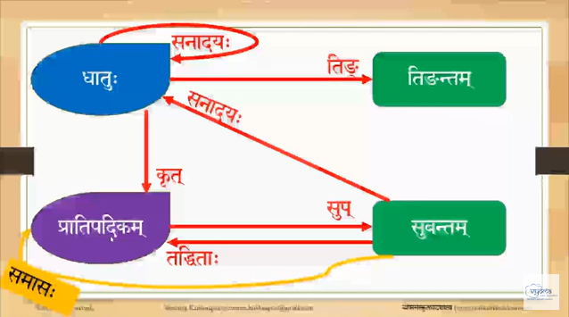
धातोः कृत् प्रतययस्य योजनेन प्रातिपदिकम् भवति। Adding a krit pratyaya converts a dhatu to a pratipadhikam. A dhatu can be converted to another dhatu by adding a sanadhi pratyaya. सुबन्तात् सनादि प्रत्यय योजनेन अपि धातुः भवति। Subantha can be converted to dhatu by adding a sanadhi pratyaya. सुबन्तात् प्रातिपदिकम् भवति तद्धित प्रत्यय योजनेन। ़From subantha adding thadhita pratyaya will make it pratipathikam. Samasa will convert multiple (two or more) to a prathipadhikam.
In the above diagram the red lines achieve inter-conversion. One cannot convert subanta directly to tinganta. You have to first make it a dhatu. Similarly, you can convert a subanta to a pratipadika and then back to subanta to get a new word. A dhatu can be converted to another dhatu using a snadaya pratyaya.
The above covers all words in Sanskrit. Knowing Sanskrit is knowing all the above. There are other things like Sandhi etc but they are just changing the letters. Of the above there are three steps which are very basic: dhatu -> pratipadikam, dhatu -> tingantam and pratipadikam->subantam

This Kridanta lesson series is about converting dhatu -> pratipadikam by adding krt pratyaya (कृत्). This conversion will give 95% of pratipadikas - just an estimate. There is another view - सर्वम् नाम् धातिजमाः - all nouns are from dhatus.
Within कृत् प्रत्ययाः there are two categories. One is the pratyayas directly given by Panini which we call कृत् प्रत्यय. Panini specifically says this is the dhatu and you add this krit pratyaya and you get this pratipadika. There are also another set of pratyayas called उणादि प्रत्यय. They are also added to dhatus to get pratipadikas. Example: गौः is derived from गम् धातु। गच्छति इति गौः। Derived from गम् + डोस्. Such pratyayas (like डोस्) are called उणादि। Is गो उणादि or डोस्? Later the teacher says गो is उणादि.
There are two views regarding उणादि -
- we accept the derivation of उणादि from dhatu then 100%, or at least 99% of pratipadikas will be derived from dhatus.
- those that consider उणादि as something that cannot be split further - meaning they take गो as something that cannot be divided - say that there is a set of केवल प्रातिपतिकः that cannot be split further. Most words come from dhatus and a smaller set come from kevala pratipadikam.
Kridantas are always pratipadikas. We cannot use kridantas directly because pratipadikas cannot be used in sentences. They have to be converted to subanta by adding a सुप् pratyaya to form a padam.
कृदन्ताः
- कृत् इति प्रत्ययः।
- कृत् अन्ते यस्य सः कृदन्तः।
- कृत् प्रत्ययाः धातुभ्यः विहिताः1।
- कृदन्ताः प्रातिपदिकसंज्ञकाः2।
- कृदन्तेभ्यः सुप्-प्रत्ययस्य योजनेन सुबन्ताः भवन्ति।
1विहिताः = ordained, supplied, made 2संज्ञका = named, termed
There are ~140 कृत् प्रत्ययाः in Ashtadyayi. भिन्नेषु अर्थेषु भवन्ति। These pratyayas are added in specific meanings.
Below are examples of what कृत् pratyayas do and how they change meaning. You dont have to remember all of this. The examples are not comprehensive. Only a sample for understanding.
Example 1 : कर्ता (the one who does action): पाचकः, वक्ता, गतवान्
धातवः कृयाम् बोधयति। A dhatu is something that tells you an action. यदा कृत् प्रत्ययः योज्यते तदा कर्ता भवति। पच् धातु (cooking) -> पाचकः (यः पाक कार्यं करोति सः। The one who does cooking.)
यः वदते सः वक्ता। यः गच्छति - भूत कालि गमन कार्यं कृतवान् - सः गतवान्। All these words refer to the person who performed the action. We get that meaning because of the pratyaya.
पच् + अक = पाचकः
Example 2: कर्म the object of action - पठितः, खाद्यम्
The word पठित (पठितः, पठिता, पठितम्) says what was read (not who read).
किम् पठितम्? (What was read?) कृदन्ताः पठिताः। व्याकरणम् पठितम्।
पठित्वान् is the person who did the action of reading whereas पठित refers to the object. The change in meaning is because of the pratyaya.
Example 3: भावः (क्रिया) action - कृतिः, गतिः, बुभुक्षा
Pratyayas can be used to convert a dhatu to give you the meaning of कर्ता (does), कर्म (object) and also क्रिया (the action).
कृतिः = doing गतिः = going बुभुक्षा = to desire to eat
Example 4: क्रियाणाम् परस्परसम्बन्धः - the inter-relationship between क्रिया
कृत्वा = having done something you move on to another क्रिया
कर्तुम् = gives the purpose कर्तुम गच्छति (goes for doing)
Example 5: पौनः पुन्यम्
कारं कारम् = doing it again and again
दर्शं दर्शम् = seeing again and again
Kridantas are nouns that still have a portion of an action. Not all krit pratyayas are added to all dhatus. Some are general and applied to all dhatus and some are applied to specific dhatus.
These are the major pratyayas we will be studying in the course. We will study about 25 that are common and important. Most of these are general and can be applied to all dhatus.
| कृत्प्रत्ययविभागः (अर्थमनुसृत्य) | |||
|---|---|---|---|
| कर्तरि | भावे | भूते | विध्यादिषु |
| ण्वुल् | ल्युट् | क्तवतु | अनीयर् |
| तृच् | क्तिन् | क्त | तव्य |
| शतृ / शानच् | अ | यत् / ण्यत् | |
| क्किप् | घञ् | ||
| अच् |
| कृदनताव्ययानि | उपपदकृतन्दाः |
|---|---|
| क्तवा-ल्यप् | अण |
| तुमुन | क |
| णमुल् | ट |
| ड | |
| खश् |
प्रत्ययः १ - ल्युट् (अन)
ल्युट् इति प्रत्ययः रूपेतु अन इति श्रुयते।
Here are some example usages of this प्रत्यय
All the words in red color are kridantas. Specifically they are ल्यटन्ताः or words ending in ल्युट्.
पूर्वं रामतपोवनादिगमनं हत्वा मृगं काञ्चनम्
वैदेहीहरणं जटायुमरणं सुग्रीवसम्भाषणम्।
वालीनिग्रहणं समुद्रतरणं लङ्कापुरीदाहनं
पश्चाद्रावणकुम्भकर्णहननम् एतद्धि रामायणम्॥ Listen here
दाहनम् - to make something burn
करणं मधुरं तरणं मधुरं हरणं मधुरं रमणं मधुरम्।
वमितं मधुरं शमितं मधुरं मधुराधिपतेरखिलं मधुरम्॥ Listen here
आदौ देवकिदेविगर्भजननम् गोपीगृहेवर्धनम्
मायापूतनिजीवित अपहरणम् गोवर्धन उद्धारणम्।
कंसच्छेदनकौरवादि (छेदनम्) हननम् कुन्तीसुत आपालनम्
एतद्भागवतं पुराणकथितं श्रीकृष्णलिलामृतम्॥ Listen here
Valmiki Ramayana third sarga has a lot of ल्युट् (अन) kridantas.
Why are the pratyayas named the way they are? Pannini tries to add some identifying letters into each pratyaya. So the pratyaya will have its own letters and some other letters for identification. They help us in doing many things. That is not strictly in the purview of this class. Can email teacher (sowmya dot krishnapur at gmail).
Lesson 2
अद्य वयम ल्यट् प्रत्ययस्य रूपाणि तेषाम् प्रयोगाणाम च अभ्यासम् कुर्मः।
Recap of previous lesson:
What all things can krit pratyayas convey meaning of - कर्ता (doer), कर्म (object), करणम् (the instrument), क्रिया (the action), कालः (the tense), पौन पुन्यम् (repeatedy doing something), विधिः (the injunction to do something) and many more.
ल्युट् प्रत्ययः गमनम्, पठनम्, जननम्, मरणम्, तरणम्, करणम्...
यत्र यत्र अयं प्रत्ययः भवति तत्र अन्ते अनम् अथवा अणम् इति श्रूयते। अयं भावार्थकः प्रत्ययः इत्युच्छते अर्थात क्रियां बोधयति। Note that the above examples are subantas the kridantas are like गमन, पठन etc.
This pratyaya is a general pratyaya which is used in the sense of action. The easy way of identifying this pratyaya is by looking at the अनम्/अणम् at the end of it. But not everywhere you see a अनम्/अणम् that is a ल्युट् प्रत्यय.
षोडशोपचार-पूजायाः अङ्गानि - यतः भगवतः पूजा क्रियते तत्र षोडश-अङ्गानि भवति। When we are worshipping the lord we have 16 steps. They are all different actions. किम् किम् भवति षोडशोपचारे -
- ध्यानम् - we pray to the deity
- आवाहनम् - we bring the deity into the idol or kalasha
- आसनम् - sitting. आसनप्रदानम् we are giving him a seat
- पाद्यप्रदानम् - पादस्य क्षालनार्थं जलम्
- अर्घ्यप्रदानम् - अर्घ्यम् is हस्त प्रक्षालनार्थं जलम् प्रदानम्
- आचमनीयप्रदानम् - पातुम जलम् आचमनीयमित्युच्छते
- स्नानम्
- वस्त्रधारणम्
- यज्ञोपवीतधारणम्
- गन्धलेपनम् - लिपनम् is to anoint. गन्ध is fragrant
- पुष्पार्चनम् - पुष्पैः अर्चनम् (worshipping with flowers)
- धूपाराधनम् - worshipping (आराधनम्) with धूपा
- दीपदर्शनम् - showing deepam
- निवेदनम् - giving नैवेद्यम् (action of offering food)
- नीराजनम् - aarati
- प्रार्थनम् - praying
1-6 above are kridantas but a different kind. After 6 are ल्यट् kridantas.
कुत्र अनम्? कुत्र अणम्?
णत्वं कुत्र भवति? In grammatiचal parlance this is called णत्व. Here is a general rule that works most of the time-
नकारात् पूर्वम् -
-
रेफः/ ऋकारः / षकारः अस्ति चेत् णत्वम् भवति। Example: In तरनम् there is र् before न्। In this rule you dont have to worry if there are any स्वाराः (vowels) in betwee. Swaras will not obstruct णत्व. That word becomes तरणम्. Similarly पेषनम् becomes पेषणम्
-
Second rule: If there is a consonent between the रेफः/ ऋकारः / षकारः and नकार. Examples: क्रयनम्, बृंहनम्, क्षेपनम् - If the व्यञ्जनानि (consonants) are one of कवर्ग-पवर्ग-ह्-य्-व्-र् then णत्वम् happens. All three examples qualify and they become क्रयणम्, बृंहणम्, and क्षेपणम्
-
If there are other consonants between रेफः/ ऋकारः / षकारः and नकार then णत्व does not happen. Examples: ग्रथनम्, अर्चनम्, गृञ्जनम्, क्षालनम्, रटनम्, क्रीडनम्, मूर्च्छनम्, क्रोशनम्
The above is the most general rule for णत्व. There are other rules also. This rule holds for simple cases.
वृक्षेन / वृक्षेण ? वृक्षेण
ऋृषबेन / ऋृषबेण ? ऋृषबेन
Both above are not ending in अनम् so this rule does not apply. A different rule applies. See Sandhi notes "Word Internal Sandhi rule".
ल्युट्-प्रत्यत्यान्तस्य रूपाणि १
How do we get the forms of ल्युट् प्रत्यय from the dhatu? For most dhatus adding अन् will give a ल्युट् प्रत्यय.
| गणित-क्रियाः | गति-क्रियाः |
|---|---|
| गण् - गणनम् (counting) | गम् - गमनम् (going) |
| सङ्कल् - सङ्कलनम् (addition) | चल् - चलनम् (moving) |
| व्यवकल् - व्यवकलनम् (subtraction) | धाव् - धावनम् (running) |
| गुण् - गुणनम् (multiplication) | भ्रम् - भ्रनणम् (rotating) |
| विभज् - विभजनम् (division) | कम्प् - कम्पनम् (shaking) |
These words only give क्रिया and there is no reference to any काला.
गमनम् अस्ति। - Present tense
गमनम् भविष्यति - Will go - Future tense
गमनम् आसीत् - Was going. - Past tense.
Some krit pratyayas do convey tense. E.g. गतवान्. This ल्युट् pratyaya does not convey tense.
ल्युट्-प्रत्यत्यान्तस्य रूपाणि २
| इकारान्ताः/ईकारान्ताः | उकारान्ताः/ऊकारान्ताः |
|---|---|
| चि - चयनम् (collect/pluck) | प्लु - प्लवनम् (jump) |
| स्मि - स्मयनम् (smile) | स्तु - स्तवनम् (praise) |
| नी - नयनम् (take/carry) | हु - हवनम् (homam/havan, perform a sacrifice/ritual) |
| शी - शयनम् (sleep) | भू - भवनम् (existance) |
| डी - डयनम् (fly) | पू - पवनम् (clean, purify) |
If the words ends in इकारान्ताः/ईकारान्ताः we add अयनम्
If the words ends in उकारान्ताः/ऊकारान्ताः we add अवनम्
ल्युट् प्रत्यत्यान्तस्य रूपाणि - ३
उपान्त्ये - last but one letter
If the ह्रस्वः (small vowel) इकारः or उकारः is the last but one letter then
- इ becomes ए
- उ becomes ओ
Note: Short vowel is ह्रस्वम् and long vowel is धीर्गम्
| ह्रस्वः इकारः उपान्त्यः | ह्रस्वः उकारः उपान्त्यः |
|---|---|
| लिख् - लेखनम् (write) | मुद् - मोदनम् (rejoice) |
| क्षिप् - क्षेपनम् (throw) | स्फुट् - सफोटनम् (burst) |
| मिल् - मेलनम् (meet) | घुष् - घोषणम् (announce) |
| छिद् - छेदनम् (cut) | रुद् - रोदनम् (cry) |
| पिष् - पेषणम् (pound, in Tamizh araikarathu) | युज् - योजनम् (join) |
| त्रुट् - त्रोटनम् (plucking or cutting of fruits) | नुद् - नोदनम् (पुसह) |
- फलानां त्रोटनम्।
- यानस्य नोदनम्।
Question from student: Are words that are formed by using ल्युट् all नपुंसकलिंग? Answer is YES.
ल्युट् प्रत्यत्यान्तस्य रूपाणि - ४
- यदि ऋकारः अन्ते अस्ति तर्हि अन् इति भवति (also apply णत्वम्)
- यदि ऋकारः उपान्त्यः अस्ति तर्हि अर् इति भवति
| ऋकारान्ताः/ॠकारान्ताः | ह्रस्वः ऋकारः उपान्त्यः |
|---|---|
| कृ - करणम् (doing) | नृत् - नर्तनम् (dance) |
| भृ - भरणम् (bear, nourish) | वृध् - वर्धनम् (grow) |
| वृ - वरणम् (choose) | भृज् - भर्जनम् (frying - chips, vada etc) |
| मृ - मरणम् (die) | वृष् - वर्षणम् (raining) |
| तॄ - तरणम् (swim, cross over) | तृप् - तर्पणम् (pleasing, satisfying ) |
विषेषः - मृज् - मार्जनम् (cleaning) is an exception to the above.
आवृत् - आवर्तनम् (revise)
One last form
If the धातु is ए/ऐ/ओ/औ-कारान्तः then ए/ऐ becomes अकारान्तः
द्यै - द्यानम्
गै - गानम्
Sloka
Bhakti is of nine kinds
श्रवणं कीर्तनं विष्णोः स्मरणं पादसेवनम्।
अर्चनं वन्दनं दास्यं सख्यम् आत्मनिवेदनम्॥
| Word | Meaning | Word | Meaning |
|---|---|---|---|
| श्रू - श्रवणम् | listening (i.e. listening to the deeds of Vishnu) | कीर्त् - कीर्तनं | chanting (the name of Vishnu) |
| स्मृ - स्मरणम् | remembering (Vishnu) | सिव् - सेवनम् | serving (पादसेवनम् - serving the feet of the lord) |
| अर्च् - अर्चनम् | worshipping | वन्द् - वन्दनम् | bowing, saluting |
| दास्यम् | feeling of complete surrender (this is not ल्युट्। It is a kridanta we will see later) | सख्यम् | having a feeling of friendship |
| नि + विद् - निवेदनम् | आत्मनिवेदनम् - offering oneself to the lord completely |
दासस्य भावः दास्यम् - तद्धितान्त कृदन्तः
सख्यु भावः सख्यम् - तद्धितान्त कृदन्तः
Summary
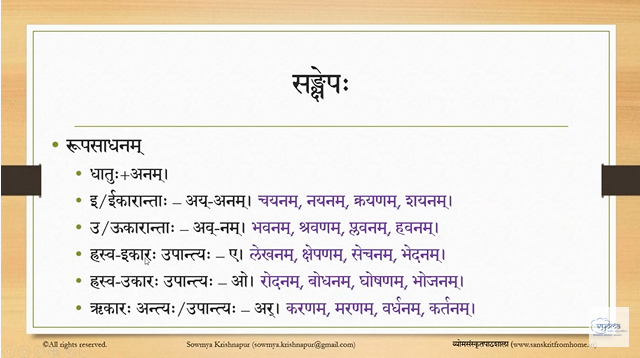
Student question: Why do we call it ल्युट् when the sound added is अन्/अण्?
The लकार and टकार in ल्युट् has its own purposes of modifying the swara etc of the dhatu. Why we get अन् is because where every यु occurs it is replaced by अन् as per a Panini sutra called युवोरनाकौ.
Lesson 3
कृदन्ताः - The term used to refer to a group of प्रत्ययाः. It is not a प्रत्यय by it self but refers to a group.
कृत् is a name for a set of pratyayas. There are about 140 pratyayas that fall under this group. They are always added to dhatus.
Start at 4:28
Terminology
वाक्यम् - sentence
पदम् - word
वर्णः - sounds (phenomes?)
अक्षरम - sounds
सन्धिः - when two वर्णः are joined/combined
समासम् - when two पदम् are joined/combined
In Sanskrit grammar there is an entire branch devoted to the study of the joining of two वर्णः and that is called सन्धिः. Example: नमस्ते, कोपि etc
Similarly there is a branch devoted to the study of the joining of two पदम् called समासम्. Example: देवालय, वृक्षमूलम, जगत्पति, करपत्रम् etc
प्रातिपदिकम् - base word/root of (सुबन्तम्) nouns, adjectives and other non-verbs
सुबन्तम् - nouns, adjectives and other non-verbs (नाम पदम्)
तिङन्तम् - verbs (क्रिया पदम)
कृदन्तम् - The term used to refer to a group of प्रत्ययाः. It is not a प्रत्यय by it self but refers to a group.
Misc stuff (not terminology)
| Four types of buttermilk |
|---|
| घोलम् - 100% दधि + 0% जलम् |
| तक्रम् - 75% दधि + 25% जलम् |
| उदश्वित् - 50% दधि + 50% जलम् |
| छच्छिका - 25% दधि + 75% जलम् |
Difference between अर्धम् and अर्धः is that अर्धम् is exactly half and अर्धः is a piece.
भो नवको मक्षिकः
त्वं दूरात् आगतः
केवलम्मृत्यवे
टाश्!!!
- हैकुः मया कृतम्
Sayings
अर्ध मात्रा लाधवेन पुत्रोत्सवम् मन्यन्ते वैयाकरणाः
Grammarians by saving an half a matra will get joy of getting a baby.
सूत्रलक्षणम्
अल्पाक्षरमसन्दिग्धं सारवद्विश्वतोमुखम्।
अस्तोभमनवद्यं च सूत्रं सूत्रविदो विदुः॥
The characteristics (or properties) of a Sutra. Only something with these six characteristics can be a Sutram.
- अल्याक्षरम् = सङ्क्षिप्तम् (brevity)
- असन्दिग्धम् = सन्देहरहितम् (lucid, clear, without any doubt)
- सारवत् = बहुगभीरम् (deep and meaningful)
- विश्वतोमुखम् = विस्तृतोपयोगि (usable widely or in many contexts)
- अस्तोभम् = व्यर्थांशरहितम् (only the essential content)
- अनवद्यम् = निर्दोषम् (without errors)
Introduction
This is my attempt at the translation exercises in the book "Samskrta-Subodhini: A Sanskrit Primer" by Madhav Deshpande. I have tried my best to check for errors but I can't guarantee there are none :-).

Lesson 1
| -Voice | -Voice | +Voice | +Voice | +Voice | |
|---|---|---|---|---|---|
| -Asp | +Asp | -Asp | +Asp | -Asp | |
| Velar | क | ख | ग | घ | ङ |
| Palatal | च | छ | ज | झ | ञ |
| Cerebral | ट | ठ | ड | ढ | ण |
| Dental | त | थ | द | ध | न |
| Labial | प | फ | ब | भ | म |
| Semi-vowels (+Voice, -Asp) | |||
|---|---|---|---|
| य | र | ल | व |
| Sibilants | |||
|---|---|---|---|
| -Voice | -Voice | -Voice | +Voice |
| श | ष | स | ह |
Lesson 2: First conjugation active verbs in present tense
The basis of a Sanskrit verb form is a verbal-root (धातु) which is a grammatical abstraction from which a full verb form derived.
A Sanskrit verb is conjugated in three numbers: singular, dual, and plural; and three persons, first person, second person and third person.
Lesson 3
1) Translate the following into English:
१. काकः फलानि खादति।
The crow eats fruits.
२. जलम् पतति ।
Water falls.
३. तौ बालौ दुःखम् स्मरतः।
Those two boys remember misery.
४. ते अश्वाः तम् पर्वतम् प्रति धावन्ति।
Those horses run towards that mountain.
५. नृपः माम् स्मरति।
The king remembers me.
६. जनाः त्वाम् त्यजन्ति।
The people abandon you.
७. ग्रामम् सर्वतः वृक्षाः भवन्ति।
There are trees on all sides of the village.
८. कूपम् उभयतः ते दासाः तिष्ठन्ति।
Those servants stand on both sides of the well.
९. अहम् कनकम् विना भवामि।
I am without gold.
१०. पात्रे अन्तरा काकः पत्रम् पश्यति।
The crow sees a leaf between vessels.
११. सा तद् कमलम् नयति।
She brings that lotus.
नयति – guide, carry, bring, lead
१२. ते नराः तान् नरान् जयन्ति।
Those men defeat those men.
१३. आवाम् तानि तृणानि पश्यावः।
We two see those grasses.
१४. यूयम् माम् अनु गच्छथ।
You two go along with me.
१५. दासाः नृपम् प्रति गच्छन्ति।
The servants go towards the king.
१६. नृपः ग्रामान् जयति।
The king defeats the villages.
१७. दासाः नृपम् परितः तिष्ठन्ति।
The servants stand around the king.
१८. धिक् दासम्। धिक् नृपम्।
Fie on the servant. Fie on the king.
१९. नृपम् अन्तरेण दासः जनान् वदति।
Without the king the servant speaks to the people.
२०. दासौ अन्तरा नृपः सीदति।
The king sits between the two servants.
२१. अश्वम् विना अहम् ग्रामम् गच्छामि।
I go to the village without horse.
२२. अहम् त्वाम् ग्रामम् नयामि।
I lead you to the village.
I guide you to the village.
२३. यूयम् अस्मान् जयथ।
You all defeat us (we all).
२४. तौ ताः पश्यतः।
They two (masculine) see those all (feminine).
२५. ताः तान् पश्यन्ति।
They all (feminine) see they all (masculine).
2) Rewrite the above sentences by applying all the known sandhi rules
१. काकः फलानि खादति।
काकः फलानि खादति।
२. जलम् पतति।
जलम्पतति।
३. तौ बालौ दुःखम् स्मरतः।
तौ बालौ दुःखं स्मरतः।
४. ते अश्वाः तम् पर्वतम् प्रति धावन्ति।
ते अश्वास्तम्पर्वतम्प्रति धावन्ति।
५. नृपः माम् स्मरति।
नृपो मां स्मरति।
६. जनाः त्वाम् त्यजन्ति।
जनास्त्वान्त्यजन्ति।
७. ग्रामम् सर्वतः वृक्षाः भवन्ति।
ग्रामं सर्वतो वृक्षा भवन्ति।
८. कूपम् उभयतः ते दासाः तिष्ठन्ति।
कूपम् उभयतस्ते दासास्तिष्ठन्ति।
९. अहम् कनकम् विना भवामि।
अहङ्कनकवँविना भवामि।
१०. पात्रे अन्तरा काकः पत्रम् पश्यति।
पात्रे अन्तरा काकः पत्रम्पश्यति।
११. सा तद् कमलम् नयति।
सा तद् कमलन्नयति।
१२. ते नराः तान् नरान् जयन्ति।
ते नरास्तान् नरान् जयन्ति।
१३. आवाम् तानि तृणानि पश्यावः।
आवान्तानि तृणानि पश्यावः।
१४. यूयम् माम् अनु गच्छथ।
यूयम्माम् अनु गच्छथ।
१५. दासाः नृपम् प्रति गच्छन्ति।
दासा नृपम्प्रति गच्छन्ति।
१६. नृपः ग्रामान् जयति।
नृपो ग्रामान् जयति।
१७. दासाः नृपम् परितः तिष्ठन्ति।
दासा नृपम्परितस्तिष्ठन्ति।
१८. धिक् दासम्। धिक् नृपम्।
धिक् दासम्। धिक् नृपम्।
१९. नृपम् अन्तरेण दासः जनान् वदति।
नृपम् अन्तरेण दासो जनान् वदति।
२०. दासौ अन्तरा नृपः सीदति।
दासौ अन्तरा नृपस्सीदति।
२१. अश्वम् विना अहम् ग्रामम् गच्छामि।
अश्ववँविना अहङ्ग्रामङ्गच्छामि।
२२. अहम् त्वाम् ग्रामम् नयामि।
अहन्त्वाङ्ग्रामन्नयामि।
२३. यूयम् अस्मान् जयथ।
यूयम् अस्मान् जयथ।
२४. तौ ताः पश्यतः।
तौ ताः पश्यतः।
२५. ताः तान् पश्यन्ति।
तास्तान् पश्यन्ति।
3) Dissolve the following sandhis:
नृपो जयति।
Ans: नृपः जयति
बाला धावन्ति।
Ans: बालाः धावन्ति।
नरस्तृणम्पश्यति।
Ans: नरः तृणम् पश्यति।
बालो जनं स्मरति।
Ans: बालः जनं स्मरति।
अश्वोऽत्र ।
Ans: अश्वः अत्र।
जनोऽन्नङ्खादति ।
Ans: जनः अन्नम् खादति।
स गच्छति।
Ans: सः गच्छति
स पतति
Ans: सः पतति।
4) Translate the following into Sanskrit and apply all the sandhi rules:
1. Trees stand near the well.
वृक्षाः कूपम् अभितः तिष्ठन्ति।
Applying Sandhi
वृक्षाः कूपम् अभितस्तिष्ठन्ति।
2. The servants sees those crows.
दासाः काकान् पश्यन्ति।
Applying Sandhi
दासाः काकान् पश्यन्ति।
3. The king conquers a village.
नृपः ग्रामं जयति।
Applying Sandhi
नृपो ग्रामञ्जयति।
4. The man goes to the king.
नरः नृपं प्रतिगच्छति।
Applying Sandhi
नरो नृपम्प्रतिगच्छति।
5. The boy abandons the crow.
बालकः काकं त्यजति।
Applying Sandhi
बालकः काकन्त्यजति।
6. Men run to the mountain.
नराः पर्वतं प्रतिधावन्ति।
Applying Sandhi
नराः पर्वतम्प्रतिधावन्ति।
7. Those crows eat fruit.
ते काकाः फलं खादन्ति।
Applying Sandhi
ते काका: फलङ्खादन्ति।
8. The leaves fall.
पर्णानि पतन्ति।
Applying Sandhi
पर्णानि पतन्ति।
9. The two servants carry grass.
दासौ तृणं वहतः।
दासौ तृणं नयतः।
Applying Sandhi
दासौ तृणवँवहतः।
दासौ तृणन्नयतः।
10. The two boys dwell.
बालकौ वसतः।
Applying Sandhi
बालकौ वसतः।
11. On both sides of the tree sit the crows.
वृक्षम् उभयतः काकाः उपविशन्ति।
वृक्षस्य उभयतः काकाः उपविशन्ति।
Applying Sandhi
वृक्षम् उभयतः काका उपविशन्ति।
12. The king knows gold.
नृपः कनकं बोधति
Applying Sandhi
नृपः कनकम्बोधति
13. We two abandon the king.
आवाम् नृपम् त्यजावः।
Applying Sandhi
आवान्नृपन्त्यजावः।
14. You two take two of us to the village.
युवाम् आवाम् ग्रामं नयथः।
Applying Sandhi
युवाम् आवाङ्ग्रामन्नयथः।
15. Those two (girls) go to the mountains.
ते पर्वतम् प्रति गच्छतः।
Applying Sandhi
ते पर्वतम्प्रति गच्छतः।
5) Complete the following sentences
१. सा तानि कमल--- नी---।
सा तानि कमलानि नयति।
२. ते नर--- तद्--- ग्रामान् जि---।
ते नराः तान् ग्रामान् जयन्ति।
३. आवाम् तौ वृक्ष--- दृश्---।
आवाम् तौ वृक्षौ पश्यावः।
४. वृक्ष--- पतन्ति।
वृक्षाः पतन्ति।
५. यूयम् ---(me)--- अनु गम्---।
यूयम् माम् अनु गच्छथ।
६. दास--- नृप--- प्रति गच्छन्ति।
दासाः नृपं प्रति गच्छन्ति।
७. वृक्ष--- उभयतः काक--- सीदन्ति।
वृक्षम् उभयतः काकाः सीदन्ति।
८. नृप--- कनकम् बोधति।
नृपः कनकम् बोधति।
९. आवाम् नृप--- त्यज्---।
आवाम् नृपम् त्यजावः।
१०. अहम् ---(you)--- ग्राम्--- प्रति नी---।
अहम् त्वाम् ग्रामम् प्रति नयामि।
११. ---(she)--- पर्वत--- प्रति गम्---।
सा पर्वतम् प्रति गच्छति।
6) Decline fully the following nouns:
दास, बाल, परवत, कमल, दुःख, फल
Lesson 4
1) Complete the following sentences and translate them into English:
१. अश्व--- तृण---(sing) खादन्ति, पुष्यन्ति, तुष्यन्ति च।
अश्वाः तृणं खादन्ति, पुष्यन्ति, तुष्यन्ति च।
२. दास--- कनक--- चोरयति, नृपश्च दास--- दृश्--- तुद्--- च।
दासः कनकं चोरयति, नृपश्च दासं पश्यति तुदति च।
३. अहं कमल--- दिश्---, त्वं च तानि न दृश्---।
अहं कमलानि दिशामि, त्वं च तानि न पश्यसि।
४. काक--- फलानि चिन्तयतः, नर--- च तौ काक--- तुदन्ति।
काकौ फलानि चिन्तयतः, नराः च तौ काकौ तुदन्ति।
Two crows think about fruits and people strike those two crows.
५. वृक्ष--- पर्वतमभितो नश्---। दास--- च जनान् कथयन्ति – “पर्वतो नश्--- सर्वतः” इति। जना वद्--- “पर्वतो न नश्यति, वृक्षा एव नश्---” इति।
वृक्षाः पर्वतमभितो नश्यन्ति। दासाः च जनान् कथयन्ति – “पर्वतो नश्यति सर्वतः” इति। जना वदन्ति “पर्वतो न नश्यति, वृक्षा एव नश्यन्ति” इति।
The trees near the mountain are perishing. And the servants tell the people thus – “Mountains everywhere are perishing”. The people speak thus “Mountains are not perishing, the trees only are perishing”
६. जन--- न अन्नं पिबन्ति, न वा पात्राणि खाद---।
जनाः न अन्नम्पिबन्ति, न वा पात्राणि खादन्ति।
The people do not drink rice and nor do they eat vessels.
७. नृप--- ग्रामम् विशति, दासा उभयतो धाव---, जनाश्च नृप-- पूजयन्ति।
नृपः ग्रामम् विशति, दासा उभयतो धावन्ति, जनाश्च नृपं पूजयन्ति।
नृपो ग्रामम् विशति, दासा उभयतो धावन्ति, जनाश्च नृपम्पूजयन्ति।
The king enters the village, servants run on both sides, and the people worship the king.
८. अहं ग्रामं वा पर्वत--- वा न कृष्---, त्वम् एव कृष्--- तं पर्वतम्।
अहं ग्रामं वा पर्वतं वा न कृषामि, त्वम् एव कृषसि तं पर्वतम्।
I do not plough the village and the mountain, you alone plough that mountain.
९. सा दासम् अन्तरेण पर्वतं विश्---, वृक्षान् स्पृश्---, पत्राणि च गण---।
सा दासम् अन्तरेण पर्वतं विशति, वृक्षान् स्पृशति, पत्राणि च गणयति।
She enters the mountain without servants, touches the trees, and counts the leaves
१०. बालाः पर्वत--- प्रति धावन्ति श्रम्--- च। जनक--- तान् कथयति – हे बालाः, यूयं जल--- पिबथ इति।
बालाः पर्वतं प्रति धावन्ति श्राम्यन्ति च। जनकः तान् कथयति – हे बालाः, यूयं जलं पिबथ इति।
११. युवां दासान् गण्--- तान् न तुद्--- ।
युवां दासान् गणयतः, तान् न तुदतः।
१२. नृप--- ग्रामं जयति श्राम्यति च। जन--- नृपं पश्यनति, तम् अनु धाव---, तं च पूज्---।
नृपः ग्रामं जयति श्राम्यति च। जनाः नृपं पश्यनति, तम् अनु धावन्ति, तं च पूजन्ति।
2) Join the following simple sentences and form a complex sentence:
१. रामः गच्घति। अश्वः गच्छति।
रामः अश्वः च गच्छति।
रामः अश्वः वा गच्छति।
वा – Either/or not and
२. रामः गच्छति। रामः पतति।
रामः गच्छति च पतति च।
रामः गच्छति पतति च।
रामः गच्छति वा पतति वा।
रामः गच्छति पतति वा।
३. रामः फलं खादति। रामः मांसं खादति।
रामः फलं मांसं च खादति।
रामः फलं मांसं वा खादति।
3) Change the emphasis of the following sentences as directed by placing the particle (participle?) in the right place. Change:
१. रामः फलं खादति। to “Only Rama eats fruit.”
रामः एव फलं खादति।
२. अश्वः तृणं पश्यति। to “The horse sees only the grass”
अश्वः तृणम् एव पश्यति।
३. बालः काकं त्यजति। to “The boy certainly abandons the crow”
बालः काकं त्यजति एव।
4) Change the following into negative sentences:
१. अश्वाः पत्राणि वा तृणानि वा खादन्ति।
अश्वाः पत्राणि वा तृणानि वा न खादन्ति।
२. जना मां पश्यन्ति, सर्वतश्च धावन्ति। अहं तान् पश्यामि, तुष्यामि च।
जना मां न पश्यन्ति, सर्वतश्च न धावन्ति। अहं तान् न पश्यामि, न तुष्यामि च।
३. अहं कनकं दीव्यामि, त्वं च कनकं चिन्तयसि तुष्यसि च।
अहं कनकं न दीव्यामि, त्वं च न कनकं चिन्तयसि न तुष्यसि च।
5) Correct the following sentences:
१. बाला नराण् पश्यति। बाला नरान् पश्यन्ति।
२. अश्वः तृणाणि खादन्ति।
अश्वः तृणाणि खादति।
6) Translate the following into Sanskrit (apply the known rules of sandhi):
1. I go to the village, and you sit near the tree.
अहं ग्रामं गच्छामि त्वं च वृक्षम् अभितः सीदसि।
अहङ्ग्रामङ्गच्छामि त्वञ्च वृक्षम् अभितस्सीदसि।
2. The king goes to the mountain and abandons the gold.
नृपः पर्वतं प्रति गच्छति कनकं च त्यजति।
नृपः पर्वतम्प्रति गच्छति कनकञ्च त्यजति।
3. The servants see the crows and count the fruits.
दासाः काकान् पश्यन्ति फलानि च गणयन्ति ।
4. She enters and eats food. She eats fruits without me.
सा विशति खादति च। सा माम् अन्तरेण फलानि खादति।
सा विशति खादति च। सा मामन्तरेण फलानि खादति। Samhita
5. The boy worships (his) father and the father is satisfied
बालः जनकं नमति जनकः च तुष्यति।
बालः जनकन्नमति जनकश्च तुष्यति।
6. I show him the crows and he remembers misery.
अहं तं काकं दिशयामि सः च स्मरति।
अहन्तङ्काकन्दिशयामि स च स्मरति।
7. The horses run to the tree and stand.
अश्वाः वृक्षं प्रति धावन्ति तिष्ठन्ति च।
अश्वा वृक्षम्प्रति धावन्ति तिष्ठन्ति च।
8. Around the village, the people sit and watch the horses. The horses are weary.
ग्रामं परितः जनाः सीदन्ति अश्वान् च पश्यन्ति। अश्वाः श्राम्यति।
ग्रामम्परितः जनास्सीदन्ति अश्वान् च पश्यन्ति। अश्वाश्श्राम्यति।
9. I go after the king, and you run after the servant.
अहं नृपम् अनु गच्छामि त्वं च दासम् अनु धावसि।
अहन्नृपम् अनुगच्छामि त्वञ्च दासम् अनु धावसि।
10. The king holds lotuses, counts them, touches them and is pleased.
नृपः कमलानि धारयति गणयति स्पृशति तुष्यति च।
11. The crow throws a fruit in between two vessels, and the fruit perishes.
काकः पात्रौ अन्तरा फलं क्षिपति फलं च नश्यति। FIXME पात्रौ अन्तरा?
12. I think (of) happiness, and I see only misery around me.
अहं सुखं चिन्तयामि परित: च दुःखम् एव पश्यामि।
अहं सुखञ्चिन्तयामि परितश्च दुःखमेव पश्यामि।
13. I eat food and I dance. I am not weary, and I am satisfied.
अहं खादामि नृत्यामि च। अहं न श्राम्यामि तुष्यामि च।
अहङ्खादामि नृत्यामि च। अहन्न श्राम्यामि तुष्यामि च।
14. The king touches the gold and abandons it. The servant sees the fold and says: “Gold is happiness”.
नृपः कनकं स्पृशति त्यजति च। दासः कनकं पश्यति इति च वदति “कनकः सुखम्”
नृपः कनकं स्पृशति त्यजति च। दासः कनकम्पश्यति इति च वदति “कनकस्सुखम्”
15. The man holds leaves, counts them and throws them around the tree.
नरः पत्राणि धारयति च गणयति च वृक्षं च परितः क्षिपति।
नरः पत्राणि धारयति च गणयति च वृक्षञ्च परितः क्षिपति।
नरः पत्राणि धारयति गणयति च वृक्षं परितः क्षिपति। Also correct
7) Conjugate fully the following verbs:
नश् (4P) नश्यति पूज् (10P) पूजयति
स्पृश् (6P) स्पृशति त्यज् (1P) त्यजति
Lesson 4 Notes
Active verbs in the conjugations 4, 6, and 10 are very similar to the active verbs of the 1st conjugation. There is no difference in the final affixes, but some difference in the internal structure.
Comparing 1P and 6P:
Example, while the very बुध् (1P) “to know” is declined as बोधति, the verb तुद् (6P) “to strike” is declined as तुदति. Thus, while बुध् changes to बोध before अति, तुद् does not change. This is the main difference between the conjugations in 1P and 6P. There is also a difference in accentuation, but accents are not relevant in classical Sanskrit.
Verbs of type (गण) 4P and 10p:
Verbs in the conjugations 1P and 6P have अ infix (e.g. verb stem + अ + affix), while the verbs in the 4th conjugation have य infix (e.g. verb stem + य + affix). Verbs in 10th conjugation have अय infix (e.g. verb stem + अय + affix).
In conjugations 1, 4, 6, and 10 the 3rd person singular form is the key to the rest of the forms. नृत् (4P) नृत् + य + ति = नृत्यति “to dance” तुद् (6P) तुद् + अ + ति = तुदति “to strike, hit, inflict pain” चुर् (10P) चुर् + अय + ति = चोरयति “to steal”
Lesson 5
1) Complete the following sentences, dissolving all sandhis, and translate them into English:
१. जना ईश्वरस्य बलं चिन्त्--- । ते वद्--- । अलं धन---, ईश्वर--- नमः, ईश्वर--- स्वस्ति – इति।
जना: ईश्वरस्य बलं चिन्त्यन्ति । ते वदति । अलं धनेन, ईश्वराय नमः, ईश्वराय स्वस्ति – इति।
People think of Ishwara’s power. They say. Enough wealth, salutations to Ishwara, hail Ishwara.
२. चन्द्र आकाशे गम्--- । लोकश्चन्द्रम् आकाशस्य भूषणं चिनत्---।
चन्द्रः आकाशे गच्छति। लोकः चन्द्रम् आकाशस्य भूषणं चिन्तयति।
The moon goes in the sky. The world thinks the moon is the ornament of the sky.
३. कमल--- ह्रदे भवन्ति। तानि तीरे न जीव---। कमलानि कुसुमानि भू---।
कमलानि ह्रदे भवन्ति। तानि तीरे न जीवन्ति। कमलानि कुसुमानि भवन्ति।
कमला ह्रदे भवन्ति। तानि तीरे न जीवन्ति। कमलानि कुसुमानि भवन्ति। (
Lotuses are in the lake. They do not live in the bank. Lotuses are flowers.
४. मांस--- विना शृगाला न जीव्---। गज--- मांसं न भक्षयन्ति। ते तृणाय स्पृह्---। शृगालो गजाय न अलम्।
मांसेन विना शृगालाः न जीवन्ति। गजः मांसं न भक्षयन्ति। ते तृणाय स्पृहन्ति। शृगालः गजाय न अलम्।
Jackals do not live without meat. Elephants do not eat meat. They long for grass. Jackal is not able to face an elephant.
५. गृह--- पुरतो दासो वीरस्य गुणान् घुष्---। वीरो नृपो ग्रामस्य जनान् पाल्---।
गृहस्य पुरतः दासः वीरस्य गुणान् घोषयति। वीरः नृपः ग्रामस्य जनान् पालयति।
In front of the house the servant proclaims the virtues of the hero. The heroic king protects the people of the village.
६. नृपस्य प्रासादे कनकस्य रत्नानां च भूषणानि भू---। दासस्य गृहे भूषणानि न भू---।
नृपस्य प्रासादे कनकस्य रत्नानां च भूषणानि भवन्ति। दासस्य गृहे भूषणानि न भवन्ति।
In the king’s palace ornaments of gold and jewels are present. In the servants house no ornaments are present.
७. गृह--- उपरि काक--- सीदन्ति। काकानां गृह--- वृक्षेषु भवन्ति।
गृहस्य उपरि काकाः सीदन्ति। काकानां गृहाणि वृक्षेषु भवन्ति।
Crows sit on top of the house. The houses of the crows are in the trees.
८. ग्रामस्य जना--- वनस्य वृक्षान् दहन्ति। ते ग्रामस्य वृक्षान् न दह्---।
ग्रामस्य जनाः वनस्य वृक्षान् दहन्ति। ते ग्रामस्य वृक्षान् न दहन्ति।
People of the village burn trees of the forest. They do not burn the trees of the village.
९. नृपस्य मित्र--- प्रासादे काव्यम् लिखति, नृपात् धनम् विद्---, धनेन च सुखम् विद्---।
नृपस्य मित्रं प्रासादे काव्यम् लिखति, नृपात् धनम् विन्दति, धनेन च सुखम् विन्दति।
The king’s friend writes a poem in the palace, gets money from the king, and gets happiness through the money.
१०. अहं वृक्षे कुसुमानि दृश्---। कुसुम--- वृक्षात् जले अधः पतन्ति।
अहं वृक्षे कुसुमानि पश्यामि। कुसुमानि वृक्षात् जले अधः पतन्ति।
I see flowers in the tree. The flowers fall into the water from the tree.
११. जल--- विना जन--- न जीवन्ति। जन--- जलं जीवनं वदन्ति।
जलेन विना जनाः न जीवन्ति। जनाः जलं जीवनं वदन्ति।
People cannot live without water. People say water is life.
१२. दास्--- वनं गच्छति, वृक्षान् च कृन्त्---। स वृक्षाणाम् फलानां च भारं ग्रामे नयति।
दासः वनं गच्छति, वृक्षान् च कृन्तति। सः वृक्षाणाम् फलानां च भारं ग्रामे नयति।
The servant goes to the forest and cuts trees. He brings the burden of the (cut) trees and fruits to the village.
१३. सः फलैः धनम् विन्दति। धनेन स तुष्---। सुखेन च जीव्---।
सः फलैः धनम् विन्दति। धनेन सः तुष्यति। सुखेन च जीवति।
He gets money through the fruits. He is satisfied with the money and lives with happiness.
१४. ईश्वरस्य बलम् एव दैवम् इति अहं चिनत्---। त्वं चिन्त्---। ईश्वरो न भू---, दैवम् एव भू--- इति। अहं वदामि – अलं दैव--- इति।
ईश्वरस्य बलम् एव दैवम् इति अहं चिनत्यामि। त्वं चिन्तयसि। ईश्वरः न भवति, दैवम् एव भवति इति। अहं वदामि – अलं दैवेन इति।
I think God’s strength only is fate. You think god does not exist, only fate exists. I say – enough fate.
१५. नृप--- कृते दासः प्रासादस्य उपरि वृक्षाणां फलानि कुसुमानि च नी---।
नृपस्य कृते दासः प्रासादस्य उपरि वृक्षाणां फलानि कुसुमानि च नयति।
For the sake of the king the servant brings flowers and fruits from the trees on the top of the palace.
१६. जनक: पुत्रस्य अश्वौ मुच्---। तौ च अश्वौ ग्रामात् वन--- प्रति धाव्---।
जनक: पुत्रस्य अश्वौ मुञ्चति। तौ च अश्वौ ग्रामात् वनं प्रति धावतः।
The father releases the son’s two horses and those two horses run from the village to the forest.
2) Translate the following into Sanskrit, applying the known sandhi rules:
1) The two servants of the king dig for gold behind the palace
नृपस्य दासौ कनकाय प्रासादस्य पृष्टतः खनतः।
2) Gold is wealth. People desire wealth. For the sake of wealth, people farm and toil.
कनकन्धनम् । जना धनं इच्छन्ति । धनाय जनान् कृषन्ति श्रामयन्ति च ।
3) I think of God’s power and I salute him. From god, I get happiness.
अहं ईश्वरस्य बलञ्चिन्तयामि नमामि च। ईश्वरात् अहं सुखं विन्दामि।
4) I write poetry. You see that poetry and are pleased.
अहं काव्यं लिखामि। त्वम् तत् काव्यम पशयसि तुष्यसि च।
5) The elephant goes to the forest. In the forest he eats grass and leaves. He does not eat meat.
गजो वनं गच्छति। वने स तृणम्पत्राणि च खादति। स मांसन्न खादति।
6) The jackal has no virtues.
शृगालस्य गुणन्नास्ति।
7) The servants proclaim: “The king is going to the village.”
दासा घोषयन्ति – नृपो ग्रामङ्गच्छति – इति।
8) The burden falls from the tree.
भारो वृक्षात् पत्तति।
9) The elephants see the moon in the lake. They touch the moon.
गजा ह्रदे चनद्रम्पश्यन्ति। ते चन्द्रं स्पर्शन्ति।
10) The king has no virtues. He burns the village. People live in misery.
नृपस्य गुणान् नास्ति। सः ग्रामन्दहति। जना दुःखेन वसन्ति।
11) The king does not desire the meat of a jackal. He is pleased with the meat of a swan.
नृपः शृगालस्य मांसन्न इच्छति। स हंसस्य मांसेन तुष्यति।
12) The swan is an ornament of the lake. The lake adorns the forest.
हंसो ह्रदस्य भूषणम्। ह्रदः वनम्भूषयति।
13) “God’s palace is in the sky”. I do not see the God or God’s palace.
ईश्वरस्य प्रासादम् आकाशे अस्ति (or भवति)। अहम् ईश्वरम् ईश्वरस्य च प्रासादन्न पश्यामि।
14) The boy worships God with flowers in the bank of the lake.
बालो ह्रदस्य तीरे पुष्पेन ईश्वरन्नमति।
15) I am a friend of the king. I dwell in the palace with the king.
अहन्नृपस्य मित्रम् अस्मि। अहन्नृपेण सह प्रासादे वासामि।
3) Write any five sentences of your own in Sanskrit
Lesson 5 Notes
Prepositions and particles (with the cases they govern)
| Preposition/ | Meaning and case | Preposition/ | Meaning and case |
|---|---|---|---|
| सह | with (instr.) | पूर्वम् | Before (abl.) |
| विना | without (acc. instr. abl.) | अनन्तरम् | After (abl.) |
| अलम् | Enough, no more (instr.) | बहिः | Outside (abl.) |
| अलम् | Sufficient, a match for (dat.) | आ | Until, since (abl.) |
| कृतम् | Enough, no more (instr.) | ऋते | Except (acc., abl.) |
| नमः | Salutation to (dat.) | परतः | Beyond (gen.) |
| स्वस्ति | Hail to (dat.) | अग्रे, समाक्षम् | In the presence of (gen.) |
| उपरि | Above (gen.) | कृते | For the same of (gen.) |
| अधः | Below (gen.) | पश्चात् | Behind (gen.) |
| पुरतः | In front of (gen.) | समीपम् | In the vicinity of (gen.) |
| प्राक् | Before, to the east (abl.) |
Acc. द्वितीया Dat. चतुर्थि Gen. षष्ठी Voc. सम्बोधन
Instr. तृतीया Abl. पञ्चमी Loc. सप्तमी
Lesson 6
1) Write the past imperfect, imperative and optative paradigms for one verb from each of the four conjugations
2) Convert the Sanskrit sentences from Exercise 1, Lesson 3, into imperfect, imperative, and optative
१. काकः फलानि खादति।
लङ् - काकः फलानि अखादत्। The crow ate the fruits.
लोट – काकः फलानि खादतु। Let the crow eat the fruits
लिङ् – काकः फलानि खादेत्। The crows will/may/should eat the fruits.
२. जलम् पतति ।
लङ् – जलम् अपतत्। Water fell.
लोट् – जलमं पततु। Let water fall.
लिङ् – जलमं पतेत्। Water may/will/should/would fall
३. तौ बालौ दुःखम् स्मरतः।
लङ् – तौ बालौ दुःखम् अस्मरताम्। Two boys felt miserable.
लोट् – तौ बालौ दुःखं स्मरताम्। Let two boys feel miserable.
लिङ् – तौ बालौ दुःखं स्मरेताम्। Two boys may/will/would/should feel miserable.
४. ते अश्वाः तम् पर्वतम् प्रति धावन्ति।
लङ् - ते अश्वाः तम् पर्वतम् प्रति अधावन्। Those horses ran towards that mountain.
लोट् - ते अश्वाः तम् पर्वतम् प्रति धावन्तु। Let those horses run to that mountain.
लिङ् - ते अश्वाः तम् पर्वतम् प्रति धावेयुः। Those horses may/will/should/would run towards that mountain.
५. नृपः माम् स्मरति।
लङ् – नृपः माम् अस्मरत्। The king remembered me.
लोट् – नृपः माम् स्मरतु। Let the king remember me.
लिङ् – नृपः माम् स्मरेत्। The king may/will/should/would remember me.
६. जनाः त्वाम् त्यजन्ति।
लङ् – जनाः त्वाम् अत्यजयन्। The people abandoned you.
लोट् – जनाः त्वाम् त्यजन्तु। Let the people abandon you.
लिङ् – जनाः त्वाम् त्यजेयुः। The people may/will/should/would abandon you.
७. ग्रामम् सर्वतः वृक्षाः भवन्ति।
लङ् – ग्रामम् सर्वतः वृक्षाः अभवन्। There were trees on all sides of the village.
लोट् – ग्रामम् सर्वतः वृक्षाः भवन्तु। Let there be trees on all sides of the village.
लिङ् – ग्रामम् सर्वतः वृक्षाः भवेयुः। There will/may/should/would be trees on all sides of the village.
८. कूपम् उभयतः ते दासाः तिष्ठन्ति।
लङ् – कूपं उभयतः ते दासाः अतिष्ठन्।
लोट् – कूपं उभयतः ते दासाः तिष्ठन्तु।
लिङ् – कूपं उभयतः ते दासाः तिष्ठेयुः।
९. अहम् कनकम् विना भवामि।
लङ् – अहम् कनकं विना अभवम्।
लोट् – अहम् कनकं विना भवानि।
लिङ् – अहम् कनकं विना भवेयम्।
१०. पात्रे अन्तरा काकः पत्रम् पश्यति।
लङ् - पात्रे अन्तरा काकः पत्रम् अपश्यत्।
लोट् - पात्रे अन्तरा काकः पत्रम् पश्यतु।
लिङ् - पात्रे अन्तरा काकः पत्रम् पश्येत्।
११. सा तद् कमलम् नयति।
नयति – guide, carry, bring, lead
लङ् - सा तद् कमलम् अनयत्।
लोट् - सा तद् कमलम् नयतु।
लिङ् - सा तद् कमलम् नयेत्।
१२. ते नराः तान् नरान् जयन्ति।
लङ् - ते नराः तान् नरान् अजयन्।
लोट् - ते नराः तान् नरान् जयन्तु।
लिङ् - ते नराः तान् नरान् जयेयुः
१३. आवाम् तानि तृणानि पश्यावः।
लङ् - आवाम् तानि तृणानि अपश्याव।
लोट् - आवाम् तानि तृणानि पश्याव।
लिङ् - आवाम् तानि तृणानि पश्येव।
१४. यूयम् माम् अनु गच्छथ।
लङ् - यूयम् माम् अनु अगच्छतम्।
लोट् - यूयम् माम् अनु गच्छत।
लिङ् - यूयम् माम् अनु गच्छेत।
१५. दासाः नृपम् प्रति गच्छन्ति।
लङ् – दासाः नृपम् प्रति अगच्छन्।
लोट् - दासाः नृपम् प्रति गच्छन्तु।
लिङ् - दासाः नृपम् प्रति गच्छेयुः।
१६. नृपः ग्रामान् जयति।
लङ् - नृपः ग्रामान् अजयत्।
लोट् - नृपः ग्रामान् जयतु।
लिङ् - नृपः ग्रामान् जयेत्।
१७. दासाः नृपम् परितः तिष्ठन्ति।
लङ् - दासाः नृपम् परितः अतिष्ठन्।
लोट् - दासाः नृपम् परितः तिष्ठन्तु।
लिङ् - दासाः नृपम् परितः तिष्ठेयुः।
१८. धिक् दासम्। धिक् नृपम्।
धिक् दासम्। धिक् नृपम्।
धिक् is indeclinable.
१९. नृपम् अन्तरेण दासः जनान् वदति।
लङ् - नृपम् अन्तरेण दासः जनान् अवदत्।
लोट् - नृपम् अन्तरेण दासः जनान् वदतु।
लिङ् - नृपम् अन्तरेण दासः जनान् वदेत्।
२०. दासौ अन्तरा नृपः सीदति।
लङ् - दासौ अन्तरा नृपः असीदत्।
लोट् - दासौ अन्तरा नृपः सीदतु।
लिङ् - दासौ अन्तरा नृपः सीदेत्।
२१. अश्वम् विना अहम् ग्रामम् गच्छामि।
लङ् - अश्वम् विना अहम् ग्रामम् अगच्छम्।
लोट् - अश्वम् विना अहम् ग्रामम् गच्छानि।
लिङ् - अश्वम् विना अहम् ग्रामम् गच्छेयम्।
२२. अहम् त्वाम् ग्रामम् नयामि।
लङ् - अहम् त्वाम् ग्रामम् अनयम्।
लोट् - अहम् त्वाम् ग्रामम् नयानि।
लिङ् - अहम् त्वाम् ग्रामम् नयेयम्।
२३. यूयम् अस्मान् जयथ।
लङ् - यूयम् अस्मान् अजयत।
लोट् - यूयम् अस्मान् जयत।
लिङ् - यूयम् अस्मान् जयेत।
२४. तौ ताः पश्यतः।
लङ् – तौ ताः अपश्यताम्।
लोट् – तौ ताः पश्यतम्।
लिङ् – तौ ताः पश्येतम्।
२५. ताः तान् पश्यन्ति।
लङ् - ताः तान् अपश्यन्।
लोट् - ताः तान् पश्यन्तु।
लिङ् - ताः तान् पश्येयुः।
3) Translate into English and rewrite without sandhis:
१. शृगाला गजानां बलमचिन्तयन्। ते परव्तम् प्रति अधावन्।
शृगालाः गजानां बलम् अचिन्तयन्। ते परव्तम् प्रति अधावन्।
The jackals thought of the strength of the elephants. They ran towards the mountain.
२. आकाशे मेघा भवन्तु इति जना इच्छन्ति। ते मेघान् पश्येयुस्तुष्येयुश्च।
आकाशे मेघाः भवन्तु इति जनाः इच्छन्ति। ते मेघान् पश्येयुः तुष्येयुः च।
Let there be clouds in the sky – thus the people wish. They may/will see the clouds and be pleased.
३. ते बाला जनको गच्छति इति अचिन्तयन्, जनकं प्रति च अधावन्।
ते बालाः जनकः गच्छति इति अचिन्तयन्, जनकं प्रति च अधावन्।
Those boys thought the father is going, and ran towards the father.
४. नृपो मित्रस्य काव्यं पश्यतु, काव्येन् तुष्यतु, मित्राय च धनं यच्छतु।
नृपः मित्रस्य काव्यं पश्यतु, काव्येन् तुष्यतु, मित्राय च धनं यच्छतु।
The king saw the friend’s poem, was pleased with the poem, and gave wealth to the friend.
५. जनाश्चन्द्रमाकाशे अपश्यन् । ते मित्रेभ्यः अकथयन् – चन्द्र आकाश्स्य भूषणम् इति।
जनाः चन्द्रम् आकाशे अपश्यन् । ते मित्रेभ्यः अकथयन् – चन्द्रः आकाश्स्य भूषणम् इति।
People see the moon in the sky. They told their friends thus – The moon is the ornament of the sky.
६. गृहस्य पुरतो ह्रदे भवन्तु, पश्चात् वृक्षा भवन्तु, वृक्षेषु कुसुमानि भवन्तु, इति सा नृपाय अकथयत्।
गृहस्य पुरतः ह्रदः भवन्तु, पश्चात् वृक्षाः भवन्तु, वृक्षेषु कुसुमानि भवन्तु, इति सा नृपाय अकथयत्।
In front of the home let there be a pond, behind let there be trees, let there be flowers in the trees – thus she told the king.
७. दासस्तृणानां भारं वनात् ग्रामे अनयत्, गजस्य च पुरतः अक्षिपत।
दास: तृणानां भारं वनात् ग्रामे अनयत्, गजस्य च पुरतः अक्षिपत।
The servant brings the burden of grass from the forest to the village and pushes/throws it in front of the elephant.
८. स वीरो नृपस्य प्रासादमपि दहतु। तम् शंसेम एव वयम् ।
सः वीरः नृपस्य प्रासादम् अपि दहतु। तम् शंसेम एव वयम् ।
Let that hero burn the king’s palace also. We all should/would/may/will be only happy with him.
९. अपि सा ग्राममविशत् मित्रस्य च गृहं प्रति अगच्छत्।
अपि सा ग्रामम् अविशत् मित्रस्य च गृहं प्रति अगच्छत्।
She also entered the village and went towards the friend’s house.
१०. शृगाला वने मांसं न अविन्दन् । मांसेन विना वयं न जीवेम इति ते ईश्वराय अकथयन्।
शृगालाः वने मांसं न अविन्दन् । मांसेन विना वयं न जीवेम इति ते ईश्वराय अकथयन्।
The jackals did not get meat in the forest. We cannot live without meat – thus they told God.
११. ग्रामे दासा वीरस्य नृपस्य गुणान् जनेभ्यः कथयन्तु।
ग्रामे दासाः वीरस्य नृपस्य गुणान् जनेभ्यः कथयन्तु।
Let the servants in the village tell the people the heroic king’s virtues.
१२. नृपस्य गुणै: जनास्तुष्यन्तु नृपं च शंसन्तु इति एव अहमिच्छामि। अपि अहं नृपस्य मित्रम्।
नृपस्य गुणै: जनाः तुष्यन्तु नृपं च शंसन्तु इति एव अहम् इच्छामि। अपि अहं नृपस्य मित्रम्।
Let the people be pleased with the king’s virtues and praise him – only thus I wish for. Also I am the king’s friend.
१३. अहमीश्वरस्य गुणान् अशंसम्, सुखञ्च अविन्दम्।
अहम् ईश्वरस्य गुणान् अशंसम्, सुखं च अविन्दम्।
I praised God’s virtues and got happiness.
१४. मित्राणि कनकं दीव्यन्तु, अहं च तत् कनकं विन्देयम्।
मित्राणि कनकं दीव्यन्तु, अहं च तत् कनकं विन्देयम्।
Let the friends gamble the gold and I shall get that gold.
१५. ह्रदस्य तीरे कुसुमानि भवन्ति, हंसाश्च तीरे नृत्यन्ति इति अहमपश्यम्।
ह्रदस्य तीरे कुसुमानि भवन्ति, हंसाः च तीरे नृत्यन्ति इति अहम् अपश्यम्।
I saw on the bank of the lake there are flowers and swans are dancing.
१६. अलम् दुःखेन। सुखस्य कृते त्वमीश्वरमेव चिन्तय।
अलम् दुःखेन। सुखस्य कृते त्वम् इश्वरम् एव चिन्तय।
Enough misery. For the sake of happiness think of god only.
१७. ईश्वरो न भवति इति एव त्वं चिन्तयेः। त्वं दैवेन एव सुखं विन्देः।
ईश्वरः न भवति इति एव त्वं चिन्तयेः। त्वं दैवेन एव सुखं विन्देः।
God is not there thus only you may think. You may think only fate/luck is happiness.
१८. श्गालानां काव्येभ्यो गजा न स्पृहयन्ति। दासानां वचनेभ्यो नृपा मा स्पृहयन्तु।
श्गालानां काव्येभ्यः गजाः न स्पृहयन्ति। दासानां वचनेभ्यः नृपाः मा स्पृहयन्तु।
Elephants do not long for the jackals’ poetry. Kings do not long for the sayings/words of servants.
१९. गृहस्य पश्चात् ह्रदस्य तीरे वृक्षस्य अधः सा सीदतु कमलस्य पत्राणि च गणयतु।
गृहस्य पश्चात् ह्रदस्य तीरे वृक्षस्य अधः सा सीदतु कमलस्य पत्राणि च गणयतु।
Let her sit behind the house, on the lake bank, below the tree and count flowers and leaves.
२०. दासा वनाय गच्छन्तु वृक्षान् च कृन्तन्तु। ते फलानां भारं ग्रामे नयन्तु धनं च विन्दन्तु।
दासाः वनाय गच्छन्तु वृक्षान् च कृन्तन्तु। ते फलानां भारं ग्रामे नयन्तु धनं च विन्दन्तु।
Let the servants go to the forests and let them cut the trees. Let them bring the burden of fruit to the village and get wealth.
4) Translate into Sanskrit and write with known sandhis:
- We should go to the mountain, drink the water of the lake and praise God.
वयम्पर्वतम्प्रति गच्छेम ह्रदस्य जलं पिबेम ईश्वरन्च शंसेम।
- She sat under the tree and thought: “I long for the king. May the king also long for me. (मह्यम्, dative of अहम्).”
सा वृक्षम् उभयतः सीदति चिन्तयति च इति – “अहन्नृपाय स्पृहयामि। नृपमपि मह्यम् स्पृहयतु”
- Even the servants danced outside the king’s palace.
दासा अपि नृपस्य प्रासादात् बहिः अनृत्यन्।
- The moon adorns the sky. It is an ornament of the sky.
चन्द्र आकाशम्भूषयति। स आकाशस्य भूषणम् अस्ति।
- The elephants see the moon in the lake and say: “O moon, We see you in the lake. We see you also in the sky.”
- Let him not (मा) see the king’s poem. I should see that poem.
नृपस्य काव्यन्तम् पश्यत। अहन्तत् काव्यम्पश्येयम्।
- Only jackals are pleased by the virtues of the jackals.
शृगाला एव शृगालाणाम् गुणान् तुष्यन्ति।
- Fools (मुर्ख) think: “The clouds will (potential) fall from the sky.”
मुर्खाः चिन्तयन्ति: “मेघाः आकाशात् पतेयुः”
- I see the swans even on the lake. I see even the swans on the lake. Even I see the swans on the lake.
अहं हंसा ह्रदे अपि पश्यामि। अहं हंसा अपि ह्रदे पश्यामि। अहम् अपि हंसा ह्रदे पश्यामि।
- The jackals should be pleased with the swans. They long for the swan’s meat.
शृगाला हंसैः तुष्येयुः। ते हंसस्य मांसं स्पृहन्ति
- The king should say: “Enough with wealth”. He should contemplate only upon the happiness of the world.
नृपः वदेत अलन्धनेन । सः संसारस्य सुखे अपि चिन्तयेत।
Can these वदतु चिन्तयतु also be used? Is there a better word for contemplate? Can ध्यायेत (form of ध्यायति) be used?
- Even the king’s servant does not live in the palace.
नृपस्य दासोऽपि प्रासादे न वसति।
- The king’s heroes protect the people.
नृपस्य वीरा जनान् पालयन्ति।
- I should get wealth from the king. He should be happy with my (मम) poetry.
अहन्नृपात धनं विन्देयम्। स मम काव्येन तुष्येत्।
- O friend! Please go to the forest and get fruit for me (मम कृते).
हे मित्र! कृपया वनं गच्छ फलञ्च आनय मह्यं कृते।
5) Write any five Sanskrit sentences of your own.
Lesson 7
1) Translate the following into English:
१. यदा रामः तस्याः गृहम् गच्छेत, तदा स तुष्येत्।
If Rama goes to her house, he will be pleased.
२. वीरः नृपस्य शीर्षम् शस्त्रेण तुदतु। वयम तम् न निन्देम।
Let the hero hit the king’s head with a weapon. We will not blame him.
३. मेघाः आकाशे भ्राम्यन्ति। मेघानाम् जलैः वने अनलः शाम्येत्।
Clouds roam the sky. With the water of the clouds the fire in the forest is ceased.
४. त्वम् पृच्छसि – हे राम, क्व गच्छसि। कुतो हससि। कुत्र तिष्ठसि – इति।
You ask thus – Ram, where are you going? Why are you laughing? Why are you standing?
५. यदि बालः पुस्तके शास्त्रम् पठेत्, तर्हि तस्य जनकः तस्मै फलम् यच्छेत्।
If the boy studies sacred text then his father will give him a fruit.
६. यदा तस्मिन् देशे नृपः जनान् न रक्षेत्, तदा जनाः नृपं न शंसेयुः। ते तम् निन्देयुः एव।
If the king in that country will not protect the people, then the people will not praise the king. They will blame (deride) him.
७. अनलः अनिलेन न शाम्यति। स जलेन एव शाम्येत्। ततः यत्र अनलः भवति तत्र जनाः पात्रैः जलम् नयन्तु।
Fire does not quieten due to wind. He will quieten only due to water. Therefore, where there is fire, there people should bring water in vessels.
८. सः नृपः तस्मिन् ग्रामे अयजत्। ततः सः पुत्रम् अविन्दत्।
That king won in that village. Therefore, he got a son.
९. सः बालः यदा वृक्षम् अरोहत्, तदा ते एव सः चन्द्रम् अपश्यत।
If that boy climbed the tree, then he only would have seen the moon.
१०. यदि जनाः मेघेषु सूर्यम् पश्येयुः, तर्हि ते चिन्तयेयुः – सूर्यः मेघेषु वसति – इति।
If the people should see the Sun in the clouds, then they may think the sun lives in the clouds.
११. जनकाय बालः कराभ्याम् फलानि अयच्छत्। सः अवदत् – हे तात, सर्वाणि (सर्व = all) फलानि जलेन क्षालय। ततः च तानि भक्षय – इति।
The boy gave fruits with his two hands for the father. He said – father, wash all the fruits with water and then eat them.
१२. जनकः अवदत् – हे पुत्र, त्वम् एव तानि फलानि क्षालयेः, ततः अहम् तानि भक्षयेयम्। त्वम् अपि मया सह तानि फलानि भक्षयेः – इति।
The father said – Son, you alone/only wash those fruits, then I will eat them. You also eat those fruits with me.
१३. पुत्रः वने ह्रदस्य जलेन तानि फलानि अक्षालयत्, जनकाय च अयच्छत्। तौ फलैः अतुष्यताम्।
The son washed the fruits in the forest with water from the lake and gave it for the father. They two were satisfied by the fruits
१४. नृपः शस्त्रस्य एव बलम् बोधति। सः चिन्तयति – शस्त्रे एव बलम् भवति – इति। स चिन्तयति – अपि शास्त्रे बलम् भवति – इति।
The king knows only the power of weapons. He thinks – power is only in weapons. He thinks – Is there power in sacred text?
१५. पण्डितः नृपाय कथयति – हे नृप, शास्त्रे अपि बलम् भवति – इति।
The pandit tells the king – O king, there is power in sacred text also.
2) Rewrite the above sentences with the sandhis
१. यदा रामः तस्याः गृहम् गच्छेत, तदा स तुष्येत्।
यदा रामः तस्याः गृहम् गच्छेत, तदा स तुष्येत्।
२. वीरः नृपस्य शीर्षम् शस्त्रेण तुदतु। वयम तम् न निन्देम।
वीरो नृपस्य शीर्षम् शस्त्रेण तुदतु। वयम तन्न निन्देम।
३. मेघाः आकाशे भ्राम्यन्ति। मेघानाम् जलैः वने अनलः शाम्येत्।
मेघा आकाशे भ्राम्यन्ति। मेघानाञ्जलैः वने अनलश्शाम्येत्।
४. त्वम् पृच्छसि – हे राम, क्व गच्छसि। कुतो हससि। कुत्र तिष्ठसि – इति।
त्वम् पृच्छसि – हे राम, क्व गच्छसि। कुतो हससि। कुत्र तिष्ठसि – इति।
५. यदि बालः पुस्तके शास्त्रम् पठेत्, तर्हि तस्य जनकः तस्मै फलम् यच्छेत्।
यदि बालः पुस्तके शास्त्रम् पठेत्, तर्हि तस्य जनकस्तस्मै फलम् यच्छेत्।
६. यदा तस्मिन् देशे नृपः जनान् न रक्षेत्, तदा जनाः नृपं न शंसेयुः। ते तम् निन्देयुः एव।
यदा तस्मिन् देशे नृपो जनान् न रक्षेत्, तदा जना नृपं न शंसेयुः। ते तन्निन्देयुः एव।
७. अनलः अनिलेन न शाम्यति। स जलेन एव शाम्येत्। ततः यत्र अनलः भवति तत्र जनाः पात्रैः जलम् नयन्तु।
अनलोऽनिलेन न शाम्यति। स जलेन एव शाम्येत्। ततः यत्र अनलो भवति तत्र जनाः पात्रैः जलम् नयन्तु।
८. सः नृपः तस्मिन् ग्रामे अयजत्। ततः सः पुत्रम् अविन्दत्।
स नृपस्तस्मिन् ग्रामे अयजत्। ततस्सः पुत्रम् अविन्दत्।
९. सः बालः यदा वृक्षम् अरोहत्, तदा ते एव सः चन्द्रम् अपश्यत।
स बालः यदा वृक्षम् अरोहत्, तदा ते एव स चन्द्रम् अपश्यत।
१०. यदि जनाः मेघेषु सूर्यम् पश्येयुः, तर्हि ते चिन्तयेयुः – सूर्यः मेघेषु वसति – इति।
यदि जना मेघेषु सूर्यम्पश्येयुः, तर्हि ते चिन्तयेयुः – सूर्यो मेघेषु वसति – इति।
११. जनकाय बालः कराभ्याम् फलानि अयच्छत्। सः अवदत् – हे तात, सर्वाणि (सर्व = ) फलानि जलेन क्षालय। ततः च तानि भक्षय – इति।
जनकाय बालः कराभ्याम् फलानि अयच्छत्। सोऽवदत् – हे तात, सर्वाणि फलानि जलेन क्षालय। ततश्च तानि भक्षय – इति।
१२. जनकः अवदत् – हे पुत्र, त्वम् एव तानि फलानि क्षालयेः, ततः अहम् तानि भक्षयेयम्। त्वम् अपि मया सह तानि फलानि भक्षयेः – इति।
जनकोऽवदत् – हे पुत्र, त्वम् एव तानि फलानि क्षालयेः, ततोऽहम् तानि भक्षयेयम्। त्वम् अपि मया सह तानि फलानि भक्षयेः – इति।
१३. पुत्रः वने ह्रदस्य जलेन तानि फलानि अक्षालयत्, जनकाय च अयच्छत्। तौ फलैः अतुष्यताम्।
पुत्रो वने ह्रदस्य जलेन तानि फलानि अक्षालयत्, जनकाय च अयच्छत्। तौ फलैः अतुष्यताम्।
१४. नृपः शस्त्रस्य एव बलम् बोधति। सः चिन्तयति – शस्त्रे एव बलम् भवति – इति। स चिन्तयति – अपि शास्त्रे बलम् भवति – इति।
नृपश्शस्त्रस्य एव बलम् बोधति। स चिन्तयति – शस्त्रे एव बलम्भवति – इति। स चिन्तयति – अपि शास्त्रे बलम्भवति – इति।
१५. पण्डितः नृपाय कथयति – हे नृप, शास्त्रे अपि बलम् भवति – इति।
पण्डितो नृपाय कथयति – हे नृप, शास्त्रे अपि बलम् भवति – इति।
3) Translate the following into Sanskrit:
1. The servant ran to the palace, and told the king: “O king, there is fire in the town”
दासः नृपस्य प्रासादं प्रति अधावत् नृपं च अकथयत् “हे नृप, नगरे अनलः भवति”
दासो नृपस्य प्रासादम्प्रति अधावत् नृपश्च अकथयत् “हे नृप, नगरे अनलो भवति”
2. The father of the boy should wash the pots with the water of the well.
पुत्रस्य जनकः कूपस्य जलेन पात्राणि क्षालयेत।
3. When the sun moves in the sky, people should be happy.
यदा सूर्यः आकाशे चलति तदा जनाः तुष्येत्।
4. The man said to the boy: “Oh boy, where are you going? You should stay in your house.”
नरः बालाय अवदत् “हे बाल, त्वं कुत्र गच्छति? त्वं तव गृहे तिष्ठेः।”
नरो बालाय अवदत् “हे बाल, त्वं कुत्र गच्छति? त्वन्तव गृहे तिष्ठेः।”
5. The boy said: “Why do you ask me? I am not your son, and you are not my father.”
बालकः अवदत् – “किम त्वं माम् पृच्छसि?”। न अहं तव पुत्रः न च त्वं मम जनकः।
बालकः अवदत् – “किम त्वं माम्पृच्छसि?”। न अहन्तव पुत्रो न च त्वम्मम जनकः।
Can we remove one न ?
i.e. न अहं तव पुत्रः च त्वं मम जनकः।
Can we use जनकम् instead of जनकः?
6. The king saw the poem of the man. The king was pleased.
नृपः नरस्य काव्यम् अपश्यत्। नृपः अतुष्यत्।
नृपस्नरस्य काव्यम् अपश्यत्। नृपोऽतुष्यत्।
7. The man praised the king, and said to him: “O king, you should give me gold and jewels, if you are pleased by/with my poem.”
नरः नृपं शंसति नृपाय च वदति “हे नृप, यदि त्वं मम काव्येन तुष्येत तर्हि त्वं कनकं रत्नानि च माम यच्छेत।”
नरो नृपं शंसति नृपाय च वदति “हे नृप, यदि त्वम्मम काव्येन तुष्येत तर्हि त्वं कनकं रत्नानि च माम यच्छेत।”
8. The servant carries the pot on his head. Therefore the servant should not get weary.
दासः धटं शिरे वहति। ततः दासः न श्राम्येत।
दासो धटं शिरे वहति। ततः दासो न श्राम्येत।
9. He was reading that book. She saw him. It was her book. She said to him: “Why did you steal my book?”
सः तत् पुस्तकम् अपठत्। सा तम् अपश्यत्। तत् तस्याः पुस्तकम् आसीत्। सा तस्यै अवदत् “त्वं किम् मम पुस्तकम् अचोरयत्?”
स तत् पुस्तकम् अपठत्। सा तम् अपश्यत्। तत् तस्याः पुस्तकम् आसीत्। सा तस्यै अवदत् “त्वं किम्मम पुस्तकम् अचोरयत्?”
10. The boy struck the horse, and the horse ran to the forest. A man found that horse in the forest.
बालः अश्वं अतुदत् अश्वः वनाय अधावत्। नरः तम् अश्वं वने अविन्दत्।
बालोऽश्वं अतुदत् अश्वो वनाय अधावत्। नरो तम् अश्वं वने अविन्दत्।
11. Rama took her away from the palace. She laughed and said: “I don’t long for you. Don’t take me away.”
रामः प्रासादात् ताम् अहरत्। सा अहसत् अवदत् च “ त्वाम् न स्पृहयामि। माम् न आहरः।”
रामः प्रासादात् ताम् अहरत्। सा अहसत् अवदत् च “ त्वामन्न स्पृहयामि। मान्न अहरः।”
12. I did not write that book. You should not praise me. Praise him. He wrote that book.
अहं तत् पुस्तकं न अलिखम्। त्वं माम् न शंसेः। सः शंसय। सः तत् पुस्तकम् अलिखत्।
अहन्तत् पुस्तकन्न अलिखम्। त्वम्माम् न शंसेः। सः शंसय। स तत् पुस्तकम् अलिखत्।
13. She should protect her son, and the son should protect her.
सा तस्याः पुत्रं पालयेत पुत्रः च ताम् पालयेत।
सा तस्याः पुत्रम्पालयेत पुत्रश्च ताम्पालयेत।
14. If I blame you, then you may blame me. I did not blame you, and you still (thathapi) blame me.
यदि अहं त्वाम् निन्देत् तर्हि त्वम् माम् वेन्देः। अहं त्वाम् न अविन्दम् तथापि त्वम् माम अविन्दः।
15. If you climb the tree, I shall (optative) tell your father. Then God alone will protect you from your father.
यदि त्वम् वृक्षम् अरोहः अहं तव् जनकाय वदेयम्। ततः ईश्वरः एव जनकात् त्वाम् पालयतु।
4) Write any five Sanskrit sentences of your own.
Notes
कुत्र, क्व = Where? कदा = when?, यदि-तर्हि = if-then, यदा-तदा = when-then कुतः = why?, from where? यतः = since, because यत्र = where तत्र = there इह,अत्र = here
ततः = Therefore, from there, then
सप्तककाराः –
किम् (what) कत्र (where) कति (how many) कदा (when) कुतः (where) कथम् (how) किमर्थम् (why, for what)
Vocabulary
Verbs
| Root | Word (present tense singular) | Meaning |
|---|---|---|
| पच् (1P) | पचति | to cook |
| यज् (1P) | यजति | to sacrifice, to worship |
| रक्ष् (1P) | रक्षति | to protect |
| वह् (1P) | वहति | to carry |
| शंस् (1P) | शंसति | to praise |
| दंश् (1P) | दशति | to bite |
| निन्द् (1P) | निन्दति | to blame, accuse |
| हृ (1P) | हरति | to take away, to steal |
| दा (1P) | यच्छति | to give |
| हस् (1P) | हसति | to laugh |
| पठ् (1P) | पठति | to read, to recite |
| प्रच्छ (6P) | पृच्छति | to ask |
| रच् (10P) | रचयति | to arrange, construct, build, compose |
| भ्रम् (4P) | भ्राम्यति | to roam |
| शम् (4P) | शाम्यति | to quieten, cease, become peaceful |
Nouns
| Masculine | Neuter | ||
|---|---|---|---|
| कर | hand | स्थान | place |
| देश | country | शस्त्र | weapon |
| मेघ | cloud | शास्त्र | sacred text, manual |
| सूर्य | sun | शीर्ष | head |
| अनिल | wind | पुस्तक | book |
| अनल | fire | ||
| तात | father | ||
| पण्डित | a learned man |
Indeclinables
| Word | Meaning | Word | Meaning |
|---|---|---|---|
| कुत्र | where | क्व | where |
| इह, अत्र | here | कुतः | why? from where? |
| ततः | therefore, from there, then | यतः | since, because |
| यदि | if | तर्हि | then (conditional) |
| तदा | then (temporal) | कदा | when? |
| यदा | when (relative pronoun) | यत्र | where (relative pr.) |
| तत्र | there |
Lesson 8
1) Translate the following into English
१. रामो भगिन्या सह तां नगरीमगच्छत्। तस्यां नगर्यां तस्य भगिनी नदीमपश्यत्। सा राममवदत् – हे राम, एतस्या नद्याः शोभां पश्य – इति। रामो भगिनीमवदत् – हे भगिनि, त्वं नदीमेव पश्यसि। तस्या नद्यास्तीरे या नारी तिष्ठति, सा ते श्वश्रूः। यदि सा त्वां पश्येत्, सा न तुष्येत्। ततस्त्वं गृहमेव गच्छ – इति। रामस्य भगिनी राममवदत् - यदि एषा मम श्वश्रूः, तस्या अपि श्वश्रूः गृहे भवति – इति। यदा सा श्वश्रूः रामस्य भगिनीमपश्यत्, तदा सा अवदत् – हे वधु, त्वं मामपश्यः नद्यास्तीरे। तत्(=द्) मम श्वश्रवै मा कथय – इति। ततः सा श्वश्रूः वध्वा सह गृहमगच्छत्।
Rama went with his sister to her city. In that city his sister saw a river. She said to Rama – Rama see this river’s splendor. Rama said to the sister – Sister, you see the river only. The lady who is standing on the bank of the river, she is your mother-in-law. If she sees you she will not be happy. Therefore, you go only to home. Rama’s sister said to Rama – if this is my mother-in-law, her mother-in-law is also at home. When that mother-in-law saw Rama’s sister then se said – Daughter-in-law you saw me on the riverbank. Don’t say that to my mother-in-law. Thereafter, the mother-in-law went home with the daughter-in-law.
२. का नारी तव भार्या भवति।
Which woman is your wife?
३. का जननी मम श्वश्रूः भवति।
Which woman is my mother-in-law?
४. नृपस्य सभायां सा बाला नृत्यतु।
That girl dances in the King’s assembly/court.
५. को मम भार्यां पश्यति।
Who is seeing my wife?
६. यो मम भार्यां स्पृशेत्, तमहं तुदेयम्।
The one who would touch my wife him I will hit.
७. मम जनन्या भगिनी एतस्या लतायाः शोभामपश्यत्।
My mother’s sister saw the splendor of this creeper.
6th case: My mother’s sister saw the splendor of this creeper.
3rd case: My own sister saw the splendor of this creeper.
८. नद्याः परतश्चमूस्तिष्ठति।
Beyond the river the army stands/waits.
2) Write the above sentences without the sandhis
१. रामो भगिन्या सह तां नगरीमगच्छत्। तस्यां नगर्यां तस्य भगिनी नदीमपश्यत्। सा राममवदत् – हे राम, एतस्या नद्याः शोभां पश्य – इति। रामो भगिनीमवदत् – हे भगिनि, त्वं नदीमेव पश्यसि। तस्या नद्यास्तीरे या नारी तिष्ठति, सा ते श्वश्रूः। यदि सा त्वां पश्येत्, सा न तुष्येत्। ततस्त्वं गृहमेव गच्छ – इति। रामस्य भगिनी राममवदत् - यदि एषा मम श्वश्रूः, तस्या अपि श्वश्रूः गृहे भवति – इति। यदा सा श्वश्रूः रामस्य भगिनीमपश्यत्, तदा सा अवदत् – हे वधु, त्वं मामपश्यः नद्यास्तीरे। तत्(=द्) मम श्वश्रवै मा कथय – इति। ततः सा श्वश्रूः वध्वा सह गृहमगच्छत्।
रामः भगिन्याः सह तां नगरीम् अगच्छत्। तस्यां नगर्यां तस्य भगिनी नदीम् अपश्यत्। सा रामम् अवदत् – हे राम, एतस्याः नद्याः शोभां पश्य – इति। रामः भगिनीम् अवदत् – हे भगिनि, त्वं नदीम् एव पश्यसि। तस्याः नद्याः तीरे या नारी तिष्ठति, सा ते श्वश्रूः। यदि सा त्वां पश्येत्, सा न तुष्येत्। ततः त्वं गृहम् एव गच्छ – इति। रामस्य भगिनी रामम् अवदत् - यदि एषा मम श्वश्रूः, तस्याः अपि श्वश्रूः गृहे भवति – इति। यदा सा श्वश्रूः रामस्य भगिनीम् अपश्यत्, तदा सा अवदत् – हे
वधु, त्वं माम् अपश्यः नद्यास्तीरे। तत्(=द्) मम श्वश्रवै मा कथय – इति। ततः सा श्वश्रूः वध्वा सह गृहम् अगच्छत्।
२. का नारी तव भार्या भवति।
का नारी तव भार्या भवति।
३. का जननी मम श्वश्रूः भवति।
का जननी मम श्वश्रूः भवति।
४. नृपस्य सभायां सा बाला नृत्यतु।
नृपस्य सभायां सा बाला नृत्यतु।
५. को मम भार्यां पश्यति।
कः मम भार्यां पश्यति।
६. यो मम भार्यां स्पृशेत्, तमहं तुदेयम्।
यो मम भार्यां स्पृशेत्, तम् अहं तुदेयम्।
७. मम जनन्या भगिनी एतस्या लतायाः शोभामपश्यत्।
मम जनन्याः भगिनी एतस्या लतायाः शोभाम् अपश्यत्।
८. नद्याः परतश्चमूस्तिष्ठति।
नद्याः परतः चमूः तिष्ठति।
3) Translate the following into Sanskrit (with sandhis):
1. I see Rama’s wife on the bank of that river
अहं रामस्य भार्यां नद्याः तीरे पश्यामि।
2. My mother would be pleased, if she were to see your sister.
मम माता तुष्येत यदि सा तव भगिनीम्पश्येत ।
3. The poet read his poems in the assembly of the king.
कवि तस्य काव्यानि नृपस्य सभायामपठत्।
4. Her mother-in-law told me
तस्याः श्वश्रूः मामवदत्।
5. The king’s army should conquest this town.
नृपस्य चमूः एतत् नगरज्ञ्जयेत।
6. I think of the girl who I saw in your house.
अहं सा बालाज्ञ्चिन्तयामि या तव गृहे अपश्यम्।
7. Your sister’s mother-in-law is my mother.
तव भगिन्याः श्वश्रूः मम माता भवति।
तव भगिन्या श्वश्रूः मम माता भवति।
Sandhi for श्वश्रूः मम?
8. In which house do you live?
किङ्गृहे वससि?
9. Who is your wife?
का तव भार्या?
10. In whose assembly did you read your poems?
कस्य सभायान्त्वन्तव काव्यानि अपठत्?
11. Who is that woman?
का सा नारी?
12. Does your wife see that army?
का तव भार्या तत् चमूम् अपश्यत्?
13. I am satisfied with that garland.
तया मालाया तुष्यामि।
14. I see the splendor of the moon in the sky.
चन्द्रस्य शोभां आकाशे पश्यामि।
Sandhi?
15. In which town do you live?
कस्मिन नगरे त्वं वससि?
4) Write the declensions of the following: भार्या, वाणी, श्वश्रू, एतद्
Notes
यद् – he who, she who, that which (pronoun)
Vocabulary
| Word | Meaning | Word | Meaning |
|---|---|---|---|
| लता (F) | creeper | नदी (F) | river |
| माला (F) | garland | जननी (F) | mother |
| भार्या (F) | wife | भगिनी (F) | sister |
| बाला (F) | girl | वाणी (F) | speech, sayings |
| शोभा (F) | splendor | नारी (F) | woman |
| सभा (F) | assembly | नगरी (F) | town |
| वधू (F) | bride, young woman, daughter-in-law | चमू (F) | army |
| श्वश्रू (F) | mother-in-law |
Lesson 9
1) Translate the following into English:
१. रात्रौ मुनिर्नगरीमगच्छत्। तत्र स नृपस्य प्रासादमगच्छत्, प्रासादात् बहिर्भूमौ चासीदत्। नृपस्य दासस्तं मुनिमपश्यत्। सोऽचिन्तयत् – क एषोऽत्र प्रासादात् बहिस्तिष्ठति – इति। स दासो मुनिं प्रति अगच्छत् अवदत् च – कस्त्वम्। कुतोऽत्र नृपस्य प्रासादात् बहिस्सीदसि। त्वं नृपात् किमिच्छसि – इति। ततः स मुनिर्दासमवदत् – हे दास, अहं तव नृपस्य गुरुर्भवामि। त्वं नृपाय कथय – तव गुरुः प्रासादात् बहिस्तिष्ठति – इति। दासस्तद् नृपाय अकथयत्। नृपः प्रासादात् बहिरगच्छत्, गुरुं चापशयत्। स गुरुमवदत् – हे गुरो, नमस्ते। त्वं ममातिथिः। मम प्रासादे अहं त्वां पूजयेयम्। तुभ्यं कुसुमानि फलानि च यच्छेयम्। मम भक्त्या त्वं तुष्येः – इति। ततः स नृपस्तं मुनिं प्रासादे आनयत्। स तं तत्रापूजयत्। नृपो भार्यामवदत् – हे भार्ये, एष मे गुरुः। तस्मै यदि त्वं फलानि कुसुमानि च यच्छेः, स तुष्येत्। यदि स तुष्येत, तर्हि आवयोः सुखं भवेत्, दुःखं च नश्येत – इति। ततः सा भार्या भक्त्या तं मुनिमनमत्, अपूजयत् च। स मुनिस्तयोर्भक्त्यातुष्यत्। सोऽवदत् – हे नृप, तव भक्त्याहमतुष्यम्। त्वं यद् इच्छसि, तत् ते यच्छेयम् – इति। स नृपोऽवदत् – हे गुरो, अहं धनमिच्छामि। यद् अहं स्पृशेयं, तत् कनकं भवतु – इति। गुरुरवदत् - मम शक्त्या यत् त्वं स्पृशेस्तत् कनकं भवेत् – इति। नृपः सुखेन भार्यामस्पृशत्। तदैव सा भार्या कनकमभवत्, भूमौ चापतत्। स नृपो गुरुमवदत् – हे गुरो किमेतद्। कुतो मम दुःखम् – इति। गुरुरवदत् – हे नृप, यतस्त्वं कनकाय अस्पृहयः, ततस्त्वं दुःखमविन्दः। यदा त्वं धनमचिन्तयः, तदा तव मतिरनश्यत्। यदा तव मतिरनश्यत्, तदा त्वमेव तव अरिः अभवः। कनकं मा चिन्तय। ईश्वरमेव चिन्तय। यदि त्वमीश्वरं चिन्तयेः, तर्हि ईश्वरस्य शक्त्या तव भार्या जीवनं विन्देत् – इति। ततः स नृपो भूमौ असीदत्, भक्त्या ईश्वरमनमत्, ईश्वरस्य शक्तिं चाशंसत्। तस्य भक्त्या ईश्वरोऽतुष्यत्, तस्य च भार्यायै जीवनमयच्छत्।
Translating line by line:
रात्रौ मुनिर्नगरीमगच्छत्। तत्र स नृपस्य प्रासादमगच्छत्, प्रासादात् बहिर्भूमौ चासीदत्।
In the night the sage came to the city. There he went to the king’s palace and sat outside on the ground.
नृपस्य दासस्तं मुनिमपश्यत्। सोऽचिन्तयत् – क एषोऽत्र प्रासादात् बहिस्तिष्ठति – इति। स दासो मुनिं प्रति अगच्छत् अवदत् च – कस्त्वम्।
The king’s servant saw that sage. He thought – Why is this man here waiting outside. The servant went towards the sage and said – who are you.
कुतोऽत्र नृपस्य प्रासादात् बहिस्सीदसि। त्वं नृपात् किमिच्छसि – इति।
Why are you here sitting outside the king’s palace?
ततः स मुनिर्दासमवदत् – हे दास, अहं तव नृपस्य गुरुर्भवामि। त्वं नृपाय कथय – तव गुरुः प्रासादात् बहिस्तिष्ठति – इति। दासस्तद् नृपाय अकथयत्।
Then the sage told the servant – Servant, I am your king’s Guru. You tell the king thus – “Your Guru is waiting outside the palace”. The servant said that to the king.
नृपः प्रासादात् बहिरगच्छत्, गुरुं चापशयत्। स गुरुमवदत् – हे गुरो, नमस्ते। त्वं ममातिथिः।
The king came outside the palace and saw the Guru. He said to the Guru – Salutations Guru. You are my guest.
मम प्रासादे अहं त्वां पूजयेयम्। तुभ्यं कुसुमानि फलानि च यच्छेयम्। मम भक्त्या त्वं तुष्येः – इति।
I will worship you in my palace. I will give flowers and fruits to you.
ततः स नृपस्तं मुनिं प्रासादे आनयत्। स तं तत्रापूजयत्।
After that the king brought the Sage to the palace. He worshipped him there.
नृपो भार्यामवदत् – हे भार्ये, एष मे गुरुः। तस्मै यदि त्वं फलानि कुसुमानि च यच्छेः, स तुष्येत्।
The king told the (his) wife – Wife this is my Guru. If you were to give him fruits and flowers he will be pleased.
यदि स तुष्येत, तर्हि आवयोः सुखं भवेत्, दुःखं च नश्येत – इति।
If he is pleased then we two will be happy and sadness will be removed/destroyed.
ततः सा भार्या भक्त्या तं मुनिमनमत्, अपूजयत् च। स मुनिस्तयोर्भक्त्यातुष्यत्।
Therefore, the wife, with devotion, prayed to the sage and worshipped him. The sage was pleased with the devotion of those two.
सोऽवदत् – हे नृप, तव भक्त्याहमतुष्यम्। त्वं यद् इच्छसि, तत् ते यच्छेयम् – इति।
He said – King, I am pleased with your devotion. What you want I will give you.
स नृपोऽवदत् – हे गुरो, अहं धनमिच्छामि। यद् अहं स्पृशेयं, तत् कनकं भवतु – इति।
The king said – Guru I want wealth. Let what I touch become gold.
गुरुरवदत् - मम शक्त्या यत् त्वं स्पृशेस्तत् कनकं भवेत् – इति।
Guru said – Through my power that which you will touch will become gold.
नृपः सुखेन भार्यामस्पृशत्। तदैव सा भार्या कनकमभवत्, भूमौ चापतत्।
The king with happiness touched his wife. Then only (immediately) the wife became gold and fell to the ground.
स नृपो गुरुमवदत् – हे गुरो किमेतद्। कुतो मम दुःखम् – इति।
The king said to the Guru – Guru what is this? From where does my sadness come.
गुरुरवदत् – हे नृप, यतस्त्वं कनकाय अस्पृहयः, ततस्त्वं दुःखमविन्दः।
Guru said – King, because you long for gold, therefore you get sadness.
यदा त्वं धनमचिन्तयः, तदा तव मतिरनश्यत्। यदा तव मतिरनश्यत्, तदा त्वमेव तव अरिः अभवः।
When you think of wealth then your intellect is destroyed. When your intellect is destroyed then you only become your enemy.
कनकं मा चिन्तय। ईश्वरमेव चिन्तय।
Do not think of gold. Only think of God.
यदि त्वमीश्वरं चिन्तयेः, तर्हि ईश्वरस्य शक्त्या तव भार्या जीवनं विन्देत् – इति।
If you were to think of god, then through god’s strength your wife will get life.
ततः स नृपो भूमौ असीदत्, भक्त्या ईश्वरमनमत्, ईश्वरस्य शक्तिं चाशंसत्। तस्य भक्त्या ईश्वरोऽतुष्यत्, तस्य च भार्यायै जीवनमयच्छत्।
Therefore, the king sat on the ground with devotion prayed to god and praised god’s strength. Due to his devotion God was pleased and gave his wife life.
२. काकास्तरौ असीदन्। ते चञ्चुभिः फलान्यखादन्। धेन्वाश्चञ्चुर्न भवति।
काकाः तरौ असीदन्। ते चञ्चुभिः फलानि अखादन्। धेन्वाः चञ्चुः न भवति।
Crows sat on the tree. They ate fruits with their beaks. Cows dont have beak.
३. वधूः श्वश्र्वाः शक्तिं नाबोधत्। ततः सा दुःखमविन्दत्।
वधूः श्वश्र्वाः शक्तिं न अबोधत्। ततः सा दुःखम् अविन्दत्।
The daughter-in-law did not know the strength of the mother-in-law. Therefore she found/got misery.
४. नृपस्य मित्रं कविर्भवति।
नृपस्य मित्रं कविः भवति।
King’s friend is the poet.
५. यदि जनकः शिशुं ताडयेत्, तर्हि स शिशुस्तं जनकं पशुं चिन्तयेत्।
If the father beats the child, then the child will think that father is an animal.
६. वीरोऽरीणां तनूः शस्त्रेण कृन्ततु। वयं तस्य शक्तिं शंसेम।
वीराः आरीणां तनूः शस्त्रेण कृन्ततु। वयं तस्य शक्तिं शंसेम।
Let the heroes cut the bodies of the enemies using weapons. We will praise their strength.
७. फलानां राशौ रेणवः पतन्ति। तानि फलानि यूयं मा खादेत।
Dust falls on the heap of fruits. You will not eat those fruits.
८. यो नरो मम धनमचोरयत्, तमहं रात्रौ रज्ज्वा अतुदम्।
यः नरः मम धनम् अचोरयत्, तम् अहं रात्रौ रज्ज्वा अतुदम्।
The man who stole my wealth, I beat him using a rope at night.
2) Rewrite the above story after making sandhis where there are no sandhis, and dissolving the sandhis where there are sandhis
रात्रौ मुनिर्नगरीमगच्छत्।
रात्रौ मुनिः नगरीम् अगच्छत्।
तत्र स नृपस्य प्रासादमगच्छत्, प्रासादात् बहिर्भूमौ चासीदत्।
तत्र सः नृपस्य प्रासादम् अगच्छत्, प्रासादात् बहिः भूमौ च असीदत्।
नृपस्य दासस्तं मुनिमपश्यत्।
नृपस्य दासः तं मुनिम् अपश्यत्।
सोऽचिन्तयत् – क एषोऽत्र प्रासादात् बहिस्तिष्ठति – इति।
सः अचिन्तयत् – कः एषः अत्र प्रासादात् बहिः तिष्ठति – इति।
स दासो मुनिं प्रति अगच्छत् अवदत् च – कस्त्वम्।
सः दासः मुनिं प्रत्यगच्छत् अवदत् च – कः त्वम्।
कुतोऽत्र नृपस्य प्रासादात् बहिस्सीदसि।
कुतः अत्र नृपस्य प्रासादात् बहिः सीदसि।
त्वं नृपात् किमिच्छसि – इति।
त्वं नृपात् किम् इच्छसि – इति।
त्वं नृपात् किम् इच्छसीति।
ततः स मुनिर्दासमवदत् – हे दास, अहं तव नृपस्य गुरुर्भवामि।
ततः सः मुनिः दासम् अवदत् – हे दास, अहं तव नृपस्य गुरुः भवामि।
ततस्सः मुनिः दासम् अवदत् – हे दास, अहन्तव नृपस्य गुरुः भवामि।
त्वं नृपाय कथय – तव गुरुः प्रासादात् बहिस्तिष्ठति – इति।
त्वं नृपाय कथय – तव गुरुः प्रासादात् तिष्ठति - इति।
त्वन्नृपाय कथय – तव गुरुः प्रासादात् बहिः तिष्ठतीति।
दासस्तद् नृपाय अकथयत्।
दासः तद् नृपाय अकथयत्।
नृपः प्रासादात् बहिरगच्छत्, गुरुं चापशयत्।
नृपः प्रासादात् बहिः अगच्छत्, गुरुं च अपशयत्।
नृपः प्रासादात् बहिः अगच्छत्, गुरुञ्च अपशयत्।
स गुरुमवदत् – हे गुरो, नमस्ते।
सः गुरुम् अवदत् – हे गुरो, नमस्ते।
त्वं ममातिथिः। मम प्रासादे अहं त्वां पूजयेयम्।
त्वं मम अतिथिः। मम प्रासादे अहन्त्वां पूजयेयम्।
तुभ्यं कुसुमानि फलानि च यच्छेयम्। मम भक्त्या त्वं तुष्येः – इति।
तुभ्यं कुसुमानि फलानि च यच्छेयम्। मम भक्त्या त्वं तुष्येः – इति।
ततः स नृपस्तं मुनिं प्रासादे आनयत्। स तं तत्रापूजयत्।
ततः सः नृपः तं मुनिं प्रासादे आनयत्। सः तं तत्र अपूजयत्।
ततस्सः नृपः तम्मुनिम्प्रासादे आनयत्। सः तन्तत्र अपूजयत्।
नृपो भार्यामवदत् – हे भार्ये, एष मे गुरुः। तस्मै यदि त्वं फलानि कुसुमानि च यच्छेः, स तुष्येत्।
नृपः भार्याम् अवदत् – हे भार्ये, एषः मे गुरुः। तस्मै यदि त्वं फलानि कुसुमानि च यच्छेः, सः तुष्येत्।
नृपः भार्याम् अवदत् – हे भार्ये, एषः मे गुरुः। तस्मै यदि त्वं फलानि कुसुमानि च यच्छेस्सः तुष्येत्।
यदि स तुष्येत, तर्हि आवयोः सुखं भवेत्, दुःखं च नश्येत – इति।
यदि सः तुष्येत, तर्हय आवयोः सुखं भवेत्, दुःखं च नश्येत – इति।
ततः सा भार्या भक्त्या तं मुनिमनमत्, अपूजयत् च। स मुनिस्तयोर्भक्त्यातुष्यत्।
ततः सा भार्या भक्त्या तं मुनिम् अनमत्, अपूजयत् च। सः मुनिः तयोः भक्त्या अतुष्यत्।
ततस्सा भार्या भक्त्या तं मुनिम् अनमत्, अपूजयत् च। सः मुनिः तयोः भक्त्या अतुष्यत्।
सोऽवदत् – हे नृप, तव भक्त्याहमतुष्यम्। त्वं यद् इच्छसि, तत् ते यच्छेयम् – इति।
सः अवदत् – हे नृप, तव भक्त्या अहम् अतुष्यम्। त्वं यद् इच्छसि, तत् ते यच्छेयम् – इति।
स नृपोऽवदत् – हे गुरो, अहं धनमिच्छामि। यद् अहं स्पृशेयं, तत् कनकं भवतु – इति।
सः नृपः अवदत् – हे गुरः, अहं धनम् इच्छामि। यद् अहं स्पृशेयं, तत् कनकं भवतु – इति।
सः नृपः अवदत् – हे गुरः, अहन्धनम् इच्छामि। यद् अहं स्पृशेयन्तत् कनकम्भवतु – इति।
गुरुरवदत् - मम शक्त्या यत् त्वं स्पृशेस्तत् कनकं भवेत् – इति। नृपः सुखेन भार्यामस्पृशत्।
गुरुः अवदत् - मम शक्त्या यत् त्वं स्पृशेः तत् कनकं भवेत् – इति। नृपः सुखेन भार्याम् अस्पृशत्।
गुरुः अवदत् - मम शक्त्या यत् त्वं स्पृशेः तत् कनकम्भवेत् – इति। नृपः सुखेन भार्याम् अस्पृशत्।
तदैव सा भार्या कनकमभवत्, भूमौ चापतत्। स नृपो गुरुमवदत् – हे गुरो किमेतद्।
तदैव सा भार्या कनकम् अभवत्, भूमौ च अपतत्। सः नृपः गुरुम् अवदत् – हे गुरो किम् एतद्।
कुतो मम दुःखम् – इति। गुरुरवदत् – हे नृप, यतस्त्वं कनकाय अस्पृहयः, ततस्त्वं दुःखमविन्दः।
कुतः मम दुःखम् – इति। गुरुः अवदत् – हे नृप, यतस्त्वं कनकाय अस्पृहयः, ततस्त्वं दुःखम् अविन्दः।
कुतः मम दुःखमिति। गुरुः अवदत् – हे नृप, यतस्त्वङ्कनकाय अस्पृहयः, ततस्त्वन्दुःखम् अविन्दः।
यदा त्वं धनमचिन्तयः, तदा तव मतिरनश्यत्। यदा तव मतिरनश्यत्, तदा त्वमेव तव अरिः अभवः। कनकं मा चिन्तय। ईश्वरमेव चिन्तय।
यदा त्वं धनम् अचिन्तयः, तदा तव मतिः अनश्यत्। यदा तव मतिः अनश्यत्, तदा त्वम् एव तव अरिः अभवः। कनकं मा चिन्तय। ईश्वरम् एव चिन्तय।
यदा त्वन्धनम् अचिन्तयस्तदा तव मतिः अनश्यत्। यदा तव मतिः अनश्यत्, तदा त्वम् एव तव अरिर्भवः। कनकम्मा चिन्तय। ईश्वरम् एव चिन्तय।
यदि त्वमीश्वरं चिन्तयेः, तर्हि ईश्वरस्य शक्त्या तव भार्या जीवनं विन्देत् – इति।
यदि त्वमीश्वरं चिन्तयेः, तर्हि ईश्वरस्य शक्त्या तव भार्या जीवनं विन्देत् – इति।
यदि त्वमीश्वरञ्चिन्तयेः तर्हीश्वरस्य शक्त्या तव भार्या जीवनं विन्देतिति।
ततः स नृपो भूमौ असीदत्, भक्त्या ईश्वरमनमत्, ईश्वरस्य शक्तिं चाशंसत्।
ततः सः नृपः भूमौ असीदत्, भक्त्या ईश्वरम् अनमत्, ईश्वरस्य शक्तिं च अशंसत्।
ततस्सो नृपः भूमौ असीदत्, भक्त्येश्वरम् अनमत्, ईश्वरस्य शक्तिञ्च अशंसत्।
तस्य भक्त्या ईश्वरोऽतुष्यत्, तस्य च भार्यायै जीवनमयच्छत्।
तस्य भक्त्या ईश्वरः अतुष्यत्, तस्य च भार्यायै जीवनम् अयच्छत्।
3) Write the declensions of the following: अरि, शिशु, शक्ति, चञ्चु
4) Translate the following into Sanskrit:
There was a king. He desired (अ+इच्छत् = ऐच्छत्) happiness. He thought: “If I get gold, I would get happiness.” He went to his friend and asked him: “O friend, are you satisfied in your life?” The friend said: “O king, I am satisfied. I am a poet, and a poet longs for his poetry. My poetry is my happiness. I do not have gold. I do not want gold. I am happy without gold.” The king went to the forest. In the forest he saw a sage. The sage was sitting on a heap of leaves near a lake. The king asked the sage: “O sage, if you want gold, I may give you gold. Gold is happiness.”. The sage said: “I am satisfied, since I get what I want. I do not want gold. I am satisfied with the fruit I get in this forest.”
एको नृपोऽभवत्। स सुखमैच्छत्। स अचिन्तयत् “यद्यहङ्कनकं विन्देयम् अहं सुखम् विन्देयम्।”। स तव मित्रम्प्रतयगच्छत् अपृच्छत् च “ हे मित्र, किम् त्वं तव जीवने तुष्येः”। मित्रोऽवदत् “हे नृप, अहन्तुष्यामि। अहङ्कविश्च कविस्स्पृहति तस्य काव्यं। मम काव्यं मम तुष्यम् भवति। मम कनकं न भवति। अहङ्कनकन्नेच्छामि। अहङ्कनकं विना तुषयामि।” नृपः वनम् अगच्छत्। वने स मुनिमपश्यत्। मुनिर्पत्रराशौ ह्रदमभितोऽसीदत्। नृपो मुनिमपृच्छत् “हे मुनि, यदि त्वङ्कनकम् इच्छेत् अहन्तुभ्यङ्कनकं यच्छामि। कनकं सुखम्भवति।” मुनिः अवदत् “अहन्तुष्यामि यतः अहम् इच्छामि विन्दामि। अहङ्कनकन्नेच्छामि। अहम् एतस्मिन् वने फलेन तुष्यामि”
अहम् एतस्मिन् वने प्राप्तेन फलेन तुष्यामि।
You can add लब्धेन / प्राप्तेन for get. Note: These forms of words (लब्धेन / प्राप्तेन) have not been taught in the lessons so far.
Notes
Visarga Sandhi: Visarga changes to र् if it is preceded by any vowel except अ or आ and followed by a vowel or voiced consonant.
मनिः + अत्र = मुनिरत्र ; मुनिः + गच्छति = मुनिर्गच्छति ; तरोः + इति = तरोरिति ; तरोः + धावति = तरोर्धावति
Vowel Sandhi: अ or आ + अ or आ = आ (similar for इ उ ऋ)
राम + अत्र = रामात्र ; माला + आकाशे = मालाकाशे
उपरि + इति = उपरीति; नदी + इति = नदीति
गच्छतु + उपरि = गच्छतूपरि; गच्छतु + ऊर्मिः = गच्छतूर्मिः
पितृ + ऋषिः = पितॄषिः ; पितृ + ॠकरः = पितॄकारः
इ or ई => य् if followed by any other vowel: उपरि + अश्वः = उपर्यश्वः; नदी + एव = नद्येव
उ or ऊ => व् if followed by any other vowel: धावतु + अत्र = धावत्वत्र
ऋ or ॠ => र् if followed by any other vowel: पितृ + अत्र = पित्रत्र
अ or आ + इ or ई = ए - च + इति = चेति; मुनिना + इह = मुनिनेह
अ or आ + उ or ऊ = ओ – अत्र + उपरि = अत्रोपरि; मुनिना + उपरि = मुनिनोपरि
अ or आ + ए or ऐ = ऐ – च + एव = चैव; धेन्वा + एतद् = धेन्वैतद्
अ or आ + ओ or औ = औ - च + ओदनम् = चौदनम्; पिबाम + औषधम् = पिबामौषधम्
Exceptions: Long ई, ऊ, ए do not change, if they occur at the end of dual forms of nouns or verbs. Similarly the final vowels of interjections like आ, हे, अहो मुनी अत्र। धेनू इति। माले अत्र।
Vocabulary
| Word | Meaning | Word | Meaning |
|---|---|---|---|
| मुनि | sage | मति (f) | Intelligence, thought, mind |
| राशि | heap | भक्ति | devotion |
| अतिथि | guest | भूमि | Earth, ground |
| अरि | enemy | रात्रि | night |
| कवि | poet | शक्ति | strength |
| तरु | tree | धेनु | cow |
| इषु | arrow | चञ्चु | beak |
| गुरु | teacher | रज्जु | rope |
| शिशु | child | तनु | body |
| पशु | animal | रेणु | dust |
Lesson 10
1) Translate the following into English:
१. अधुना सा नारी गृहे श्वश्र्वा सह मन्त्रयते।
Today that woman counselled with her mother-in-law at home.
२. यद्यपि चन्द्र आकाशे एव भवति, तथापि बाला मन्यन्ते – चन्द्रो ह्रदेऽपि वसति – इति।
यद्यपि चन्द्रः आकाशे एव भवति, तथापि बालाः मन्यन्ते – चन्द्रः ह्रदे अपि वसति – इति।
Even if the moon is in only in the sky, even then boys/girls think – moon lives in the lake.
३. जनको जननीं भाषते – हे भार्ये, एतेन बालेन सह आवां मोदावहे – इति।
जनकः जननीं भाषते – हे भार्ये, एतेन बालेन सह आवां मोदावहे – इति।
Father says to the mother – Wife, with this boy we two rejoice.
४. ह्रदस्य जले गजा गाहन्ते। ते मन्यन्ते – चन्द्रोऽप्यत्रैव गाहते – इति।
ह्रदस्य जले गजाः गाहन्ते। ते मन्यन्ते – चन्द्रः अपि अत्रैव गाहते – इति।
Elephants plunge into the lake’s water. They think – the moon also plunges there.
५. शृगाला वने गजमीक्षन्ते। गजस्य शक्तिं ते श्लाघन्ते।
शृगालाः वने गजम् ईक्षन्ते। गजस्य शक्तिं ते श्लाघन्ते।
Jackals see te elephant in the forest. They praise the strength of the elephant.
६. यथाकाशे चन्द्रो वर्धते, तथा गृहे बाला वर्धते।
यथा आकाशे चन्द्रः वर्धते, तथा गृहे बाला वर्धते।
Just as the moon grows in the sky, in that manner the girl grows in the home.
७. यदा जननी बालामीक्षते, तदा सा मोदते।
यदा जननी बालाम् ईक्षते, तदा सा मोदते।
When the mother sees the girl she rejoices.
८. हे भार्ये, अद्याहं त्वामर्थये – मां मा त्यज – इति।
हे भार्ये, अद्य अहं त्वाम् अर्थये – मां मा त्यज – इति।
Wife today I request you – dont abandon me.
९. पर्वतस्योपरि वनं विद्यते। तस्मिन् वनेऽद्य गजा म्रियन्ते।
पर्वतस्य उपरि वनं विद्यते। तस्मिन् वने अद्य गजाः म्रियन्ते।
On top of the mountain a forest exists. In that forest today elephants die.
१०. मित्रस्य वचनेन नृपः खिद्यते, किन्तु स भाषते – हे मित्र, य दाहं त्वामीक्षे, तदाहं मोदे – इति।
मित्रस्य वचनेन नृपः खिद्यते, किन्तु सः भाषते – हे मित्र, यदा अहं त्वाम् ईक्षे, तदा अहं मोदे – इति।
The king is sad because of the friends words, but he says – Friend, when I see you I rejoice.
११. यद्यपि मम भार्या मां निन्दति, तथाप्यहं तां श्लाघे। किन्तु सा मां न कदापि श्लाघते।
यद्यपि मम भार्या मां निन्दति, तथापि अहं तां श्लाघे। किन्तु सा मां न कदापि श्लाघते।
Even if my wife scolds/blames/derides me even then I praise her. But she never praises me.
१२. यदा स बालो वृक्षात् अधः पतति, तदा स वेपते। स जनकं भाषते – अहं न कदापि वृक्षं रोहेयम् – इति।
यदा सः बालः वृक्षात् अधः पतति, तदा सः वेपते। सः जनकं भाषते – अहं न कदापि वृक्षं रोहेयम् – इति।
When that boy fell from the tree, then he trembled. He speaks to his father thus – I will never climb the tree.
१३. जना मां कविं मन्यन्ते। किन्त्वहं न कदापि काव्यमलिखम्। कविः काव्येन मोदते। अहं काव्येन क्लिश्ये। अहं शास्त्राय स्पृह्यामि।
जनाः मां कविं मन्यन्ते। किन्तु अहं न कदापि काव्यम् अलिखम्। कविः काव्येन मोदते। अहं काव्येन क्लिश्ये। अहं शास्त्राय स्पृह्यामि।
People think I am a poet. But I never wrote a poem. Poets rejoice due to poetry. I suffer due to poetry. I long for sacred texts.
१४. मम भार्या तस्या जनन्या वचने रमते। किन्तु अहं मम श्वश्र्वा वचनेन खिद्ये।
मम भार्या तस्याः जनन्याः वचने रमते। किन्तु अहं मम श्वश्र्वाः वचनेन खिद्ये।
My wife rejoices in her mother’s words. But I am sad due to my mother-in-law’s words.
१५. यद्यप्यद्य त्वं मां धनस्य कृते श्लाघसे, तथापि ह्यः मम त्वमेव मामनिन्दः।
यद्यपि अद्य त्वं मां धनस्य कृते श्लाघसे, तथापि ह्यः मम त्वम एव माम् अनिन्दः।
Even if you praise me for my wealth today, even then tomorrow only you will scold/blame/deride me.
१६. यथा शृगालो मांसं ग्रसते, तथा मम दुःखं मां ग्रसते।
यथा शृगालः मांसं ग्रसते, तथा मम दुःखं मां ग्रसते।
Just as the jackal swallows meat, like that I swallow my misery.
१७. एतस्मिन् देशे जनाः सुखं न लभन्ते, किन्तु तस्मिन् देशे जना अन्नमपि न लभन्ते।
एतस्मिन् देशे जनाः सुखं न लभन्ते, किन्तु तस्मिन् देशे जनाः अन्नम् अपि न लभन्ते।
In this country people do not get happiness, but in that country people dont get even food.
१८. यतोऽहमद्य त्वां चिन्तयामि, ततः श्वः त्वमपि मां चिन्तयेः।
यतः अहम् अद्य त्वां चिन्तयामि, ततः श्वः त्वम् अपि मां चिन्तयेः।
Just as I today think of you, like that tomorrow you also will think of me.
१९. यां नारीमहं चिन्तयामि, सा मां न चिन्तयति। सा यं नरं चिन्तयति, स तां न चिन्तयति। स यां चिन्तयति, सा तं न चिन्तयति। सा कं चिन्तयति। सा मां चिन्तयति।
यां नारीम् अहं चिन्तयामि, सा मां न चिन्तयति। सा यं नरं चिन्तयति, सः तां न चिन्तयति। सः यां चिन्तयति, सा तं न चिन्तयति। सा कं चिन्तयति। सा मां चिन्तयति।
The woman who I think about, she does not think about me. The man she thinks about, he does not think about her. The woman he (that man) thinks about, she does not think about him. Who does she think about? She thinks about me.
२०. यस्मिन् वने स मुनिर्वर्तते, तस्मिन् एव वने सा नारी रमते।
यस्मिन् वने स मुनिः वर्तते, तस्मिन् एव वने सा नारी रमते।
That forest in which the sage is there, in only that forest the woman rejoices.
2) Rewrite the above sentences, without the sandhis, but write with sandhis those sequences which are originally without sandhis
१. अधुना सा नारी गृहे श्वश्र्वा सह मन्त्रयते।
अधुना सा नारी गृहे श्वश्र्वा सह मन्त्रयते। No change
२. यद्यपि चन्द्र आकाशे एव भवति, तथापि बाला मन्यन्ते – चन्द्रो ह्रदेऽपि वसति – इति।
यद्यपि चन्द्रः आकाशे एव भवति, तथापि बालाः मन्यन्ते – चन्द्रः ह्रदे अपि वसति – इति।
यद्यपि चन्द्रः आकाशे एव भवति, तथापि बालाः मन्यन्ते – चन्द्रः ह्रदेऽपि वसतीति।
३. जनको जननीं भाषते – हे भार्ये, एतेन बालेन सह आवां मोदावहे – इति।
जनकः जननीम्भाषते – हे भार्ये, एतेन बालेन सह आवाम्मोदावहयिति।
४. ह्रदस्य जले गजा गाहन्ते। ते मन्यन्ते – चन्द्रोऽप्यत्रैव गाहते – इति।
ह्रदस्य जले गजाः गाहन्ते। ते मन्यन्ते – चन्द्रः अपि अत्रैव गाहते – इति।
ह्रदस्य जले गजाः गाहन्ते। ते मन्यन्ते – चन्द्रः अपि अत्रैव गाहतयिति।
५. शृगाला वने गजमीक्षन्ते। गजस्य शक्तिं ते श्लाघन्ते।
शृगालाः वने गजम् ईक्षन्ते। गजस्य शक्तिं ते श्लाघन्ते।
शृगालाः वने गजम् ईक्षन्ते। गजस्य शक्तिन्ते श्लाघन्ते।
६. यथाकाशे चन्द्रो वर्धते, तथा गृहे बाला वर्धते।
यथा आकाशे चन्द्रः वर्धते, तथा गृहे बाला वर्धते। No Change
७. यदा जननी बालामीक्षते, तदा सा मोदते।
यदा जननी बालाम् ईक्षते, तदा सा मोदते। No change
८. हे भार्ये, अद्याहं त्वामर्थये – मां मा त्यज – इति।
हे भार्ये, अद्य अहं त्वाम् अर्थये – मां मा त्यज – इति।
हे भार्येऽद्य अहन्त्वाम् अर्थये – मां मा त्यजेति।
९. पर्वतस्योपरि वनं विद्यते। तस्मिन् वनेऽद्य गजा म्रियन्ते।
पर्वतस्य उपरि वनं विद्यते। तस्मिन् वने अद्य गजाः म्रियन्ते। No change
१०. मित्रस्य वचनेन नृपः खिद्यते, किन्तु स भाषते – हे मित्र, यदाहं त्वामीक्षे, तदाहं मोदे – इति।
मित्रस्य वचनेन नृपः खिद्यते, किन्तु सः भाषते – हे मित्र, यदा अहं त्वाम् ईक्षे, तदा अहं मोदे – इति।
मित्रस्य वचनेन नृपो खिद्यते, किन्तु सः भाषते – हे मित्र, यदा अहन्त्वाम् ईक्षे, तदा अहम्मोदे - इति।
११. यद्यपि मम भार्या मां निन्दति, तथाप्यहं तां श्लाघे। किन्तु सा मां न कदापि श्लाघते।
यद्यपि मम भार्या मां निन्दति, तथापि अहं तां श्लाघे। किन्तु सा मां न कदापि श्लाघते।
यद्यपि मम भार्या मां निन्दति, तथापि अहन्तां श्लाघे। किन्तु सा मान्न कदापि श्लाघते।
१२. यदा स बालो वृक्षात् अधः पतति, तदा स वेपते। स जनकं भाषते – अहं न कदापि वृक्षं रोहेयम् – इति।
यदा सः बालः वृक्षात् अधः पतति, तदा सः वेपते। सः जनकं भाषते – अहं न कदापि वृक्षं रोहेयम् – इति।
यदा सः बालः वृक्षात् अधः पतति, तदा सः वेपते। सः जनकम्भाषते – अहन्न कदापि वृक्षं रोहेयमिति।
१३. जना मां कविं मन्यन्ते। किन्त्वहं न कदापि काव्यमलिखम्। कविः काव्येन मोदते। अहं काव्येन क्लिश्ये। अहं शास्त्राय स्पृह्यामि।
जनाः मां कविं मन्यन्ते। किन्तु अहं न कदापि काव्यम् अलिखम्। कविः काव्येन मोदते। अहं काव्येन क्लिश्ये। अहं शास्त्राय स्पृह्यामि।
जनाः मां कविम्मन्यन्ते। किन्तु अहन्न कदापि काव्यम् अलिखम्। कविः काव्येन मोदते। अहं काव्येन क्लिश्ये। अहं शास्त्राय स्पृह्यामि।
१४. मम भार्या तस्या जनन्या वचने रमते। किन्तु अहं मम श्वश्र्वा वचनेन खिद्ये।
मम भार्या तस्याः जनन्याः वचने रमते। किन्तु अहं मम श्वश्र्वाः वचनेन खिद्ये।
मम भार्या तस्याः जनन्याः वचने रमते। किन्तवहम्मम श्वश्र्वाः वचनेन खिद्ये।
१५. यद्यप्यद्य त्वं मां धनस्य कृते श्लाघसे, तथापि ह्यः मम त्वमेव मामनिन्दः।
यद्यपि अद्य त्वं मां धनस्य कृते श्लाघसे, तथापि ह्यः मम त्वम एव माम् अनिन्दः।
यद्यपि अद्य त्वम्माम्धनस्य कृते श्लाघसे, तथापि ह्यः मम त्वमे एव माम् अनिन्दः।
१६. यथा शृगालो मांसं ग्रसते, तथा मम दुःखं मां ग्रसते।
यथा शृगालः मांसं ग्रसते, तथा मम दुःखं मां ग्रसते।
यथा शृगालः मांसं ग्रसते, तथा मम दुःखम्मां ग्रसते।
१७. एतस्मिन् देशे जनाः सुखं न लभन्ते, किन्तु तस्मिन् देशे जना अन्नमपि न लभन्ते।
एतस्मिन् देशे जनाः सुखं न लभन्ते, किन्तु तस्मिन् देशे जनाः अन्नम् अपि न लभन्ते।
एतस्मिन् देशे जनाः सुखन्न लभन्ते, किन्तु तस्मिन् देशे जनाः अन्नम् अपि न लभन्ते।
१८. यतोऽहमद्य त्वां चिन्तयामि, ततः श्वः त्वमपि मां चिन्तयेः।
यतः अहम् अद्य त्वां चिन्तयामि, ततः श्वः त्वम् अपि मां चिन्तयेः।
यतः अहम् अद्य त्वान्चिन्तयामि, ततः श्वः त्वम् अपि मान्चिन्तयेः।
१९. यां नारीमहं चिन्तयामि, सा मां न चिन्तयति। सा यं नरं चिन्तयति, स तां न चिन्तयति। स यां चिन्तयति, सा तं न चिन्तयति। सा कं चिन्तयति। सा मां चिन्तयति।
यां नारीम् अहन्चिन्तयामि, सा मां न चिन्तयति। सा यं नरं चिन्तयति, सः तां न चिन्तयति। सः यां चिन्तयति, सा तं न चिन्तयति। सा कं चिन्तयति। सा मां चिन्तयति।
यां नारीम् अहं चिन्तयामि, सा मान्न चिन्तयति। सा यम्नरन्चिन्तयति, सः तान्न चिन्तयति। सः यान्चिन्तयति, सा तन्न चिन्तयति। सा कन्चिन्तयति। सा मान्चिन्तयति।
२०. यस्मिन् वने स मुनिर्वर्तते, तस्मिन् एव वने सा नारी रमते।
यस्मिन् वने स मुनिः वर्तते, तस्मिन् एव वने सा नारी रमते।
यस्मिन् वने स मुनिः वर्तते, तस्मिनेव वने सा नारी रमते।
3) Translate the following into Sanskrit:
1. I praise the clouds, which wander (भ्रम् 1P, भ्रमति) in the sky, because the clouds give us water.
अहं मेघान् श्लाघे यान् आकाशे भ्रमन्ति यतः मेघाः मह्यम जलं विन्दन्ति।
अहम्मेघान् श्लाघे यानाकाशे भ्रमन्ति यतो मेघा मह्यम जलं विन्दन्ति।
2. The fire swallows the trees in the forest, as a beast swallows food.
अनलः वने तरूवः/वृक्षाः ग्रसते यथा पश्वः अन्नं ग्रसते।
अनलो वने तरूवो/वृक्षा ग्रसते यथा पश्वोऽन्नङ्ग्रसते।
3. The elephants plunge into the water of the lake.
गजाः ह्रदस्य जले गाहन्ते।
गजा ह्रदस्य जले गाहन्ते।
4. The sage looks at the world and thinks that there is only sorrow in the world.
मुनिर्लोकम्पश्यति चिन्तयति च लोके दुःखमेव भवति इति।
5. In that country, the people are depressed today.
स देशे जना अद्य खिद्यन्ते।
6. When the king strikes his enemies with a weapon, the sages read the sacred texts.
यदा नृपः तस्य अरीणाम् शस्त्रेण् तादयति तदा मुनयः शास्त्रम्पठन्ति।
7. When I obtain gold, my happiness grows.
यदा अहङ्कनकं विन्दामि मम सुखं वर्धते।
8. I suffer, when my friends blame my poetry.
अहं क्लिशे यदा मम मित्राणि मम काव्यं निन्दन्ति।
9. I rejoice, when my enemies suffer.
10. When a man gets his wife’s devotion, he rejoices.
यदा नरः तव भार्यायाः भक्तिम् विन्दति सः मोदते।
यदा नरो तव भार्याया भक्तिम् विन्दति स मोदते।
11. I see the splendor of the flowers. The flowers are on the creeper.
अहं कुसुमानाम् शोभानाम् पश्यामि। कुसुमानि लते वर्तन्ते।
अहङ्कुसुमानाम् शोभानाम्पश्यामि। कुसुमानि लते वर्तन्ते।
12. Now when the daughter-in-law sees the mother-in-law, the mother-in-law trembles.
अधुना यदा वधु श्वश्रुम् पश्यति, सा श्वश्रुः वेपते।
13. Today I say, “O friend, do not recite your poems. Due to those poems, you rejoice, but I feel depressed”
अद्य अहम्भाषे – हे मित्र, तव काव्यं मा पठ/पठेः। तेन काव्येन त्वम्मोदसे किन्त्वहं खिद्ये।
14. The trees grow in the forest.
वृक्षाः वने वर्धन्ते।
Notes
Indeclinables:
अद्य today; शवः tomorrow; ह्यः yesterday; अधुना now; यथा just as; तथा so, in that manner;
एकदा once; कदाचित् sometimes; न कदापि never; किन्तु but
यद्यपि (यदि अपि) : even if
तथापि (तथा अपि): even then
आत्मनेपदिन् Verbs
| Root | Word | Root | Word | Root | Word |
|---|---|---|---|---|---|
| ईक्ष (1A) | इक्षते to see | मन् (4A) | मन्यते (to think) | अर्थ् (10A) | अर्थयते (to request) |
| नुद् (6A) | नुदते (to incite, push) | क्लिश् (4A) | क्लिश्यते (to suffer) | मृ (4A) | म्रियते (to die) |
| गाह् (1A) | गाहते (to dive, plunge) | विद् (4A) | विद्यते (to be) | ग्रस् (1A) | ग्रसते (to swallow, devour) |
| रम् (1A) | रमते (to sport, to rejoice in) | जन् (4A) | जायते (to be born) | लभ् (1A) | लभते (to obtain, get) |
| वृत् (1A) | वर्तते (to be) | वेप् (1A) | वेपते (to tremble) | वृध् (1A) | वर्धते (to grow) |
| मन्त्र (10A) | मन्त्रयते (to counsel) | भाष् (1A) | भाषते (to speak) | खिद् (4A) | खिद्यते (to be depressed) |
| मुद् (1A) | मोदते (to rejoice) | श्लाघ् (1A) | श्लाघते (to praise) |
Vowel Sandhi Rules:
ए + अ = ए लभते अत्र => लभतेऽत्र; वने अपि => वनेऽपि
ए => अय् before any vowel other than अ
वने इह => वनयिह; देवे इति => देवयिति
ओ + अ = ओ प्रभो अधुना => प्रभोऽधुना; गुरो + अत्र => गुरोऽत्र
ओ => अव् before any vowel other than अ
गुरो इति => गुरविति; शिशो इति => शिशविति
ऐ => आय् before any vowel तस्मै इति => तस्मायिति; नद्यै इति => नद्यायिति
औ => आव् before any vowel कवौ इह => कवाविह; गुरौ इति => गुराविति
य् and व् resulting from the changes of ए, ओ, औ, and ऐ maybe optionally elided, and in the case of such elision no further sandhi occurs. Examples:
वने + इह -> वनयिः or वन इह
गुरो + इति -> गुरविति or गुर इति
तस्मै + इति -> तस्मायिति or तस्मा इति
कवौ + इति -> कवाविति or कवा इति
Lesson 11
1) Convert the sentences in Lesson 10 to past-tense, and imperative and potential moods (make changes, if necessary, to make the sentences sensible)
१. अधुना सा नारी गृहे श्वश्र्वा सह मन्त्रयते।
अधुना सा नारी गृहे श्वश्र्वा सह अमन्त्रयत। (लङ् लकारः – past imperfect, अनद्यतनभूत)
अधुना सा नारी गृहे श्वश्र्वा सह मन्त्रयताम्। (लोट् – imperative mood)
अधुना सा नारी गृहे श्वश्र्वा सह मन्त्रेत (लिङ् – potential/optative mood)
२. यद्यपि चन्द्र आकाशे एव भवति, तथापि बाला मन्यन्ते – चन्द्रो ह्रदेऽपि वसति – इति।
यद्यपि चन्द्र आकाशे एव अभवत, तथापि बाला अमन्यन्त – चन्द्रो ह्रदेऽपि अवसत् – इति। (लङ् लकारः – past imperfect, अनद्यतनभूत)
यद्यपि चन्द्र आकाशे एव भवतु, तथापि बाला मन्यन्ताम – चन्द्रो ह्रदेऽपि वसतु – इति। (लोट् – imperative mood)
यद्यपि चन्द्र आकाशे एव भवेत, तथापि बाला मन्येरन् – चन्द्रो ह्रदेऽपि वसेत – इति। (विधिलिङ् – potential/optative mood)
३. जनको जननीं भाषते – हे भार्ये, एतेन बालेन सह आवां मोदावहे – इति।
जनको जननीं अभाषत – हे भार्ये, एतेन बालेन सह आवां अमोदावहि – इति। (लङ् – past imperfect अनद्यतनभूत)
जनको जननीं भाषतु – हे भार्ये, एतेन बालेन सह आवां मोदावहै – इति। (लोट् – imperative mood)
जनको जननीं भाषेत – हे भार्ये, एतेन बालेन सह आवां मोदेवहि – इति। (विधिलिङ् – potential/optative mood)
४. ह्रदस्य जले गजा गाहन्ते। ते मन्यन्ते – चन्द्रोऽप्यत्रैव गाहते – इति।
ह्रदस्य जले गजा अगाहन्त ते अमन्यन्त – चन्द्रोऽप्यत्रैव अगाहत – इति। (लङ् – past imperfect अनद्यतनभूत)
ह्रदस्य जले गजा गाहन्ताम्। ते मन्यन्ताम् – चन्द्रोऽप्यत्रैव गाहताम् – इति। (लोट् – imperative mood)
ह्रदस्य जले गजा गाहेरन्। ते मन्येरन् – चन्द्रोऽप्यत्रैव गाहेत – इति। (विधिलिङ् – potential/optative mood)
५. शृगाला वने गजमीक्षन्ते। गजस्य शक्तिं ते श्लाघन्ते।
शृगाला वने गजमं ऐक्षन्त। गजस्य शक्तिं ते अश्लाघन्त। (लङ् – past imperfect अनद्यतनभूत)
शृगाला वने गजम ईक्षन्ताम्। गजस्य शक्तिं ते श्लाघन्ताम्। (लोट् – imperative mood)
शृगाला वने गजम ईक्षे२न्। गजस्य शक्तिं ते श्लाघेरन्। (विधिलिङ् – potential/optative mood)
६. यथाकाशे चन्द्रो वर्धते, तथा गृहे बाला वर्धते।
यथाकाशे चन्द्रो अवर्धत, तथा गृहे बाला अवर्धत। (लङ् – past imperfect अनद्यतनभूत)
यथाकाशे चन्द्रो वर्धताम्, तथा गृहे बाला वर्धताम्। (लोट् – imperative mood)
यथाकाशे चन्द्रो वर्धेत, तथा गृहे बाला वर्धेत। (विधिलिङ् – potential/optative mood)
७. यदा जननी बालामीक्षते, तदा सा मोदते।
यदा जननी बालाम ऐक्षत, तदा सा अमोदत। (लङ् – past imperfect अनद्यतनभूत)
यदा जननी बालाम ईक्षताम्, तदा सा मोदताम्। (लोट् – imperative mood)
यदा जननी बालाम ईक्षेत, तदा सा मोदेत। (विधिलिङ् – potential/optative mood)
८. हे भार्ये, अद्याहं त्वामर्थये – मां मा त्यज – इति।
हे भार्ये, अद्याहं त्वाम् आर्थयत – मां मा अत्यज – इति। (लङ् – past imperfect अनद्यतनभूत)
हे भार्ये, अद्याहं त्वाम् अर्थयताम् – मां मा त्यजतु – इति। (लोट् – imperative mood)
हे भार्ये, अद्याहं त्वाम् अर्थयेत – मां मा त्यजेत – इति। (विधिलिङ् – potential/optative mood)
९. पर्वतस्योपरि वनं विद्यते। तस्मिन् वनेऽद्य गजा म्रियन्ते।
पर्वतस्योपरि वनं अविद्यत। तस्मिन् वनेऽद्य गजा अम्रियन्त। (लङ् – past imperfect अनद्यतनभूत)
पर्वतस्योपरि वनं विद्यताम्। तस्मिन् वनेऽद्य गजा म्रियन्ताम्। (लोट् – imperative mood)
पर्वतस्योपरि वनं विद्येत। तस्मिन् वनेऽद्य गजा म्रियरन्। (विधिलिङ् – potential/optative mood)
१०. मित्रस्य वचनेन नृपः खिद्यते, किन्तु स भाषते – हे मित्र, यदाहं त्वामीक्षे, तदाहं मोदे – इति।
मित्रस्य वचनेन नृपः अखिद्यत, किन्तु स अभाषत – हे मित्र, यदाहं त्वाम ऐक्षे, तदाहं अमोदे – इति। (लङ् – past imperfect अनद्यतनभूत)
मित्रस्य वचनेन नृपः खिद्यताम्, किन्तु स भाषताम् – हे मित्र, यदाहं त्वाम ईक्षै, तदाहं मोदै – इति। (लोट् – imperative mood)
मित्रस्य वचनेन नृपः खिद्येत, किन्तु स भाषेत – हे मित्र, यदाहं त्वाम ईक्षेय, तदाहं मोदेय – इति। (विधिलिङ् – potential/optative mood)
११. यद्यपि मम भार्या मां निन्दति, तथाप्यहं तां श्लाघे। किन्तु सा मां न कदापि श्लाघते।
यद्यपि मम भार्या मां अनिन्दत्, तथाप्यहं तां अश्लाघे। किन्तु सा मां न कदापि अश्लाघत। (लङ् – past imperfect अनद्यतनभूत)
यद्यपि मम भार्या मां निन्दतु, तथाप्यहं तां श्लाघै। किन्तु सा मां न कदापि श्लाघताम्। (लोट् – imperative mood)
यद्यपि मम भार्या मां निन्देत्, तथाप्यहं तां श्लाघेय। किन्तु सा मां न कदापि श्लाघेत। (विधिलिङ् – potential/optative mood)
१२. यदा स बालो वृक्षात् अधः अपतत्, तदा स अवपत। स जनकं अभाषत – अहं न कदापि वृक्षं रोहेयम् – इति।
यदा स बालो वृक्षात् अधः अपतत्, तदा स अवपत। स जनकं अभाषत – अहं न कदापि वृक्षं रोहेयम् – इति। (लङ् – past imperfect अनद्यतनभूत)
रोहेयम्। - लिङ् लकार and remains unchanged यदा स बालो वृक्षात् अधः पततु, तदा स वेपताम्। स जनकं भाषताम् – अहं न कदापि वृक्षं रोहेयम् – इति। (लोट् – imperative mood)
यदा स बालो वृक्षात् अधः पतेत्, तदा स वेपेत। स जनकं भाषेत – अहं न कदापि वृक्षं रोहेयम् – इति। (विधिलिङ् – potential/optative mood)
१३. जना मां कविं मन्यन्ते। किन्त्वहं न कदापि काव्यमलिखम्। कविः काव्येन मोदते। अहं काव्येन क्लिश्ये। अहं शास्त्राय स्पृह्यामि।
जना मां कविं अमन्यन्त। किन्त्वहं न कदापि काव्यमलिखम्। कविः काव्येन अमोदत। अहं काव्येन अक्लिश्ये। अहं शास्त्राय अस्पृह्याम्। (लङ् – past imperfect अनद्यतनभूत)
जना मां कविं मन्यन्ताम्। किन्त्वहं न कदापि काव्यमलिखम्। कविः काव्येन मोदताम्। अहं काव्येन क्लिश्यै। अहं शास्त्राय स्पृह्येयानि। (लोट् – imperative mood)
जना मां कविं मन्येरन्। किन्त्वहं न कदापि काव्यसि लिखेयम्। कविः काव्येन मोदेत। अहं काव्येन क्लिश्येय। अहं शास्त्राय स्पृह्येयम्। (विधिलिङ् – potential/optative mood)
१४. मम भार्या तस्या जनन्या वचने रमते। किन्तु अहं मम श्वश्र्वा वचनेन खिद्ये।
मम भार्या तस्या जनन्या वचने अरमत। किन्तु अहं मम श्वश्र्वा वचनेन अखिद्यत। (लङ् – past imperfect अनद्यतनभूत)
मम भार्या तस्या जनन्या वचने रमताम्। किन्तु अहं मम श्वश्र्वा वचनेन खिद्यै। (लोट् – imperative mood)
मम भार्या तस्या जनन्या वचने रमेत। किन्तु अहं मम श्वश्र्वा वचनेन खिद्येय। (विधिलिङ् – potential/optative mood)
१५. यद्यप्यद्य त्वं मां धनस्य कृते श्लाघसे, तथापि ह्यः मम त्वमेव मामनिन्दः।
यद्यप्यद्य त्वं मां धनस्य कृते अश्लाघथाः, तथापि ह्यः मम त्वमेव मामनिन्दः। (लङ् – past imperfect अनद्यतनभूत)
यद्यप्यद्य त्वं मां धनस्य कृते श्लाघस्व, तथापि ह्यः मम त्वमेव मामनिन्दः। (लोट् – imperative mood)
यद्यप्यद्य त्वं मां धनस्य कृते श्लाघेताः, तथापि ह्यः मम त्वमेव मामनिन्दः। (विधिलिङ् – potential/optative mood)
१६. यथा शृगालो मांसं ग्रसते, तथा मम दुःखं मां ग्रसते।
यथा शृगालो मांसं अग्रसत, तथा मम दुःखं मां अग्रसत। (लङ् – past imperfect अनद्यतनभूत)
यथा शृगालो मांसं ग्रसताम्, तथा मम दुःखं मां ग्रसताम्। (लोट् – imperative mood)
यथा शृगालो मांसं ग्रसेत, तथा मम दुःखं मां ग्रसेत। (विधिलिङ् – potential/optative mood)
१७. एतस्मिन् देशे जनाः सुखं न लभन्ते, किन्तु तस्मिन् देशे जना अन्नमपि न लभन्ते।
एतस्मिन् देशे जनाः सुखं न अलभन्त, किन्तु तस्मिन् देशे जना अन्नमपि न अलभन्त। (लङ् – past imperfect अनद्यतनभूत)
एतस्मिन् देशे जनाः सुखं न लभन्ताम्, किन्तु तस्मिन् देशे जना अन्नमपि न लभन्ताम्। (लोट् – imperative mood)
एतस्मिन् देशे जनाः सुखं न लभेरन्, किन्तु तस्मिन् देशे जना अन्नमपि न लभेरन्। (विधिलिङ् – potential/optative mood)
१८. यतोऽहमद्य त्वां चिन्तयामि, ततः श्वः त्वमपि मां चिन्तयेः।
यतोऽहमद्य त्वां अचिन्तयम्, ततः श्वः त्वमपि मां चिन्तयेः। (लङ् – past imperfect अनद्यतनभूत)
यतोऽहमद्य त्वां चिन्तयानि, ततः श्वः त्वमपि मां चिन्तय। (लोट् – imperative mood)
यतोऽहमद्य त्वां चिन्तेयम्, ततः श्वः त्वमपि मां चिन्तयेः। (विधिलिङ् – potential/optative mood)
१९. यां नारीमहं चिन्तयामि, सा मां न चिन्तयति। सा यं नरं चिन्तयति, स तां न चिन्तयति। स यां चिन्तयति, सा तं न चिन्तयति। सा कं चिन्तयति। सा मां चिन्तयति।
यां नारीमहं अचिन्तयम्, सा मां न अचिन्तयत्। सा यं नरं अचिन्तयत्, स तां न अचिन्तयत्। स यां अचिन्तयत्, सा तं न अचिन्तयत्। सा कं अचिन्तयत्। सा मां अचिन्तयत्। (लङ् – past imperfect अनद्यतनभूत)
यां नारीमहं चिन्तयानि, सा मां न चिन्तयतु। सा यं नरं चिन्तयतु, स तां न चिन्तयतु। स यां चिन्तयतु, सा तं न चिन्तयतु। सा कं चिन्तयतु। सा मां चिन्तयतु। (लोट् – imperative mood)
यां नारीमहं चिन्तेयम्, सा मां न चिन्तयेत्। सा यं नरं चिन्तयेत्, स तां न चिन्तयेत्। स यां चिन्तयेत्, सा तं न चिन्तयेत्। सा कं चिन्तयेत्। सा मां चिन्तयेत्। (विधिलिङ् – potential/optative mood)
२०. यस्मिन् वने स मुनिर्वर्तते, तस्मिन् एव वने सा नारी रमते।
यस्मिन् वने स मुनिः अवर्तत, तस्मिन् एव वने सा नारी अरमत। (लङ् – past imperfect अनद्यतनभूत)
यस्मिन् वने स मुनि: वर्तताम्, तस्मिन् एव वने सा नारी रमेत। (लोट् – imperative mood)
यस्मिन् वने स मुनि: वर्तेत, तस्मिन् एव वने सा नारी रमेत। (विधिलिङ् – potential/optative mood)
2) Rewrite the following story by making all the Sandhis in the first paragraph and by dissolving all the Sandhis in the remaining paragraphs. Also translate it into english.
एकदा कश्चित् बालः अम्रियत। यदा तस्य बालस्य जननी तस्य शरीरम् अपश्यत्, तदा सा अक्लिश्यत। सा अमन्यत – कुतः मम पुत्रः अम्रियत? अहम् मम जीवने सर्वदा ईश्वरम् भक्त्या अनमम्, तस्य च शक्तिम् अश्लाघे। येषाम् गुणाः भक्तिः च विद्यन्ते, तेभ्यः ईश्वरः सुखम् एव यच्छति इति अहम् अमन्ये। मम पुत्रस्य गुणाः अवर्तन्त, भक्तिः अपु अविद्यत। यदि ईश्वरस्य मतिः शक्तिः गुणाः च वर्तेरन्, मम पुत्रः कुतः म्रियेत? ततः ईश्वरः न विद्यते, तस्य शक्तिः मतिः च न विद्येते। यतः मम पुत्रः अम्रियत, ततः अहम् अपि जीवने कुतः रमेय? ततः अहम् वनम् गच्छेयम्, नद्याः जले जीवनम् च त्यजेयम् इति। एतया मत्या सा नारी वनम् अगच्छत्, नद्याः जले च स्वम् शरीरम् अक्षिपत्। तदा एव तस्याम् नद्याम् कः चित् मुनिः स्नानाय अगाहत। सः तस्याः नार्याः शरीरम् जले ऐक्षत, ताम् च जलात् तीरे अनयत्। यदा सा नारी तीरे असीदत्, तदा सा अवेपत। ताम् नारीम् सः मुनिः अभाषत – हे नारि, जनाः जीवन्म् सुखम् मन्यन्ते, न च तत् कदा अपि त्यजन्ति। कुतः त्वम् तव जीवनं नद्याम् अत्यजः? कुतः स्वं जीवनम् न इच्छसि? – इति। सा नारी दुःखेन अभाषत – हे मुने, कुतः तव् मम जीवनम् अरक्षः? यतः मम पुत्रः अम्रियत, ततः मे दुःखम् अजयत। यतः मे दुःखम् न शाम्यति, ततः अहम् मम जीवनम् त्यजामि, नद्याम् च पतामि। न अहम् जीवनम् इच्छामि। अहम् नद्याम् वा पतेयम् अनलः वा माम् दहतु पशवः वस माम् वने ग्रसन्ताम्। पुत्रेण विना जीवनम् मरणम् एव। यदि अहं जीवेयम् दुःखेन एव जीवेयम्। किम् तु यदि अहम् अद्य अत्र म्रियेय अद्य एव अहम् स्वर्गलोकम् गच्छेयम् तत्र मम पुत्रम् पश्येयम् तेन सह च अहम् सुखेन जीवेयम् इति। स मुनिः ताम् नारीम् अभाषत – हे नारि, त्वं न मरणम् बोधसि, न वा जीवनम्। मा क्लिश्यस्व। मा खिद्यस्व। एतद् ईक्षस्व। यदा पुत्रः जायते, तदा जनाः मोदन्ते। यदा कः चित् नर: म्रियते, न तदा जनाः मोदन्ते। किम् तु यः यः जायते, सः सः म्रियते एव। यः यः म्रियते, सः सः पुनः जायते एव कुत्रचित्। मरणेन विना जीवनम् न विद्यते। जीवनेन विना मरणम् न वर्तते। यथा वृक्षाः जायन्ते, वर्धन्ते, नश्यन्ति च, तथा पशवः अपि जायन्ते, वर्धन्ते, नश्यन्ति च। यथा पशवः तथा नराः। जनाः मन्यन्ते – मम पुत्रः जायताम्। तस्य अपि पुत्रः जायताम्। अहम् मम पुत्रस्य पुत्रम् ईक्षेय। तस्य भार्याम् ईक्षेय। न कः अपि कदा अपि म्रियताम्। न अहम् म्रियै। न मे भार्या म्रियेत। न वा मम पुत्रः म्रियेत। अहम् सर्वदा एव जीवेयम् इति। किम् तु जनाः न चिन्तयन्ति – यः यः जायते सः सः म्रियते इति। ततः हे नारि, त्वम् जीवेः। मा त्वम् क्लिश्येथाः इति।
यद्यपि सा नारी मुनेर्वचनमबोधत्तथापि साभाषत – हे मुने, अहं त्वां नमाम्यहमीश्वरंनमाम्यहं यं कमपि नमेयम्। यद्यप्यहं बोधामि – यो जुते स म्रियत एवेति, तथाप्यहं त्वामेतदर्थय एष मम पुत्रस्तव शक्त्या पुनर्जीवनं लभतामिति। स मुनिरभाषत – यदि त्वं मह्यमेकं सर्षपं यच्छेस्तर्हि तव पुत्रः पुनर्जीवेत्। एतं ग्रामं गच्छ। तत्र यस्मिन् गृहे न कदापि कोऽप्यम्रियत, तस्मात् गृहात् एकं सर्षपमानय। यदि त्वं सर्षपमानयेस्तर्हि तव पुत्रो जीवेत् इति।
सा नारी तं ग्राममगच्छत्। तत्र सा सर्वाणि गृहाण्यगच्छत्, सर्वान् च जनानपृच्छत्। जनास्तस्यायकथयन् – हे नारि, वयं तुभ्यं सर्षपान् यच्छेम, किन्त्वस्माकं गृहाणि मरणेन विना न विद्यन्ते। सर्वेषु गृहेषु केचित् नराः कदाचित् अम्रियन्तैव। सा नारी गृहात् गृहं, ग्रामात् ग्राममभ्राम्यत्। न क्वापि सा सर्षपमलभत। सर्वत्र सैतद् एवाबोधत् – यो जायते स म्रियत इति। यदा सा नारी – न कोऽपि न म्रियत इत्यबोधत्तदा सा तं मुनिं प्रति पुनरगच्छत्। सा तमभाषत – हे मुने, अहम् त्वां नमामि। त्वं मे सत्यमदिशः। यद्यपि मम पुत्रोऽम्रियत, तथाप्यधुनाहं न खिद्ये। लोके ये बाला जननीं विना भवन्ति, तेषामहं जननी भवेयम्। तेभ्योऽहं सुखं यच्छेयम्। तेषां सुखेन मम दुःखं नश्येत् अहमपि च सुखं लभेयेति। स मुनिरवदत् य एतद् बोधति, चिन्तयति च, तं दुःखं न कदापि ग्रसते, स एव दुःखं ग्रसते, सुखं च लभतयिति।
Translation starts here:
Para 1 – make all the Sandhis, also translate.
एकदा कश्चित् बालः अम्रियत। यदा तस्य बालस्य जननी तस्य शरीरम् अपश्यत्, तदा सा अक्लिश्यत।
One time some boy died. When the boy’s mother saw his body then she suffered.
एकदा कश्चित् बालोऽम्रियत। यदा तस्य बालस्य जननी तस्य शरीरम् अपश्यत्, तदा साक्लिश्यत।
सा अमन्यत – कुतः मम पुत्रः अम्रियत? अहम् मम जीवने सर्वदा ईश्वरम् भक्त्या अनमम्, तस्य च शक्तिम् अश्लाघे।
She thought – Why did my son die? In my life I always worship Ishwara with devotion and praise his strength.
सामन्यत – कुतो मम पुत्रोऽम्रियत? अहम्मम जीवने सर्वदेश्वरम्भक्त्यानमन्तस्य च शक्तिमश्लाघे।
येषाम् गुणाः भक्तिः च विद्यन्ते, तेभ्यः ईश्वरः सुखम् एव यच्छति इति अहम् अमन्ये। मम पुत्रस्य गुणाः अवर्तन्त, भक्तिः अपि अविद्यत।
Those who have virtues and devotion, for them Ishwara gives only happiness – so I thought. My son had virtues and devotion.
येषाङ्गुणा भक्तिश्च विद्यन्ते, तेभ्य ईश्वरस्सुखमेव यच्छतीत्यहममन्ये। मम पुत्रस्य गुणा अवर्तन्त, भक्तिरप्यविद्यत।
यदि ईश्वरस्य मतिः शक्तिः गुणाः च वर्तेरन्, मम पुत्रः कुतः म्रियेत? ततः ईश्वरः न विद्यते, तस्य शक्तिः मतिः च न विद्येते।
If Ishwara’s intelligence, strength and virtues are there, why would my son die. Therefore Ishwara does not exist, his strength and intelligence don't exist.
यदीश्वरस्य मतिर्शक्तिर्गुणाश्च वर्तेरन्, मम पुत्रः कुतो म्रियेत? तत ईश्वरो न विद्यते, तस्य शक्तिर्मतिः च न विद्येते।
यतः मम पुत्रः अम्रियत, ततः अहम् अपि जीवने कुतः रमेय? ततः अहम् वनम् गच्छेयम्, नद्याः जले जीवनम् च त्यजेयम् इति।
Since my son died, therefore where is there joy for me in life. So I will go to and in the river’s water abandon my life.
यतो मम पुत्रोऽम्रियत, ततोऽहमपि जीवने कुतो रमेय? ततोऽहम्वनङ्गच्छेयन्नद्या जले जीवनञ्च त्यजेयमिति।
एतया मत्या सा नारी वनम् अगच्छत्, नद्याः जले च स्वम् शरीरम् अक्षिपत्। तदा एव तस्याम् नद्याम् कः चित् मुनिः स्नानाय अगाहत।
Due to this thought that lady went to the forest, threw her body into the water of the river. Only then some sage dived in that river for a bath.
एतया मत्या सा नारी वनमगच्छत्, नद्या जले च स्वम् शरीरमक्षिपत्। तदैव तस्यान्नद्यामङ्कश्चित् मुनिः स्नानाय अगाहत।
सः तस्याः नार्याः शरीरम् जले ऐक्षत, ताम् च जलात् तीरे अनयत्। यदा सा नारी तीरे असीदत्, तदा सा अवेपत।
He saw that lady’s body in the water, and brought that to the river bank. When the lady sat on the bank of the river then she trembled.
स तस्या नार्याश्शरीरमञ्जले ऐक्षत, तामञ्च जलात् तीरेऽनयत्। यदा सा नारी तीरेऽसीदत्, तदा सा अवेपत।
ताम् नारीम् सः मुनिः अभाषत – हे नारि, जनाः जीवन्म् सुखम् मन्यन्ते, न च तत् कदा अपि त्यजन्ति। कुतः त्वम् तव जीवनं नद्याम् अत्यजः? कुतः स्वं जीवनम् न इच्छसि? – इति।
That sage spoke to that lady thus– O Lady, people think life is happy and never do they abandon it. Why did you abandon your life in the river? Why do you not want your own life?
तामन्नारीम् स मुनिरभाषत – हे नारि, जना जीवन्म् सुखम्मन्यन्ते, न च तत् कदा अपि त्यजन्ति। कुतः त्वन्तव जीवनन्नद्यामत्यजः? कुतस्स्वं जीवनम् नेच्छसि? – इति।
सा नारी दुःखेन अभाषत – हे मुने, कुतः तव् मम जीवनम् अरक्षः? यतः मम पुत्रः अम्रियत, ततः मे दुःखम् अजायत।
That lady said with sadness – O Sage, why did you save my life? Since my son died, so my sorrow was born.
सा नारी दुःखेन अभाषत – हे मुने, कुतः तव् मम जीवनमरक्षः? यतो मम पुत्रोऽम्रियत, ततो मे दुःखमजायत।
यतः मे दुःखम् न शाम्यति, ततः अहम् मम जीवनम् त्यजामि, नद्याम् च पतामि। न अहम् जीवनम् इच्छामि।
Since my sorrow is not pacified/quietened, so I will abandon my life and fall into the river. I do not wish to live.
यतो मे दुःखन्न शाम्यति, ततोऽहम् मम जीवनन्त्यजामि, नद्याञ्च पतामि। न अहमञ्जीवनमिच्छामि।
अहम् नद्याम् वा पतेयम् अनलः वा माम् दहतु पशवः वा माम् वने ग्रसन्ताम्। पुत्रः एव मम सुखम् अवर्तत।
I should fall in the water or fire should burn me or animals should swallow me in the forest. The son alone was my happiness.
अहम् नद्याम् वा पतेयमनलो वा माम् दहतु पशवो वा माम्वने ग्रसन्ताम्। पुत्र एव मम सुखमवर्तत।
पुत्रेण विना जीवनम् मरणम् एव। यदि अहं जीवेयम् दुःखेन एव जीवेयम्। किम् तु यदि अहम् अद्य अत्र म्रियेय अद्य एव अहम् स्वर्गलोकम् गच्छेयम् तत्र मम पुत्रम् पश्येयम् तेन सह च अहम् सुखेन जीवेयम् इति।
Living without (my) son is only death. If I live I will live only with sorrow. But if today I die here, today only I will go to heaven, there I will see my son and I will live happily with him.
पुत्रेण विना जीवनम्मरणमेव। यदयहञ्जीवेयन्दुःखेनेव जीवेयम्। किन्तु यदयहमद्य अत्र म्रियेय अद्य एव अहम् स्वर्गलोकङ्गच्छेयम् तत्र मम पुत्रम्पश्येयम् तेन सह च अहम् सुखेन जीवेयमिति।
स मुनिः ताम् नारीम् अभाषत – हे नारि, त्वं न मरणम् बोधसि, न वा जीवनम्। मा क्लिश्यस्व। मा खिद्यस्व। एतद् ईक्षस्व। यदा पुत्रः जायते, तदा जनाः मोदन्ते।
The sage said to that woman – O lady, you do not know death or life. Do not suffer. Do not be sad. See this. If a son is born then people rejoice.
स मुनिः ताम् नारीम् अभाषत – हे नारि, त्वन्न मरणम्बोधसि, न वा जीवनम्। मा क्लिश्यस्व। मा खिद्यस्व। एतद् ईक्षस्व। यदा पुत्रो जायते, तदा जना मोदन्ते।
यदा कः चित् नरः म्रियते, न तदा जनाः मोदन्ते। किम् तु यः यः जायते, सः सः म्रियते एव। यः यः म्रियते, सः सः पुनः जायते एव कुत्रचित्।
When some man dies people do not rejoice. But whoever is born he will only die. Whoever dies he will be born again somewhere.
यदा कश्चित् नरो म्रियते, न तदा जना मोदन्ते। किन्तु य य जायते, सः स म्रियतयेव। य य म्रियते, सः स पुनो जायते एव कुत्रचित्।
मरणेन विना जीवनम् न विद्यते। जीवनेन विना मरणम् न वर्तते।
Without death there is no life. Without life there is no death.
मरणेन विना जीवनन्न विद्यते। जीवनेन विना मरणन्न वर्तते।
यथा वृक्षाः जायन्ते, वर्धन्ते, नश्यन्ति च, तथा पशवः अपि जायन्ते, वर्धन्ते, नश्यन्ति च। यथा पशवः तथा नराः।
Just as trees are born, grow, and are destroyed like that animals also are born, grow, and are destroyed. Just as animals likewise men.
यथा वृक्षा जायन्ते, वर्धन्ते, नश्यन्ति च, तथा पशवोऽपि जायन्ते, वर्धन्ते, नश्यन्ति च। यथा पशवः तथा नराः।
जनाः मन्यन्ते – मम पुत्रः जायताम्। तस्य अपि पुत्रः जायताम्। अहम् मम पुत्रस्य पुत्रम् ईक्षेय। तस्य भार्याम् ईक्षेय।
People think – My son should be born. His son also should be born. I should see my son’s son. I should see his wife.
जना मन्यन्ते – मम पुत्रो जायताम्। तस्य अपि पुत्रो जायताम्। अहम्मम पुत्रस्य पुत्रमीक्षेय। तस्य भार्यामीक्षेय।
न कः अपि कदा अपि म्रियताम्। न अहम् म्रियै। न मे भार्या म्रियेत। न वा मम पुत्रः म्रियेत।
Nobody should ever die. I should not die. My wife should not die. And nor should my son die.
न कोऽपि कदापि म्रियताम्। न अहम्म्रियै। न मे भार्या म्रियेत। न वा मम पुत्रो म्रियेत।
अहम् सर्वदा एव जीवेयम् इति। किम् तु जनाः न चिन्तयन्ति – यः यः जायते सः सः म्रियते इति। ततः हे नारि, त्वम् जीवेः। मा त्वम् क्लिश्येथाः इति।
I should live always. But people do not think – whosoever is born he will die. So, O lady, you live. You should not suffer.
अहम् सर्वदैव जीवेयमिति। किन्तु जना न चिन्तयन्ति – यो यो जायते सः स म्रियतयिति। ततो हे नारि, त्वञ्जीवेः। मा त्वङ्क्लिश्येथाः इति।
Para 2 and 3 – dissolve all Sandhis and translate into English
यद्यपि सा नारी मुनेर्वचनमबोधत्तथापि साभाषत – हे मुने, अहं त्वां नमाम्यहमीश्वरंनमाम्यहं यं कमपि नमेयम्।
Even though the lady knew the words of the sage still she said – O sage, I pray to you, I pray to Ishwara I will pray to anyone.
यद्यपि सा नारी मुनेः वचनम् अबोधत् तथापि सा अभाषत – हे मुने, अहं त्वां नमामि अहम् ईश्वरम् नमामि अहम् यं कमपि नमेयम्।
यद्यप्यहं बोधामि – यो जायते स म्रियत एवेति, तथाप्यहं त्वामेतदर्थय एष मम पुत्रस्तव शक्त्या पुनर्जीवनं लभतामिति।
Just as I know who is born he will only die, still I request you to thus – this my son, with your strength (powers) give him life again.
यद्यपि अहं बोधामि – यो जायते स म्रियत एव इति, तथापि अहं त्वाम् एतद् अर्थय एष मम पुत्र: तव शक्त्या पुनर्जीवनं लभताम् इति।
स मुनिरभाषत – यदि त्वं मह्यमेकं सर्षपं यच्छेस्तर्हि तव पुत्रः पुनर्जीवेत्।
The sage said – If you give me a mustard seed your son will live again.
स मुनि: अभाषत – यदि त्वं मह्यम् एकं सर्षपं यच्छेः तर्हि तव पुत्रः पुन: जीवेत्।
एतं ग्रामं गच्छ। तत्र यस्मिन् गृहे न कदापि कोऽप्यम्रियत, तस्मात् गृहात् एकं सर्षपमानय। यदि त्वं सर्षपमानयेस्तर्हि तव पुत्रो जीवेत् इति।
Go to this village. There, in whose house no body had every died, from that house bring a mustard seed. If you bring me the mustard seed then your son will live.
एतं ग्रामं गच्छ। तत्र यस्मिन् गृहे न कदापि कोऽप्यम्रियत, तस्मात् गृहात् एकं सर्षपमानय। यदि त्वं सर्षपमानयेस्तर्हि तव पुत्रो जीवेत् इति।
सा नारी तं ग्राममगच्छत्। तत्र सा सर्वाणि गृहाण्यगच्छत्, सर्वान् च जनानपृच्छत्।
The lady went to that village. There she went to all the houses, asked all the people.
सा नारी तं ग्रामम् अगच्छत्। तत्र सा सर्वाणि गृहाणि अगच्छत्, सर्वान् च जनान् अपृच्छत्।
जनास्तस्यायकथयन् – हे नारि, वयं तुभ्यं सर्षपान् यच्छेम, किन्त्वस्माकं गृहाणि मरणेन विना न विद्यन्ते।
People told her – O woman, we would give you, but in our houses, there is none without death.
जनाः तस्यै अकथयन् – हे नारि, वयं तुभ्यं सर्षपान् यच्छेम, किन्तु अस्माकं गृहाणि मरणेन विना न विद्यन्ते।
सर्वेषु गृहेषु केचित् नराः कदाचित् अम्रियन्तैव। सा नारी गृहात् गृहं, ग्रामात् ग्राममभ्राम्यत्।
In every house some men at some time has only died. The woman went around from house to house, village to village.
सर्वेषु गृहेषु केचित् नराः कदाचित् अम्रियन्त एव। सा नारी गृहात् गृहं, ग्रामात् ग्रामम् अभ्राम्यत्।
न क्वापि सा सर्षपमलभत। सर्वत्र सैतद् एवाबोधत् – यो जायते स म्रियत इति।
She did not get the mustard seed anywhere. Everywhere she learnt this only – Who is born, he will die.
न क्व अपि सा सर्षपम् अलभत। सर्वत्र सा एतद् एव अबोधत् – यः जायते सः म्रियत इति।
Should म्रियत be म्रियेत
यदा सा नारी – न कोऽपि न म्रियत इत्यबोधत्तदा सा तं मुनिं प्रति पुनरगच्छत्। सा तमभाषत – हे मुने, अहम् त्वां नमामि।
When the woman knew there is nobody who will not die, she went to the sage again. She said to him – O sage, I worship you.
यदा सा नारी – न कः अपि न म्रियत इति अबोधत् तदा सा तं मुनिं प्रति पुनर् अगच्छत्। सा तम् अभाषत – हे मुने, अहम् त्वां नमामि।
त्वं मे सत्यमदिशः। यद्यपि मम पुत्रोऽम्रियत, तथाप्यधुनाहं न खिद्ये।
You gave me true advice. Though my son is dead, still today I am not depressed.
त्वं मे सत्यम् अदिशः। यद्यपि मम पुत्रः अम्रियत, तथापि अधुना अहं न खिद्ये।
लोके ये बाला जननीं विना भवन्ति, तेषामहं जननी भवेयम्। तेभ्योऽहं सुखं यच्छेयम्। तेषां सुखेन मम दुःखं नश्येत् अहमपि च सुखं लभेयेति।
Boys in this world who are without mother, I will be their mother. I will give them happiness. May their happiness destroy my sadness, and I may (wish) also get happiness.
लोके ये बाला: जननीं विना भवन्ति, तेषाम् अहं जननी भवेयम्। तेभ्योऽहं सुखं यच्छेयम्। तेषां सुखेन मम दुःखं नश्येत् अहमपि च सुखं लभेयेति।
स मुनिरवदत् य एतद् बोधति, चिन्तयति च, तं दुःखं न कदापि ग्रसते, स एव दुःखं ग्रसते, सुखं च लभतयिति।
The sage said thus - one who knows this and thinks this, sadness wil not devour him, he will swallow sadness, and get happiness.
3) Translate the following into Sanskrit
There was a forest. In that forest, there lived a sage. The sage lived with his wife.
एकं वनमभवत्। वने मुनिः अवस्त्। सः मुनिः भार्यया सह अवस्त्।
Near the forest, there was a city. In that city, there lived a king. The king lived in his palace with his wife.
वनम् अभितः एकं नगरम् अभवत्। सः नृपः तस्य प्रासादे भार्यया सह अवसत्।
The king’s wife did not love (=long for) the king. Therefore, the king had no happiness.
नृपस्य भार्या नृपन्न स्पृहति। ततः सः नृपः सुखन्न अविद्यत।
A man whose wife does not love him has no happiness.
यस्य नरस्य भार्या तव न स्पृहति सः न सुखं अभवत्।
The king thought: “If I go to the forest and speak to a sage, my misery will end (नश्).”
नृपः चिन्तयति यद्यहं वनं गच्छेयम् मुनिञ्च भाषेय मम दुखं नश्येयम्।
The king went to the forest, saw the sage, and spoke to him.
स नृपो वनं अगच्छत् मुनिञ्च ऐक्षत मुनये च अभाषत्।
The sage laughed and said to the king: “O king, just as your wife does not love you, similarly my wife does not love me.
स मुनिरहसत् नृपञ्च अभाषत हे नृप, यथा तव भार्या तव न स्पृहति तथा मम भार्या मम न स्पृहति।
That is why I became a sage and came (आ+गम्, आगच्छति, to come) to this forest.
तेनैव अहं मुनिम् अभवत् एतत् वनञ्च आगच्छत्।
You should also stay here in the forest with me.
त्वम् अपि मया सः अत्र वने वसतु।
I will be (potential) your friend and you will be my friend. The two of us will have happiness.”
अहन्तव् मित्रं भेयम् त्वाम् च मम मित्रं भवेः। आवाम् सुखम् विद्येयाथाम्।
The king lived in the forest with his wife near the sage.
सः नृपः भार्यया सह मुनिम् अभितः वने अवस्त्।
In time (कालेन), the king’s wife loved the sage, and the sage’s wife loved the king. All of them lived with happiness in the forest.
कालेन नृपस्य भार्या मुनिम् अस्पृहत् मुनेः भार्या च नृपं अस्पृहत्। ते सुखेन वने अवसन्।
Notes
When चित् and चन are used after the forms of the pronoun किम् the sandhi is obligatory. With these clitics, the forms of the pronoun किम् do not remain interrogative, but come to mean “a”, “some”, “someone”, “somebody” etc. केन – by whom
केनचित्/केनचन – by someone
The same effect of चित्/चन can be obtained using अपि with the forms of किम्। कश्चित्/कश्चन/कोऽपि तत्र तिष्ठति।
लट् वर्तमाने लेट् वेदे भूते लुङ् लङ् लिटस्तथा।
विद्याशिशौ लिङ् लोटौ लुट् लृट् लृङ् च भविष्यति।।
लट् लकार present tense
परस्मैपदि लट् लकार :-
| पुरुष | एकवचन् | द्विवचन् | बहुवचन् |
|---|---|---|---|
| प्रथम | गच्छति | गच्छतः | गच्छन्ति |
| मध्यम | गच्छसि | गच्छथः | गच्छथ |
| उत्तम | गच्छामि | गच्छावः | गच्छामः |
आत्मनेपदि लट् लकार :-
| पुरुष | एकवचन् | द्विवचन् | बहुवचन् |
|---|---|---|---|
| प्रथम | लभते | लभेते | लभन्ते |
| मध्यम | लभसे | लभेथे | लभध्वे |
| उत्तम | लभे | लभावहे | लभामहे |
लङ् लकार (past imperfect tense) अनद्यतनभूत
This tense is used for past events that were witnessed by the speaker.
परस्मैपदि लङ् लकार :-
| पुरुष | एकवचन् | द्विवचन् | बहुवचन् |
|---|---|---|---|
| प्रथम | अपठत् | अपठताम् | अपठन् |
| मध्यम | अपठः | अपठतम् | अपठत |
| उत्तम | अपठम् | अपठाव | अपठाम |
आत्मनेपदि लङ् लकार :-
| पुरुष | एकवचन् | द्विवचन् | बहुवचन् |
|---|---|---|---|
| प्रथम | अलभत | अलभेताम् | अलभन्त |
| मध्यम | अलभथाः | अलभेथाम् | अलभध्वम् |
| उत्तम | अलभे | अलभावहि | अलभामहि |
लोट् लकार imperative mood
Imperative mood is used to express a command, advice, a wish, a request etc.
परस्मैपदि लोट् लकार :-
| पुरुष | एकवचन् | द्विवचन् | बहुवचन् |
|---|---|---|---|
| प्रथम | पठतु/पठतात् | पठताम् | पठन्तु |
| मध्यम | पठ/पठतात् | पठतम् | पठत |
| उत्तम | पठानि | पठाव | पठाम |
आत्मनेपदि लोट् लकार :-
| पुरुष | एकवचन् | द्विवचन् | बहुवचन् |
|---|---|---|---|
| प्रथम | लभताम् | लभेताम् | लभन्ताम् |
| मध्यम | लभस्व | लभेथाम् | लभध्वम् |
| उत्तम | लभै | लभावहै | लभामहै |
सः पठतु। बह पढे।
आज्ञा – त्वं गृहं गच्छ। (तुम घर जाओ)
प्रार्थना – भवान मम गृहं आगच्छतु। (आप मेरे घर मे आयें।)
अनुमति – अहं कुत्र गच्छानि? (मै कहाँ जाऊँ?)
आशीर्वाद – त्वं चिरं जीव। (तुम बहुत समय तक जियो।)
लिङ् लकार potential/optative mood
Optative mode is used to indicate wish, advice, a request, a possibility, or the near future. It is also called potential mood. It is also used for conditional clauses, e.g. “If he would go…”. In Sanskrit Optative mood is called लिङ् लकारः (विधिलिङ्)
परस्मैपदि लिङ् लकार :-
| पुरुष | एकवचन् | द्विवचन् | बहुवचन् |
|---|---|---|---|
| प्रथम | पठेत् | पठेताम् | पठेयुः |
| मध्यम | पठेः | पठेतम् | पठेत |
| उत्तम | पठेयम् | पठेव | पठेम |
आत्मनेपदि लिङ् लकार :-
| पुरुष | एकवचन् | द्विवचन् | बहुवचन् |
|---|---|---|---|
| प्रथम | लभेत | लभेयाताम् | लभेरन् |
| मध्यम | लभेथाः | लभेयाथाम् | लभेध्वम् |
| उत्तम | लभेय | लभेवहि | लभेमहि |
सः पठेत्। (विधिलिङ्)
उसे पडना चाहिए।
विधिनिमन्त्रणामन्त्रणाधीष्टसंप्रश्रप्रार्थनेषु लिङ् – विधि (चाहिए), निमन्त्रण, आदेश, विधान, उपदेश, प्रश्र तथा प्रार्थना आदि अर्थों का बोध कराने के लिये विधि लिङ् लाकार का प्रयोग किया जाता है। जैसे –
विधि – सत्यं ब्रूयात। (सत्य बोलना चाहिये) प्रियं ब्रूयात्। (प्रिय बोलना चाहिये)
निमन्त्रण – भवान् अद्य अत्र भक्षयेत्। (आप आज यहाँ भोजन करें)
आदेश – भृत्यः क्षेत्रे गच्छेत्। (नौकर खेत पर जाये।)
प्रश्र – त्वं किम कुर्याः? (तुमहे क्या करना चाहिये?)
इच्छा – यूयं सुखि भवेत्। (तुम खुश रहो।)
लट्
आस्ते आसाते आसते To sit
आस्से आसाथे आध्वे
आसे आस्वहे आस्महे
लोट्
आस्ताम् आसाताम् आसताम्
आस्स्व आसाथाम् आध्वम्
आसै आसावहै आसामहै
Vocabulary
| Word | Meaning | Word | Meaning |
|---|---|---|---|
| स्व (pron) | one’s own | सत्य (n) | truth |
| सर्वदा (indcl) | always | स्वर्गलोक (m) | heaven |
| स्नान (n) | bath | पुनर् (indcl) | again |
| मरण (n) | death | सर्षप (m) | mustard seed |
| एक (pron) | one/some | सर्व (pron) | all |
| शरीर (n) | body | आनी | to bring |
Lesson 12
1) Translate the following sentences into English and change them into gerund- and/or infinitive constructions if possible
१. यदाश्वास्तृणं खादन्ति, तदा ते पुष्यन्ति।
If horses eat grass then they become strong.
अश्वास्तृणं खादित्वा पुष्यन्ति।
२. यदा दासः कनकञ्चोरयति तदा नृपो दासन्तुदति।
When the servant steals gold then the king hits the servant.
३. यदाहं कमलान्यदिशम् तदा त्वं काकमपश्यः।
When I showed you a lotus then you saw a crow.
४. यदा जना मां पश्येयुस्तदा ते सर्वतो धावेयुः।
When people see me then they run everywhere.
जना मां दृष्ट्वा सर्वतो धावेयुः।
५. यदा बालाः पर्वतं प्रत्यधाबन् तदा तेऽश्राम्यन्।
When the boys ran towards the mountain then they beecame tired.
बालाः पर्वतं प्रति धावित्वा अश्राम्यन्।
६. यदाहं कनकहदीव्यम् तदा त्वमतुष्य।
When I gambled gold then you were happy.
७. यदा जना नृपं पश्यन्ति, तदा ते तं पूजयन्ति।
When the people see the king then they worship him.
जना नृपं दृष्ट्वा तं पूजयन्ति।
८. यदा जना ईश्वरस्य बलं चिन्तयन्ति, तदा ते ईश्वरं नमन्ति।
When people think of Ishwara’s strength then they salute him.
जना ईश्वस्य बलं चोन्तयित्वा ईश्वरं नमन्ति।
९. यदा नृपः काव्यं लिखति, तदा स सुखं विन्दति।
When the king write poetry then he gets happiness.
नृपः सुखं वेत्तुम काव्यं लिखति।
१०. यदा दासो वनं गच्छेत्, तदा स वृक्षान् कृन्तेत्।
When the servant goes to the forest then he may cut trees.
दासो वृक्षान् कर्तितुम् वनं गच्छेत्।
११. यदा जनकोऽश्वावमुञ्चत् तदा तौ वनं प्रति अधावताम्।
When father released the two horses then they ran towards the forest.
१२. यदा रामस्तस्या गृहं गच्छेत्, तदा स तुष्येत्, सा न तुष्येत्।
When Ram will go to her house then he will be pleased, she will not not be pleased.
रामस्तस्या गृहं गत्वा तुष्येत्, सा न तुष्येत्।
१३. यदा बालश्शस्त्रण्यपठत्, तदा स फलान्यलभत।
When the boy studies weapons then he will get fruits.
बालश्शस्त्राणि पठित्वा फलानि लभते।
१४. यदा नृपोऽयजत्, तदा तस्य भार्या पुत्रमविन्दत्।
When the king will worship then his wife will get a son.
नृपः तस्य भार्या पुत्र वेत्तुम्/वेदितुम् अयजत्।
१५. यदा बालो वृक्षं रोहते, तदा स चन्द्रं पश्येत।
When the boy climbs a tree then he will see the Moon.
बालो वृक्षं रूढ्वा चन्द्रं पश्येत।
बालश्चनद्रन्दृष्टुम् वृक्षं रोहते।
१६. त्वं तानि फलानि क्षालय, ततश्च तानि भक्षय।
You wash those fruits and then eat them.
त्वं तानि फलानि क्षालयित्वा तानि भक्षय।
त्वं तानि फलानि भक्षयितुम् क्षालय।
१७. यदा श्वश्रूस्त्वां पश्येत, तदा सा कुप्येत्।
When mother-in-law will see you then she will be angry.
श्वश्रूस्त्वां दृष्ट्वा कुप्येत्।
श्वश्रू: कोपुत्वा त्वां पश्येत।
श्वश्रू: कोपुतुम् त्वां पश्येत।
१८. कश्चित् मुनिर्नृपस्य प्रासादं प्रति अगच्छत्, नृपाय चावदत्।
Some sage went to the king’s palace and spoke to him.
कश्चित् मुनिर्नृपस्य प्रासादं प्रति गत्वा नृपाय चावदत्।
कश्चित् मुनिर्नृपाय वदितुम प्रासादं प्रति अगच्छत्।
१९. यदा नृपस्तं मुनिं प्रासादमनयत्, तदा स मुनिर्धनायास्पृहयत्।
यदा नृपस्तं मुनिं प्रासादम् अनयत्, तदा स मुनिः धनाय अस्पृहयत्।
When the king brought the same to the palace, then the sage longed for wealth.
२०. दा ईश्वरोऽतुष्यत्, तदा स नृपाय जिवनमयच्छत्।
When Ishwara was pleased then he gave life for the king.
ईश्वरोऽतुष्ट्वा नृपाय जिवनमयच्छत्।
२१. यदा मुनिः प्रासादमत्यजत्, तदा सोऽतुष्यत।
When the sage abandoned the palace then he was pleased.
मुनिः प्रासादं त्यक्त्वा तुष्येत्।
२२. यदा मम भार्या कुसुमानि स्पृशेत्, तदा सा सुखं विन्देत्।
When my wife will touch the flowers then she will get happiness.
मम भार्या कुसुमानि स्पृष्ट्वा सुखं विन्देत्।
मम भार्या सुखं वेदितुम/वेत्तुम् कुसुमानि स्पृशेत्।
२३. यदा त्वं धनमचिन्तयस्तदा त्वमेव तवारिरभवः।
When you think of wealth then you only become your enemy.
त्वं धनम् चिन्तयित्वा तवारिरभवः।
२४. नारी गुरुमनमत्, ततश्च सासीदत्।
The woman saluted the teacher and then she sat.
नारी गुरुन्नत्वा असीदत्।
२५. काकास्तरौ सीदेयुः फलानि च खादेयुः।
Crows may sit on the tree and may eat fruits.
काकास्तरौ सत्त्वा फलानि खादेयुः।
काकाः फलानि खादितुम तरौ सीदेयुः।
२६. यदा गजा जले गाहन्ते, तदा ते मोदन्ते।
When the elephants dive into water then they rejoice.
गजा जले गाहित्वा/गाढ्वा मोदन्ते।
गजा मोदितुम् जले गाहन्ते।
२७. यदा जननी बालमीक्षते, तदा सा कुप्यते।
When the mother sees the boy then she is angry.
जननी बालमीक्षित्वा कुप्यते।
जननी कोपितुम बालमीक्षते।
२८. यदा बालो वृक्षात् पतति, तदा स वेपते।
When the boy falls from the tree then he trembles.
बालो पत्तित्वा वेपते।
बालो वेपितुम् वृक्षात् पत्तति।
२९. अहं मम भार्यया वचनेन खिद्ये, वनं च गच्छामि।
I am sad due to my wife’s words and I am going to the forest.
३०. यदा जननी बालस्य दुःखेनाक्लिश्यत, तदा सा अवेपत।
When the mother suffered because of the boy’s sadness then she trembled.
जननी बालस्य दुःखेन् क्लिशित्वा/क्लिष्ट्वा अवेपत।
३१. यदा स बालोऽम्रियत, तदा स स्वर्गमगच्छत्।
When the boy died then he went to heaven.
बालोऽमृत्वा स्वर्गमगच्छत्।
बालो स्वर्गम् गन्तुम
३२. सा नारी वनेऽभ्राम्यत्, नृपमपश्यत, अरमत च।
The woman roamed the forest, saw the king and rejoiced.
सा नारी वनेऽभ्रमित्वा नृपम् दृष्ट्वा अरमत।
सा नारी नृपं द्रष्टुम रन्तुम च वनेऽभ्राम्यत्।
३३. यादा पुत्रो जायते तदा जना मोदते।
If a son is born people rejoice.
जनाः पुत्रो जनित्वा मोदते।
३४. अहं नद्याम् पतेयं जीवनं च त्यजेयम्।
I will fall in the river and abandon life.
अहं नद्याम् पतित्वा जीवनं त्यजेयम्।
अहं जीवनं त्यकतुम् नद्याम् पतेयम्।
३५. जना जीवनं सुखं मन्यन्ते, न च तत् कदापि त्यजन्ति।
People think life is happiness and dont want to every abandon it.
जना जीवनं सुखं मनित्वा/मत्वा न कदापि त्यजन्ति।
३६. यदा मुनिर्नार्याश्शरीरञ्जल ऐक्षत, तदा स तां जलात् तीरेऽनयत्।
When the sage saw the woman’s body in the water then he brought her from the water to the bank.
मुनिर्नार्याश्शरीरञ्जल इक्षित्वा तां जलात् तीरेऽनयत्।
३७. यदा मे दु:खमशाम्यत्, तदाहं वनात् गृहमगच्छम्, भार्याञ्चापश्यम्।
When my sadness ceased then I came from the forest to home and saw my wife.
मे दुःखमशान्त्वा/दुःखमशमित्वा वनात् गृहम अगत्य भार्यामपश्यम्।
मे दुःखमशान्त्वा/दुःखमशमित्वा भार्याम् द्रष्टुम् वनात् गृहमगच्छम्।
३८. मुनिर्नद्यामगाहत, कमलानि चालभत।
The sage jumped into the river and got lotuses.
मुनिः कमलानि लब्धुम् नद्यामगाहत।
३९. अहं वने वसामि, सुखं च लभे।
I live in the forest and get happiness.
अहं वने वसित्वा सुखं लभे।
अहं सुखं लब्धुम् वने वसामि।
५०. अहमीश्वरमश्लाघे, ततश्चाहं सुखमलभे।
I praised Ishwara then I got happiness.
अहमीश्वरम् श्लाघित्वा सुखमलभे।
अहं सुखं लब्धुमीश्वरमश्लाघे।
2) Translate the following into Sanskrit using infinitive forms, if possible. Try to alter them to gerund-constructions
1) The horses run to the river to drink water
अश्वा जलंपातुम् नदीम् प्रति धावन्ति।
अश्वा धावित्वा नद्याः जलं पिबन्ति।
2) She wants money to obtain happiness.
सा सुखम् वेदितुम्/वेत्तुम् धनं इच्छति।
सा धनं विदित्वा सुखमिच्छति।
3) The crow sits on the tree to eat fruit.
काकः फलम् खादितुम् वृक्षे उपविशति।
काकः फलम् खादित्वा वृक्षे उपविशति।
4) The servants want to run after the king.
दासाः नृपं प्रति धावितुम् इच्छन्ति।
5) A servant steals gold to show it to his wife.
दासः भार्यायै देष्टुम् कनकं चोरयति।
दासः कनकं चोरयित्वा भार्यान्दिशति।
6) I go to the village to see my mother.
अहं मे जननीम् एषितुङ्ग्रामङ्गगच्छामि।
अहं ग्रामम् गत्वा मे जननीम् ईक्षे।
7) The king went to the mountain to see the sage and speak to him
नृपो मुनिन्दृष्टुम्भाषितुमञ्च पर्वतमगच्छत्।
8) The boy worships his father to obtain money from him,
बालो धनं वेदितुम्/वेत्तुम् जनकन्नमति।
9) The people sat around the tree to watch the horses.
जना अश्वा द्रष्टुम् वृक्षं परितोऽसीदन्
10) The woman held leaves in her hands to count them.
सा नारी गणयितुम् पर्णानि अधारयत्।
सा नारी पर्णानि धारयित्वा तानि गणयति।
11) Elephants do not want to eat flesh.
गजाः मांसं खादितुन्न इच्छन्ति।
12) The hero climbs the palace to see the enemies
वीरोऽरयो द्रष्टुम् प्रासादं रोहते।
13) The king gives money to his friend to write poetry.
नृपः काव्यं लेखितुम मित्राय धनं यच्छति।
14) He steals jewels from the palace to live with happiness.
स सुखेन वस्तुम प्रासादात् भूषणानि चोरयति।
स प्रासादात् भूषणानि चोरयित्वा सुखेन वसति।
15) We request the hero to strike the king.
वयं वीरमर्थयन्ते नृपन्ताडयतु इति।
16) The boy washed the fruit to eat them
बालः फलानि खादितुम् अक्षालयन्।
The boy washed the fruit and ate them.
बालः फलानि क्षालयित्वा अखादत्।
17) The fool (मूर्खः) climbed the mountain to touch the sun and eat the moon.
मूर्खः सूर्यम् स्पृष्टुम/स्प्रष्टुम् चन्द्रं खादितुम् च पर्वतम् अरोहत्।
18) The man went to the river-bank to sit with the girl.
सः नरः बालया सः सत्तुन्नद्याः तीरेऽगच्छत्।
19) The servant went to the sage to ask him.
दासः प्रष्टुम् मुनिम् प्रतयगच्छत्।
20) You go to the king to tell him
त्वन्नृपम्वदितुङ्गच्छसि।
21) The king took the sage into the palace to worship him.
स नृपो मुनिन्नन्तुम्प्रासादे अनयत्।
22) He requested the man to enter the palace.
सः तन्नरं प्रासादे वेष्टुम् अर्थयते।
23) The sage sat on the ground to worship god.
मुनिः ईश्वरं नन्तुम् भूमौ असीदत्।
मुनिरीश्वरन्नन्तुम्भूमावसीदत्।
24) The crows sat on the tree to eat fruit.
काकाः फलानि खादितुम् वृक्षे असीदन्।
25) The jackals talk to the elephant to praise him.
शृगालाः गजं श्लाघितुम् तेन भाषन्ते।
26) O wife, I want you to abandon me.
भार्ये, त्वम् माम् त्यज इति इच्छामि।
27) I do not want to become a poet.
28) I read books to obtain happiness.
29) The jackal goes to the forest to find meat.
30) I want to think only of god.
Notes
क्त्वा ल्यप् च प्रत्ययः
These are called gerunds. They are indeclinable.
From Samskruta Bharati Pravesha lesson 8:
क्त्वा प्रत्यय: - गत्वा – having gone. त्वा is used if the verb has no prefix
ल्यप् प्रत्ययः - सम् + गम् + य = संगम्य – having come together
Words with क्त्वा प्रत्ययः are called क्त्वान्त
Words with ल्यप् प्रत्ययः are called ल्यबन्त
A verb by itself can take क्त्वा प्रत्ययः but if it has a prefix it will take ल्यप् प्रतययः
For instance क्त्वानत of हरति is हृत्वा but अपहरति can only become a ल्यबन्त and will be अपहृत्य
| Word | With ल्यप् |
|---|---|
| परिहरति | परिहृत्य |
| समर्पयति | समर्प्य |
| आरोहति | आरूह्य |
| उपविशति | उपविश्य |
| प्रक्षालयति | प्रक्षाल्य |
| Word | With क्त्वा |
|---|---|
| अर्थयते | अर्थयित्वा |
| इच्छति | इष्ट्वा, एषित्वा |
तुमुन् प्रत्ययः
This is called infinitive and it is indeclinable.
From Samskruta Bharati Pravesha lesson 9
गन्तुम् – to go, पठितुम् – to read, क्रीडितुम् – to play, पक्तुं – to cook
Lesson 13
1) Decline fully the following: नृ, श्रोतृ, भर्तृ, स्वसृ, ननान्दृ
<br
2) Translate the following sentences into English, and rewrite them after splitting the sandhis:
१) मम ननान्दा माम्पृष्ट्वैव गृहादुद्यानमगच्छत्।
मम ननान्दा माम् पृष्ट्वा एव गृहात् उद्यानम् अगच्छत्।
My sister-in-law asking me only went from home to the garden.
२) यद्यपि श्रोतारो वक्तुर्वचनैरतुष्यंस्तथापि ते तस्मै धनन्नायच्छन्।
यद्यपि श्रोतारः वक्तुः वचनैः अतुष्यन् तथापि ते तस्मै धनं न अयच्छन्।
Even if the hearers are unhappy with the speaker’s words even then they did not give him wealth.
३) यत एष नृप एतस्मिन्नगरे सर्वेभ्यो दरिद्रेभ्यो जनेभ्यो धनय्ँयच्छति, ततस्तञ्जना दातारम्मत्वा सर्वदा शंसन्ति।
यतः एषः नृपः एतस्मिन् नगरे सर्वेभ्यः दरिद्रेभ्यः जनेभ्यः धनं यच्छति ततः तं जनाः दातारं मत्वा सर्वदा शंसन्ति।
Since this king gives wealth to all poor people in this city so those people always think of the giver and praise.
४) यद्यपि सा सुखल्ँलब्धुव्ँवनमगच्छत्तथापि सा वनयेव सत्त्वान्नङ्खादितुन्नैच्छत्।
यद्यपि सा सुखं लब्धुम् वनम् अगच्छत् तथापि सा वने एव सत्त्वान्नं खादितुम् न ऐच्छत्।
Even though she went to the forest for getting happiness still in the forest only she did not want to eat good food.
५) रामो वनयेव स्थित्वान्नमखादज्जलञ्चापिबत्।
रामः वने एव स्थित्वा अन्नं अखादत् जलं च अपिबत्।
Rama after staying only in the forest ate food and drank water.
६) रामस्य सर्वा मातृृः प्रासादस्योपर्यहमपश्यन्तथापि रामन्नापरश्यम्।
रामस्य सर्वाः मातृृः प्रासादस्य उपरि अहम् अपश्यन् तथापि रामं न अपश्यम्।
I saw all Rama’s mothers on the top of the palace even then I did not see Rama.
FIXME: Some words like मातृृः cannot be typed in Windows 10 Devnagari-QWERTY keyboard.
७) यदा स वीरो ग्रामञ्जित्वा तत्रागच्छत्तदा तञ्जेतारव्ँवीरन्दृष्ट्वा ग्रामस्य नार्यस्तमनिन्दन्।
यदा सः वीरः ग्रामम् जित्वा तत्र अगच्छत् तदा तं जेतारं वीरं दृष्ट़्वा ग्रामस्य नार्याः तं अनिन्दन्।
When the hero, after defeating the village, went there, then seeing the victorious hero the women of the village blamed/accused him.
८) यान् याञ्जनानहन्दिशामि सर्वांस्तांस्त्वम्मूर्खान्मन्यसे।
यान् यान् जनान् अहं दिशामि सर्वान् तान् त्वं मूर्खान् मन्यसे।
Whoever (male) whoever (female) I show you think all of them are fools.
९) कर्तार एव नरो जीवने सुखल्ँलभन्ते।
कर्तारः एव नरः जीवने सुखं लभन्ते।
One men who are doers get happiness in life.
१०) यः कर्ता न स वक्ता, यो वक्ता न स कर्तेति लोके नरश्चिन्तयन्ति।
यः कर्ता न स: वक्ता, यः वक्ता न स: कर्ता इति लोके नरः चिन्तयन्ति।
One who is a doer he is not a talker, one who is a talker he is not a doer – thus people in the world think.
११) को मे भार्याया भर्ता? यद्यहमेव तस्या भर्ता न भवेयन्तर्हि कथं सा मे भार्या भवेत्।
कः मे भार्यायाः भर्ता? यदि अहम् एव तस्याः भर्ता न भवेयम् तर्हि कथं सा मे भार्या भवेत्।
Who is my wife’s husband? If I only am not her husband then how she will be my wife.
१२) या मे स्वसुर्माता, सैव मे पितुर्भार्या।
या मे स्वसुः माता सा एव मे पितुः भार्या।
The one who is my sister’s mother only she is my father’s wife.
१३) मम पिता कस्य जामाता? स मे मातुः पितुर्जामाता।
मम पिता कस्य जामाता? स मे मातुः पितुः जामाता।
My father is son-in-law of whom? He is my mother’s father’s son-in-law.
१४) तव जामातरः क्व वसन्ति? यतो मे पुत्रा एव विद्यन्ते, कथम्मे जामातरो भवेयुः?
तव जामातरः क्व वसन्ति? यतः मे पुत्राः एव विद्यन्ते, कथम् मे जामातरः भवेयुः?
Where do your son-in-laws live? Since I have only sons how will I have son-in-laws.
१५) नृपो ऽवदत् – यतो मे जामाता मूर्खस्तस्मात् सर्वे जामातरो मूर्खा भवन्तीति। तदा नृपस्य भार्यावदत् – देव त्वमपि मे पितुर्जामातैवेति।
नृपः अवदत् – यतः मे जामाता मूर्खः तस्मात् सर्वे जामातरः मूर्खाः भवन्ति इति। तदा नृपस्य भार्या अवदत् – देव त्वम् अपि मे पितुः जामाता एव इति।
The king said thus – Since my son-in-law is a fool therefore all son-in-laws are fools. Then the king’s wife said thus – Lord, you are also my father’s only son-in-law
१६) कस्याश्चिन्नार्या न कदापि को ऽपि भर्ताभवत्। सेश्वरं पूजयित्वार्थयत – हे ईश्वर, अहम्मे नप्तुर्भार्यायाः करयोस्तस्या नप्तुर्नप्तारन्द्रष्टुमिच्छामि।
कस्याश्चित् नार्या न कदापि कः अपि भर्ता अभवत्। सा ईश्वरं पूजयित्वा अर्थयत – हे ईश्वर, अहम् मे नप्तुः भार्यायाः करयोः तस्याः नप्तुः नप्तारम् द्रष्टुम् इच्छामि।
One woman did not have any husband ever. After praying to Ishwara she requested – I would like to see my great grandson’s wife holding her great grandson.
१७) यद्यद्याहन्तुभ्यमश्वय्ँयच्छेयन्तर्ह्येव त्वं सुखल्ँलभेथाः।
यदि अद्य अहं तुभ्यं अश्वं यच्छेयं तर्हि एव त्वं सुखं लभेथाः।
If today I give you a horse only then you will get happiness.
१८) कवी रामः काव्यानि लिखित्वैव धनल्ँलभते।
कवी रामः काव्यानि लिखित्वा एव धनम् लभते।
Poet Rama only by after writing poems gets wealth.
१९) काचिन्नारी केनचिन्नरेण सह प्रासादमगच्छत्। तान्नारीन्दृष्ट्वा नृपोऽपृच्छत् – हे नारि, क एष ना सह गच्छतीति। सा नार्याभाषत – हे नृप, एतस्य नुः पिता यस्य श्वशुरस्तस्य पिता मे श्वशुर इति। स ना तस्य नार्या भर्ता वा पुत्रो वा?
काचित् नारी केनचित् नरेण सह प्रासादम् अगच्छत्। तान् नारीन् दृष्ट्वा नृपः अपृच्छत् – हे नारी, कः एष: ना सह गच्छति इति। सा नारी अभाषत - हे नृप, एतस्य नुः पिता यस्य श्वशुरः तस्य पिता मे श्वशुरः इति।
Some woman came to the palace with some man. Seeing that woman the king said – O woman, who is this man you are going with – thus. The woman said – o king, the man who this man’s father is father-in-law of, his father is my father-in-law.
२०) देवान् ना सर्वदा स्मरतु। देवान् नरः सर्वदा स्मरन्तु। देवान् नरः स्मरतु। नृणां दुःखानि मुनयश्चिनतयन्ति। नृभिः सह नृपो गच्छति।
3) Join the following sequences by applying the appropriate sandhi rules:
| तान् तत्र = तांस्तत्र तद् | भवेत् अद्य = भवेदद्य | तद् नश्यति = तन्नश्यति |
| तद् कमलम् = तत्कमलम् | अवदन् ते = अवदंस्ते | वनात् एव = वनादेव |
| वनात् ग्रामम् = वनाद्ग्रामम् | रमेते अशवौ = रमेतेऽशवौ | पितुः वचनम् = पितुर्वचनम् |
| मतिः रामस्य = मतिर्रामस्य | तान् इह = तान्निह | मतिः च एव अद्य = मतिश्चैवाद्य |
| देवान् च = देवांश्च | अपतन् अत्र = अपतन्नत्र | त्वत् भार्या = त्वद्भार्या |
4) Translate the following sentences into Sanskrit and apply all possible Sandhi rules
1) My wife was not pleased with the words (speech) of the two sisters-in-law. Her two sisters-in-law are my two sisters.
मम भार्या ननान्द्रोः वाण्यौ न अतुष्यत्। तस्याः ननान्द्रौ मम स्वसरौ।
मम भार्या ननान्द्रोः वाण्यौ नातुष्यत्। तस्याः ननान्द्रौ मम स्वसरौ।
2) I am the father of my grandson’s father.
अहं मम नप्तुः पितुः पिता।
अहं मम नप्तुर्पितुर्पिता।
2nd is fine but the word नप्तृ is generally used in the sense of great grandson. पौत्रः (son’s son) / दौहित्रः (daughter’s son) would be an alternate for this, but as per Monier Williams dictionary नप्तृ means “descendant / grandson. Ref: श्लोकः “व्यासं वशिष्ठ नप्तारं शक्तेः पौत्रम् अकल्मषम् । पराशरात्मजं वन्दे शुकतातं तपोनिधिम्॥ (Here it is mentioned in the sense of great grandson / descendent).
3) My son is the grandson of my mother-in-law.
मम पुत्रः मम श्वश्रुः नप्ता।
मम पुत्रो मम श्वश्रुर्नप्ता।
4) My father-in-law is the husband of my mother-in-law. But my father-in-law is my mother’s brother.
मम श्वशुरः मम श्वश्रुवाः (र श्वश्रुवः) भर्ता। किन्तु मम श्वशुरः मम मातुः भ्राता
5) Your son-in-law is my daughter’s husband. Who are you?
तव जामाता मम दुहितुः भर्ता। त्वम् कः?
6) My father-in-law is the speaker in the king’s court.
मम श्वशुरः नृपस्य सभायाम् वक्ता।
7) The hearers do not want to give money to the speakers. Therefore, the speakers do not want to speak. श्रोतारः वक्तृभिः धनम् दातुम् न इच्छन्ति। श्रोतारो वक्तृभिर्धनन्दातुन्नेच्छन्ति।
8) Those girls do not long for foolish husbands.
ताः नार्यः मूर्खाः भर्तारः न स्पृहन्ति।
9) A father gives his daughter to his son-in-law. Therefore, he is a donor.
पिता तस्य दुहित्रम् जामात्रे यच्छति। ततः सः दातारः।
10) Having seen the grandson of the conqueror king, her son-in-law gave him his daughter. जेतुः नृपुः नप्ता दृष्ट्वा तस्याः जामाता तस्य दुहिता तस्मै अयच्छत्।
Notes
Nouns
| Agent Nouns | Meaning | Relation Nouns | Meaning | Other Vocabulary | Meaning |
|---|---|---|---|---|---|
| दातृ (m) | donor | पितृ (m) | father | मूर्ख (m) | fool |
| कर्तृ (m) | does,maker | मातृ (f) | mother | उद्यान (n) | garden |
| नेतृ (m) | leader | नप्तृ (m) | grandson | दरिद्र (m) | poor |
| श्रोतृ (m) | hearer | भ्रातृ (m) | brother | श्वशुर (m) | father-in-law |
| जेतृ (m) | conquerer | भर्तृ (m) | husband | ||
| गन्तृ (m) | goer | जामातृ (m) | son-in-law | ||
| वक्तृ (m) | speaker | दुहितृ (f) | daughter | ||
| नृ (m) | man | स्वसृ (f) | sister | ||
| ननान्दृ (f) | sister-in-law (husband’s sister) |
Lesson 14
1) Translate the following sentences into English:
१. एतस्याः नद्याः जलम् प्रसन्नम् विद्यते। तत् प्रसन्नम् जलम् पीत्वा व्याधिताः जनाः अपि सुखम् लभन्ते। का एषा नदी? एषा गङ्गा। सा भारतदेशे वहति।
This rivers’s water is clear. After drinking that clear water even sick people get happiness. Who is this river? She is Ganga. She flows in Bharatha.
एतस्या नद्या जलम्प्रसन्नं विद्यते। तत् प्रसन्नञ्जलम्पीत्वा व्याधिता जना अपि सुखं लभन्ते। का एषा नदी? एषा गङ्गा। सा भारतदेशे वहति।
२. एकदा कश्चिद् अन्धः कश्चित् च खञ्जः कस्मिंश्चित् ग्रामे अवसताम्। अन्धः न द्रष्टुम् समर्थः। खञ्जः न चलितुम् समर्थः। किन्तु अन्धः चलितुम् समर्थः। खञ्जः च द्रष्टुम् समर्थः। अन्धस्य स्कन्धे खञ्जः असीदत्। अन्धः मार्गेण अचलत्। कुशलः खञ्जः च तस्मै मार्गम् अदिशत्।
Once some blind man and some lame man were living in some village. The blind man is not able to see. The lame man is not able to walk. But the blind is able to walk and the lame is able to see. The lame sat on the blind’s shoulders. The blind man walked through the way/road/path and the skilful lame man showed him the way.
एकदा कश्चिदन्धः कश्चित् खञ्जः कस्मिंश्चिद्ग्रामे अवसताम्। अन्धो न द्रष्टुं समर्थः। खञ्जो न चलितुं समर्थः। किन्तु अन्धश्चलितुमं समर्थः। खञ्जश्च द्रष्टुमं समर्थः। अन्धस्य स्कन्धे खञ्जोऽसीदत्। अन्धो मार्गेणाचलत्। कुशलो खञ्जः च तस्मै मार्गमदिशत्।
३. एषः वृद्धः नरः वारि एव पिबति इति जनाः मन्यन्ते। सः न कदापि अन्नम् खादति इति अपि ते चिन्तयन्ति। तथापि एषः प्रसन्नः पीनः च कथम् वर्तते? अहम् तु चिन्तयामि – एषः वृद्धः रात्रौ बहु अन्नम् खादति इति। यदा सः रात्रौ अन्नम् खादति, तदा जनाः तम् न पश्यन्ति। ततः ते तम् शंसन्ति।
This old man drinks only water, thus people think. He never ever eats food – thus they think. Still how he appears fat and happy? However, I think – this old man eats lot of food at night. When he eats food at night, then people do not see him. So they praise him.
एषो वृद्धो नरो वार्येव पिबतीति जना मन्यन्ते। स न कदाप्यन्नङ्खादतीत्यपि ते चिन्तयन्ति। तथाप्येषः प्रसन्नः पीनश्च कथं वर्तते? अहन्तु चिन्तयामि – एषो वृद्धो रात्रौ बहु अन्नमङ्खादतीति। यदा स रात्रौ अन्नमङ्खादति, तदा जनास्तन्न पश्यन्ति। ततस्ते तं शंसन्ति।
४. या नदी सर्वेभ्यः जनेभ्यः सर्वदा सर्वम् जलम् यच्छति, सा किम् न उदारा? केचित् गुरवः शिष्येभ्यः सर्वम् ज्ञानम् न यच्छन्ति। ते न उदाराः। ते क्षुद्राः एव इति अहम् मन्ये। अस्माकम् गुरवः क्षुद्राः मा भवन्तु इति एव अहम् ईश्वरम् अर्थये।
That river that gives all people all water always, why is she not generous? Some teachers dont give all knowledge to students. They are not generous. They are only small – thus I believe. Our teachers should not be small – this I request Ishwara.
या नदी सर्वेभ्यो जनेभ्यो सर्वदा सर्वमञ्जलमं यच्छति, सा किन्नोदारा? केचिद् गुरवश्शिष्येभ्यस्सर्वमं ज्ञानन्न यच्छन्ति। ते नोदाराः। ते क्षुद्रा एवेतियहम्मन्ये। अस्माकङ्गुरवः क्षुद्रा मा भवन्त्वित्येव अहमीश्वरमर्थये।
५. गुरुः कथम् गुरुः भवति? यतः गुरोः ज्ञानम् गुरु भवति, ततः सः गुरुः भवति इति गुरवः वदन्ति। केषाञ्चित गुरुणाम् शरीराणि अपि गुरूणि भवन्ति। केषाञ्चित् तु शरीराणि एव गुरूणि भवन्ति। यतः तेषाम् ज्ञानम् लघु भवति, ततः ते गुरवः एव न वर्तन्ते इति सर्वे कुशलाः शिष्याः मन्यन्ते।
How is a guru a guru? Since/because teacher’s knowledge is heavy (here it means deep or strong ), therefore he is a teacher – thus say teachers. Some teachers bodies also becomes heavy. But some only the body becomes heavy. Since their knowledge is light, therefore they are not gurus – this all good students know.
गुरुः कथङ्गरुर्भवति ? यतो गुरोः ज्ञानङ्गुरु भवति, ततः स गुरुर्भवतीति गुरवो वदन्ति। केषाञ्चित गुरुणामं शरीराणयपि गुरूणि भवन्ति। केषाञ्चित् तु शरीराणयेव गुरूणि भवन्ति। यतः तेषां ज्ञानं लघु भवति, ततः ते गुरवयेव न वर्तन्तयिति सर्वे कुशलाः शिष्या मन्यन्ते।
६. यद् वारि तद् एव अम्बु तद् एव च जलम्। अत्र तद् एव वस्तु। बहवः तु शब्दाः। जनाः वारि पिबन्ति। ते अम्बुनि पात्राणि क्षालयन्ति। नद्याः जले च स्नानाय गाहन्ते। तथा बहवः देवाः एकम् तु सत्यम् इति मुनयः जनेभ्यः कथयन्ति। एकः एव ईश्वरः। बहवः तु शबदाः। केचित् जनाः शिवः इति वदन्ति, केचित् विष्णुः इति, केचित् अल्ला इति, केचित् तु जेहोवा इति। ईश्वरः तु सः एव।
That which is water (वारि) is only water (अम्बु) and only water (जलम्). Here that only is the thing/object. But many words. People drink water. They wash vessels with water. They dive into the rivers water for bathing. Like that, there are many gods but one truth – thus holy men tell to people. Only one Ishwara. But many words. Some people say Shiva, some say Vishnu, some say Alla and some say Jehovah. But Ishwara is only he.
यद् वारि तदेवाम्बु तदेव च जलम्। अत्र तदेव वस्तु। बहवस्तु शब्दाः। जना वारि पिबन्ति। ते अम्बुनि पात्राणि क्षालयन्ति। नद्या जले च स्नानाय गाहन्ते। तथा बहवो देवा एकन्तु सत्यमिति मुनयो जनेभ्यः कथयन्ति। एक एव ईश्वरः। बहवस्तु शबदाः। केचिज्जनाः शिव इति वदन्ति, केचित् विष्णुः इति, केचिदल्लेति, केचित् तु जेहोवा इति। ईश्वरस्तु स एव।
७. नवे पात्रे ऽहम् स्वादु मधु खादितुम् इच्छामि। मम माता माम् कथयति – नवम् पात्रम् क्षालयित्वा एव तस्मिन् मधु भक्षय – इति। ततः अहम् तत् नवम् पात्रम् क्षालयामि। यदा अहम् तत् पात्रम् क्षालयामि, तदा एव मे स्वसारौ गृहम् आगत्य सर्वम् मधु भक्षयतः। अधुना एतस्मिन् नवे पात्रे किम् भक्षयेयम्।
I wish to eat sweet honey in the new vessel. My mother said thus – Only after washing the new vessel eat honey in it. Therefore I am washing that new vessel. When I was washing that vessel, only then my two sister-in-laws came home and ate all the honey. Now what should I eat in this new vessel?
नवेपात्रे ऽहम् स्वादु मधु खादितुमिच्छामि। मम माता मां कथयति – नवम्पात्रं क्षालयित्वैव तस्मिन्मधु भक्षय – इति। ततोऽहन्तत् नवम्पात्रं क्षालयामि। यदा अहन्तत् पात्रं क्षालयामि, तदैव मे स्वसारौ गृहमागत्य सर्वम्मधु भक्षयतः। अधुनैतस्मिन्नवे पात्रे किम्भक्षयेयम्।
८. दारुणो गृहम् अनलो दहति इति मत्वा अहम् दारुणो गृहे न वसामि।
दारुणः गृहम् अनलः दहति इति मत्वा अहम् दारुणः गृहे न वसामि। - Without sandhi
House from wood is burnt by fire – thinking this I do not live in a house from wood.
९. सः एतस्य देशस्य यद्यपि नेता भवति, तथापि तस्य भार्या नेत्री वर्तते। तस्मात् बहवो जनाः तम् नेतारम् न इच्छन्ति। ये जनाः तस्मै न स्पृहन्ति, तान् सः शुचिन् साधून् च न मन्यते। यतः अहम् तस्मै स्पृहयामि, ततः अहम् साधुः भवामि इति सः चिन्तयति।
Even if he is the leader of this country, even then his wife is a leader. Then many people did not want his leadership. Those people who do not long for him, he does not think are pure or virtuous. If I long for him, then he thinks I am virtuous.
स एतस्य देशस्य यद्यपि नेता भवति, तथापि तस्य भार्या नेत्री वर्तते। तस्मातद्बहवो जनास्तन्नेतारन्नेच्छन्ति। ये जनास्तस्मै न स्पृहन्ति, तांस्स शुचिंस्साधूंश्च न मन्यते। यतोऽहम् तस्मै स्पृहयामि, ततोऽहं साधुर्भवामि इति स चिन्तयति।
१०. सुगन्धीनि कुसुमानि दृष्ट्वा अहम् तानि प्रति धावामि। यानि कुसुमानि सुगन्धीनि भवन्ति, तानि एव चारूणि इति अहम् मन्ये। एते कुसुमे यदि अपि चारुणि तथापि ते सुगन्धिनी न भवतः। ततः अहम् ताभ्याम् न स्पृहयामि। मम वृद्धा ननान्दा चारुणि एव कुसुमानि इच्छति। सुगन्धीनि कुसुमानि तस्यै न रोचते।
Seeing good smelling flowers I ran towards them. I think those flowers that are good smelling are only beautiful. Eventhough these two flowers are beautiful they are not good smelling. Therefore I dont long for them. My old sister-in-law wants only beautiful flowers. She does like good smelling flowers.
सुगन्धीनि कुसुमानि दृष्ट्वाहन्तानि प्रति धावामि। यानि कुसुमानि सुगन्धीनि भवन्ति, तान्येव चारूणीत्यहम्मन्ये। एते कुसुमे यद्यपि चारुणि तथापि ते सुगन्धिनी न भवतः। ततोऽहन्ताभ्यान्न स्पृहयामि। मम वृद्धा ननान्दा चारुण्येव कुसुमानीच्छति। सुगन्धीनि कुसुमानि तस्यै न रोचते।
११. यस्य नरस्य भार्या चार्वी भवति, स बहूनि मित्राणि लभते। यस्याः नार्याः भर्ता चारुः भवति सा अपि बहूनि मित्राणि लभते।
The man whose wife is beautiful gets lots of friends. The woman whose husband is beautiful (handsom), she also gets a lot of friends.
यस्य नरस्य भार्या चार्वी भवति, स बहूनि मित्राणि लभते। यस्या नार्यार्भर्ता चारुर्भवति सापि बहूनि मित्राणि लभते।
१२. सर्वे वृद्धाः नराः उदाराः न भवन्ति। यः खञ्जः वृद्धः अस्माकम् गृहस्य पुरतो वसति, सः काणः क्षुद्रः च वर्तते। यदि जनाः तम् मृतम् पश्येयुः तर्हि न कस्य अपि नेत्रयोः अश्रूणि भवेयुः।
All old men are not generous. The old lame man whose lives in front of my house, he is one-eyed and mean/small. If people see him dead then tears will not be there in their eyes.
सर्वे वृद्धा नरा उदारा न भवन्ति। यः खञ्जो वृद्धोऽस्माकङ्गृहस्य पुरतो वसति, सः काणः क्षुद्रश्च वर्तते। यदि जनास्तम्मृतम्पश्येयुर्तर्हि न कस्यापि नेत्रयोरश्रूणि भवेयुः।
2) Rewrite the above Sanskrit sentences with all known sandhis
Done above
3) Decline fully the following nouns and adjectives, taking into account the optional variations discussed in this lesson. अश्रु, गुरु (n. and f.), नेतृ (f), समर्थ (f)
4) Translate the following sentences into Sanskrit and make all possible sandhis
1. That beautiful girl fell into the water of the river. Since she was lame, she was not able to walk. But a brave man carried her out of the water and took her home.
सा चारु बाला नद्याः जले अपतत्। यतः सा खञ्जा ततः चलितुम् न समर्था। परन्तु एकः वीरः नरः ताम् जलातदवहत् गृहम् च अनयत्।
सा चारु बाला नद्या जले अपतत्। यतः सा खञ्जा ततः चलितुन्न समर्था। परन्तु एको वीरो नरस्ताञ्जलात् अवहत् गृहञ्च अनयत्।
2. The man went from the forest to the beautiful new house. After having seen that house, now he does not want to live in the forest.
नरः वनात् चारुम् नवम् गृहम् अगच्छत्। तत् गृहम् दृष्ट्वा अधुना सः वने वसतुम् न इच्छति।
नरो वनाच्चारुन्नवमङ्गृहम् अगच्छत्। तद्गृहन्दृष्ट्वाधुना स वने वसतुन्नेच्छति।
3. All dead heroes are generous. Even if you strike them, they never strike you again.
सर्वे मृताः वीराः उदाराः। यद्यपि त्वम् तान् ताडयेः तथापि ते त्वाम् पुनः न ताडयेयुः।
सर्वे मृता वीरा उदाराः। यद्यपि त्वन्तांस्ताडयेः तथापि ते त्वाम्पुनो न ताडयेयुः।
4. If the king’s wife were favourable, the king would also be favourable.
यदि नृपस्य भार्या प्रसन्ना भवेत् तर्हि नृपः अपि प्रसन्नः भवेत्।
यदि नृपस्य भार्या प्रसन्ना भवेत् तर्हि नृपोऽपि प्रसन्नो भवेत्।
5. Poor people always think that those who have wealth do not have pure minds.
दरिद्राः सर्वदा मन्यन्ते येषाम् धनम् अस्ति तेषाम् शुचि मतिः न अस्ति ।
दरिद्रा सर्वदा मन्यन्ते येषान्धनम् अस्ति तेषां शुचि मतिर्नास्ति ।
6. The two mean men never worshipped the generous god. Therefore the mean men became lame and blind.
तौ क्षुद्रौ नरौ न कदा उदारम् ईश्वरम् अनमताम्। ततः तौ क्षुद्रौ नरौ खञ्जः अन्धः च अभवताम् ।
तौ क्षुद्रौ नरौ न कदा उदारम् ईश्वरम् अनमताम्। ततः तौ क्षुद्रौ नरौ खञ्जोऽन्धश्च अभवताम् ।
7. When the lame king entered the new palace, I was pleased. The skillful men built that palace.
यदा खञ्जः नृपः प्रासादम् अविशत् अहम् अतुष्यत्। कुशलाः नराः तम् प्रासादम् अरचयन्।
यदा खञ्जो नृपः प्रासादम् अविशतहम् अतुष्यत्। कुशला नराः तम्प्रासादम् अरचयन्।
8. “O girl, if you say that my friend is handsome, then you are certainly blind. Even a generous old woman would not say that.”
हे बाला, यदि त्वम् कथेः मम मित्रः चारुः अस्ति इति तर्हि त्वम् अन्धा एव। उदारा वृद्धा नारी अपि तथा न अवदत्।
हे बाला, यदि त्वं कथेः मम मित्रः चारुः अस्ति इति तर्हि त्वम् अन्धा एव। उदारा वृद्धा नारी अपि तथा न अवदत्।
9. Having seen my wife’s tears. I asked her “What is the cause for these tears?” She said: “There is no water in the house. If you want to drink water, you must drink only my tears.”
मम भार्ययाः अश्रूणि दृष्टवा ताम् अपृच्छम् “एतानि अश्रूणि कारणं किम् ?” सा अवदत् “गृहे जलम् नास्ति। यदि त्वम् जलम् पिबतुम् इच्छेत तर्हि मम अश्रूणि एव पिब।”
मम भार्ययाश्रूणि दृष्टवा ताम् अपृच्छम् “एतानि अश्रूणि कारणं किम् ?” सावदत् “गृहे जलमं नास्ति। यदि त्वं जलं पिबतुमिच्छेत तर्हि मम अश्रूणयेव पिब।”
10. She said to her husband: “Even if you build a new house of gold for me, even then I would not live with you. A mean man does not become generous by a house of gold.”
सा भरातारम् अवदत् – “यद्यपि त्वम् क मह्यम् नवम् कनकं गृहं रचयेत तथापि तेन सह न वसामि। कनकेन गृहेण क्षुद्रः नरः उदारः न अभवत्।”
सा भरातारम् अवदत – “ यद्यपि त्वम्मह्यन्नवमङ्कनकङ्गृहं रचयेत तथापि तेन सह न वसामि। कनकेन गृहेण क्षुद्रो नर उदारो न अभवत्।”
11. Because I ate many fruits and drank lots of water, I cannot now walk towards my house. I am sick.
यतः अहम् बहुनि फलानि अखादम् जलम् अपि अपिबम् अधुना अहम् मम गृहम् प्रति चालितुम न शक्नोमि। व्यादितम् अहम्।
यतोऽहम् बहुनि फलान्यखादञ्जलम् अप्यपिबम् अधुनाहम्मम गृहम्प्रति चालितुम न शक्नोमि। व्यादितम् अहम्।
12. When the Buddha abandoned his beautiful wife in the palace, she abused him: “He who does not understand his own wife’s sorrow, would never understand the sorrow of the world”
यदा बुद्धः प्रासादे तस्य चारुम् भार्याम् अत्यजत् सा तम् अनिन्दत् इति – "यः तस्य भार्ययाः दुःखम् न जानाति सः लोकस्य दुःखम् कदापि न जानाति।"
यदा बुद्धः प्रासादे तस्य चारुम्भार्याम् अत्यजत् सा तम् अनिन्दतिति – “ यः तस्य भार्यया दुःखन्न जानाति स लोकस्य दुःखमं कदापि न जानाति।
5) Write any five Sanskrit sentences of your own.
Notes
Nouns
| Word | Meaning | Word | Meaning |
|---|---|---|---|
| वारि (n) | water | ज्ञान (n) | knowledge |
| मधु (n) | honey | शिष्य (m) | disciple |
| अश्रु (n) | tears | शब्द (m) | word |
| अम्बु (n) | water | नेत्र (n) | eye |
| दारु (n) | wood | शकट (n) | cart |
| वस्तु (n) | thing | गुरु (m) | teacher |
| स्कन्ध (m) | shoulder | कारण (n) | cause |
Adjectives
| Word | Meaning | Word | Meaning | Word | Meaning |
|---|---|---|---|---|---|
| अन्ध | blind | वृद्ध | old | पीन | fat |
| उदार | generous | श्वेत | white | हत | killed |
| काण | one-eyed | सुगन्धि | fragrant | मृत | dead |
| कुशल | well, skillful | शुचि | pure | व्याधित | sick |
| क्षुद्र | small, mean | बहु | much | गुरू | heavy, big |
| खञ्ज | lame | साधु | virtuous | मृदु | soft |
| नव | new | आशु | swift | स्वादु | sweet |
| प्रसन्न | favourable, clear | चारू | beautiful | समर्थ | able |
| दरिद्र | poor |
Indeclinables
अन्यथा - otherwise, तु - however, but
Lesson 15
1) Write past-imperfect 3rd-person forms (singular, dual and plural) for any thirty verbs with verbal prepositions
Past-imperfect is लङ् लकारः and preposition is उपसर्गः
| उपसर्गः | लट् लकार | लङ् लकार | एकवचन् | द्विवचन् | बहुवचन् | Meaning |
|---|---|---|---|---|---|---|
| परि | ईक्षते (to look, observe) | एक्षत | पर्येक्षत | पर्येक्षेताम् | पर्येक्षन्त | to examine |
| प्रति | ईक्षते | एक्षत | प्रत्येक्षत | प्रत्येक्षेथाम् | प्रत्येक्षन्त | to await, expect |
| आ | कर्षति (to plough) | अकर्षत् | आकर्षत् | आकर्षताम् | आकर्षन् | to attract |
| उद् | खनति (to dig) | अखनत् | उदखनत् | उदखनताम् | उदखनन् | to dig up |
| अधि | क्षिपति (to throw) | अक्षिपत् | अध्यक्षिपत् | अध्यक्षिपताम् | अध्यक्षिपन् | to abuse, accuse |
| प्र | क्षिपति (to throw) | अक्षिपत् | प्राक्षिपत् | प्राक्षिपताम् | प्राक्षिपन् | to throw |
| नि | क्षिपति (to throw) | अक्षिपत् | न्यक्षिपत् | न्यक्षिपताम् | न्यक्षिपन् | to throw down |
| सम् | क्षिपति (to throw) | अक्षिपत् | समक्षिपत् | समक्षिपताम् | समक्षिपन् | to summarize, shorten |
| अव | गणयति (to count) | अगणयत् | अवागणयत् | अवागणयताम् | अवागणयन् | to despise, belittle |
| निर् | गच्छति (to go) | अगच्छत् | निरगच्छत् | निरगच्छताम् | निरगच्छन् | to leave, go out |
| अधि | गच्छति | अगच्छत् | अध्यगच्छत् | अध्यगच्छताम् | अध्यगच्छन् | to obtain |
| अव | गच्छति | अगच्छत् | अवगच्छत् | अवगच्छताम् | अवगच्छन् | to know, to learn |
| आ | गच्छति | अगच्छत् | आगच्छत् | आगच्छताम् | आगच्छन् | to come, return |
| उप | गच्छति | अगच्छत् | उपागच्छत् | उपागच्छताम् | उपागच्छन् | to approach |
| सम् | गच्छति | अगच्छत् | समगच्छत् | समगच्छताम् | समगच्छन् | unites, concurs |
| आ | चरति (to walk/wander) | अचरत् | आचरत् | आचरताम् | आचरन् | to perform |
| वि | जयते (to win/conquer/vanquish) | अजयत | व्यजयत | व्यजयेताम् | व्यजयन् | conquers, wins |
| परा | जयते | अजयत | पराजयत | पराजयेताम् | पराजयन्त | to defeat |
| प्र | ज्वलति (to burn) | अज्वलत् | प्राज्वलत् | प्राज्वलताम् | प्राज्वलन् | to burn |
| सम् | तुष्यति (to be pleased) | अतुष्यत् | समतुष्यत् | समतुष्यताम् | समतुष्यन् | to be pleased |
2) Translate the following sentences into English:
१. कवीनाम् सभायाम् उपविशय सः नृपः एतस्य कवेः काव्यानाम् गुणान् पर्यैक्षत। काव्येषु गुणान् दृष्टवा प्रसन्नः सः नृपः एतस्मै कुशलाय कवये बहु धनम् प्रायच्छत्।
After sitting in the poet's congregation the king examined the quality of this poet's poems. After seeing the quality in the poems the happy king gave this skillful poet lot of wealth.
कवीनाम् सभायाम् उपविशय स नृप एतस्य कवेः काव्यानाङ्गुणान् पर्यैक्षत। काव्येषु गुणान् दृष्टवा प्रसन्नः स नृः एतस्मै कुशलाय कवये बहु धनम्प्रायच्छत्।
How is the word पर्यैक्षत formed? It means examined. It is from the verb ईक्षते (लट् लकारः आत्मनेपदी).
The लङ् लकार (past-imperfect) form is as follows:
अ + ईक्षते = ऐक्षत
For verbs with initial vowels, the combination of the past-tense अ with the initial vowel results in the वृद्धि of the initial vowel. See Lesson 11.
परि + ऐक्षत = पर्यैक्षत
२. यदा कश्चित् भर्ता भार्याम् अवगणयति, तदा सा अपि तम् भर्तारम् मूर्खम् मत्वा अधिक्षिपति।
When some husband despises (belittles) the wife, then she also thinking that husband is a fool, abuses him.
यदा कश्चिद्भर्ता भार्याम् अवगणयति, तदा सा अपि तम्भर्तारम्मूर्खम्मत्वा अधिक्षिपति।
३. शास्त्राणि प्रदातुम् गुरवः न शिष्याणाम् गृहाणि गच्छन्ति। किन्तु शिष्या एव गुरोः गृहम् आगत्य शास्त्राणि अधिगच्छन्ति। अद्य तु यदि शिष्याः विद्यालयम् न आगच्छेयुः, गुरवः क्व भवेयुः?
To teach the scriptures teachers do not go to the homes of students. But the students only, after coming to the teacher's house, obtain (learn) the scriptures. But today if students don't come to school where will they become gurus.
What is the meaning of प्रदातुम्?
प्रददाति - present (offer)
प्रदाय - supply, प्रदान - confer, delivery, payment
शास्त्राणि प्रदातुङ्गुरवो न शिष्याणाङ्गृहाणि गच्छन्ति। किन्तु शिष्यैव गुरोः गृहम् आगत्य शास्त्राणयधिगच्छन्ति। अद्य तु यदि शिष्या विद्यालयन्न आगच्छेयुः, गुरवः क्व भवेयुः?
४. स नृपो मुनिम् उपगम्य तस्मै बहु कनकम् प्रायच्छत्। मुनिः तत् कनकम् कराभ्याम् आदाय भूमौ प्राक्षिपत्। सः अवदत् - कनकम् दृष्ट्वा न अहम् विषीदामि न वा प्रसीदामि। किम् मे कनकेन्? तव कनकम् तव एव प्रासादे विश्राम्यतु - इति।
The king (स नृपो), having approached (उपगम्य) the sage (मुनिम्) , offered to him (तस्मै) a lot of (बहु) gold (कनकम्). The sage (मुनिः), having taken (आदाय) that (तत्) gold (कनकम्) with his two hands (कराभ्याम्), threw it (प्राक्षिपत्) on the ground (भूमौ). He (सः) said (अवदत्) - after seeing (दृष्ट्वा) the gold (कनकम्) I am not (न अहम्) depressed (विषीदामि) and not (न वा) pleased (प्रसीदामि।)। What (किम्) is gold (कनकेन्) for me (मे)? Let your gold (तव कनकम्) rest in your palace only (तव एव प्रासादे विश्राम्यतु) - thus (इति).
प्रायच्छत् = प्र + अ + यच्छत्
आदाय = ?
प्राक्षिपत् = प्र + अ + क्षिपति = प्र + अक्षिपत = प्राक्षिपत्
५. यथा वृद्धाः आचरन्ति तथा बालाः अपि व्यवहरन्ति। यतः बालाः वृद्धान् अनुसरन्ति, ततः वृद्धाः क्वचित् (sometimes) बालान् परिहरन्ति। बालाः च तान् परिहरन्ति।
Just as old men perform (act) so do boys also behave. Because (यतः) boys follow (अनुसरन्ति) the old men so old men sometimes avoid (परिहरन्ति) the boys. The boys also avoid them.
यथा वृद्धा आचरन्ति तथा बाला अपि व्यवहरन्ति। यतो बाला वृद्धान् अनुसरन्ति, ततो वृद्धाः क्वचित् (sometimes) बालान् परिहरन्ति। बालाः च तान् परिहरन्ति।
६. यदा स पुत्रः वृद्धम् पितरम् मातरम् च वने एव परित्यज्य चार्व्या भार्यया सह आशुना अश्वेन ग्रामाय प्रातिष्ठत, तदा तौ पितरौ पुत्रम् अध्यक्षिपताम्।
When (यदा) that (स) son (पुत्रः), after abandoning (परित्यज्य) old (वृद्धम्) father (पितरम्) and (च) mother (मातरम्) in the forest (वने) only (एव), set out to (प्रातिष्ठत) the village (ग्रामाय ) with (सह) his (implied) beautiful (चार्व्या) wife (भार्यया), then (तदा) the two parents (तौ पितरौ) abused/accused (अध्यक्षिपताम्) the son (पुत्रम्).
यदा स पुत्रो वृद्धम्पितरम्मातरञ्च वनयेव परित्यज्य चार्व्या भार्यया सह आशुना अश्वेन ग्रामाय प्रातिष्ठत, तदा तौ पितरौ पुत्रम् अध्यक्षिपताम्।
Note:
अध्यक्षिपताम् = अधि + अक्षिपताम्
अधिक्षिपति means to abuse, accuse. It is a formed with अधि + क्षिपति. In this sentence the third person, dual past tense form of क्षिपति is used which is अक्षिपताम्. अध्यक्षिपताम् is the third person, dual past tense form of अधिक्षिपति.
प्रातिष्ठत = प्र + अतिष्ठत
प्रतिष्ठते means to set out. It is formed with प्र + तिष्ठते. In this sentence the third person singular form प्रातिष्ठत is used. It is formed as follows - the word अतिष्ठत is the third person singular past tense of तिष्ठते.
पितरौ is प्रथम् विभक्ति द्विवचन of पितृ (father). In this context it means parents.
Note from teacher:
चार्व्या - 3rd case of "चारुस्" शब्दः। चारु is the root and as it is an adjective it has formation in all the genders. Feminine form is "चारुस्"। Meaning "beautiful.
७. अस्माकम् नृपस्य वीरा सेना तम् अरीणाम् देशम् अभ्यधावत्, तान् च सर्वान् अरीन् पराजित्य तेषाम् सर्वान् ग्रामान् अवादहत्।
Our (अस्माकम्) king's (नृपस्य) brave (वीरा) army (सेना) attacked (अभ्यधावत्) that (तम्) enemy's (अरीणाम्) country (देशम्) and (च) defeating (पराजित्य) all (सर्वान्) those (तान्) enemies (अरीन्) burned down (अवादहत) all (सर्वान्) their (तेषाम्) villages (ग्रामान्).
अस्माकन्नृपस्य वीरा सेना तम् अरीणान्देशम् अभ्यधावत्, तांश्च सर्वान् अरीन् पराजित्य तेषाम् सर्वान् ग्रामान् अवादहत्।
८. यदा स भर्ता भार्यया सह व्यवदत, तदा सा कुशला नारी तम् आदिशत् - एतस्मात् गृहात् अधुना एव बहिर् गच्छ इति। यदा भर्ता गृहात् निर्गत्य कूपाय प्रातिष्ठत, तदा सा तस्मै अवदत् - मम कूपे अपि तव शरीरम् द्रष्टुम् न इच्छामि। अन्यत्र गच्छ इति।
When (यदा) that (स) husband (भर्ता) disagreed (व्यवदत) with (सह) his wife (भार्यया), then (तदा) that (सा) happy (कुशला) woman (नारी) instructs (आदिशत्) him (तम्) thus (इति।) - Now (अधुना) it self (एव) go (गच्छ) out (बहिर्) from this house (गृहात्). When (यदा) the husband (भर्ता), having left (निर्गत्य) from the house (गृहात्) set out for (प्रातिष्ठत) the well (कूपाय), then (तदा) she (सा) said (अवदत्) to him (तस्मै) - I don't (न) wish (इच्छामि) to see (द्रष्टुम्) your (तव) body (शरीरम्) in my (मम) well (कूपे) also (अपि). Go (गच्छ) somewhere else (अन्यत्र) - thus (इति).
यदा स भर्ता भार्यया सह व्यवदत, तदा सा कुशला नारी तम् आदिशत् - एतस्माद्गृहादधुनैव बहिर् गच्छेति। यदा भर्ता गृहाद्निर्गत्य कूपाय प्रातिष्ठत, तदा सा तस्मै अवदत् - मम कूपेऽपि तव शरीरन्द्रष्टुन्नेच्छामि। अन्यत्र गच्छेति।
Notes:
व्यवदत : From वदते (quarrel) -> अवदत (past tense) -> वि + अवदत = व्यवदत (disagreed). विवदते - to disagree, dispute.
प्रातिष्ठत : From तिष्ठते -> अतिष्ठत (past tense) -> प्र + अतिष्ठत = प्रातिष्ठत (set out past tense)
९. नरस्य जीवने सुखानि च दुःखानि च सर्वदा परिवर्तन्ते। सर्वे जनाः कदाचित् सुखम् विन्दन्ति, कदाचित् च दुःखम् अनुभवन्ति। किन्तु जनाः सुखम् अधिगन्तुम् दुःखम् च परिहर्तुम् इच्छन्ति। मुनयः तु सुखम् च दुःखम् च परित्यज्य वनम् एव अधितिष्ठन्ति। तेषाम् मतिः सुखानि च दुःखानि च विस्मृत्य ईश्वरे एव विश्राम्यति। यत् सुखम् मुनयः ईश्वरम् अनुभूय अधिगच्छन्ति, तत् न कदापि परिवर्तते।
In a man's (नरस्य) life (जीवने) happiness (सुखानि) and (च) sadness (दुःखानि) always change (परिवर्तन्ते). Sometimes (कदाचित्) (they) feel (विन्दन्ति) happy (सुखम्) and sometimes (कदाचित्) (they) experience (अनुभवन्ति) sadness (दुःखम्). But (किन्तु) people (जनाः) want to get (अधिगन्तुम्) happiness (सुखम्) and (च) wish to (इच्छन्ति) avoid (परिहर्तुम्) sadness (दुःखम्). But (तु) sages (मुनयः), after abandoning (परित्यज्य) happiness (सुखम्) and (च) sadness (दुःखम्), dwell (अधितिष्ठन्ति।) only (एव) in the forest (वनम्). Their (तेषाम्) mind (मतिः) forgetting (विस्मृत्य) happiness (सुखानि) and (च) sadness (दुःखानि) rests (विश्राम्यति) only (एव) on Ishwara (ईश्वरे). That (यत्) happiness/pleasure (सुखम्) sages (मुनयः), after experiencing (अनुभूय) Ishwara (ईश्वरम्), obtain (अधिगच्छन्ति) that (तत्) never (न) ever (कदापि) changes (परिवर्तते).
Note from teacher:
मुनयः तु सुखम् च दुःखम् च परित्यज्य वनम् एव अधितिष्ठन्ति।
Why "वनम् एव अधितिष्ठन्ति" instead of "वने एव अधितिष्ठन्ति"?
If we use स्था verb (तिष्ठति) preceded by अधि then we must use 2nd case. So it is वनम् एव only. There is a rule अधिशीङ्स्थासां कर्म। The roots like शीङ् - to sleep, स्था - to stand, अस् - to be preceded by अधि then the locative case (7th विभक्ति) will get objective case (2nd विभक्ति)
श्री हरिः वैकुण्ठम् अधिशेते (Shrihari dwells in vaikunta). Here also because of that rule वैकुण्ठे became वैकुण्ठम्।
Rules like this - वने becoming वनम् - are called कारकम् in Sanskrit Grammer (व्याकरण).
अनुभूय - भू is the root as it preceded by the prefix अनु gets ल्यप्
Rewritten with Sandhi
नरस्य जीवने सुखानि च दुःखानि च सर्वदा परिवर्तन्ते। सर्वे जनाः कदाचित् सुखम् विन्दन्ति, कदाचिच्च दुःखमनुभवन्ति। किन्तु जनाः सुखम् अधिगन्तु्न्दुःखञ्च परिहर्तुमिच्छन्ति। मुनयः तु सुखञ्च दुःखञ्च परित्यज्य वनमेव अधितिष्ठन्ति। तेषाम्मतिः सुखानि च दुःखानि च विस्मृत्य ईश्वरायेव विश्राम्यति। यत् सुखम्मुनय ईश्वरम् अनुभूय अधिगच्छन्ति, तत् न कदापि परिवर्तते।
१०. कश्चित् खञ्जः नरः एतत् नगरम् अधितिष्ठति। स यदा यदा मार्गेण गच्छति, तदा तदा क्षुद्राः बालाः तम् दृष्ट्वा तम् अनुसरन्ति परिहसन्ति च। यद्यपि सः खञ्जः तान् बालान् कराभ्याम् प्रहर्तुम् न प्रभवति, तथापि सः तान् अधिक्षिपति।
Some (कश्चित्) lame (खञ्जः) man (नरः) inhabits (अधितिष्ठति) this (एतत्) town (नगरम्). Whenever (यदा यदा) he (सः) goes (गच्छति) through the road (मार्गेण) then (तदा तदा) cruel (क्षुद्राः) boys/children (बालाः), seeing (दृष्ट्वा) him (तम्), follow (अनुसरन्ति) and laugh (परिहसन्ति) (at him). Even though (यद्यपि) that (सः) lame (खञ्जः) (man) is not (न) able (प्रभवति) to hit (प्रहर्तुम्) those (तान्) boys (बालान्) with his (two) hands (कराभ्याम्) even then (तथापि) he (सः) abuses (अधिक्षिपति) them (तान्).
कश्चिद्खञ्जो नर एतद्नगरम् अधितिष्ठति। स यदा यदा मार्गेण गच्छति, तदा तदा क्षुद्रा बालाः तन्दृष्ट्वा तम् अनुसरन्ति परिहसन्ति च। यद्यपि स खञ्जः तान् बालान् कराभ्याम्प्रहर्तुन्न प्रभवति, तथापि सः तान् अधिक्षिपति।
११. यद्यपि मातरः ताः न अनुमन्यन्ते, तथा अपि ताः बालाः बालैः एव सह खेलितुम् इच्छन्ति। यदा ताः बालैः सह विवदन्ते, तदा एव ताः बालाभिः सह खेलन्ति।
Even though (यद्यपि) mothers (मातरः) do not (न) allow (अनुमन्यन्ते) them (ताः) (female) even (अपि) then (तथा) those (ताः) girls (बालाः) desire (इच्छन्ति) to play (खेलितुम्) with (सह) boys (बालैः) only (एव). When (यदा) they (ताः) (female) have a disagreement (विवदन्ते) with (सह) the boys (बालैः), only (एव) then (तदा) they (ताः) play (खेलन्ति) with (सह) girls (बालाभिः).
यद्यपि मातरः ता न अनुमन्यन्ते, तथा अपि ता बाला बालैरेव सह खेलितुमिच्छन्ति। यदा ता बालैः सह विवदन्ते, तदैव ता बालाभिः सह खेलन्ति।
१२. यदा सः गुरुः आगच्छत्, तदा तम् दृष्ट्वा बालाः उदतिष्ठन्1। यदा ते गुरुम् प्राणमन्2, तदा सः अभाषत - हे बालाः उपविशत। शास्त्राणि अवगन्तुम्3 यूयम् अत्र आगच्छथ। तथापि युष्माकम् मतिः अन्यत्र एव परिभ्रमति इति। बालाः गुरुम् प्रणम्य4 अभाषन्त - हे गुरो, त्वम् एव तानि शास्त्राणि पठ। तत्र वयम् परिभ्रमितुम् इच्छामः यत्र त्वम् तव शास्त्राणि च न भवेयुः इति।
1उद् + अतिष्ठन् = उदतिष्ठन् 2प्र + अनमन् = प्राणमन् 3अव + गच्छति = अवगच्छति -> अवगन्तुम्
4 प्र + नम् -> ल्यप् how does it = प्रणम्य ?
When (यदा) that (सः) teacher (गुरुः) came (आगच्छत्), then (तदा) seeing (दृष्ट्वा) him (तम्) boys (बालाः) stood (उदतिष्ठन्). When (यदा) they (ते) bowed (प्राणमन्) to the teacher (गुरुम्), then (तदा) he (सः) said (अभाषत) - Oh (हे) boys (बालाः) you all sit (उपविशत). You all (यूयम्) have come (आगच्छथ) here (अत्र) to learn (अवगन्तुम्) sacred texts (शास्त्राणि). Yet (तथापि) your (युष्माकम्) mind (मतिः) wanders (परिभ्रमति) elsewhere (अन्यत्र) only (एव) - so he said (इति). The boys (बालाः) bowed (प्रणम्य) to the teacher (गुरुम्) and (च) said (अभाषन्त) - Oh (हे) teacher (गुरो), you (त्वम्) only (एव) read/study (पठ) those (तानि) sacred texts (शास्त्राणि). We (supplied) wish (इच्छामः) to roam (परिभ्रमितुम्) there (तत्र) where (यत्र) you (त्वम्) and (च) your (तव) sacred texts (शास्त्राणि) are not there (भवेयुः).
यदा स गुरुरागच्छत्, तदा तन्दृष्ट्वा बाला उदतिष्ठन्। यदा ते गुरुम्प्राणमन्, तदा सोऽभाषत - हे बाला उपविशत। शास्त्राण्यवगन्तुं यूयम् अत्रागच्छथ। तथापि युष्माकम्मतिरन्यत्रैव परिभ्रमतीति। बाला गुरुम्प्रणम्याभाषन्त - हे गुरो, त्वमेव तानि शास्त्राणि पठ। तत्र वयम्परिभ्रमितुमिच्छामो यत्र त्वन्तव शास्त्राणि च न भवेयुरिति।
3) Rewrite the above Sanskrit Sentences with all known sandhis.
Done above
4) Translate the following sentences into Sanskrit, making all possible Sandhis. Whenever possible use the verbal preposition + verb forms contained in the vocabulary of this lesson. (Use potential forms to translate English future until we learn the Sanskrit future forms in Lesson 17.)
1. Having married the beautiful girl in the garden, the king returned to the palace.
उद्याने सुन्दरी बालिकां परिणीत्य नृपः प्रासादम् आगच्छत्।
2. The servant put down the heavy wood. He said to his friend: "Having rested, I will carry this wood out". The friend advised him: "You should carry that wood in a cart."
सेवकः गुरु दारुं न्यक्षिपत्। सः मित्रम् अवदत् "विश्राम्य अहं एतत् दारुं निर्वहामि।" मित्रं तम् आदिशत् "तत् दारुं शक्टे निर्वहतु"।
Here गुरु is neuter gender meaning heavy. It will have the same form as मधु.
निक्षिपति = नि + क्षिपति = to throw down; Past tense नि + अक्षिपत् = न्यक्षिपत्
3. The teacher awoke and decided to take leave of the fat king.
अध्यापकः जागरितः/जागरित्वा (to clarify) स्थूलं नृपं आप्रष्टुम् अनिर्णयत्।
4. The woman roamed in the forest to obtain some small, fragrant flowers.
नारी किञ्चित् अल्पं सुगन्धं पुष्पम् प्राप्तुम वने पर्यभ्रमत्।
परिभ्रमति = परि + भ्रमति = to roam, wander; Past tense परि + अभ्रमत् = पर्यभ्रमत्
5. The disciples ask the teacher: "Does happiness originate in a pure mind?". The teacher tells them: "You must overcome (परा + जि) desire. If you would overcome desire, you would not experience happiness or misery."
शिष्याः गुरुं पृच्छन्ति: "सुखं शुचिनि मनसि उद्भवति वा"। गुरुः तान् वदति "यूयम् इच्छां पराजयध्वम्। यदा यूयम् इच्छां पराजयेध्वम् तदा यूयम् सुखं दुःखं च न अनुभवेत"।
6. The daughter brought her mother sweet honey in a heavy, white vessel.
दुहिता तस्याः मात्रे मधुरं मधु गुरुनि श्वेते पात्रे नयति।
Here also गुरु is neuter gender meaning heavy.
7. Having composed a new book, the mean sage did not want to summarize it.
नव पुस्तकं रचयित्वा क्षुद्रः मुनिः तत् संक्षेपतुम् न इच्छति।
8. When he vanquished the village, the virtuous king was not able to burn it. He requested the enemy: "Let us unite for the sake of the people."
यदा सः ग्रामम् अजयत्, साधुः नृपः तम् दग्धुम न शक्नोति। सः अरीन् अर्थयते "जनाः कृते वयम् संगच्छामहे"
9. The old father-in-law awaited his son-in-law outside the house. The son-in-law thought: "My father-in-law will only abuse me.". Avoiding him, the son-in-law set out for the forest.
वृद्धः श्वशुरः गृहस्य बहिः जामातरं प्रतीक्षते। जामाता अचिन्तयत् - "श्वशुरः माम्/मा अधिक्षिपति एव।" तम् परिहरत्य जामाता वनम् प्रतिष्ठते।
वृद्धो श्वशुरो गृहं बहिर्जामातरम्प्रतीक्षते। जामाता अचिन्तयत् - "श्वशरुर्मा अधिक्षिपत्येव।" स परिहरत्य जामाता वनम्प्रतिष्ठते।
10. The mother instructed her son: "You must eat only soft fruits. Otherwise you will get sick."
माता तस्याः पुत्रम् आदिशत् - "त्वम् मृदु फलम् एव खाद। अन्यथा त्वम् रुग्णम् भविष्यसि।"
Notes
Sanskrit Grammarians enumerate the following prepositions: प्र, परा, अप, सम् , अनु, अव, निस्, निर्, दुस्, दुर्, वि, आ, नि, अधि, अपि, अति, सु, उद्, अभि, प्रति, परि, उप।
These prepositions function in two distinct ways. Sometimes, they govern nouns and functions as adverbial phrases. In this kind of usage, they govern different cases of nouns. In this usage, the Sanskrit grammarians call them कर्मप्रवचनीयः.
These prepositions can also be directly attached to verb roots. This way they lead to the formation of a new combination, which can have a distinct meaning. In this function, these are called उपसर्ग by the Sanskrit grammarians.
Note: When a उपसर्ग is attached to a verb the meaning could change completely. Also the way a उपसर्ग changes the meaning of one verb may not apply to another verb.
English prepositions are words like in, at, on, of, and to. उपसर्ग and कर्मप्रवचनीयः are not the same. Why does Deshpande refer to them as prepositions?
| Verb | Meaning | Verb | Meaning | Verb | Meaning |
|---|---|---|---|---|---|
| गच्छति | he goes | ईक्षते | he sees | हरति | he takes |
| आगच्छति | he comes | प्रतीक्षते | he awaits | आहरति | he brings |
| निरीक्षते | he observes | विहरति | he wanders | ||
| परीक्षते | he examines |
Two are three verbal prepositions may be simultaneously be prefixed to a verb:
| Word | Meaning | Prefixes (my interpretation) |
|---|---|---|
| व्याहरति | he speaks | वि + आ + हरति |
| प्रत्यागच्छति | he returns | प्रति + आ + गच्छति |
| अनुव्याहरति | he repeats (someone's words) | अनु + वि + आ + हरति |
The past tense marker अ is always prefixed to the word before adding the verbal prepositions. So the sequence is always: preposition + अ + verb. Examples:
| Present tense with preposition | Meaning | Past tense with preposition | Meaning |
|---|---|---|---|
| प्रविशति | he enters | प्राविशत् | he entered |
| अनुगच्छति | he follows | अन्वगच्छत् | he followed |
| उत्खनति | he digs up | उदखनत् | he dug up |
| विहरति | he moves about | व्यहरत् | he moved about |
There are examples where the अ marker for past tense will not be "visible":
आ + गच्छति = आगच्छति (he comes)
आ + अ + गच्छत् = आगच्छत् (he came)
आ + हरति = आहरति (he brings)
आ + अ + हरत् = आहरत् (he brought)
Sometimes, though not frequently, when उपसर्ग is added the word changes from आत्मनेपदि to परस्मैपदि :
रमते (he feels happy) --> विरमति (he desists, stops) (Also with आ, परि and उप)
तिष्ठति (he stands) --> सन्तिष्ठते (he stays, remains) (Also with अव, प्र, and वि)
जयति (he conquers) --> पराजयते (he defeats) (Also with वि)
गच्छति (he goes) --> सङ्गच्छते (he unites, meets with)
विशति (he enters) --> निविशते (he occupies)
Words with उपसर्ग have the affix य when applied to words with क्त्वा प्रत्यय:
Example: गत्वा and आगत्य
Vocabulary
| Word | Meaning | Word | Meaning |
|---|---|---|---|
| परिक्षते = परि + ईक्षते | to examine | प्रतीक्षते = प्रति + ईक्षते | to await, expect |
| आकर्षति = आ + कर्षति | to attract | उत्खनति = उद् + खनति | to dig up |
| अधिक्षिपति = अधि + क्षिपति | to abuse, accuse | प्रक्षिपति = प्र + क्षिपति | to throw |
| प्रक्षिपति = प्र + क्षिपति | to throw | निक्षिपति = नि + क्षिपति | to throw down |
| संक्षिपति = सम् + क्षिपति | to summarize, shorten | अवगणयति = अव + गणयति | to despise, belittle |
| निर्गच्छति = निर् + गच्छति | to leave, go out | अधिगच्छति = अधि + गच्छति | to obtain |
| अवगच्छति = अव + गच्छति | to know, to learn | आगच्छति = आ + गच्छति | to come, return |
| उपगच्छति = उप + गच्छति | to approach | संगच्छते = सम् + गच्छते | unites, concurs |
| आचरति = आ + चरति | to perform | विजयते = वि + जयते | conquers, wins |
| पराजयते = परा + जयते | to defeat | प्रज्वलति = प्र + ज्वलति | to burn |
| सन्तुष्यति = सम् + तुष्यति | to be pleased | परित्यजति = परि + त्यजति | to give up, forsake |
| अवदहति = अव + दहति | to burn down | आयच्छति = आ + यच्छति | to receive, take |
| प्रयच्छति = प्र + यच्छति | to give, offer | आदिशति = आ + दिशति | to advise, instruct |
| उपदिशति = उप + दिशति | to advise, instruct | अभिधावति = अभि + धावति | to attack |
| प्रणमति = प्र + नमति | to salute | आनयति = आ + नयति | to bring |
| परिणयति = परि + नयति | to marry | ||
| प्रणयति = प्र + नयति | to compose (a book) | निर्णयति = निर + नयति | to choose, decide |
| आपृच्छते = आ + पृच्छते | to take leave | प्रबोधति = प्र + बोधति | to awake |
| अनुभवति = अनु + भवति | to enjoy, feel, experience | उद्भवति = उद् + भवति | to arise, originate |
| परिभवति = परि + भवति | to overcome, defeat | प्रभवति = प्र + भवति | to originate, prevail, be able |
| अनुमन्यते = अनु + मन्यते | to permit, allow | आरोहति = आ + रोहति | to climb, mount |
| विवदते = वि + विदते | to disagree, dispute | अभिनिविशते = अभि-नि + विशते | to resort to |
| उपविशति = उप + विशति | to sit | प्रविशति = प्र + विशति | to enter |
| निवर्तते = नि + वर्तते | to desist from | परिवर्तते = परि + वर्तते | to turn, change (intransitive) |
| प्रवर्तते = प्र + वर्तते | to proceed, begin | विश्राम्यति = वि + श्राम्यति | to take rest |
| प्रसीदति = प्र + सीदति | to become favourable, be pleased | विषीदति = वि + सीदति | to become depressed |
| अनुसरति | to follow | अधितिष्ठति | to occupy, dwell |
| उत्तिष्ठति = उद् + तिष्ठति | to stand up, to rise | प्रतिष्ठते = प्र + तिष्ठते | to set out |
| विस्मरति = वि + स्मरति | to forget | परिहसति = परि + हसति | to laugh at |
| परिहरति = परि + हरति | to avoid | प्रहरति = प्र + हरति | to strike, hit |
| व्यवहरति = वि-अव + हरति | to behave | आहरति = आ + हरति | to bring |
| अतिक्राम्यति = अति + क्राम्यति | to cross | निर्वहति = निर् + वहति | to carry out |
| परिभ्रमति = परि + भ्रमति | to roam, wander |
Lesson 16: The passive voice (कर्मणि प्रयोग, भावे प्रयोग)
1) Write a complete passive paradigm (present, past, imperative, and optative) for the following verbs: वद्, चुर्, वस्, यज्
2) Transform info passive the first 10 sentences in exercise 1 and 2 of lesson 12. Make sure you use the appropriate gerund or infinitive forms in your passive sentences.
१. यदाश्वास्तृणं खादन्ति, तदा ते पुष्यन्ति।
अश्वास्तृणं खादित्वा ते पुष्यन्ति।
खादित्वा तृणं पुष्यते अश्वैः।
२. यदा दासः कनकञ्चोरयति तदा नृपो दासन्तुदति।
यदा कनकं दासेन चोर्यते तदा दासः नृपेण तुद्यते।
३. यदाहं कमलान्यदिशम् तदा त्वं काकमपश्यः।
यदा मया कमलानि अदिशयनत तदा त्वया काकः अपश्यत।
४. यदा जना मां पश्येयुस्तदा ते सर्वतो धावेयुः।
When people see me then they run everywhere.
यदा जनैः अहं दृश्यन्ते तैः सर्वतः धाव्यते।
५. यदा बालाः पर्वतं प्रत्यधाबन् तदा तेऽश्राम्यन्।
When the boys ran towards the mountain then they beecame tired.
बालाः पर्वतं प्रति धावित्वा अश्राम्यन्।
पर्वतं प्रति धावित्वा बालैः अश्रामयत।
६. यदाहं कनकहदीव्यम् तदा त्वमतुष्य।
कनकं मया दीवयित्वा त्वया अतुषयत।
७. यदा जना नृपं पश्यन्ति, तदा ते तं पूजयन्ति।
When the people see the king then they worship him.
जना नृपं दृष्ट्वा तं पूजयन्ति।
नृपं दृष्ट्वा सः पूज्यते जनैः।
८. यदा जना ईश्वरस्य बलं चिन्तयन्ति, तदा ते ईश्वरं नमन्ति।
When people think of Ishwara’s strength then they salute him.
जना ईश्वस्य बलं चोन्तयित्वा ईश्वरं नमन्ति।
चोन्तयित्वा ईश्वरस्य बलः नम्यते जनैः।
९. यदा नृपः काव्यं लिखति, तदा स सुखं विन्दति।
When the king write poetry then he gets happiness.
नृपः सुखं वेत्तुम काव्यं लिखति।
नृपेण सुखं वेत्तुम काव्यं लिख्यते।
१०. यदा दासो वनं गच्छेत्, तदा स वृक्षान् कृन्तेत्।
When the servant goes to the forest then he may cut trees.
वनं गत्वा वृक्षाः कृन्तयन्ते दासेन।
3) Translate the following into English:
१. तेन पात्रेण जलं पीयते।
Water is drunk (by someone) with that vessel.
२. दासेन सह नृपेण गम्यते।
The going with the servant is done by the king.
३. नृपेण दासाय कनकं दीयते।
Giving of gold for/to the servant is done by the king.
४. जनकेन पुत्राय कुप्यते।
Being angry for the son was done by the father.
६. मया नृपस्य दासो दृश्यते।
The king's servant is seen by me.
७. मित्रस्य काव्यं दृष्ट्वा नृपेण तुष्यते।
Seeing the friend's poem the king is gladdened.
८. तेनाश्वेन कूपे पत्यते।
Falling into the well is done by that horse.
९. मांसं विना शृगालैर्न जीव्यते।
Without meat living cannot be done by jackals.
१०. गृहस्य पुरतो दासेन वीरस्य गुणा अघोष्यन्त।
In the house's front the virtues of the brave were announced/cried out (like a crier of news) by the servant.
११. दासेन वनं गम्यतां वृक्षाश्च कृत्यन्ताम्।
Going to the forest and cutting of trees was done by the servant
१२. नृपस्य कृते दासेन प्रासादस्यॊपरि कुसुमानि फलानि च नीयन्ताम्।
For the king's sake flowers and fruits were brought to the palace's top by the servant.
१३. हॆ तात, एतानि फलानि जलेन क्षालयित्वा भक्ष्यन्ताम्।
Oh father, these fruits, after being washed, maybe eaten by you.
१४. नृपस्य दासॆन स मुनिरदृश्यत।
The sage was seen by the king's servant.
१५. हे दास, मया तव नृपस्य गुरुणा भूयते।
Oh servant, I be your king's guru.
१६. भार्यया भक्त्या स गुरुरनम्यत।
भार्यया भक्त्या स गुरुोः अनम्यत।
With devotion the Guru is bowed to by the wife.
१७. जनकेन शिशुस्ताडयेत।
The boy was beaten by the father.
१८. यद्यपि भार्ययाहं निन्द्ये, तथापि मया सा न कदापि निन्द्यते।
Even though (my) wife blames/derides me, even then she is never ever blamed/derided by me.
१९. या नारी मया चिन्त्यते तयाहं न चिन्त्ये।
The woman who I am thought of by, she is not thought of by me.
२०. त्वया मरणं न बुध्यते, न वा जीवनमिति मुनिनाभाष्यत।
Your death is not known, nor your life - thus was said by the sages.
4) Translate the following into Sanskrit using passive verbs:
(These sentences may seem strange in English)
1. Fruits are eaten by the crows.
फलानि काकान् खाद्यन्ते।
2. Falling is done by water.
जलेन पत्यते।
3. Misery was remembered by the two boys.
दुःखं बालाभ्यां स्मर्यते।
4. Running toward that mountain is done by the horses.
अश्वैः सः पर्वतः प्रति धाव्यते।
5. Being around the village is done by those trees.
ग्रामेण सर्वतः वृक्षाः भूयन्ते।
6. Being without gold is done by me.
मया कनकं विना भूयते।
7. Between the two pots, a leaf is seen by the crow.
पात्रयोः मध्ये पत्रं काकान दृश्यते।
8. That lotus is taken by her.
तत् कमलं ताम् नीयते।
9. Those grasses should be seen by the two of us.
तानि तृणानि आवाभ्याम् दृश्येरन्।
10. The villages must be conquered by the king.
ग्रामाणि नृपेण जीयन्ताम्।
11. Standing around the king must be done by the servants.
नृपः सर्वतः दासैः स्थीयताम्।
12. Without a horse, going to town is done my me.
अश्वं विना मया नगरं गम्यते।
13. Those two girls were seen by those two boys.
ते बाले ताभ्यां बालाभ्यां अदृश्येताम्।
14. I should be remembered by the king.
नृपेण अहं स्मर्येत।
15. You were praised by me.
त्वम् मया श्लाघ्यते।
16. The king was spoken to by the servant.
नृपः दासेन अकथयत।
17. The woman should be saved by the sage.
मुनिना नारी रक्षयताम् ।
18. When the boy's body was seen by the mother, crying was done by her.
यदा बालस्य शरीरः मात्रा अदृश्यत, तया रोधनम् अभूयत।
19. All the houses were visited (lit. gone to) by that woman.
सर्वे गृहाणि तया नार्या अगम्यत।
5) Write any five passive sentences of your own in Sanskrit.
Notes
There are two kinds of passive voice in Sanskrit - कर्मणि प्रयोग and भावे प्रयोग
Transitive Passive Voice - कर्मणि प्रयोग
In these sentences the object of the transitive action is the syntactic focus, and not the agent of the action.
The verb is conjugated like it is an आत्मनेपदि verb and a य is also added. So the combination is - verb root + य + affix. Here are some examples.
| Constituents | Verb | Meaning |
|---|---|---|
| गम् + य + ते | गम्यते | is gone to |
| नी + य + ते | नीयते | is taken |
| जि + य + ते | जीयते | is won |
| गण् + य + ते | गण्यते | is counted |
| दा + य + ते | दीयते | is given |
| दृश् + य + ते | दृश्यते | is seen |
Note that the verbs undergo vocalic/consonantal changes in passive form. Examples: दा -> दी यज् -> इज् वद् -> उद्
In कर्मणि प्रयोग the verb agrees with the कर्मन् (object) in number and person. The object of a passive action takes nominative form and the agent takes the instrumental case. Example:
| प्रयोग (Voice) | Sentence | Translation |
|---|---|---|
| कर्तरि प्रयोग (Active voice) | रामो गृहम् गच्छति | Rama goes home |
| कर्मणि प्रयोग (Transitive Passive Voice) | रामेण गृहम् गम्यते | Home is gone to by Rama |
| कर्तरि प्रयोग (Active voice) | रामो भूमिम् खनति | Rama digs the ground |
| कर्मणि प्रयोग (Transitive Passive Voice) | रामेण भूमिः खन्यते | Home is gone to by Rama |
In the above examples the word गृहम् when used in कर्तरि प्रयोग is in द्वितीया विभक्ति एकवचन. In the कर्मणि प्रयोग sentences is is प्रथमा विभक्ति एकवचन (nominative).
More examples:
| प्रयोग (Voice) | Sentence | Translation |
|---|---|---|
| कर्तरि प्रयोग (Active voice) | अहम् पुत्रान् पश्यामि | I see (my) sons |
| कर्मणि प्रयोग (Transitive Passive Voice) | मया पुत्राः दृश्यन्ते | (My) sons are seen by me |
| कर्तरि प्रयोग (Active voice) | त्वम् भार्याम् स्मरसि | You remember (your) wife |
| कर्मणि प्रयोग (Transitive Passive Voice) | त्वया भार्या स्मर्यते | (Your) wife is remembered by you |
Note that all other items in the sentence, except adjectives of the object and the agent (and of course the verb), remain unaffected by the change in voice.
Transitive Passive Voice (कर्मणि प्रयोग) in Past imperfect (लङ् लकार), imperative (लोट् लकार) and optative (लिङ् लकार)
In these cases use the आत्मनेपदि (middle form) of the verb. Remember that the verb agrees with the कर्मन् (object) in number and person.
| प्रयोग (Voice) | Sentence | Translation | Tense |
|---|---|---|---|
| कर्तरि प्रयोग (Active voice) | त्वम् भूमिम् अखनः | You dug the ground | Past (लङ् लकार) |
| कर्मणि प्रयोग (Transitive Passive Voice) | त्वया भूमिः अखन्यत | The ground was dug up by you | Past (लङ् लकार) |
| कर्तरि प्रयोग (Active voice) | त्वम् भूमिम् खन | (You) dig up the ground | Imperative (लोट् लकार) |
| कर्मणि प्रयोग (Transitive Passive Voice) | त्वया भूमिः खन्यताम् | The ground must be dug by you. | Imperative (लोट् लकार) |
| कर्तरि प्रयोग (Active voice) | त्वम् भूमिम् खनेः | You should dig the ground | Potential (लिङ् लकार) |
| कर्मणि प्रयोग (Transitive Passive Voice) | त्वया भूमिः खन्येत | The ground should be dug by you. | Potential (लिङ् लकार) |
| प्रयोग (Voice) | Sentence | Translation | Tense |
|---|---|---|---|
| कर्तरि प्रयोग (Active voice) | |||
| कर्मणि प्रयोग (Transitive Passive Voice) |
Note that all passive forms are identical with the forms of a 4th conjugation middle verb such as मन्
Intransitive Passive - भावे प्रयोग
In Sanskrit one can have an intransitive passive construction for any intransitive verb, and for transitive verbs used without objects. The focus of the construction is neither the agent, nor the object (which does not exist in this case anyway), but the action (भाव) itself. Thus intransitive constructions can be rendered into English as:
- The action of going is done by Rama
- The action of going was done by my friends
- The action of eating should be done by the King
While strange in English, these sentences are frequent in Sanskrit and are often considered more polite than the corresponding active constructions.
In intransitive passive the agent takes the instrumental case (तृतीया विभक्ति) and the passive verb is always in third person singular.
List of verbs:
FIXME: complete the list
| Root | Active Voice (कर्तरि प्रयोग) | Passive Voice (कर्मणि/भावे प्रयोग) | Meaning |
|---|---|---|---|
| अर्थ् | अर्थयते | अर्थयते | plead, ask for, wish, strive to obtain, desire |
| इष् | इच्छति | इष्यते | wish, desire |
| कथ् | कथयति | कथ्यते | describe, tell, announce |
| कुप् | कुप्यति | कुप्यते | |
| कृष् | कृषति, कर्षति | कृष्यते | |
| कृन्त् | कृन्तति | कृत्यते | |
| क्लिश् | क्लिश्यते | क्लिश्यते | |
| क्षल् | क्षालयति | क्षाल्यते | |
| क्षिप् | क्षिपति | क्षिप्यते | |
| खन् | खनति | खन्यते |
Lesson 17: Future tense: -स्य Future
1)Write a complete future paradigm for the following verbs: विश् क्षल्, दृश् and ईक्ष्
2)Translate the following sentences into English
१. काकाः फलानि खादिष्यन्ति।
The crows will eat the fruits.
२. जलेन पतिष्यते।
Falling will be done by water.
३. ताभ्यां बालाभ्यां दुःखानि स्मरिष्यन्ते।
Miseries are remembered by those two boys.
४. तेऽश्वास्तं पर्वतम्प्रति धाविष्यन्ति।
ते अश्वाः तं पर्वतम् प्रति धाविष्यन्ति।
Those horses will run towards that mountain.
५. रात्रिर्गमिष्यति भविष्यति च प्रभातम्।
रात्रिः गमिष्यति भविष्यति च प्रभातम्।
Night will go and morning will happen.
६. सूर्य उद्गमिष्यति हसिष्यन्ति च कमलानि
The sun will rise and the flowers will smile (laugh).
७. ते वीरास्तान्ग्रामाञ्जेष्यन्ति।
ते वीराः तान् ग्रामान् जेष्यन्ति।
Those heroes will win those villages.
८. तैस्ता द्रक्ष्यन्ते।
तैः ताः द्रक्ष्यन्ते।
They all (female) will be seen by they all (male).
९. तया तानि कमलानि ह्रदाद्ग्रामं नेष्यन्ते।
तया तानि कमलानि ह्रदात् ग्रामं नेष्यन्ते।
Those flowers will be brought from the village by her.
१०. रामः सीतां त्यक्षतीति मत्वा जना दुःखमन्वभवन्।
रामः सीतां त्यक्षति इति मत्वा जना दुःखमन्वभवन्।
११. अश्वाः न पत्राणि न वा तृणानि खादिष्यन्ति।
Horses will not eat leaves or grass.
१२. यादाहं सर्वस्य दुःखस्य कारणं बोधिष्यामि तदाहं बिद्धो भविष्यामि।
If I will know the misery of all then I will become Buddha.
१३. सा ग्रामं प्रवेक्ष्यति मित्रस्य च गृहं गमिष्यति।
१४. ह्रदस्य तीरे कुसुमानि भविष्यन्ति हंसाश्च ह्रदे नर्तिष्यन्ति।
In the bank of the lake there will be flowers and swans will dance in the lake.
१५. सा भाषिष्यते। तया भाषिष्यते।
She will speak. Speaking will be done by her.
3) Convert the sentences in exercises 1 and 4 in lesson 14 into future sentences
Sentences from Lesson 14, Ex 1:
१. एतस्याः नद्याः जलम् प्रसन्नम् विद्यते। तत् प्रसन्नम् जलम् पीत्वा व्याधिताः जनाः अपि सुखम् लभन्ते। का एषा नदी? एषा गङ्गा। सा भारतदेशे वहति।
२. एकदा कश्चिद् अन्धः कश्चित् च खञ्जः कस्मिंश्चित् ग्रामे अवसताम्। अन्धः न द्रष्टुम् समर्थः। खञ्जः न चलितुम् समर्थः। किन्तु अन्धः चलितुम् समर्थः। खञ्जः च द्रष्टुम् समर्थः। अन्धस्य स्कन्धे खञ्जः असीदत्। अन्धः मार्गेण अचलत्। कुशलः खञ्जः च तस्मै मार्गम् अदिशत्।
३. एषः वृद्धः नरः वारि एव पिबति इति जनाः मन्यन्ते। सः न कदापि अन्नम् खादति इति अपि ते चिन्तयन्ति। तथापि एषः प्रसन्नः पीनः च कथम् वर्तते? अहम् तु चिन्तयामि – एषः वृद्धः रात्रौ बहु अन्नम् खादति इति। यदा सः रात्रौ अन्नम् खादति, तदा जनाः तम् न पश्यन्ति। ततः ते तम् शंसन्ति।
४. या नदी सर्वेभ्यः जनेभ्यः सर्वदा सर्वम् जलम् यच्छति, सा किम् न उदारा? केचित् गुरवः शिष्येभ्यः सर्वम् ज्ञानम् न यच्छन्ति। ते न उदाराः। ते क्षुद्राः एव इति अहम् मन्ये। अस्माकम् गुरवः क्षुद्राः मा भवन्तु इति एव अहम् ईश्वरम् अर्थये।
५. गुरुः कथम् गुरुः भवति? यतः गुरोः ज्ञानम् गुरु भवति, ततः सः गुरुः भवति इति गुरवः वदन्ति। केषाञ्चित गुरुणाम् शरीराणि अपि गुरूणि भवन्ति। केषाञ्चित् तु शरीराणि एव गुरूणि भवन्ति। यतः तेषाम् ज्ञानम् लघु भवति, ततः ते गुरवः एव न वर्तन्ते इति सर्वे कुशलाः शिष्याः मन्यन्ते।
६. यद् वारि तद् एव अम्बु तद् एव च जलम्। अत्र तद् एव वस्तु। बहवः तु शब्दाः। जनाः वारि पिबन्ति। ते अम्बुनि पात्राणि क्षालयन्ति। नद्याः जले च स्नानाय गाहन्ते। तथा बहवः देवाः एकम् तु सत्यम् इति मुनयः जनेभ्यः कथयन्ति। एकः एव ईश्वरः। बहवः तु शबदाः। केचित् जनाः शिवः इति वदन्ति, केचित् विष्णुः इति, केचित् अल्ला इति, केचित् तु जेहोवा इति। ईश्वरः तु सः एव।
७. नवे पात्रे ऽहम् स्वादु मधु खादितुम् इच्छामि। मम माता माम् कथयति – नवम् पात्रम् क्षालयित्वा एव तस्मिन् मधु भक्षय – इति। ततः अहम् तत् नवम् पात्रम् क्षालयामि। यदा अहम् तत् पात्रम् क्षालयामि, तदा एव मे स्वसारौ गृहम् आगत्य सर्वम् मधु भक्षयतः। अधुना एतस्मिन् नवे पात्रे किम् भक्षयेयम्।
८. दारुणो गृहम् अनलो दहति इति मत्वा अहम् दारुणो गृहे न वसामि।
९. सः एतस्य देशस्य यद्यपि नेता भवति, तथापि तस्य भार्या नेत्री वर्तते। तस्मात् बहवो जनाः तम् नेतारम् न इच्छन्ति। ये जनाः तस्मै न स्पृहन्ति, तान् सः शुचिन् साधून् च न मन्यते। यतः अहम् तस्मै स्पृहयामि, ततः अहम् साधुः भवामि इति सः चिन्तयति।
१०. सुगन्धीनि कुसुमानि दृष्ट्वा अहम् तानि प्रति धावामि। यानि कुसुमानि सुगन्धीनि भवन्ति, तानि एव चारूणि इति अहम् मन्ये। एते कुसुमे यदि अपि चारुणि तथापि ते सुगन्धिनी न भवतः। ततः अहम् ताभ्याम् न स्पृहयामि। मम वृद्धा ननान्दा चारुणि एव कुसुमानि इच्छति। सुगन्धीनि कुसुमानि तस्यै न रोचते।
११. यस्य नरस्य भार्या चार्वी भवति, स बहूनि मित्राणि लभते। यस्याः नार्याः भर्ता चारुः भवति सा अपि बहूनि मित्राणि लभते।
१२. सर्वे वृद्धाः नराः उदाराः न भवन्ति। यः खञ्जः वृद्धः अस्माकम् गृहस्य पुरतो वसति, सः काणः क्षुद्रः च वर्तते। यदि जनाः तम् मृतम् पश्येयुः तर्हि न कस्य अपि नेत्रयोः अश्रूणि भवेयुः।
Sentences from Lesson 14, Ex 4:
1. सा चारु बाला नद्याः जले अपतत्। यतः सा खञ्जा ततः चलितुम् न समर्था। परन्तु एकः वीरः नरः ताम् जलातदवहत् गृहम् च अनयत्।
Sandhi: सा चारु बाला नद्या जले अपतत्। यतः सा खञ्जा ततः चलितुन्न समर्था। परन्तु एको वीरो नरस्ताञ्जलात् अवहत् गृहञ्च अनयत्।
सा चारु बाला नद्या जले पतिष्यति। यतः सा खञ्जा ततः चलितुन्न समर्था। परन्तु एको वीरो नरस्ताञ्जलात् वक्ष्यति गृहञ्च नेष्यति।
2. नरः वनात् चारुम् नवम् गृहम् अगच्छत्। तत् गृहम् दृष्ट्वा अधुना सः वने वसतुम् न इच्छति।
Sandhi: नरो वनाच्चारुन्नवमङ्गृहम् अगच्छत्। तद्गृहन्दृष्ट्वाधुना स वने वसतुन्नेच्छति।
नरः वनात् चारुम् नवम् गृहम् गमिष्यति। तत् गृहम् दृष्ट्वा सः वने वसतुम् न एषिष्यति।
नरो वनाच्चारुन्नवमङ्गृहम् गमिष्यति। तद्गृहन्दृष्ट्वा स वने वसतुन्नैषिष्यति।
Note: अधुना means now/at present. So it cannot be used when the sentence has to be about the future.
3. सर्वे मृताः वीराः उदाराः। यद्यपि त्वम् तान् ताडयेः तथापि ते त्वाम् पुनः न ताडयेयुः।
Sandhi: सर्वे मृता वीरा उदाराः। यद्यपि त्वन्तांस्ताडयेः तथापि ते त्वाम्पुनो न ताडयेयुः।
सर्वे मृता वीरा उदाराः। यद्यपि त्वन्तांस्ताडयिष्यसि तथापि ते त्वाम्पुनो न ताडयिष्यन्ति
4. यदि नृपस्य भार्या प्रसन्ना भवेत् तर्हि नृपः अपि प्रसन्नः भवेत्।
Sandhi: यदि नृपस्य भार्या प्रसन्ना भवेत् तर्हि नृपोऽपि प्रसन्नो भवेत्।
यदि नृपस्य भार्या प्रसन्ना भविष्यति तर्हि नृपः अपि प्रसन्नः भविष्यति।
5. दरिद्राः सर्वदा मन्यन्ते येषाम् धनम् अस्ति तेषाम् शुचि मतिः न अस्ति ।
Sandhi: दरिद्रा सर्वदा मन्यन्ते येषान्धनम् अस्ति तेषां शुचि मतिर्नास्ति।
दरिद्रा सर्वदा मनिष्यते येषान्धनम् अस्ति तेषां शुचि मतिर्न भविष्यति।
6. तौ क्षुद्रौ नरौ न कदा उदारम् ईश्वरम् अनमताम्। ततः तौ क्षुद्रौ नरौ खञ्जः अन्धः च अभवताम् ।
Sandhi: तौ क्षुद्रौ नरौ न कदा उदारम् ईश्वरम् अनमताम्। ततः तौ क्षुद्रौ नरौ खञ्जोऽन्धश्च अभवताम् ।
7. यदा खञ्जः नृपः प्रासादम् अविशत् अहम् अतुष्यत्। कुशलाः नराः तम् प्रासादम् अरचयन्।
Sandhi: यदा खञ्जो नृपः प्रासादम् अविशतहम् अतुष्यत्। कुशला नराः तम्प्रासादम् अरचयन्।
8. हे बाला, यदि त्वम् कथेः मम मित्रः चारुः अस्ति इति तर्हि त्वम् अन्धा एव। उदारा वृद्धा नारी अपि तथा न अवदत्।
Sandhi: हे बाला, यदि त्वं कथेः मम मित्रः चारुः अस्ति इति तर्हि त्वम् अन्धा एव। उदारा वृद्धा नारी अपि तथा न अवदत्।
9. मम भार्ययाः अश्रूणि दृष्टवा ताम् अपृच्छम् “एतानि अश्रूणि कारणं किम् ?” सा अवदत् “गृहे जलम् नास्ति। यदि त्वम् जलम् पिबतुम् इच्छेत तर्हि मम अश्रूणि एव पिब।”
Sandhi: मम भार्ययाश्रूणि दृष्टवा ताम् अपृच्छम् “एतानि अश्रूणि कारणं किम् ?” सावदत् “गृहे जलमं नास्ति। यदि त्वं जलं पिबतुमिच्छेत तर्हि मम अश्रूणयेव पिब।”
10. सा भरातारम् अवदत् – “यद्यपि त्वम् क मह्यम् नवम् कनकं गृहं रचयेत तथापि तेन सह न वसामि। कनकेन गृहेण क्षुद्रः नरः उदारः न अभवत्।”
Sandhi: सा भरातारम् अवदत – “ यद्यपि त्वम्मह्यन्नवमङ्कनकङ्गृहं रचयेत तथापि तेन सह न वसामि। कनकेन गृहेण क्षुद्रो नर उदारो न अभवत्।”
11. यतः अहम् बहुनि फलानि अखादम् जलम् अपि अपिबम् अधुना अहम् मम गृहम् प्रति चालितुम न शक्नोमि। व्यादितम् अहम्।
Sandhi: यतोऽहम् बहुनि फलान्यखादञ्जलम् अप्यपिबम् अधुनाहम्मम गृहम्प्रति चालितुम न शक्नोमि। व्यादितम् अहम्।
12. यदा बुद्धः प्रासादे तस्य चारुम् भार्याम् अत्यजत् सा तम् अनिन्दत् इति – "यः तस्य भार्ययाः दुःखम् न जानाति सः लोकस्य दुःखम् कदापि न जानाति।"
Sandhi: यदा बुद्धः प्रासादे तस्य चारुम्भार्याम् अत्यजत् सा तम् अनिन्दतिति – “ यः तस्य भार्यया दुःखन्न जानाति स लोकस्य दुःखमं कदापि न जानाति।
4) Translate the following into Sanskrit:
1. The crows will sit on the trees and eat fruit
काकाः वृक्षेषु सत्स्यति फलञ्च खादिष्यन्ति।
2. The servants will stand around the king tomorrow.
श्वः दासाः नृपम्परितः स्थास्यति।
3. The village will be visited (gone to) by me.
ग्रामं मया गम्यते।
4. The king's teacher will come and teach the king.
नृपस्य अध्यापकः आगमिष्यति नृपञ्च पाठयिष्यति।
5. The father will be worshipped by his sons.
जनकः पुत्रैः नंस्यते।
6. The husband will be abused by his wife.
भार्यया भर्तां अधिक्षेप्स्यति/प्रक्षेप्स्यति।
7. The poet will compose a poem and praise the king.
कविः काव्यं रचयिष्यति नृपं शंसिष्यति च।
8. If the jackals will not get meat, they will die.
यदि शृगालैः मांस्म् न लप्स्यते तर्हि ते मरिष्यन्ते।
9. The servants will go to the forest and cut the trees.
दासाः वनं गत्वा वृक्षान् कर्तिष्यन्ति।
दासाः वनं गमिष्यन्ति वृक्षान् च कर्तिष्यन्ति।
10. God's virtues will be praised by me.
ईश्वरस्य गुणाः मया शंसिष्यन्ते।
11. There will be flowers in a garden in front of the palace.
प्रासादस्य पुरतः उद्याने कुसुमानि भविष्यन्ति।
12. The daughter-in-law will follow her mother-in-law.
स्नुषा तव श्वश्रुम् अनुसरिष्यति।
13. By God's power the king's wife will get back her life.
ईश्वरस्य बलेन नृपस्य भार्यया जीवनं लप्स्यते।
14. I will not rejoice with my mother-in-law's words.
अहं मम श्वश्वाः शब्दाः सह न क्लेशिष्ये।
15. I will go to heaven, will see my son, and will live in happiness.
अहं स्वर्गं गत्वा मम पुत्रं द्रक्षयामि सुखेन च जीवनं जीविष्यामि।
५) Write any five Sanskrit sentences in future tense
Notes
In Sanskrit there are two kinds of future forms - periphrastic and non-periphrastic. The periphrastic form has the infix तस् and the non-periphrastic has the infix स्य. Sanskrit grammarians consider the स्य future to be "general future" and the तस् future to be "non-today". In classical language there is no such distinction. This section is only about the स्य future (non-periphrastic).
periphrastic - Constructed by using an auxiliary word rather than an inflected form. For example, "of father" instead of "father's"
The form:
Root + (often an augment इ) + स्य + present tense affixes
Examples:
| He will be | सः भविष्यति। |
| I will go | अहं गमिष्यामि |
| He will fall | सः पतिष्यति |
| He will think | सः चिन्तयिष्यति |
| You will speak | त्वम् वदिष्यसि |
In some cases the स्य infix occurs without being preceeded by इ. For example, पास्यति (he/she will drink).
"Active and middle verbs" (middle = आत्मनेपदि) follow the active and middle present tense patterns in स्य future forms. For some middle verbs once can have optional active forms. E.g. वर्तिष्यते and वत्स्र्यति. Another is मनिष्यति and मंस्यति.
For some active verbs one can have middle forms - गमिष्यति and गंस्यते. Passive forms are obtained by using the corresponding middle forms with स्य-infix.
Active Voice: रामः ग्रामं गमिष्यति। Rama will go to the village.
Passive Voice: रामेण ग्रामः गंस्यते। The village will be gone to by Rama.
For आत्मनेपदि (middle verbs) the active and passive future forms like alike. But the syntactic agreement between the agent, object, and the verb will be different in active and passive.
Example:
Active Voice: रामः वाक्यम् भाषिष्यते। Passive Voice: रामेण वाक्यम् भाषिष्यते।
Lesson 18: Irregular and Rare Nouns Ending in Vowels
2) Translate the following into English:
१.रामो नावा नदीं तरति ।
Rama cross the river using a boat.
२.अरिणां भिया वीरा न पलायन्ते ।
Heroes do not flee/escape due to the fear of enemies.
३. पत्यः प्रीतिं लभस्व ।
May you get husband's affection/regard.
४.उद्याने सुभ्रुवो दृष्ट्वा जना अक्ष्णां फलं लभेरन् ।
Seeing the beautiful browed (girl/woman) in the garden people may get fruit of the eyes.
५.गोः क्षीरं बालेभ्यो यच्छ ।
Give cow's milk to the boys.
६. यदा तस्य पिता अम्रियत, तदा स जरसा विनापि वृद्धोऽभवत् ।
When his father died then he, even without old age, became an old man.
७. शत्रवो नृपस्य श्रियमपहर्तुमिच्छन्ति ।
Enemies wish to take away the King's prosperity.
८. अस्माकं क्रियाणां फलेषु ईश्वर एव प्रतिभूर्भविष्यति ।
Only Iswara is the guarantor of fruits of our actions.
९. ये शत्रूणां मायां न बोधन्ति ते मूढधियः पराभवं गच्छन्ति
Those that do not know (their) enemies' deceit those fools will go to ruin.
१०. सुधियः सुधीभिर्मोदन्ते कुधियश्च कुधीभिः ।
Intelligent (people) rejoice with (other) intelligent people and fools with fools.
११. यदाग्निर्वनानि दहति तदानिलस्तस्य सखा भवति ।
When fire burns the forest then wind is his friend.
१२. दिवि देवा वसन्तीति मुनयो जनेभ्यः कथयन्ति ।
Devas live in heaven - thus sages tell people.
१३. यो दासः कनकं चोरयति तस्य ह्रीर्न भवति ।
That servant who steals gold he has no modesty.
ह्री (f) - modesty. Declined like धी (f. intellect)
१४. यदा देवा असुरैरयुध्यन् तदा दधीचस्य मुनेरस्थीनि तेषां शस्त्राण्यभवन् ।
When the Devas fought with the Asuras then Sage Dadhichi's bones became their weapons.
१५. वातप्रम्यो मृगा एते भुवि धावन्ति ।
These swift as wind anumals run on Earth.
वातप्रमी (m) - antelope, swift as wind
3) Translate the following into Sanskrit:
1. Let a husband be his wife's friend.
पतिः तस्य पत्न्याः सखा भवतु।
2. Let a wife be her husband's friend.
पत्नी तस्य पत्युः मित्रं भवतु।
3. Lakshmi is the wife of Vishnu.
लक्षमी विषणोः पत्नी।
4. When the woman with beautiful brows saw me, she said to me: "You have beautiful brows. I long for you."
यदा सुनदरौ भ्रूवौ नारी मामपश्यत् तदा सा मामवदत् - " तव भ्रूवौ सुन्दरौ । त्वाम् स्पृहयामि।"
5. The man who has intelligence and wealth is rare on earth.
यो नरो बुद्धिमान् धनवान् च सः पृथ्व्यौ विरलः।
6. Those who do not have old age are are called Nirjara. Who are they? No one on this earth is without old age. The Nirjaras live in heaven.
येषाञ्जरा नास्ति ते निर्जराः। ते के? पृथ्व्यै न कोऽपि निर्जराः। निर्जराः स्वर्गे वसन्ति।
7. When Duhsasana dragged (कृष् 1P) her clothing in Duryodhana's assembly, Draupadi looked down with modesty and trembled with fear.
यदा दुःशासनोऽकृषत् तस्य वस्त्रं दुर्योधनस्य सभे द्रौपदी ह्रिया अधः अपश्यत् भिया अकम्पयत् च।
8."Go on bullocks, go on", said the farmer to the bullocks.
"चलन्तु गावः, चलन्तु" इति कृषो गवयवदत्।
9. With her long and big (विशाल) eyes, Sita almost (इव) drank Rama's face, when he returned from the forest to the hermitage.
यदा रामः वनात् आश्रमं प्रवृत्त तदा सीता तस्य विशालेन दीर्घेन अक्षिभ्याम् रामस्य मुखम् अपिबत् इव ।
10. Parvati said to the girl who stood near her, "O friend, look at this boy."
यस्याः स्त्री तस्य समिपे अतिष्ठत् पार्वति सा अवदत् - "सखी एतं बालम् पश्यतु ।"
Lesson 19: Nouns ending in consonants: One-stem type
2) Translate the following passages into English and rewrite them with all known Sandhis
१. एतस्य सम्राजः परिषदि श्वः सर्वे ऋत्विजः ऋचः पठिष्यन्ति। परिव्राजः अपि ऋचः पठन्ति। किन्तु ऋत्विजः एव ऋचः पठित्वा सम्पदं लब्धुम् इच्छन्ति। परिव्राजः तु सम्पदम् आपदम् एव मन्यन्ते। ते वदन्ति - एते ऋत्विजः वणिजः एव। यथा वणिजः धनमिच्छन्ति, तथैव एते ऋत्विजः अपि धनाय ऋचः पठन्ति इति।
Tomorrow (श्वः) in this (एतस्य) king's (सम्राजः) assembly/court (परिषदि) all (सर्वे) priests (ऋत्विजः) will read/recite (पठिष्यन्ति।) hymns (ऋचः). But (किन्तु) priests (ऋत्विजः) only (एव) want (इच्छन्ति) to get (लब्धुम्) wealth (सम्पदं) by reading (पठित्वा) hymns (ऋचः). But (तु) mendicants (परिव्राजः) think/believe (मन्यन्ते) wealth is just (एव) a calamity/adversity (आपदम्). They (ते) say (वदन्ति) - these (एते) priests (ऋत्विजः) are only (एव) merchants (ऋत्विजः). Just as (यथा) merchants (वणिजः) want (इच्छन्ति) wealth (धनम्), like that (तथा) only (एव) these (एते) priests (ऋत्विजः) also (अपि) read (पठन्ति) hymns (ऋचः) for wealth (धनाय) - thus (इति).
With sandhi: एतस्य सम्राजः परिषदि श्वः सर्वे ऋत्विज ऋचः पठिष्यन्ति। परिव्राजोऽपि ऋचः पठन्ति। किन्तु ऋत्विज एव ऋचः पठित्वा सम्पदं लब्धुमिच्छन्ति। परिव्राजः सम्पदम् आपदमेव मन्यन्ते।
१. यदा सम्राजा अरयः पराजीयन्त, तदा तेषम् अरीणाम् भार्याः सर्वासु दिक्षु अधावन्।
When (यदा) the enemies (अरयः) were defeated (पराजीयन्त) by the emperors (सम्राजा), then (तदा) their (तेषम्) enemies' (अरीणाम्) wives (भार्याः) ran (अधावन्) in all (सर्वासु) directions (दिक्षु).
With Sandhi: यदा सम्राजारयः पराजीयन्त, तदा तेषम् अरीणाम्भार्याः सर्वासु दिक्ष्वधावन्।
३. यदा सम्राट् अलक्षेन्द्रः (Alexander) भारतदेशम् अजयत्, तदा स तत्र बहून् परिव्राजः अपश्यत्। तेषाम् परिव्राजम् विध्याम् तपः च दृष्ट्वा प्रसन्नः सः भूभृत् कांश्चित् परिव्राजः ग्रीस (Greece) देशम् नेतुम् ऐच्छत्। ते परिव्राजः तम् भूभृतम् अवदन् - हे अलक्षेन्द्रः, त्वम् एतस्य जगतः सम्राट् भवसि इति जनाः कथयन्ति। किन्तु वयम् अस्माकम् मनसाम् सम्राजः भवामः। यदा सूर्यः अस्तं गच्छति (sets) तदा सर्वत्र जगति तमः प्रसरति। सम्राट् अपि त्वम् तत् तमः नाशयितुम् (destroy) न समर्थः। अस्माकम् तु मनसि रात्रेः तमसा तमः नैव जायते। तद् वद, कः सम्राट्? त्वम् वा वयम् वा? इति। एताम् गिरम् अवगम्य अलक्षेन्द्रः तान् परिव्राजः प्राणमत्1, न्यवर्तत च।
When (यदा) king (सम्राट्) Alexander(अलक्षेन्द्रः) conquered (अजयत्) India (भारतदेशम्), then (तदा) he (सः) saw (अपश्यत्) very many (बहून्) mendicants (परिव्राजः) there (तत्र). Seeing (दृष्ट्वा) their (तेषाम्) "mendicantness" (परिव्राजम्) knowledge (विध्याम्) and (च) penance (तपः) that (सः) pleased (प्रसन्नः) king (भूभृत्) wished (ऐच्छत्।) to take (नेतुम्) some (कांश्चित्) mendicants (परिव्राजः) to Greece (ग्रीस देशम्). Those (ते) mendicants (परिव्राजः) said (अवदन्) to that (तम्) king (भूभृतम्) - Oh Alexander (हे अलक्षेन्द्रः), people (जनाः) say (कथयन्ति) you (त्वम्) are (भवसि इति) the king (सम्राट्) of this (एतस्य) world (जगतः). But (किन्तु) we (वयम्) are (भवामः) kings (सम्राजः) of our (अस्माकम्) minds (मनसाम्). When (यदा) the Sun (सूर्यः) sets (अस्तं गच्छति) then (तदा) everywhere (सर्वत्र) in the world (जगति) darkness (तमः) spreads/rises/appears (प्रसरति). Though (अपि) you (त्वम्) are king (सम्राट्) (you) cannot/are unable to (न समर्थः) destroy (नाशयितुम्) that (तत्) darkness (तमः). But in our (अस्माकम् तु) minds (मनसि) darkness (तमः) does not (नैव) happen (जायते) due to the night's (रात्रेः) darkness (तमसा). They (तद्) said (वद्) thus (इति) - Who (कः) (is) king (सम्राट्)? You (त्वम् वा) or us (वयम् वा)? Understanding (अवगम्य) this (एताम्) speech (गिरम्) Alexander (अलक्षेन्द्रः) saluted (प्राणमत्) and (च) left (न्यवर्तत)
1प्राणमत् - प्राणमत् - प्र + अनमत् (अनमत् - saluted / greeted)
With Sandhi: यदा सम्राट् अलक्षेन्द्रः भारतदेशम् अजयत्, तदा स तत्र बहून् परिव्राजोऽपश्यत्। तेषाम् परिव्राजम् विध्यान्तपः च दृष्ट्वा प्रसन्नः स भूभृत् कांश्चित् परिव्राजो ग्रीस देशमन्नेतुम् ऐच्छत्। ते परिव्राजः तम् भूभृतम् अवदन् - त्वम् एतस्य जगतः सम्राट् भवसीति जनाः कथयन्ति। किन्तु वयमस्माकम्मनसाम् सम्राजो भवामः। यदा सूर्यः अस्तं गच्छति तदा सर्वत्र जगति तमः प्रसरति। सम्राट् अपि त्वन्तत् तमो नाशयितुन्न समर्थः। अस्माकन्तु मनसि रात्रेः तमसा तमो नैव जायते। तत्वद, कः सम्राट्? त्वम् वा वयम् वा? इति। एताङ्गिरमवगम्य अलक्षेन्द्रः तान् परिव्राजः प्राणमत् न्यवर्तत च।
४. यथा वियति चन्द्रमाः, तथा एतस्मिन् जगति सः सम्राट्।
Just as (यथा) the moon (चन्द्रमाः) in the sky (वियति), so too (तथा) in this (एतस्मिन्) world (जगति) this (सः) king (सम्राट्).
With Sandhi: यथा वियति चन्द्रमाः, तथा एतस्मिन् जगति स सम्राट्।
५.यावत् सरितः सरिष्यन्ति, यावत् चन्द्रमाः भूमौ न पतिष्यति, यावत् मरुताम् शक्तया पर्वताः न नङ्क्ष्यन्ति, तावत् एतस्मिन् जगति मम काव्यानि सुमनसाम् गिरः भूषयिष्यन्ति - इति भाषित्वा सः कविः अम्रियत। तस्य कवेः मरणाद् अनन्तरम् जनाः तस्य कवेः काव्यानि तस्य शरीरेण सह एव अवादहन्।
As long as (यावत्) rivers (सरितः) flow (सरिष्यन्ति), as long as (यावत्) the moon (चन्द्रमाः) does not (न) fall (पतिष्यति) on the earth (भूमौ), as long as (यावत्) mountains (पर्वताः) are not (न) destroyed (नङ्क्ष्यन्ति) by wind's (मरुताम्) power (शक्तया), until then (तावत्) in this (एतस्मिन्) world (जगति) my (मम) poems (काव्यानि) will adorn (भूषयिष्यन्ति) in the voices (गिरः) of the good hearted (सुमनसाम्) - saying (भाषित्वा) thus (इति) that (सः) poet (कविः) died (अम्रियत). After (अनन्तरम्) that (तस्य) poet's (कवेः) death (मरणाद्) people (जनाः) burnt (अवादहन्।) that (तस्य) poet's (कवेः) poems (काव्यानि) with (सह) his (तस्य) body (शरीरेण) only (एव).
With Sandhi: यावत् सरितः सरिष्यन्ति, यावच्चन्द्रमा भूमौ न पतिष्यति, यावत् मरुताम् शक्तया पर्वता न नङ्क्ष्यन्ति, तावतेतस्मिन् जगति मम काव्यानि सुमनसाम् गिरः भूषयिष्यन्ति - इति भाषित्वा सः कविः अम्रियत। तस्य कवेर्मरणादनन्तरम् जनाः तस्य कवेः काव्यानि तस्य शरीरेण सह एव अवादहन्।
६. काव्यानि पठित्वा वणिजः न तुष्यन्ति, न वा धनम् लब्ध्वा परिव्राजः। यः यद् इच्छति, तद् एव लब्ध्वा तस्य चेतः प्रसीदति।
Merchants (वणिजः) are not (न) pleased (तुष्यन्ति) reading (पठित्वा) poems (काव्यानि), not are (न वा) mendicants (परिव्राजः) receiving (लब्ध्वा) wealth (धनम्). Who (यः) wants (इच्छति) what (यद्), getting (लब्ध्वा) that (तद्) alone (एव) pleases (प्रसीदति) their (तस्य) mind (चेतः).
With Sandhi: काव्यानि पठित्वा वणिजो न तुष्यन्ति, न वा धनम् लब्धवा परिव्राजः। यो यद् इच्छति, तदेव लब्ध्वा तस्य चेतः प्रसीदति।
७. चन्द्रमसम् उषसम् ज्योतींषि च दृष्ट्वा मम मनः मोदते। एतत् जगत् वेधसः काव्यम् एव। यदा सर्वासु दिक्षु सुमनसः एतत् काव्यम् पश्यन्ति, तदा ते वेधसम् प्रशंसन्ति।
Seeing (दृष्ट्वा) the moon (चन्द्रमसम्), the dawn (उषसम्) and (च) the light (ज्योतींषि) my (मम) mind (मनः) rejoices (मोदते). This (एतत्) world (जगत्) is only/चेरतािनलय (एव) a poem (काव्यम्) of the creator (वेधसः). When (यदा) in all (सर्वासु) directions (दिक्षु) good people (सुमनसः) see (पश्यन्ति) this (एतत्) poem (काव्यम्) then (तदा) they (ते) praise (प्रशंसन्ति) the creator (वेधसम्).
With Sandhi: चन्द्रमसमुषसम् ज्योतींषि च दृष्ट्वा मम मनो मोदते। एतज्जगत् वेधसः काव्यमेव। यदा सर्वासु दिक्षु सुमनस एतत् काव्यम्पश्यन्ति, तदा ते वेधसम्प्रशंसन्ति।
८. वणिजः भिषजः ऋत्विजः च जनानाम् धनैः वर्धन्ते। यदा आपदः जनान् पीडयन्ति, तदा ऋत्विजाम् सम्पदः वर्धन्ते। यदा रोगाः (illness) जगति प्रवर्तन्ते, तदा भिषजाम् सम्पदः अपि वर्धन्ते। ये जनाः रोगैः न म्रियन्ते, ते जनाः भिषग्भ्यः सर्वम् धनम् दत्तवा क्षुधा म्रियन्ते। जनाः सर्वदा अधिकम् अन्नम् खादन्तु इत्येव वणिजः वेधसम् अर्थयन्ते।
९. यदा अरीणाम् इषुभिः सम्राजः उरः भिन्नम् (broken), तदा सर्वेषाम् विशाम् चेतांसि शुचा पर्यभूयन्त। चन्द्रमाः एव वियतः भूमौ पतति इति सुमनसः अमन्यन्त। पशूनाम् शक्त्या पर्वतः एव नश्यति इति सर्वे जनाः अचिन्तयन्। एते अरयः पुरम् प्रविश्य सर्वाणि गृहाणि धक्ष्यन्ति इति चिन्तयित्वा सर्वे जनाः धनूंषि आदाय पुरम् रक्षितुम् द्वारि अतिष्ठन्।
१०. कस्य सुमनसः मनः उषसम् दृष्टवा न प्रसीदति? कस्य सुमनसः चेतः सुमनांसि दृष्टवा न तुष्यति। चन्द्रमसम् दृष्ट्वा यथा सुमनांसि मोदन्ते, तथा सुहृदम् दृष्ट्वा सुहृदाम् मनांसि मोदन्ते।
3) Translate the following into Sanskrit
1. The mendicants will go to the forests nd will recite the hymns.
2. Do the merchants, doctors and priests like flowers?
3. When the moon shines in the sky, we are all happy.
4. Without the moon, there is darkness in the world. Similarly, without a poet's poem, there is darkness in the heart.
5. When the king entered the forest with his arrows, the animals ran in all directions.
6. When the mendicants come, the priests leave.
7. The priests stand at the gate of the palace and praise the king.
8. The king is lord (पति) of the people (विश्).
9. The mind of a good-hearted man is happy when he sees the beauty of the world.
10. The king's fame spreads all over the world. It also reaches the sky. For that reason, the moon looks white.
Notes
विद्या f. = knowledge अधिक adj. = more
| Palatal-Final Nouns | S-Final Nouns | Dental-Final Nouns | R-Final Nouns |
|---|---|---|---|
| ऋच् (ऋक्) f. hymn, verse | चन्द्रमस् m. moon | मरुत् m. wind | द्वार् f. door |
| त्वच् (त्वक्) f. skin | वेधस् m. creator | भूभृत् m. king | पुर् f. city |
| वाच् (वाक्) f. speech | पयस् n. milk, water | विद्युत् f. lightning | गिर् f. voice, speech |
| शुच् (शुक्) f. grief | उरस् n. chest, breast | सरित् f. river | धुर् f. yoke |
| वाणिज् (वाणिक्) m. merchant | मनस् n. mind | सुहृद् m. friend | |
| भिषज् (भिषक्) m. doctor | यशस् n. fame | आपद् f. adversity | |
| ऋत्विज् (ऋत्विक्) m. priest | चेतस् n. mind | सम्पद् f. wealth | |
| सम्राज् (सम्राट्) m. king, emperor | सुमनस् m. good-hearted man | परिषद् f. assembly | |
| परिव्राज् (परिव्राट्) m. mendicant | सुमनस् n. flower | वियत् n. sky | |
| विश् (विट्) m. merchant-caste person, people | उषस् f. dawn, goddess of dawn | जगत् n. world | |
| दिश् (दिक्) f. direction (East, etc.) | तमस् n. darkness | क्षुद् f. hunger | |
| वयस् n. age | |||
| तपस् n. penance, heat | |||
| चक्षुस् n. eye | |||
| धनुस् n. bow | |||
| ज्योतिस् n. light, star | |||
| हविस् n. oblation |
संस्कृतप्रथमादर्शः Reader - I
R. S. Vadhyar & Sons published a set of introductory Sanskrit books for young students. Unfortunately, the company no longer exists. I am not sure if new copies of these books are being published. The last few sets may be available book shops dealing with Sanskrit books including - R S Vadhyar & Sona (Kalpathi, Palakkad), Giri Traders (Chennai) or Vedanta Book House (Near Uma Talkies, Bangalore).
These are my notes from reading the book. It includes some of the short stories in the book along with translation done by me. I have tried my best to check for errors but I can't guarantee there are none.
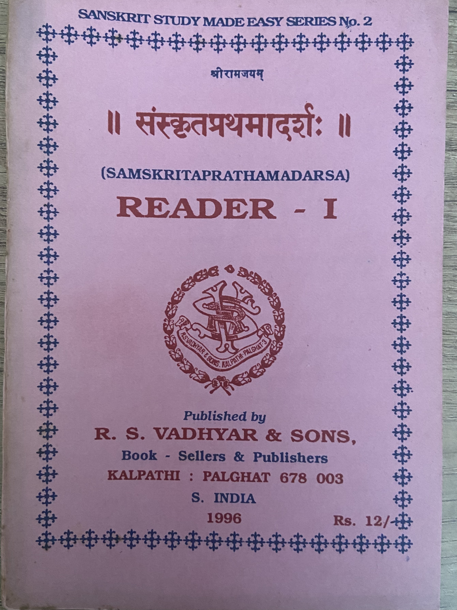 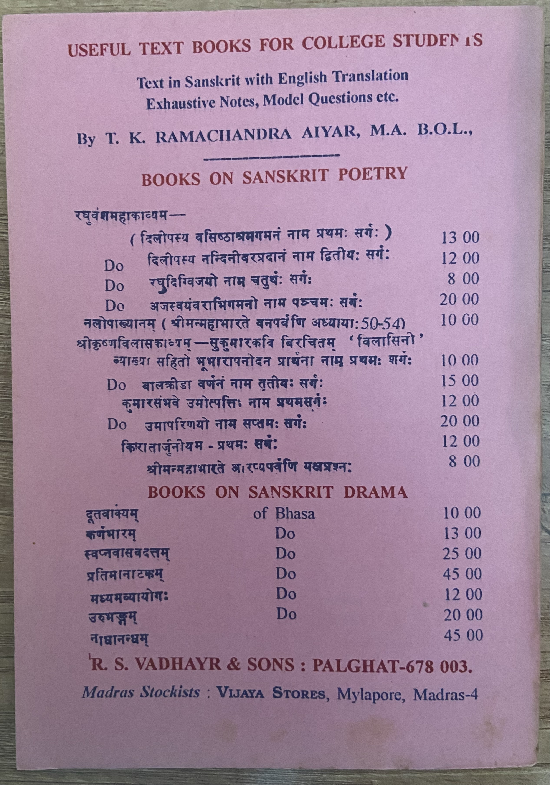
Lesson 1: सूर्यः प्रत्यक्षदेवता

पश्य, पूर्वस्यां दिशि सूर्य उदयते । तस्य प्राकाशः संप्रति रक्तः कोमलश्च वर्तते। सूर्यः उदयमानोऽन्धकारं नाशयति, प्राणिनः प्रबोधयति, कुसुमानि च विकासयति। सन्तो बालाः सूर्रोदयात् पूर्वम् उषसि प्रबुध्य स्वीयान् पाठान् पठन्ति।।
यदा सूर्यः क्रमेणोद्गच्छन् नभसो मध्यमारोहति तदा "मध्यान्हः" । मध्याह्नात् पूर्वो भागः "पूर्वाह्णः", अपरो भागः "अपराह्णः"। मध्याह्ने सूर्यस्य प्राकाशः कठोरो भवति। अपराह्णे सूर्यः क्रमेण पश्चिमां दिशमवतरति, तस्याम् अस्तं च गच्छति। अस्तमये भूयोऽपि तस्य प्रकाशो रक्तः कोमलश्व भवति।
सूर्यस्य भासा सर्वा सृष्टिः प्रकाशते। सूर्येण तुल्यो नान्यस्तेजस्वी वर्तते। सूर्यः प्रत्यक्षदेवता।।
सूर्योपासनया जनाः अरोगाः भवन्ति। "आरोग्यं भास्करात् इच्छेत्" इति हि महतां वचनम्। सः देवैः असुरैश्च नमस्कृतः।।
तथा च श्रीमद्वाल्मीकिरामायणे आदित्यहृदयस्तोत्रम् -
रश्मिमन्तं समुद्यन्तं देवासुरनमस्कृतम्। पूजयस्व विवस्वन्तं भास्करं भुवनेश्वरम्।।
तस्मात् त्वमपि तं नमस्कुरु।।
Translation
Title: Sun the deity that is visible
Look, in the East the Sun rises. At this time (संप्रति) his light is red and pretty. The sun that has risen (or The risen sun) (सूर्यः उदयमानः अन्धकारं) destroys darkness, awakens animals (in this context: all animals including man, insect etc.), makes flower to flower. Good children wake up at dawn before the Sun rises and read their lessons.
When the rising Sun gradually climbs to the middle of the sky then it is Noon (मध्यानः). The part (of the day) before afternoon is forenoon (पूर्वाह्णः), the part after (अपरः) is afternoon (अपराह्णः). In the afternoon (मध्याह्ने) the light of the Sun is harsh (कठोरः). In the afternoon the Sun gradually climbs down in the western direction and goes there to set (अस्तं) also. When it sets (अस्तमये), in the ground (भूयोऽपि), his light is red and pretty.
भूयोऽपि (again also) - भूयः (again) अपि
भासा (३ vibhakti)
By the glow of the Sun, all the creation is lighted. Compared to the Sun nobody else is brighter. Sun is the visible deity.
उपासना (f) serving सूर्योपासनया - samasam
By serving/worshipping the Sun (सूर्योपासनया) people are without disease (i.e. healthy). "May the Sun give health" - This is the saying of great men. He is worshipped by Devas and Asuras.
Thus in the Valmiki Ramayana the Aditya Hrudaya Stotram:
The one who has the rays (रश्मिमन्तं)
The one who raises well (समुद्यन्तं = सम् उद्यनतम् )
Worshipped by the Devas and Asuras (देवासुरनमस्कृतम्).
You should worship (पूजयस्व) the Sun (विवस्वन्तं) the cause of light (भास्करं) and the ruler of the world (भुवनेश्वरम्).
Therefore (तस्मात्), you also (त्वमपि) worship (नमस्कुरु) him (तं).
Vocabulary
| Word | Meaning |
|---|---|
| संप्रति (ind.) | at this time, at present, now |
| रक्तः (adj) | red |
| प्राणिनः | animals (plural) |
| प्रबोधयति (verb) | awaken |
| प्रबुध्यते | wake up |
| क्रमेण (adverb) | gradually, in the order |
| क्रमेण (ind.) | in regular course, by degrees |
| नभस् | sky |
| उद्गच्छन् | rising, climbing up. Comes from उद्गच्छति |
| अवतरति | come down, sink, arrive |
| अस्त | set |
| Word | Meaning | Word | Meaning |
|---|---|---|---|
| कोमल | pretty |
प्राणिन् - animal (singular)
रक्त also has a neuter form where it means blood.
प्रबुध्य -
नभसः - In the sky
देवासुरनमस्कृतम - samastha padam
पूजयस्व - लोट् लकारः मध्यम् पुरुषः आत्मनेपदी (पूज्यते)
Clarifications from Sanskrit teacher
Actually सन्तः is the first case plural of सत् शब्दः। सत् - existence / good. Here used in the sense of good. सत् is good and असत् bad. The formation is like "सन् सन्तौ सन्तः। So सन्तो बालाः - सन्तः बालाः - good boys
उषसि is सप्तमी एकवचनम्। उषस् शब्दः। Here used in the sense of "dawn / before sun rise". Generally it is used in the sense of both "dawn and dusk. Here the literal meaning is "in/at dawn".
स्वीयान् पाठान् means "their own lessons". स्व / स्वीय always used in the sense of "self". Se these are adjectives they get form in all the 3 genders. स्वीयान् is masculine second case plural because it is used as an adjective for पाठान्
Lesson 2: उद्यमः कार्यसाधकः
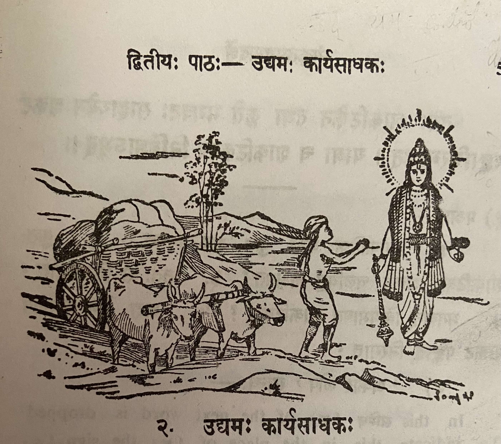
वर्षासु शकटिकः कश्चित् स्वशकटे भाण्डान्यारोप्य तं नगरान्तरमनयत्। द्वौ वृषौ तं शकटम् अवहताम्। रथ्यायां पङ्के शकटस्य चक्रं रुद्धमभूत्। रथ्यायां पङ्के शकटस्य चक्रं रुद्धमभूत्। वृषभौ बलवत् प्रहरन्नपि स शकटं चलयितुं नाक्षमत॥
ततः स भगवन्तं नारायाणं प्रति चिक्रोश। तस्याक्रोशं श्रुत्वा दयालुर्भगवांस्तस्य पुरस्तादाविरभूत्। अभाषत च शाकटिकम् - 'भो मूढ! किमिति जोषमास्से? मम साहाय्यं वाञ्छसि चेत् उत्तिष्ठ! धुर्यौ चोदय, चक्रं स्कन्धेन प्रचालय। एवं कृतेऽहं ते सहाय्यं करिष्यामि' - इति। एवमुक्त्वा भगवान् अन्तर्धानमकरोत्॥
Story title: The hard worker (उद्यमः) is the accomplisher of any object/work (कार्यसाधकः)
During rains/rainy season (वर्षासु) some (कश्चित्) cart man (शकटिकः) having loaded (आरोप्य) wares (भाण्डानि) on his (स्व) cart (शकटे) and took (अनयत्) it (तम् -refers to the cart) to another town (नगरान्तरम्). Two (द्वौ) bulls (वृषौ) drove/transported (अवहताम) that (तम्) cart (शकटम्). The cart's (शकटस्य) wheel (चक्रं) became (अभूत्) stuck/obstructed (रूद्धम्) in the mud (पङ्के) on the road (रथ्यायां). Inspite of beating (प्रहरन् अपि) both bulls (वृषभौ) forcefully/severely (बलवत्) he (स) was unable (न अक्षमत) to move (चलयितुम्) the cart (शकटं).
Therefore (ततः) he (स) cried (चिक्रोश) to/towards (प्रति) lord/god (भगवनतम्) Narayana (नारायाणम्). Having heard (श्रुत्वा) his (तस्य) cry (अक्रोशं) the kind god (दयालुः भगवान्) became manifest (अविरभूत्)) in front of him (तस्य पुरस्तात्). And (च) said (अभाषत) to the cart man (शाकटिकम्) - "Hey idiot (भो मूढ)! Why (किम) you are silent (जोषमास्से) like this (इति)? If (चेत्) you want (वाञ्छसि) my (मम) help (साहाय्यं) stand up (उत्तिषठ)! Drive (चोदय) the two bulls (धुर्यौ), push (प्रचालय) the wheel (चक्रं) with your shoulder (स्कन्धेन). If you do like that (एवं कृते) I (अहम्) will help (सहाय्यं करिष्यामि) you (ते)" - thus (इति)। Saying like this (एवम् उक्त्वा) the lord (भगवान्) disappeared (अन्तर्धानमकरोत्).
Notes:
प्रहरन् + अपि - प्रहरन्नपि। Here न् became double because of सन्धि rule. प्रहरन् is a present continuous कृदन्त like गच्छन्।
नाक्षमत - न + अक्षमत। आत्मनेपदी verb, past tense. लट् is: क्षमते क्षमेते क्षमन्ते
आस्से - root is "आस् - to sit". आत्मनेपदी लट् मध्यमपुरुष एकवचनम्
जोषम् + आस्से। जोषम् - is from the root "जुष् - to remain quit / silent"
नगरान्तरम् Is it a compound word?
Sandhis:
भाण्डान्यारोप्य = भाण्डानि आरोप्य इ when followed by any vowel becomes य्
नगरान्तरमनयत् = नगरान्तरम् अनयत्
रुद्धमभूत् = रूध्दम् अभूत्
प्रहरन्नपि = प्रहरन् + अपि
तस्याक्रोशं = तस्य अक्रोशं
दयालुर्भगवांस्तस्य = दयालुः भगवान् तस्य
पुरस्तादाविरभूत् = तस्य पुरस्तात् अविरभूत्
Vocabulary
| Word | Meaning | Word | Meaning |
|---|---|---|---|
| भाणडानि (n) | wares, goods | अभाषत | spoke |
| नगरान्तर (n) | another town | जोर्ष (in) | are keeping idle |
| रथ्या (f) | road | आस्ते | are keeping idle |
| पङ्क (n) | mud, slush | साहाय्यम् (n) | assistance |
| रूद्ध (n) | obstructed | वाञ्छसि | wish, crave |
| बलवत् (in) | severely | धुर्य (m) | bullock, horse |
| अक्षमत | was able | चोदय (p) | drive |
| चुक्रोश (p) | cried | स्कन्ध (m) | shoulder |
| दयालु | kind | प्रचालय (p) | push |
| अन्तर्धान | disappear | अकरोत् | did (past tense of करोति) |
भाषते is the लट् लकारः form of the word meaning "to speak". अभाषत is the लङ् लकारः (past tense) of the word.
Lesson 3: गोदोहः

इह गोपालः गां पयो दोग्धि। इयं पीवरा गौः। अस्य गोपालस्य तनयः प्रत्यहं प्रभाते दोहात् परमिमां गां प्रचारभूमिं नयति सायं च प्रत्यानयति। यद्यपि, गावः पलालं धान्यमन्नं पिण्याकं च भक्षयन्ति तथापि बालतृणे तासां महती प्रीतिः॥
गोः समीपे तिष्टति वत्सः। स प्रथमं गोः पयः किञ्चित् पिबति। अनन्तरं गोपो दोहनं करोति। स गोः पार्श्वे भूमावुपविश्य वामहस्तेन पात्रं गृहीत्वा दक्षिणहस्तेन दुग्धं दोग्धि। धेनोः क्षीरं, मधुरं पथ्यं पुष्टिकरं च॥
तत्रैका नारी बालकेन सह तिष्टति। सा क्षीराय समागता। तं बालं पयसा पोषयति। तेन स बुद्धिमान् अरोगश्च वर्तते॥
क्षीरं तक्रेण मिश्रितं दधि भवति। दधि मथित्वा नवनीतं गृह्यते। तप्तं नवनीतं घृतं सम्पद्यते। क्षीरं दधि तक्रं नवनीतं घृतं च मनुष्याणामत्यन्तमुपयुक्तानि वस्तूनि। तानि भोजनाय उपयुज्यन्ते। तानि विना भोजनं न रसकरं भवति। अत एवाहुः - ’विना गोरसं को रसो भोजनानाम्।’ - इति॥
गां मातरमिव पूजयन्ति भारतीया जनाः। उक्तं च श्रीमन्महाभारते - ’मातरः सर्वभूतानां गावः सर्वसुखप्रदाः’ - इति॥
Translation
Here (इह) a cowherd (गोपालः) milks (दोग्धि) cow (गां) milk (पयः - note it becomes पयो due to sandhi). She (इयं) is a milk yeilding (पिवरा) cow (गौः). This (अस्य) cowherd's (गोपालस्य) son/child/offspring (तनयः) every day (प्रत्यहं) in the morning (प्रभाते) after (परम्) milking (दोहात् ) leads (नयति) this (इमाम्) cow (गां) to the grazing field (प्रचारभूमिं) and (च) in the evening (सायं) brings it back (प्रत्यानयति). Even though (यद्यपि) cows (गावः) eat (भक्षयन्ति) straw (पलालं), grain (धान्यम्), rice (अन्नम्), punnakku (पिण्याकं) still (तथापि) tender grass (बालतृणे) is their (तासां) great (महती) desire (प्रीतिः).
The calf (वत्सः) stands (तिष्टति ) near (समीपे) the cow (गोः). He (स) first (प्रथमं) drinks (पिबति) some (किञ्चित्) cow's (गोः) milk (पयः). Afterward (अनन्तरं) the cowherd (गोपो - without sandhi गोपः ) does (करोति) the milking (दोहनं). He (स) sitting (उपविश्य) on the ground (भूमौ) near (पार्श्वे) the cow (गोः) holding (गृहीत्वा) a vessel (पात्रं) with his left hand (वामहस्तेन) with his right hand (दक्षिणहस्तेन) is milking (दोग्धि) the milk (दुग्धं). Cow's (धेनोः) milk (क्षीरं) is sweet (मधुरं) agreeable (पथ्यं) and (च) nourishing (पुष्टिकरं).
There (तत्र) a (एका) woman (नारी) stands (तिष्टति) with a boy (बालकेन सह). She (सा) has come (समागता) for the milk (क्षीराय). She nourishes (पोषयति) that (तं) boy (बालं) using milk (पयसा). Due to that (तेन) he (स) is (वर्तते) intelligent (बुद्धिमान्) and (च) without disease (अरोगः)।
Milk (क्षीरं) mixed (मिश्रितं) with buttermilk (तक्रेण) becomes (भवति) curd (दधि). After churning (मथित्वा) milk (दधि) we get (गृह्यते) butter (नवनीतं). Heated (तप्तं) butter (नवनीतं) turns into (सम्पद्यते) ghee (घृतं). Milk (क्षीरं), curd (दधि), buttermilk (तक्रं), butter (नवनीतं), and (च) ghee (घृतं) are people's (मनुष्याणाम्) absolutely (अत्यन्तम्) useful (उपयुक्तानि) items (वस्तूनि). They (तानि) are used (उपयुज्यन्ते) for meals (भोजनाय). Without (विना) them (तानि) meal (भोजनं) is (भवति) not (न) tasty (रसकरं). So (अतः) only (एव) they say (आहुः) thus (इति) - "Without (विना) cow's milk (गोरसं) (i.e. dairy products) what (को) is in a meal's (भोजनानाम्) taste (रसो)?"
Bharatiya (भारतीयाः) people (जनाः) (i.e. Indian) worship (पूजयन्ति) the cow (गां) like mother (मातरमिव = मातरम् इव). And (च) in the sacred Mahabaratha (श्रीमन्महाभारते) it is said (उक्तं) thus (इति) - "Cows are the mothers of all living things and the givers of all happiness."
Sandhis in this lesson. Intended to be in the order of occurance.
पयः दोग्धि = पयो दोग्धि
परम् + इमाम् = परमिमां
प्रति + आनयति = प्रत्यानयति
धान्यम् + अन्नम् = धान्यमन्नं
गोपः दोहनं = गोपो दोहनं
स गोः पार्श्वे भूमावुपविश्य वामहस्तेन पात्रं गृहीत्वा दक्षिणहस्तेन दुग्धं दोग्धि। This sentence without sandhi is: सः गोः पार्श्वे भूमौ उवुपविश्य वामहस्तेन पात्रं गृहीत्वा दक्षिणहस्तेन दुग्धं दोग्धि।
भूमौ + उपविश् = भूमावुपविश्य - the general rule is that if औ is followed by any vowel that becomes आव्. So in this case भूमौ + उपविश् => भूम् + आव् + उपविश् => भूमाव् + उपविश् => भूमावुपविश्य
अत एवाहुः -> अतः एव आहुः
Notes
पयो without sandhi is पयः which comes from पयस् meaning milk (also means water, but in this context milk). Here is a link to पयस् शब्द रूप
पिण्याकं - In Tamizh this is புண்ணாக்கு. This is a cake made from the material remaining after oil seeds are pressed/ground for oil. Popularly used as cattle feed. Oil seed cake.
बालतृणे तासां महती प्रीतिः The literal translation of this phrase is - "in tender grass is their great desire". The expression sounds awkward in English but it is common usage in Sanskrit. This translates better in Tamizh - இளம்புல் மீது அவற்றுக்கு அதிக ஆசை.
Vocabulary
| Word | Meaning | Word | Meaning |
|---|---|---|---|
| दोह m. | milking | पुष्टिकर a. n. | nourishing |
| गोपालक m. | milkman | तक्र n. | buttermilk |
| दोग्धि P | milks | दधि n | curd |
| पलाल n | hay | मथित्वा in | having churned |
| बालतृण n | tender crass | नवनीत n | fresh butter |
| पार्श्व n | side | भारतीय m | Indian |
| दुग्ध n | milk | सर्वभूत in | all living beings |
| पथ्य a n | agreeing with (diet) | वत्स m | calf |
Clarifications from Sanskrit teacher
गृह्यते I guess it must be from the root ग्रह् - to take. This form is like passive usage (adding य् between the root and the पुरुषप्रत्यय). Meaning is: butter has been taken by churning the curd
रसकरम् - रसं करोति इति रसकरः - that makes (the food) tastier
आहुः is the present tense 3rd person plural form. आह आहतुः आहुः। Root is ब्रूञ् - व्यक्तायां वाचि। to say it clear / to speak it clear
Lesson 4: स्वयङ्कृतोऽनर्थः

जातु काष्टविक्रेता कश्चित् काष्ठार्थं वनमगच्छत्। तत्र स क्कचिदासीनः परितो विलोक्य विलपितुमारभत। तं विलपन्तं वीक्षय तस्मिन् वने स्थितास्तरवः करुणया तमपृच्छन् - ’किं निमित्तं विलपसि?’ - इति॥ सोऽवदत् - ’मम कुठारस्य नालं नास्ति। तेनाहं कर्म कर्तुमशक्तोस्मि। अतो भोज्यालाभात् विलपामि’ - इति॥
ततः सर्वे तरवः समेत्य तस्मै कृपयैकं चिञ्चालगुडं ददुः। काष्ठच्छित् तं कुठारे संयोज्य तस्मिन् वने स्थितान् कतिचित् वृक्षान् अच्छिनत्।
तदा अन्ये वृक्षा रोदितुमारभन्त। तदवलोक्य सहकारवृक्षस्तान् प्राह - ’भो! बालिशाः किमिति विलपथ? नायं तस्य दोषः। स्वयंकृत एवायमनर्थोऽस्माभिः नालस्य दानेन’ - इति।
Translation
जातु काष्टविक्रेता कश्चित् काष्ठार्थं वनम् अगच्छत्।
Once (जातु) a wood seller (काष्टविक्रेता) for some wood (कश्चित् काष्ठार्थं) went to the forest (वनमगच्छत्।)।
जातु - can also be understood as "once upon a time"
तत्र सः क्कचिद् आसीनः परितः विलोक्य विलपितुम् आरभत।
There (तत्र) he (सः) after sitting (आसीनः) somewhere (क्कचिद्) and after looking (विलोक्य) around (परितः) started (आरभत) crying (विलपितुम्),
तं विलपन्तं वीक्षय तस्मिन् वने स्थिताः तरवः करुणया तम् अपृच्छन् - ’किं निमित्तं विलपसि?’ - इति॥
Seeing (वीक्षय) him (तं) crying (विलपन्तं) the trees (तरवः) standing (स्थिताः) in that (तस्मिन्) forest (वने) asked (अपृच्छन्) him (तम्) with pity (करुणया) - ’What (किं) reason/cause (निमित्तं) are you crying (विलपसि) ?’ - thus (इति).
सः अवदत् - ’मम कुठारस्य नालं न अस्ति। तेन अहं कर्म कर्तुम् अशक्तः अस्मि। अतः भोज्य अलाभात् विलपामि’ - इति॥
He (सः) said (अवदत्) - 'My (मम) axe's (कुठारस्य) handle (नालं) is not (न) there (अस्ति) (i.e. My axe does not have a handle). Due to that (तेन) I (अहं) am (अस्मि) powerless (अशक्तः) to do (कर्तुम्) work (कर्म). So (अतः) due to not getting (अलाभात्) food (भोज्य) I cry (विलपामि)’ - thus (इति).
ततः सर्वे तरवः समेत्य तस्मै कृपय एकं चिञ्चालगुडं ददुः। काष्ठच्छित् तं कुठारे संयोज्य तस्मिन् वने स्थितान् कतिचित् वृक्षान् अच्छिनत्।
Therefore (ततः) all (सर्वे) the trees (तरवः) together (समेत्य) with grace (कृपय) gave (ददुः) a tamarind tree stick (चिञ्चालगुडं) for him (तस्मै). The woodcutter (काष्ठच्छित्) joined/fixed (संयोज्य) it ("it" is understood) in that (तं) axe (कुठारे) and cut down (अच्छिनत्।) a few (कतिचित्) trees (वृक्षान्) that stood (स्थितान्) in that (तस्मिन्) forest (वने).
तदा अन्ये वृक्षाः रोदितुम् आरभन्त। तद् अवलोक्य सहकारवृक्षः तान् प्राह - ’भो! बालिशाः किमिति विलपथ? न अयं तस्य दोषः। स्वयंकृत एव अयम् अनर्थः अस्माभिः नालस्य दानेन’ - इति।
Then (तदा) the other trees started to cry. Seeing that the mango tree said to them - "Hey fools why are you crying like this? This (अयं) is not (न) his (तस्य) fault (दोषः). This (अयम्) disaster (अनर्थः) is only (एव) self-created (स्वयंकृत) due to us giving (दानेन) the handle (नालस्य)." - thus (इति).
Vocabulary
| Word | Meaning | Word | Meaning |
|---|---|---|---|
| जातु in. | once | भोज्य n. | food |
| काष्टविक्रेतृ m. | a wood seller | चिञ्चालगुड m. | a stick of the tamarind tree |
| काष्टार्थम् in. | for wood | काष्ठच्छित् m. | wood cutter |
| आसीन a , m | sitting | अच्छिनत् P. | cut |
| परितः in | all around | सहकारवृक्षः m. | a mango tree |
| विलपितुम् in | to weep | पादप m. | tree |
| कुठार m. | an axe | बालिश m. | foolish |
| नाल n. | handle |
Lesson 5: श्रीरामपट्टाभिषेकः
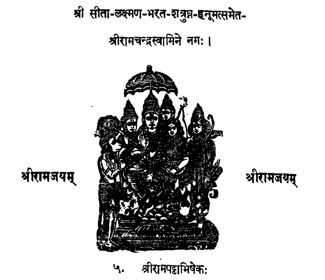
Lesson 6: अश्वः
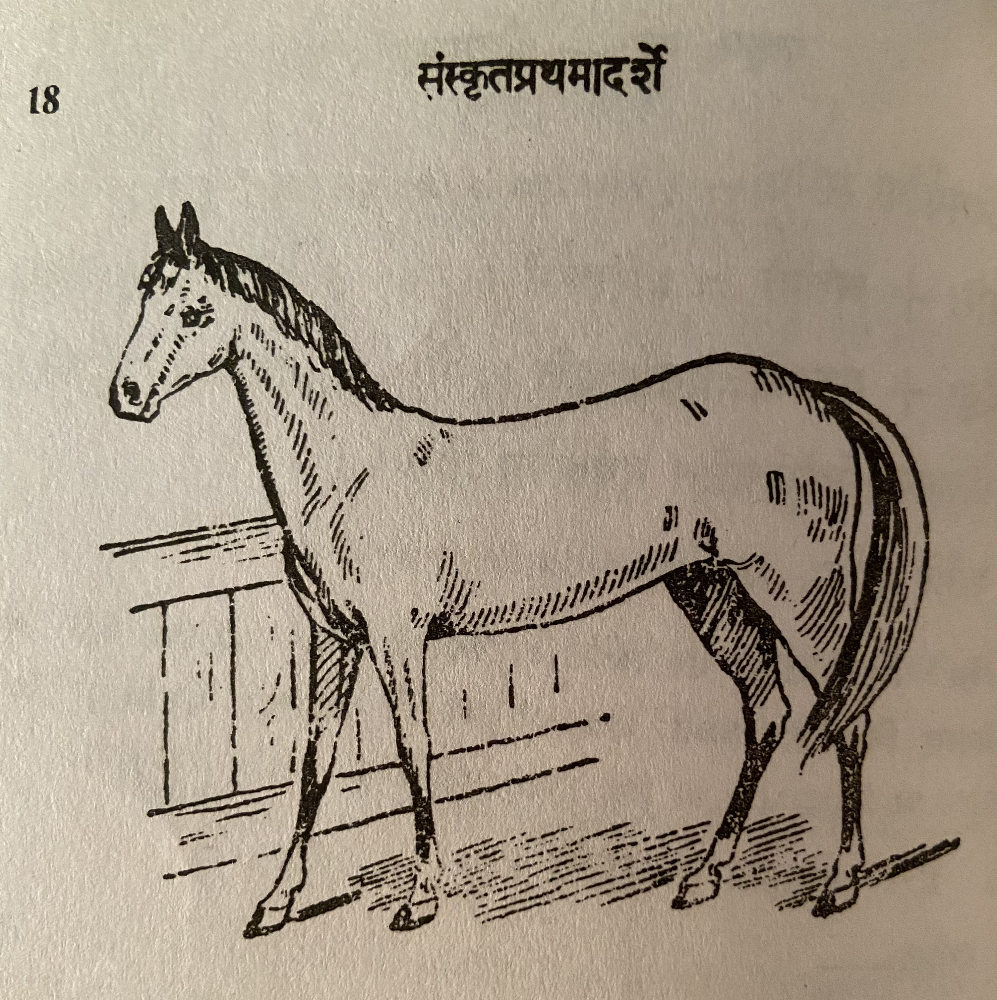
इह कश्चिदश्वस्तिष्ठति। गोरश्वस्य च को भेदः? अश्वो गवापेक्षया प्रांशुः। अश्वस्य पादाः दीर्घतराः। तस्य ग्रीवायां रोमराजिर्वर्तते। अश्वस्य श्रृङ्गे न स्तः। गोः शफो द्वेधा दलितः, अश्वस्य तु न। अतोऽश्वः शीघ्रतरं धावति॥
अयमश्वो रथे बध्यते। कैश्चित् द्वावश्वौ रथे बध्येते। राजानो धनिकाश्चोत्सवदिवसेषु चतुरः ततोऽधिकान् वा तुरगान् रथे योजयन्ति। समवर्णैः बहुभिरश्वैः युक्तो रथः सुरम्यो भवति॥
अश्वाः सुशिक्षिताः सञ्चारायोपयुज्यन्ते। वनमार्गेषु जनाः प्रायेणाश्वैरेव सञ्चारं कुर्वन्ति। अश्वस्य पृष्ठे पर्याणमास्तीर्य तस्मिन्नुपविशत्यश्वारोहः। मुखबद्धं खलीनमाकर्षन् सोऽश्वं नयति॥
अश्वाः सङ्ग्रामेषु राज्ञां साह्यमाचरन्ति। ते रणाङ्गणे महत् कौशलं प्रदर्शयन्ति। कदाचित् ते योधानां प्राणानपि रक्षन्ति। अतः प्राधान्येन राजानोऽश्वसैन्यं सर्वदैव संरक्षन्ति॥
Translation
Here (इह) some (कश्चित्) horse (अश्वः) stands (तिष्ठति). What (को) is the difference (भेदः) among the cow (गोः) and (च) the horse (अश्वस्य)? The horse (अश्वः) is strong (प्रांशुः) compared to (अपेक्षया) the cow (गव). The horse's (अश्वस्य) legs (पादाः) are longer (दीर्घतराः). There is (र्वर्तते) a line of hair (रोमराजि) on it's (तस्य)1 neck (ग्रीवायां). Horse (अश्वस्य) does not (न) have (स्तः) two horns (श्रृङ्गे). The cow's (गोः ) hoof (शफः) is split (दलितः) in two (द्वेधा), but (तु) horse's (अश्वस्य) do not (न). Therefore (अतः) the horse (अश्वः) runs (धावति) more quickly (शीघ्रतरं).
This (अयम्) horse (अश्वः) is tied (बध्यते) to a chariot (रथे). In some (कैश्चित्) chariot (रथे) two horses (द्वावश्वौ) are tied (बध्येते). Kings (राजानः) and (च) wealthy persons (धनिकाः), on festival days (उत्सवदिवसेषु), tie/connect (योजयन्ति) four (चतुरः) or (वा) more (अधिकान्) horses (तुरगान्) to a chariot (रथे). A chariot (रथः) joined (युक्तः) with many (बहुभिः) horses (अश्वैः) of the same color (समवर्णैः) is very beautiful (सुरम्यः).
Well trained (सुशिक्षिताः) horses (अश्वाः) are used (उयुज्यन्ते) for movement (सञ्चाराय). People (जनाः) move (सञ्चारं कुर्वन्ति) in the forest (वनमार्गेषु) only (एव) with horses (अश्वैः) for travelling (प्रायेण). Spreading (आस्तीर्य) the saddle (पर्याणम्) on the horse's (अश्वस्य) back (पृष्ठे), sitting (उपविशत्य) on it (तस्मिन्) is the horse rider (अश्वारोहः). Holding (आकर्षन्) bridle (मुखबद्धं खलीनम्) he (सः) leads (नयति) the horse (अश्वं).
In wars (सङ्ग्रामेषु) horses (अश्वाः) do (आचरन्ति) help (साह्यम्) to the kings (राज्ञां)2.They (ते) display (प्रदर्शयन्ति) great (महत्) cleverness (कौशलं) in the battle field (रणाङ्गणे). Sometimes (कदाचित्) they (ते) protect (रक्षन्ति) the warriors' (योधानां) lives (प्राणान्) also (अपि). Therefore (अतः) kings (राजानः) always (सर्वदैव) mainly (प्राधान्येन) keep/take care of (संरक्षन्ति) horse army (अश्वसैन्यम् - cavalry).
1Note: तस्य means his but in English animals are referred to as it.
2 This sentence does not have a direct translation to English. The rough "correct" translation is - In wars horses perform king's help. राज्ञां is the षष्ठी विभक्ति बहुचवन of राजन् - i.e. possessive plural.
Useful links:
Notes
Similar words
| Different Words | Meaning | ||
|---|---|---|---|
| तुरगः | तुरङ्गः | तुरङ्गमः | Horse |
| विहगः | विहङ्गः | विहङ्गमः | Bird |
| पतगः | पतङ्गः | पतङ्गमः | Bird |
| भुजगः | भुजङ्गः | भुजङ्गमः | Snake |
| साह्यम | साहाय्यम् | साहायहम् | help/aid |
Vocabulary
| Word | Meaning | Word | Meaning |
|---|---|---|---|
| ग्रीवा f | neck | पर्याण n | saddle |
| रोमराजि f | a line of hair | अश्वारोह m | a horse man |
| श्रृङ्ग n | a horn | खलीन n | bit of a bridle |
| शफ m | a hoof | सङ्ग्राम m. a. | battle |
| दलित a. m. | split | योधा m | warrior |
| समवर्ण a. m. | of uniform color | अश्वसैन्य n | cavalry |
Lesson 7: श्रृगालस्य कौशलम्
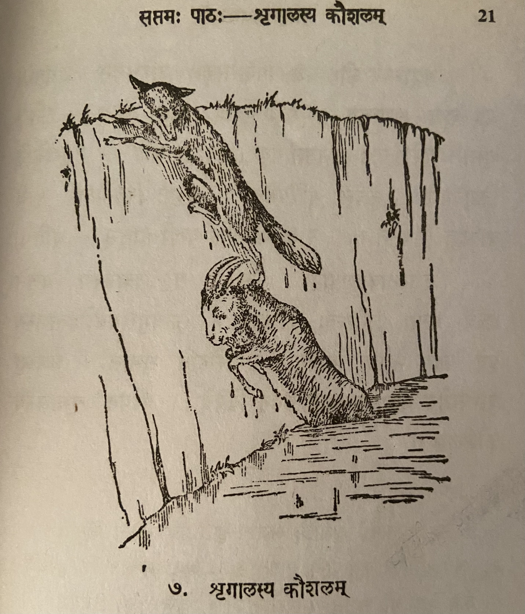
चित्रेऽस्मिन् एकः श्रृगालोऽजस्य पृष्ठे पदं निधाय तिष्ठति। कथय, किं निमित्तं, स तथा तिष्ठति?
अयं श्रृगालः पानीयां पातुं वापीं गतो जले ममज्ज। तेन बहिर्गन्तुं बहवो यत्नाः कृताः। किन्तु ते सर्वे मुधाऽभवन्॥
अत्रान्तरे कोऽप्यजः1 पिपासाकुलः परिभ्रमन् तत्रागतः। अपृच्छच्च श्रृगालम् - ’सखे अपि मधुरं जलम्’ - इति। श्रृगालः परेषां वञ्चने नितरां पटुः। अतः स आह - ’मधुरमित किमुच्यते! केवलं पीयूषमेव! प्रभूतं पिबतोऽपि न मे वाञ्छा निवर्तते॥ नशक्नोम्येतां2 वापीं हातुम्’ - इति॥
अजस्तावदृजुबुद्धिः3। अतः स वञ्चकस्य वचनं सत्यं मत्वा शनैरन्तः4 प्रविशति। ऊर्ध्वमुखमवरोहतस्तस्य5 पृष्ठे पदं निधाय वापीतः समारोहति श्रृगालः। अजस्तु6 वाप्यामेव7 मञ्जनोन्मञ्जने कुर्वन् विपेदे। पश्यत! श्रृगालस्य कौशलम्॥
उपदेशः - वञ्चकस्य वचनं न विश्वसनीयम्। तस्योपकारोऽपि8 न कर्तव्यः॥
1कः अपि अजः -> (visarga preceded by अ + अ) कोऽपि अजः -> (इ/ई + vowel) कोऽप्यजः
2न शक्नोमि एताम्
3अजः तावत् ऋजुबुद्धिः -> (ः + त = स्त) अजस्तावत् ऋजुबुद्धिः -> (त् + vowel = द्) अजस्तावतदृजुबुद्धिः
4Visarga (ः ) preceded by a vowel other than अ or आ and followed by a vowel or voiced consonant changes to र्. शनैः अन्तः -> शनैरन्तः
5ऊर्ध्वमुखमवरोहतः तस्य -> ऊर्ध्वमुखमवरोहतस्तस्य
6अजः तु -> अजस्तु
7वाप्याम् एव -> वाप्यामेव वापी is स्त्रीलिङ शब्द line नदी. वाप्याम् is द्वितीया विभक्ति एक वचन.
8 तस्य उपकारः अपि -> तस्योपकारोऽपि (अ + उ = ओ)
Translation
Title: The Jackal's Cleverness
In this (अस्मिन्) picture (चित्रे) one (एकः) jackal (श्रृगालः), having placed (निधाय) a foot (पदं) on a goat's (अजस्य) back (पृष्ठे ), is standing (तिष्ठति). Say what (किं) reason (निमित्तं) is he (सः) standing (तिष्ठति) such (तथा).
This (अयं) jackal (श्रृगालः) went (गतः) to the well (वापीं) to drink (पातुं) water (पानीयां) (and) was immersed in (ममज्ज) the water (जले) (i.e. fell in). A lot of (बहवः) effort (यत्नाः) was done (कृताः) by him (तेन) to get out (बहिर्गन्तुं). But (किन्तु) they (ते) all (सर्वे) were (अभवन्) in vain (मुधा).
In the meantime (अत्रान्तरे) some (कः अपि) wandering (परिभ्रमन्) goat (अजः)1 afflicted by thirst (पिपासाकुलः) came there (तत्रागतः). (He) asked (अपृच्छच्च) the jackal (श्रृगालम्) thus (इति) - "Friend (सखे) is (अपि) the water (जलम्) sweet (मधुरं)". The jackal (श्रृगालः) is very much (नितरां) skilled in (पटुः) deceiving (वञ्चने) others (परेषां). So he said - "What can I say (किमुच्यते) (about) how sweet (मधुरम्) it is (इति)? Only (केवलम्) (like) nectar (पियूषम्) really (एव)! Even (अपि) drinking (पिबतः) a lot (प्रभूतं) my (मम्) desire (वाञ्छा) does not cease (निवर्तते). (I) am not (न) able to (शक्नोमि) leave (हातुम्) this (एताम्) well (वापीं)."
Goat (अजः) is so very (तावत्) straightforward (ऋजुबुद्धिः). So (अतः) he (सः) thinking (मत्वा ) the cheater's (वञ्चकस्य) words (वचनं) are true (सत्यं) slowly (शनैः) entered (प्रविशति) inside (अन्तः) (the well). As he descended with face upwards (ऊर्ध्वमुखमवरोहतः) (the goat descended walking backwards) placing (निधाय) a leg (पदं) on his back (पृष्ठे) the jackal (श्रृगालः) climbed out (समारोहति) from the well (वापीतः). But (तु) the goat (अजः) is in trouble (विपेदे) bobbing up and down (मञ्जनोन्मञ्जने कुर्वन्) in the well (वाप्याम्) only (एव). See (पश्यत) the jackal's (श्रृगालस्य) cleverness (कौशलम्).
Teaching/moral (उपदेशः) - Cheater's (वञ्चकस्य) words (वचनं) are not (न) credible (विश्वसनीयम्). Do not (न) do (कर्तव्यः) any help (उपकारः) also (अपि) to them (तस्य).
Vocabulary
| Word | Meaning | Word | Meaning |
|---|---|---|---|
| पानीय n | water | ऋजुबुद्धि a. m. | straightforward |
| वापि f | well, small water body | वञ्चक m | deceitful, also jackal |
| मुधा in | in vain | शनैः in | slowly |
| अत्रान्तरे in | in the meanwhile | वापीतः in | from the well |
| पिपासाकुल a. m. | afflicted by thirst | मज्जनोन्मज्जने n | sinking and coming up |
| पटु a m | clever | नितराम् in | very much |
| वाञ्छा f | desire | कौशलम् n | cleverness |
| हातुम in | to leave | ममज्ज | sank/immersed |
Lesson 8: व्याघ्रचित्रकौ

व्याघ्रो वन्यः पशुः। सः हिंस्राणां मृगाणां मध्येऽतीव क्रूरः। इतरेभ्यः पशुभ्यो व्याघ्रः शीघ्रतरं धावति। व्याघ्रस्य देहे सर्वत्र कृष्णा विन्दवो रेखाश्च सन्ति। यदि तस्य स्वभावः शान्तोऽभविष्यत् तर्हि जनास्तं मृगान्तरापेक्षया अधिकतरम् आदरिष्यन्त॥
चित्रकस्तु व्याघ्रादपि सुन्दरः। चित्रकायः इत्यप्ययं व्यपदिश्यते। एकदा चित्रकः कश्चित् स्वस्य रूपेण गर्वितो भूत्वा मृगसभायामेवमब्रवीत् - "सिंहो न मम तुलां भजते। अतोऽहमेव मृगराज्येऽभिषेक्तव्यः" - इति॥
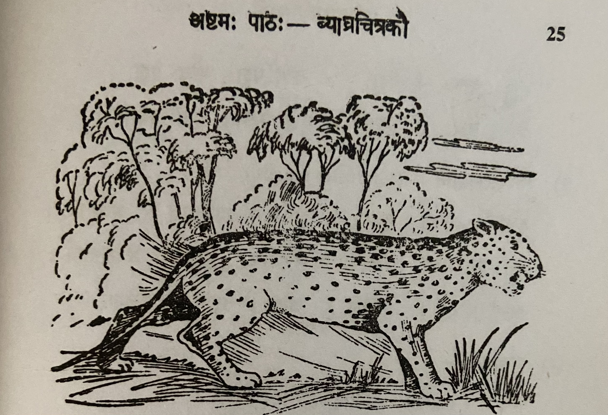
तेषां मध्यतः क्रोष्टोवाच - "आर्य! त्वमेकं गजं निहत्य मृगपरिवारं तर्पय; येन त्वां मृजराज्येऽभिषेक्ष्यामः" - इति। तद्वचनं श्रूत्वा लज्जितश्चित्रकः - "इदानीमेव आगमिष्यामि" - इत्युक्त्वा ततः प्रस्थितः तद्वनमेव परित्यज्य गतः॥
Translation
Title: Tiger and Cheetah
Tiger (व्याघ्रः) is a wild (वन्यः) animal (पशुः). Amidst (मध्ये) of the violent (हिंस्राणां) animals (मृगाणां) he (सः) is very (अतीव) cruel (क्रूरः). Tiger (व्याघ्रः) runs (धावति) faster (शीघ्रतरं) than other (इतरेभ्यः) animals (पशुभ्यः). Everywhere (सर्वत्र) on the tiger's (व्याघ्रस्य) body (देहे) black (कृष्णा) spots (विन्दवः) and (च) lines (रेखाः) are there (सन्ति). If (यदि) it's (तस्य) temperament (स्वभावः) had been (अभविष्यत्) calm (शान्तः) then (तर्हि) people (जनाः) would have respected (आदरिष्यन्त) it (तम्) more than other animals (मृगान्तरापेक्षया).
Cheetah (चित्रकः) is certainly (अस्तु) (more) beautiful (सुन्दरः) than Tiger (व्याघ्रादपि). Thus (इति) this (अयं) is also (अपि) called (व्यपदिश्यते) mult-coloured body (चित्रकायः). i.e. another name for cheetah is चित्रकायः.
Once (एकदा) some (कश्चित्) cheetah (चित्रकः), having become (भूत्वा) proud (गर्वितः) due to it's own (स्वस्य) form (रूपेण), said (अब्रवीत्) like this (एवम्) in the assembly of animals (मृगसभायाम्) - "Lion (सिंहः) is not (न) revered/adored (भजते) as my (मम) equal (तुला). Therefore (अतः) I (अहम्) alone (एव) should be anointed (अभिषेक्तव्यः) as king of animals (मृगराज्ये)" - thus (इति).
In the midst of them (तेषां मध्यतः) the jackal (क्रोष्टः) spoke (उवाच) - "Noble one (आर्य)! You (त्वम्) after having killed (निहत्य) one (एकम्) elephant (गजम्), please (तर्पय) the animal followers/family (मृगपरिवारं) in order that (येन) (we) anoint (अभिषेक्ष्यामः) you (त्वां) king of animals (मृगराजे)" - thus (इति). Listening (श्रुत्वा) to those (तत्) words (वचनम्) the embarrassed (लज्जितः) cheetah (चित्रकः) - "(I) will return (आगमिष्यामि) now (इदानीम्) only (एव)" - having said (उक्त्वा) thus (इति), after that (ततः) departed (प्रस्थितः) (and) having abandoned (परित्यज्य) that (तत्) forest (वनम्) itself (एव) went away (गतः).
Vocabulary
| Word | Meaning | Word | Meaning |
|---|---|---|---|
| वन्य a. m. | wild | मृगराज्य n. | kingdom of animals |
| पशु m. | a beast | क्रोष्टा m. | a jackal |
| हिंस्र a. m. | cruel | मृगपरिवार m. | animal follower |
| विन्दव m. | dots, spots | खग m. | a bird |
| चित्रक m. | a cheetah | तुला f. | equality |
| इतर | other |
विन्दु is a spot, a dot or mark. The form is like गुरु.
इतरेभ्यः - पञ्चमी विभक्ति
Lesson 9: अश्वशारङ्गयोः कथा

कश्चिदश्वः सारङ्गश्चैकस्मिन् केदारे नित्यं चरतः, महता च स्नेहेन कालं नयतः। एवं स्थिते तौ जातु कलहपरौ जातौ। तयोः सारङ्गः श्रृङ्गबलेनाश्वं केदारान्निरवासयत्।।
ततः सारङ्गस्य प्रतीकारं कर्तुमिच्छन्नश्वः कञ्चिन्मनुजं प्राप्य तस्य साहाय्यं ययाचे। स मनुजः परं प्रहृष्टः तस्य पृष्टे पर्याणमारोप्य मुखे खलीनं दत्तवा तमारोहत्। तस्य गतिं परीक्षमाणः कशया तं तीव्रमताडयत्। स्वकार्यार्थी तत् सर्वमसहताश्वः। तस्य मनुजस्य साहाय्येन सोऽश्वः सारङ्गमजयत्।।
कृतकृत्यः स तुरगो मनुजं निजगाद - "सिद्धं मे समीहितमधुना। पर्याणं खलीनं चापनीय मां गमनायानुमन्यस्व" - इति। तन्निशम्य मनुजस्तं बभाषे - "मया तवैतावत् प्रयोजनमिति जानाम्यहम्। किन्त्वितः परं त्वया मे प्रयोजनं भविष्यति। कथमहं त्वां विसृजेयम्?" - इति।।
ततो यावज्जीवं सोश्वः तस्य मनुजस्य वाजिशालायां बन्धने स्थितः परतन्त्रतया परां पीडामन्वभूत्। परतन्त्रस्य कुतः सुखम्?
उक्तं च सुभाषितरत्नाकरे - "सर्व परवशं दुःखं सर्वमात्मवशं सुखम्" - इति।।
Translation
Removing Sandhi and translating...
कश्वित् अश्वः सारङ्गः च एकस्मिन् केदारे नित्यं चरतः, महता च स्नेहेन कालं नयतः।
Some horse and deer are grazing/wandering in a field daily, and are living very harmoniously.
The literal meaning of महता च स्नेहेन कालं नयतः does not translate well. Literal meaning - spending time with a lot of love.
एवं स्थिते तौ जातु कलहपरौ जातौ। तयोः सारङ्गः श्रृङ्गबलेन अश्वं केदारात् निरवासयत्।।
In this state (एवं स्थिते) some day (जातु) they become quarrellers (कलहपरौ जातौ). Among the two (तयोः), the deer (सारङ्गः) with the strength of (his) horns (श्रृङ्गबलेन) banished (निरवासयत्) the horse (अश्वं) from the field (केदारात्).
ततः सारङ्गस्य प्रतीकारं कर्तुम् इच्छन् अश्वः कञ्चिन् मनुजं प्राप्य तस्य साहाय्यं ययाचे।
Then, desiring to retaliate against the deer, the horse found some man and begged his help.
सारङ्गस्य प्रतीकारं - literal translation is "deer's retaliation". Clarify with teacher.
सः मनुजः परं प्रहृष्टः तस्य पृष्टे पर्याणमारोप्य मुखे खलीनं दत्तवा तम् आरोहत्।
Exceedingly pleased (परं प्रहृष्टः) that (सः) man (मनुजः) having placed a saddle (पर्याणमारोप्य) on his (horse's) back (पृष्टे) a bridle (खलीनं) on his (horse's) face (मुखे) and climbed upon him (horse) (आरोहत्)
तस्य गतिं परीक्षमाणः कशया तं तीव्रम् अताडयत्।
To evaluate/check (परीक्षमाणः) his (तस्य i.e. horse's) speed (गतिं) (the man) severely (तीव्रम्) beat (अताडयत्) him (तं - i.e. horse).
स्वकार्यार्थी तत् सर्वम् असहत् अश्वः।
For his work (goal) (स्वकार्यार्थी) the horse (अश्वः) bore (असहत्) all that (तत् सर्वम).
तस्य मनुजस्य साहाय्येन सः अश्वः सारङ्गम् अजयत्।
With the man's help that horse defeated the deer.
कृतकृत्यः सः तुरगः मनुजं निजगाद - "सिद्धं मे समीहितम् अधुना। पर्याणं खलीनं च अपनीय मां गमनाय अनुमन्यस्व" - इति।
That horse (सः तुरगः) which accomplished his objective (कृतकृत्यः) said (निजगाद) to the Man (मनुजं) - "Now (अधुना) my (मे) wish/desire (समीहितम्) is accomplished (सिद्धं). Remove (अपनीय) the saddle (पर्याणं) and (च) bridle (खलीनं) , permit (अनुमन्यस्व) me (मां) to go (गमनाय)."
तं निशम्य मनुजः तं बभाषे - "मया तव एतावत् प्रयोजनं इति जानामि अहम्। किन्तु इतः परं त्वया मे प्रयोजनं भविष्यति। कथम् अहं त्वां विसृजेयम्?" - इति।
Having heard (निशम्य) him (तं i.e. the horse) the man (मनुजः) said (बभाषे) to him (तं i.e. the horse) - "I know (जानामि अहम) by me/because of me (मया) that much (एतावत्) use (benefit) was yours (तव्). But (किन्तु) from now (इतः परं) you will be (भविष्यति) my (मे) for my use (प्रयोजनं). How (कथम्) can I (अहं) release (विसृजेयम्) you (त्वां) ?"
ततः यावत् जीवं सः अष्वः तस्य मनुजस्य वाजिशालायां बन्धने स्थितः परतन्त्रतया परां पीडाम् अवभूत्। परतन्त्रस्य कुतः सुखम्?
After that, the rest of his life (यावत् जीवं) that horse (सः अष्वः) stayed (स्थितः) bound (बन्धने) in the Man's (मनुजस्य) stable (वाजिशालायां)
Check how to remove sandhi for परतन्त्रतया परां पीडामन्वभूत्। परतन्त्रस्य कुतः सुखम्? Also meaning.
उक्तं च सुभाषितरत्नाकरे - "सर्व परवशं दुःखं सर्वमात्मवशं सुखम्" - इति।।
A saying from the Subhashita Ratnakara (book) - Everything that is subject to another's will (परवशं) brings sadness, everything that is in one's own will (control) gives happiness.
उपदेशः (moral) -
एकस्य जयार्थमन्यमाश्रयन् जनः स्वयमनर्थे पतति।।
एकस्य जयार्थम् अन्यम् आश्रयन् जनः स्वयम् अनर्थे पतति।
To win over one (someone) people who take the help of others will themselves fall into difficulty/disadvantage.
Vocabulary
| Word | Meaning | Word | Meaning |
|---|---|---|---|
| सारङ्ग (m) | deer | कृतकृत्य (m) | he who has accomplished his object |
| केदार (m) | field | पर्याण (n) | saddle |
| कलहपर (m) | quarreller | समीहित (n) | wish, desire |
| निरवासयत् (P) | banished | एतावत् (n) | this much |
| प्रतीकार (m) | retaliation | वाजिशाला (f) | stable |
| ययाचे (U) | begged | बन्धन (n) | bondage |
| खलिन (n) | bridle |
जातु (in) - some day
अपनीयते - to be extracted
निशम्य - having heard
विसृजति - release
Lesson 10: कोकिलः

नायं सुरुपो विहगो नापि कायोऽस्य भासुरः ।
न चास्य पक्षयोः सन्ति चित्रवर्णा विशेषकाः ॥ १
केवलं काकसदृशो रुपे वर्णेऽप्ययं खगः ।
अथापि मधुरं गायन् अयं जगति पूज्यते ॥ २
रसालशिखरासीनो वसन्ते मधुरं स्वनन् ।
कस्य नो हृदयानन्दं जनयत्येष कोकिलः ॥ ३
काकः कृष्णः पिकः कृष्णः को भेदः पिककाकयोः ।
वसन्तकाले संप्राप्ते काकः काकः पिकः पिकः ॥ ४
किं कुलेन विशालेन किं रूपेण सुशोभिना ।
महत्त्वे कारणं तावत् वाग्रसो जनरञ्जकः॥ ५
Translation
This lesson is a poem about the Cuckoo bird. The couplets without सन्धि
न अयं सुरुपः विहगः न अपि कायः अस्य भासुरः ।
This (अयं) is not (न) a beautiful bird and (अपि) nor (न) its body shining (भासुरः).
न च अस्य पक्षयोः सन्ति चित्रवर्णा विशेषकाः ॥
And (च) attractive/special (विशेषकाः) colors (चित्रवर्णा) are not (न) present (सन्ति) on those (अस्य) two wings (पक्षयोः)
केवलं काकसदृशः रुपे वर्णे अपि अयं खगः ।
This (अयं) bird (खगः) also (अपि) only (केवलं) looks like a crow (काकसदृशः) in form (रुपे) and color (वर्णे).
अथापि मधुरं गायन् अयं जगति पूज्यते ॥
Moreover (अथापि) this sweet (मधुरं) singing (गायन्) is praised (पूज्यते) by all (जगति).
रसाल शिखरासीनः वसन्ते मधुरं स्वनन् ।
Sitting on top of (शिखरासीनः) the mango tree (रसाल) in Spring (वसन्ते) sweet (मधुरं) sounding (स्वनन्).
कस्य नो1 हृदयानन्दं जनयत्येष कोकिलः ॥
This (एष) cuckoo (कोकिलः), (in) for whose (कस्य) heart's joy (हृदयानन्दं) does it not (नो) cause/produce (जनयति)
Above is close to literal translation. Here is a what it means:
This cuckoo, in whom does it not produce joy.
1Both न & नो are negative words. Meaning "no / not". नो is also an अव्यय like न
काकः कृष्णः पिकः कृष्णः को भेदः पिककाकयोः ।
Crow (काकः) is black (कृष्णः), cuckoo (पिकः) is black (कृष्णः) what (is the) (कः) difference (भेदः) between the cuckoo and crow (पिककाकयोः)
वसन्तकाले संप्राप्ते काकः काकः पिकः पिकः ॥ ४
When spring (वसन्तकाले) happens/is attained (संप्राप्ते) crow (काकः) is crow (काकः) cuckoo (पिकः) is cuckoo (पिकः)
किं कुलेन विशालेन किं रूपेण सुशोभिना ।
महत्त्वे कारणं तावत् वाग्रसो जनरञ्जकः॥ ५
From teacher:
किम् (what) कुलेन विशालेन (by big / renowned family) रूपेण सुशोभिना (by looking handsome) महत्त्वे (for greatness) कारणम् (reason) तावत् (that is) वाग्रसो (वाक् + रसः - attractive speech) जनरञ्जकः (that always pleases / attracts the people).
To summarize it: whatever the royal family you were born in however good looking you are but the reason for greatness is that soft and nice words which always attracts the people
Vocabulary
| Word | Meaning | Word | Meaning |
|---|---|---|---|
| कोकिल m. पिक m. | cuckoo | विशाल a. n. | great, noble |
| भासुर a. m. | shining | महत्व n | greatness |
| विशेषक m. | line, dot | वाग्रस m | sweetness of speech |
| रसाक m | mango tree | जनरञ्जक a. m. | that which attracts people |
| शिखर n | top |
Lesson 11: कूपः

अयं रमणीयः कूपः। पानाय योग्यं जलं कूपे लभ्यते। सरसो जलं स्नानेेन मलिनं भवति। नद्याः सलिलं प्रकृत्यैव कलुषम्। समुद्रस्य वारि लवणम्। कूपस्य उदकम् अनाविलं पानयोग्यं च भवति॥
चित्रं पश्य। कूपस्य समन्तात् बहूनि सन्ति क्षेत्राणि। ततो1 नातिदूरे दृश्यन्ते कतिचन गृहाणि। तेषु गृहेषु वसन्त्यः स्त्रियः अस्मात्2 कूपाज्जलं3 नयन्ति॥
अस्य कूपस्य समीपे चतस्रः स्त्रियः सन्ति4। द्वे स्त्रियौ जलघटं शिरसि निधाय गच्छतः। अपरा कूपाज्जलमुद्धरति5। अन्या जलमुद्धर्तुं घटहस्ता तिष्ठति॥
अयमगाधः कूपः। अतोऽस्मात् कूपाज्जलस्योद्धरणाय दारुचक्रमुपयूज्यते6। पश्य, कूपस्य पार्श्वयोः द्वौ स्तम्भौ निखातौ। तयोरुपरि8 तिर्यक् दारुदण्डो योजितः। तस्य मध्ये दारुचक्रं पिनद्धम्। तस्य चक्रस्यान्तराले रज्जुः प्रवेशिता। तस्या रज्जोरग्रेण घटं कण्ठे बद्ध्वा तं कूपेऽवतारयन्ति, जलं चोद्धरन्ति9। दारुचक्रस्य स्थानेऽयश्चक्रमपि कैश्चिदुपयुज्यते10। अद्यत्वे भूयसा वैद्युतशक्तिमुपयुज्य यन्त्रेण जनाः कृष्याद्यर्थे11 कूपात् जलमुद्धरन्ति॥
Notes
| Sandhi removed / Explanation |
|---|
| 1ततः - there / from there. |
| 2अस्मात् - इदं शब्द पुंल्लिङ्ग एकवचनम् - meaning "from this" |
| 3कूपात् जलं -> कूपाज्जलं |
| 4The literal translation of this sentence is - "This well's near there are four women". The possessive case is used like this in Sanskrit. |
| 5कूपात् जलम् उद्धरति = कूपाज्जलमुद्धरति |
| 6अतः अस्मात् कूपात् जलस्य उद्धरणाय दारु चक्रम् उपयुज्यते। The literal translation - Therefore (अतः) from that (अस्मात्) well (कूपात्) water's (जलस्य) raising (उद्धरणाय) wooden wheel (दारुचक्रम्) is being used (उपयुज्यते). जलस्य उद्धाय (water's raising) is awkward when translated to English. But it is a valid expression in Sanskrit. कूपात् is in the 4th case which is used for "from well". |
| 7In English we say "Near the well". In Sanskrit the same is written as कूपस्य पारश्वे which literally translates to "well's near" which means "by the side of the well" |
| 8तस्योः उपरि -> तस्योरुपरि |
| 9तस्याः रज्जोः अग्रेण घटं कण्ठे बद्ध्वा तं कूपे अवतारयन्ति, जलं च उद्धरन्ति |
| 10दारुचक्रस्य स्थाने अयश्चक्रम् अपि कैश्चिद् उपयुज्यते। कैश्चिद् - कैः (किम् शब्द पुंल्लिङ्ग तृतीया बहुवचनम्) + चिद् affix. Once the चिद् affix is added it will become अव्यय। कैश्चिद् - by some people |
| 11 कृषि + आदि + अर्थे -> कृष्याद्यर्थे for farming and other things |
Translation
This one (अयं) is a beautiful (रमणीयः) well (कूपः). Water (जलं) suitable (योग्यं) for drinking (जलं) is available (लभ्यते) in the well (कूपे). Pond (सरसः) water (जलं) is (भवति) dirty/impure (मलिनं) because of bathing (स्नानेेन). River's (नद्याः) water (सलिलं) by nature (प्रकृत्या) itself (एव) is impure (कलुषम्). Ocean's (समुद्रस्य) water (वारि) is salt(y) (लवणम्). Well's (कूपस्य) water (उदकम्) is (भवति) pure (अनाविलं) and suitable for drinking (पानयोग्यं).
See (पश्य) the picture (चित्रं). Well's (कूपस्य) all around (समन्तात्) (i.e. all around the well) lots of (बहूनि) lands (क्षेत्राणि) are there (सन्ति). Not (न) too far (अतिदूरे) from there (ततः) some (कतिचन) houses (गृहाणि।) are visible (दृश्यन्ते). The women (स्त्रियः) living (वसन्त्यः) in those houses (गृहेषु) take (नयन्ति) water (जलं) from that well (कूपात्)3.
Near (समीपे ) this (अस्य) well (कूपस्य) there are (सन्ति) four (चतस्रः ) women (स्त्रियः)5. Two (द्वे) women (स्त्रियौ), having placed (निधाय) water pots (जलघटं) on their head (शिरसि), are going (गच्छतः). Another (अपरा) raises (उद्धरति) water (जलम्) from the well (कूपात्). Another (अन्या) stands (तिष्ठति) pot in hand (घटहस्ता) wanting to raise (उद्धर्तुम्) water (जलम्).
That (अयम्) is a deep (अगाधः) well (कूपः). Therefore (अतः) a wooden wheel (दारुचक्रम्) is being used (उपयुज्यते) for raising (उद्धरणाय) water (जलस्य) from that (अस्मात्) well (कूपात्). See (पश्य), near (पार्श्वयोः) the well (कूपस्य) two (द्वौ) poles (स्तम्भौ) are planted (निखातौ). Over (उपरि) two of them (तयोः) a wooden stick/beam (दारुदण्डः) is attached/connected (योजितः) across (तिर्यक्). In the middle (मध्ये) of that (तस्य) a wooden wheel (दारुचक्रं) is fastened (पिनद्धम्). In the middle (अन्तराले) of that wheel (चक्रस्य) rope (रज्जुः) is sent in (प्रवेशिता). Tying (बद्ध्वा) that (तस्याः) rope's (रज्जोः) front (अग्रेण) to the neck (कण्ठे) of that pot (घटं) (people/women) send it (तं) down (अवतारयन्ति) in the well (कूपे) and (च) raise (उद्धरति) water (जलम्). In wooden wheel's (दारुचक्रस्य) place (स्थाने) iron wheel (अयश्चक्रम्) is also (अपि) used by (उपयुज्यते) some (कैश्चिद्). These days (अद्यत्वे) generally (भूयसा) using (उपयुज्य) electric power (वैद्युतशक्तिम्), by a machine (यन्त्रेण), people (जनाः) raise (उद्धरन्ति) water (जलम्) from the well (कूपात्) for farming and other things (कृष्याद्यर्थे).
Vocabulary
| Word | Meaning | Word | Meaning |
|---|---|---|---|
| प्रकृति f. | nature | दारुचक्र n. u. | wooden wheel |
| कलुष a. n. | dirty/impure | निखात a. m. | fixed, planted |
| लवण a. n. | saline; saltish | तिर्यक् in | across, sideways, obliquely, indirectly |
| अनाविल a. n. | free from dirt; pure | पिनद्ध a.n. | fastened |
| अगाध a. m. | macsuline | रज्जु f. | rope |
| अन्तराले in | in midway, in the midst | अयश्चक्र n. | iron wheel |
| अग्रेण | before, in front | उद्धरति | raise up, pull out, withdraw, elevate |
| अवतारयति | take down, bring or fetch down, make or let one descend | अद्यत्वे | these days |
| भूयसा ind | exceedingly, in a high degree, mostly, generally, as a rule |
Lesson 12: वानरक्रीडा
अस्मिन् वृक्षे केचिद्वानराः क्रीडन्ति। ते वृक्षाद्वृक्षं विटपाद्विटपं च प्लवन्ते। वानराः प्रायेण नरैस्तुल्यरूपाः। अथापि नरा इव गृहाणि खगा इ्व नीडानि वा कर्तुं न ते शक्नुवन्ति। सर्वदैव ते वृक्षेषु निवसन्ति। कन्दैः फलैश्चोदरं पूरयन्ति। वानराः स्वभावात् एव चपलाः कोपनाश्च।
काचित् कथा श्रूयते यथा - एकदा वर्षासु कश्चिद्वानरः शैत्येन बाधितो दन्तवीणां वादयन् कस्यचन शमीतरोर्मूलमाससाद। तस्मिन् वृक्षे कुलायं कृत्वा चटकदम्पती निवसतः स्म। तयोः चटका शैत्येन कम्पमानं वानरमवलोक्य करुणया प्राह -
"नीडं कुर्मो वयं चापि चञ्चुमात्राहृतैस्तृणैः2। पाणिपादादिसंयुक्ता यूयं किमिति सीदथ?" इति।
तदाकर्ण्य वानरस्तामाह - "दुष्टे! अलं जल्पनेन; तूष्णीमास्स्व" इति। सा तु करूणाविष्टा पुनः पुनस्तदेव वचनमम्यधात्॥
तेन कुपितो मर्कटः - "सूचीमुखि! दुराचारे! किं प्रलपसि" इति वदन् शमीवृक्षमारुह्य तस्याः कुलायं शतधा भङ्क्त्वा क्षितावपातयत्॥
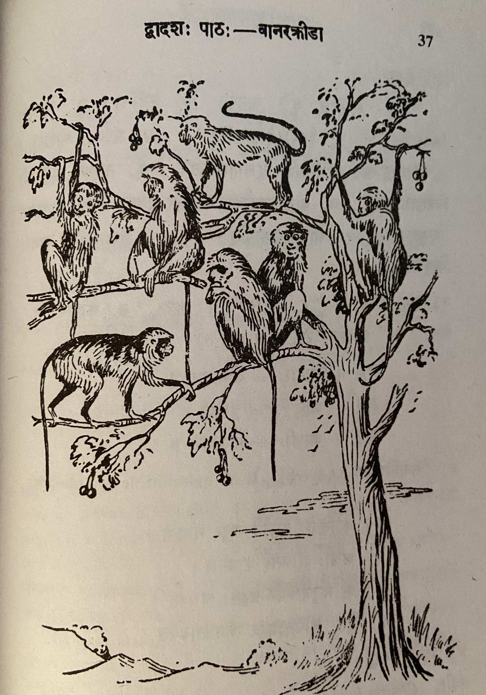
Translation
Title: Monkey Play
In that (अस्मिन्) tree (वृक्षे) some (केचिद्) monkeys (वानराः) are playing (क्रीडन्ति). They (ते) jump (प्लवन्ते) from tree (वृक्षात्) to tree (वृक्षं) and (च) from branch (विटपात्) to branch (विटपं). Monkeys (वानराः) usually (प्रायेण) appear similar to humans (नरैस्तुल्यरूपाः - नरैः तुल्य रूपाः). Moreover (अथापि) they (ते) are not (न) able (शक्नुवन्ति) to make (कर्तुं) houses (गृहाणि) like (इव) men (नराः) or (वा) nests (नीडानि) like (इ्व) birds (खगाः). They (ते) always (सर्वदा) live (निवसन्ति) in trees (वृक्षेषु) only (एव). They fill (पूरयन्ति) their stomach (उदरं) with tubers (कन्दैः) and (च) fruits (फलैः). By nature (स्वभावात्) itself (एव) monkeys (वानराः) are fickle (चपलाः) and (च) passionate/wrathful (कोपनाः).
Some (काचित्) story (कथा ) is heard (श्रूयते ) like this (यथा) - Once (एकदा) in rainy season (वर्षासु) some (कश्चिद्) monkey (वानरः), affected (बाधितः) due to the cold (शैत्येन), making teeth chattering (दन्तवीणां) noise (वादयन्), was seated (आससाद) at the base (मूलम्) of some (कस्यचन) Shami tree (शमीतरोः). In that (तस्मिन्) tree (वृक्षे), having made (कृत्वा) a nest (कुलायं), a sparrow couple (चटकदम्पती1) were living (निवसतः स्म). Among those two (तयोः) (sparrows) the female sparrow (चटका) having seen (अवलोक्य) the monkey (वानरम्) shivering (कम्पमांन) due to cold (शैत्येन) out of compassion (करूणया) said (प्राह) -
"We (वयं i.e. birds) also (चापि) make (कुर्मः) nest (नीडं) using beaks having collected/taken (चञ्चुमात्राहृतैः) grass (तृणैः). You all (यूयं i.e. monkeys) endowed with hands and legs (पाणिपादादिसंयुक्ताः), why like this (किमिति) (you) are seated सीदथ?" thus (इति).
Hearing (आकर्ण्य) that (तत्) the monkey (वानरः) said (आह) to them (ताम्) - "Evil ones (दुष्टे)! enough (अलं) with the prattling (जल्पनेन); be quiet (तूष्णीमास्स्व)" thus (इति). She was but (सा तु) being filled with compassion (करूणाविष्टा) repeatedly (पुनः पुनः) said (अम्यधात्) only (एव) those (तत्) words (वचनम्).
The monkey (मर्कटः) angered (कुपितः) due to that (तेन i.e. the bird) - "Needle face (सूचीमुखि)! Wicked one (दुराचारे)! What (किम्) are you talking (प्रलपसि)" saying (वदन्) thus (इति) having climbed the Shami tree (शमीवृक्षमारुह्य), having broken (भङ्क्त्वा) her (तस्याः) nest (कुलायं ) into hundred pieces (शतधा), caused it to fall (अपातयत्) in the ground (क्षितौ).
1दम्पती - दम्पति शब्द स्त्रीलिङ् प्रथमा वि. द्विवचन
2चञ्चुमात्राहृतैस्तृणैः - Here it is a compound word and correct split is "चञ्चुमात्राहृतैः + तृणैः।
Vocabulary
| Word | Meaning | Word | Meaning |
|---|---|---|---|
| खग m. | bird | चटक m. | sparrow |
| विटप m. | branch, bough | जल्पनम् n. | prattling |
| कन्दानि n. | bulbous roots | तूष्णीं in आस्व A. | keep quiet |
| चपल a. m. | fickle | ||
| कोपना a.m. | wrathful, passionate | सूचीमुखी f. | needle faced |
| वर्षाः f | rainy season (always plural) | कुलाय m. | nest of a bird |
| शैत्यम् n. | cold | शतधा in | into a hundred pieces |
| दन्तवीणा f. | chattering of the teeth | क्षिति f. | the earth, ground |
आससाद - Past tense of the root "सद् - to sit." आससाद - seated
Lesson 13: मयूरः
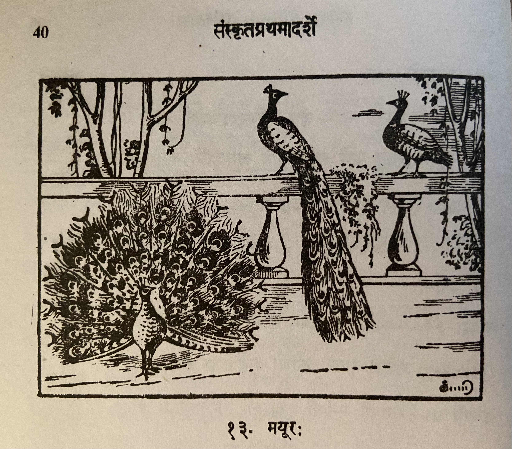
इदं किमपि रमणीयमुद्यानम्। अत्र द्वौ मयूरौ एका मयूरी तरवो लताः प्राकारश्च दृश्यन्ते। एको मयूरः पिच्छानि विस्तृत्य नृत्यति। अपरः पिच्छानि संवृत्य प्राकारस्योपरि तिष्ठति। तेन सह मयूरी अपि तत्र तिष्ठति। मयूर्याः पिच्छभारो नास्ति। नापि सा रम्या॥
मयूराणां बर्हेषु चित्रवर्णा अर्धचन्द्राकृतयो विशेषकाः सन्ति। ते जनानां चक्षूंषि रमयन्ति। एतैः मयूराणां बर्हैः व्यजनानि क्रियन्ते। केचित् तानि भूषणत्वेन धरन्ति॥
मयूरा वर्षासु मेघस्य शब्दं श्रुत्वा प्रहृष्टाः नृत्यन्ति। बर्हाणि विस्तृत्य नृत्यन् मयूरः फुल्लकुसुमो बालवृक्ष इव विभाति। तस्य केकारवस्तु1 काकस्वरवत् परुषः। अथापि तस्य रूपमतीव मनोहरम्। अतो मयूरान् गृहीत्वा धनिनो जनाः पुष्पोद्यानेषु संरक्षन्ति॥
Notes:
1केका + रव where केका means the sound of peacock and रव means sound. So together केकारवः - scream / cry of peacock.
Translation:
Title: Peacock
This (इदम्) is some (किमपि) delightful (रमणीयम्) garden (उद्यानम्). Here (अत्र) two (द्वौ) peacocks (मयूरौ) and one (एका) pea-hen (मयूरी), trees (तरवः), creepers (लताः), and a wall (प्राकारः) are seen (दृश्यन्ते). One (एकः) peacock (मयूरः) having expanded (विस्तृत्य) its tail (पिच्छानि) is dancing (नृत्यति). Another (अपरः) having closed (संवृत्य) its tail (पिच्छानि) is standing (तिष्ठति) on the wall's (प्राकारस्य) top (उपरि). With (सह) him (तेन) pea-hen (मयूरी) also (अपि) stands (तिष्ठति) there (तत्र). Pea-hen's (मयूर्याः) tail (पिच्छ) is not (नास्ति) heavy/thick (भारः). Also (अपि) she (सा) is not (न) delightful (रम्या).
In peacock's (मयूराणां) feathers (बर्हेषु) colorful (चित्रवर्णा) half-moon shaped (अर्धचन्द्राकृतयो) marks (विशेषकाः) are there (सन्ति). They (ते) please (रमयन्ति) the eyes (चक्षूंषि) of people (जनानां). With these (एतैः) feathers (बर्हैः) of the peacock (मयूराणां) fans (i.e. hand fans) (व्यजनानि) are made (क्रियन्ते). Some (केचित्) wear (धरन्ति) those (तानि) like ornaments (भूषणत्वेन).
During rain (वर्षासु) peacocks (मयूराः), having heard (श्रुत्वा) the sound (शब्दं) of the clouds (मेघस्य), exceedingly pleased (प्रहृष्टाः) (they) dance (नृत्यन्ति). Spreading (विस्तृत्य) its wings (बर्हाणि) and dancing (नृत्यन्) peacock (मयूरः) looks/shines (विभाति) like (इव) a young tree (बालवृक्ष) with bloomed flowers (फुल्लकुसुमो). His (तस्य) cries (केकारवः) though (तु) is gruff (परुषः) like a crow (काकस्वरवत्). But still (अथापि) his (तस्य) (i.e. it's) form (रूपम्) is extremely (अतीव) attractive (मनोहरम्). Therefore (अतः) rich (धनिनः) people (जनाः) having caught (गृहीत्वा) peacocks (मयूरान्) keep (संरक्षन्ति) (them) in flower gardens (पुष्पोद्यानेषु).
Vocabulary
| Word | Meaning | Word | Meaning |
|---|---|---|---|
| उद्यान n | park | विस्तृत्य in | having expanded |
| प्राकार m | wall | संवृत्य in | having closed |
| पिच्छम् n | tail of a peacock | व्यजन n | fan |
| बर्हम् N | tail of a peacock | फुल्ल a | blown, opened |
Lesson 14: मृगाणां पक्षिणां च समयः
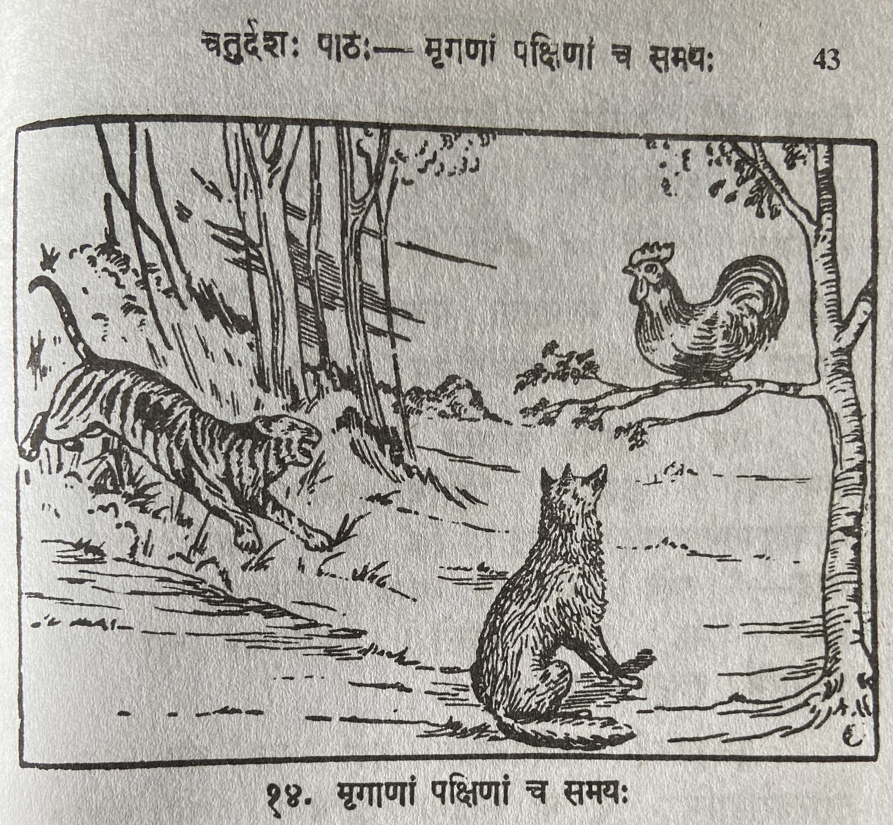
कृषीबलः कश्चिदरण्यपरिसरभूमौ1 वसति स्म। जातु तस्य कुक्कुटः केदारे भक्ष्यमन्विष्यन्नास्त2। जम्बुकः कश्चन बुभुक्षितः परिभ्रमस्तमुद्देशमागतः3। कुक्कुटस्तमवेक्ष्य4 समीपस्थस्य तरोः शिखरमारोहत्।
वञ्चको भग्नाशस्तरोर्मूलमासाद्य5 कुक्कुटं प्रलोभयन्नाह - "भद्र! किमिति6 मां दृष्ट्वा वृक्षमारूढवानसि? अद्य खलु मृगैः पक्षिभिश्च सर्वैः सम्भूय समयः कृतः। तत्रैव निर्णीतम् ’ न कोऽपि कस्मा अपीतः परं द्रुह्येत्7। न कमपि पीडयेत्। किन्तु सर्वैः स्नेहेन वर्तितव्यम्। य एनं समयमुल्लङ्घिते स तीव्रं दण्डयेत’ - इति। तेनाहं त्वां स्नेहेनालिङ्गितुं समागतः। कथं त्वं मत्तो बिभेषि?" - इति। कुक्कुट आह - ’सखे! सत्यमुक्तं भवता। परं त्वं बुभुक्षित इव दृश्यसे। अतः कथं वृक्षादवरोहेयम्!’ - इति॥
एवं वदत्येव तस्मिन् नातिदूरे व्याघ्रः कश्चित समाययौ। कुक्कुटः शिरोधरामुन्नमय्य8 तमीक्षाञ्चक्रे9। गोमायुस्तमपृच्छत्10 - ’भद्र! किं सादरं वीक्षसे?’ कुक्कुट आह - ’सखे! नातिदूरे व्याघ्र आगच्छति’। क्रोष्टा भीतः - ’भद्र! यद्येवं नमस्ते। समयान्तरे त्वां भूयो द्रक्ष्यामि’ इत्युक्त्वा प्रस्थितः॥
कुक्कुटस्तं सस्मितमाह - हंहो मा गमः। अहं तरोरवरोहामि। त्वं मां स्नेहेनालिङ्गिष्यसि। ’सर्वैः स्नेहेन वर्तितव्यम’ इति समये स्थिते किमिति त्वं व्याघ्राद्भीतः!’ - इति। श्रृगालः 'न खलु घातुकाः समयमनुवर्तिष्यन्ते!' इति, वदन् द्रुतं पलायितः॥
Notes:
Sandhi of some complex words:
1कस्चिदरण्यपरिसरभूमौ = कश्चित् अरण्य परिसर् भूमौ
2भक्ष्यमन्विष्यन्नास्त = भक्ष्यम् अन्विष्यन् आस्त
भक्ष्यम् अन्विष्यन् = भक्ष्यमन्विष्यन् (म् + अ = म)
अन्विष्यन् आस्त = अन्विष्य + न् + न् + आस्त = अन्विष्यन्नास्त।
3परिभ्रमस्तमुद्देशमागतः = परिभ्रमः तम् उद्देशम् आगतः
4कुक्कुटस्तमवेक्ष्य = कुक्कुटः तम् अवेक्ष्य
5भग्नाशस्तरोर्मूलमासाद्य = भग्नासः तरोः मूलम् आसाद्य
6किमिति is the combination of किम् + इति but after joining together it becomes an अव्यय। It is commonly used in the sense of "why"
7Actually it is "न कोsपि कस्मै अपि इतः परं द्रुह्येत्। Here in कस्मै + अपि due to यन्तावान्तादेश सन्धि (सूत्र - एचोsयवायावः) rule it becomes कस्माय् (ऐ followed by vowel gets replaced by आय्). So initially it becomes कस्मायिदम्। Then due to another सूत्र (लोप शाकल्यस्य) य, व when preceeded by अ and when those two are at the end of the word (पदान्त) then optionally they become लोप and no सन्धि post लोप। So कस्मै + अपि - कस्मायपि - कस्मा अपि। is the end result
8शिरोधरामुन्नमय्य = शिरोधराम् उन्नमय्य
9तमीक्षाञ्चक्रे = तम् (he) ईक्षाम् (see) चक्रे (did)
10गोमायुस्तमपृच्छत् = गोमायुः तम् अपृच्छत्
Translation
Title: Agreement of animals and birds
A farmer (कृषीबलः) was living (वसति स्म) in some (कस्चिद्) land near a forest (अरण्यपरिसरभूमौ). Some day/once (जातु) his (तस्य) rooster/hen (कुक्कुटः) was (आस्त) seeking (अन्विष्यन्) food (भक्ष्यम्) in the paddy field (केदारे). Some (कश्चन) hungry (बुभुक्षितः) wandering (परिभ्रमः) jackal (जम्बुकः) came (आगतः) to that (तम्) spot (उद्देशम्). The rooster (कुक्कुट:) having seen (अवेक्ष्य) him (तम्) climbed (अरोहत्) nearby (समीपस्थस्य) tree's (तरोः) peak (शिखरम).
The cheat (वञ्चकः), one who destroys (भग्नाशः) reached (आसाद्य) the tree's (तरोः) base (मूलम्) enticed (प्रलोभयन्) the rooster (कुक्कुटं) spoke (आह) - "Dear (भद्र)! Why is it (किमिति) after seeing (दृष्ट्वा) me (मां) (you) are (असि) climbing the tree (वक्षम्)11. Is it not (खलु) today (अद्य) all (सर्वैः) animals (मृगैः) and (च) birds (पक्षिभिः) collectively (सम्भूय) made (कृतः) an agreement (समयः). There (तत्र) only (एव) it was decided (निर्णीतम्) 'Here (इतः) after (परम्) no one (न कोऽपि) should bear hatred (द्रुह्येत्) for any others (कस्मै). (Should) not (न) harm/injure/trouble (पीडयेत्) anyone (कमपि). But (किन्तु) all (सर्वैः) should behave (वर्तितव्यम्) lovingly (स्नेहेन). The one who (य:) violates (उल्लङ्घिते) this (एनम्) agreement (समयम्) he (स:) will be punished (दण्डयेत) severely (तीव्रं)' - thus (इति). So (तेन) I (अहम्) have come (समागतः) to lovingly (स्नेहेन) hug (अलिङ्गितुं) you (त्वां). How (कथं) you (त्वं) are scared (बिभेषि12) from me (मत्तः13).
The rooster (कुक्कुटः) said (आह) thus (इति) - "Friend (सखे)! You (भवता) say (उक्तम्) the truth(सत्यम् ). But (परं) you (त्वं) look (दृश्यसे) like (इव) you are hungry (बुभुक्षित). Therefore (अतः) how (कथं) can I descend (अवरोहेयम्) from the tree (वृक्षात्)!".
As (एवम्) (they were) speaking (वदति) only (एव) not (न) too (अति) far (दूरे) some (कश्चित) tiger (व्याघ्रः) arrived (समाययौ14). The rooster (कुक्कुटः) having raised (उन्नमय्य) it's neck (शिरोधराम्) तम् (he) चक्रे (did) ईक्षाम् (see). The jackal (गोमायुः) asked (अपृच्छत्) him (तम्) - "Friend (भद्र)! What (किम्) are you seeing (वीक्षसे) with attention (सादरं)?" The rooster (कुक्कुटः) said (आह) - "Friend (सखे)! Not (न) very (अति) far (दूरे) a tiger (व्याघ्र) comes (आगच्छति).". The scared (भीतः) jackal (क्रोष्टा15) - "Dear (भद्र)! however (यदि एव) goodbye (नमस्ते). I will see (द्रक्ष्यामि) you (त्वां) again (भूयः) again some time (समयान्तरे)". After saying (उक्त्वा) thus (इति) departed (प्रस्थितः).
The rooster (कुक्कुटः) smiling (सस्मितम्16) said (आह) to him (तम्) - Ho (हंहो) don't (मा) go (गम). I (अहम्) descend from (अवरोहामि) the tree (तरोः). You (त्वं) lovingly (स्नेहेन) hug me (माम्). "All (सर्वैः) should behave (स्नेहेन ) lovingly (वर्तितव्यम)" - in such a time (इति समये स्थिते) why (किमिति) you (त्वं) are scared (भीतः) of the tiger (व्याघ्रात्).
The jackal (श्रृगालः) - 'Cruel/killers (घातुकाः) never (न खलु) follow (अनुवर्तिष्यन्ते) rules (समयम्) !' saying (वदन्) thus (इति), quickly (द्रुतम्) escaped (पलायितः).
Notes:
11भद्र! किमिति मां दृष्ट्वा वृक्षमारूढवानसि? This sentence cannot be literally translated to English. It sounds much better in Tamizh. But here is an attempt at literal English translation - Dear (भद्र)! Why (किमिति) after seeing (दृष्ट्वा) me (मां) (you) are (असि) the one who climbed (आरूढवान्) the tree (वृक्षम्)". In Tamizh - ஏன் இப்படி என்னை பார்த்து மரம் ஏறியவன் ஆகிறாய்?
12बिभेषि - भी धातुः लट् मध्यमपुरुष एकवचनम्। The formation is:
| पुरुष | एकवचन | द्विवचन | बहुवचन |
|---|---|---|---|
| भी धातुः () | |||
| प्रथम पुरुष | बिभेति | बिभितः / बिभीतः | बिभ्यति |
| मध्यम पुरुष | बिभेषि | बिभिथः / बिभीतः | बिभिथ / बिभीथ |
| उत्तम पुरुष | बिभेमि | बिभिवः / बिभीवः | बिभिमः / बिभीमः |
13 मत्तः - मत् + तसिल्। मत् (fifth case of अस्मद् शब्द) मत् - it self means "from me" but the affix तसिल् - also will give fifth case meaning. Like "ग्रामतः / ग्रामात् both means "from the village"
14समाययौ is not द्विवचन। It is या धातुः लिट् प्रथमपुरुष एकवचनम्। Formation is: ययौ ययतुः ययुः
15क्रिष्टा - प्रथमा विभक्ति
16सस्मितम् - this is अव्यय not a विभक्ति form of word.
Vocabulary
| Word | Meaning | Word | Meaning |
|---|---|---|---|
| समय m | an agreement | प्रलोभयत् a. m. | seducing |
| परिसर m | vicinity, neighbourhood | द्रुह्येत् P. | should bear hatred |
| उद्देश m | a spot, place | शिरोधरा f | neck |
| मग्नाश am m. | disappointed | समयान्तर n | another time |
| द्रुतम् in | swiftly | मत्तः in | from me |
Lesson 16: शुकः

अत्रैकः शुकः पिञ्जरे बद्धस्तिष्ठति। पिञ्जरात् बहिः शाखायां स्थिता शुकी तस्य माता। सा स्वशाबकं बद्धमवलोक्याश्रु मुच्चन्ती1 तेन सह भाषते। सा तं किं वदतीति किं जानासि? सा तं वदति -
'वत्स! उक्तं खलु मया न त्वया कोटरान्निर्गन्तव्यम् कोऽपि त्वां गृह्णीयात् - इति। मम वाक्यमानादृत्य क्रीडितुं कुसुमलतां गतस्त्वम्। यथा मया कथितं तथैव संवृत्तम्' - इति।
शुकस्तामाह - ’अम्ब! मातुर्वाक्यम् अनुल्लङ्घनीयमिति जानाम्येव। अथापि क्रीडासक्तेन मया चापल्यात् तन्नालोचितम्’। सा प्राह - ’जात! एवं गते त्वयि कथं त्वदेकपुत्रया मया आयुस्शेषो नेयः?2’ सोऽपृच्छत् - ’किमेवं वदसि? किं मम मुक्तिरेव न स्यादस्मात् पञ्जरात्?’ सा कथयति - "दृढतराः पञ्जरस्य शलाका निबिडतराश्च। यथा त्वं न पलायेथास्थता गृहस्वामी जागरूको भवष्यति। कथं ते3 मुक्तिर्भविष्यति?"
अत्रान्तरे गृहस्वामी फलहस्तः समागतः। शुकी पलायीता। गृहस्वामी शुकमिमं फलेन रुचिरेणान्नेन पोषयिष्यति। भाषणं च तं शिक्षयिष्यति। शिक्ष्यमाणाः शुका मनुष्या इव व्यक्तां वाचमुदीरयन्ति। वेदमन्त्रानपि ते पठन्ति। अयमेव शुकानां बन्धने हेतुः।
शुकानां रुपमपि रमणीयम्। तेषां पक्षौ हरितौ, चञ्चवश्चरणाश्च लोहिताः4। केचन शुकाश्चित्रवर्णाः। तेऽतीव रमणीयाः॥
Notes:
1मुञ्चन्ती is the कृदन्त form of the root मुच् मोचने - to release / to leave. Here it means "she was shedding tears and spoke. It is like गतवान् - गतवन्ती. क्तवत् प्रत्ययान्तः
2सति सप्तमि usage. These type of sentences are not translatable exactly to English. The closest is: In this situation, where you, my only son, have gone how will I live the remainder of life.
3ते - दकारान्तः युष्मद् शब्दः षष्ठी विभक्तिः तव/ते युवयौः/वाम् युष्माकम्/वः
4तेषां पक्षौ हरितौ। as this is द्विवचन so we must use the word two while translating. Translation must be like "their two wings are green". चञ्चवश्चरणाः - चञ्चवः + चरणाः । चञ्चवः is plural. It is उकारान्त शब्द। Formation is: चञ्चुः चञ्चू चञ्चवः । चञ्चुः - beak
चरणाः - feet / legs. (Like राम शब्दः)
Translation
Title: Parrot (शुकः)
Here (अत्र) one (एकः) parrot (शुकः) stands (तिष्ठति) trapped (बद्धः) in a cage (पिञ्जरे)। The female parrot (शुकी) being (स्थिता) outside (बहिः) the cage (पिञ्जरात्), in the branch (शाखायां), is his (तस्य) mother (माता). She (सा), seeing (अवलोक्य) her (स्व) young (शाबकम्) caged (बद्धम्), releasing/shedding (मुच्चन्ती) tears (अँश्रु), is talking (भाषते) with him (तेन). Do you want to know (किं जानासि) what (किं) she (सा) is speaking (वदति इति) with him (तेन)? She (सा) says (वदति) to him (तम्) -
"Child (वत्स)! Was it not (खलु) told (उक्तं) by me (मया) thus (इति) - the hole (कोटरात्) should not be exited (निर्गन्तव्यम्) by you (त्वया), someone (कोऽपि) may catch you (गृह्णीयात्). Not listening (अनादृत्य) my (मम) words (वाक्यम्) you (त्वम्) went (गतः) for playing (क्रीडितुं) to the creeper with flowers (कुसुमलतां). Just as (यथा) as said (कथितं) by me (मया) like that (तथा) only (एव) ोचचुरेद (संवृत्तम्)" - thus (इति).
The parrot (शुकः) told (आह) her (ताम्) - "Mother (अम्ब)! I only/certainly (एव) know (जानामि) mother's word (मातुर्वाक्यम्) is not to be contravened (अनुल्लङ्घनीयम् इति). Moreover (अथापि) due to involvement in playing (क्रीडासक्तेन) due to my (मया) fickleness (चापल्यात्) I did not (न) think of (आलोचितम्) that (तत्)". She (सा) said (प्राह) - 'Child (जात)! Like this (एवम्) has happened (गते) in you (त्वयि), you (त्वम्) are the only son (एकपुत्रया) of mine (मया), how (कथं) to lead (नेयः) remainder (शेषः) of life (आयुः)2? He (सः) asked (अपृच्छत्) - '’Why (किम्) do you say (वदसि) like this (एवं) ? Why (किम्) my (मम) freedom (मुक्तिः) only (एव) from this (अस्मात्) cage (पञ्जरात्) cannot (न) happen (स्यात्)?' She (सा) said (प्राह) - "The cage's (पञ्जरस्य) bars (शलाकाः) (are) strong (दृढतराः) and (च) dense (निबिडतराः). The house owner (गृहस्वामी) will be (भवष्यति) careful/watchful (जागरूकः) so that (यथा) you (त्वं) do not (न) (पलायेथास्तथा). How (कथम्) your (ते) freedom (मुक्तिः) is possible (भविष्यति)"
In the meanwhile (अत्रान्तरे) the house owner (गृहस्वामी) fruit in hand (फलहस्तः) returned (समागतः). The female parrot (शुकी) escaped (पलायीता). The house owner (गृहस्वामी) will nourish (पोषयिष्यति) this (इमम्) parrot (शुकम्) with fruit (फलेन) and with tasty rice (रुचिरेणान्नेन). Also (च) (he) will teach (शिक्षयिष्यति) it (तम्) to speak (भाषणम्). Trained/taught (शिक्ष्यमाणाः) parrots (शुकाः) talk (उदीरयन्ति) clear (व्यक्तां) words (वाचम्) like (इव) people (मनुष्याः). They (ते) read (पठन्ति) even (अपि) Veda Mantras (वेदमन्त्रान्). That is (अयम्) only (एव) the reason (हेतुः) for caging/trapping (बन्धने) parrots (शुकानां).
Parrots's (शुकानां) form (रुपम्) is also (अपि) delightful (रमणीयम्). Their (तेषां) two wings (पक्षौ) are green (हरितौ), and (च) beaks (चञ्चवः) and (च) feet (चरणाः) reddish (लोहिताः).
Some (केचन) parrots (शुकाः) are colorful (चित्रवर्णाः). They (ते) are extremely (अतीव) delightful (रमणीयाः).
Vocabulary
| Word | Meaning | Word | Meaning |
|---|---|---|---|
| कोटर n. | hollow of a tree | जागरूक a. m. | wakeful, careful |
| मुक्ति f. | letting off, free | पक्ष m | wing |
| क्षलाका f. | bar of a cage | निबिड a | dense |
Lesson 17: उल्लूखलं मर्दलश्च

कस्मिश्चित् गृहे भजनोत्सवानन्तरं रात्रौ मर्दलः कश्चिदुलूखलस्य समीपे स्थापितः। मित्रमन्तिके दृष्टवा मर्दलः कुशलं पृच्छंस्तेन सह सम्भाषते।
मर्दलः - सखे! अपि कुशलं भवतः? अस्मिन् देशे का वार्ता?
उलूखलम् - मित्र? अस्मिन् देशे मां विहाय सर्वेऽपि कुशलिन एव। अहं परं मन्दभाग्यम्।
मर्दलः - कुतस्त्वं मन्दभाग्यम्? कस्ते दुःखहेतुः?
उलूखलम् - सखे! किं ब्रवीमि। तथापि श्रूयताम् - दुर्भगस्य मे शिरसि धान्यानि निधाय स्त्रियः पुरुषाश्च मां मुसलेन निर्दयं ताडयन्ति। केचिदयोदण्डेनापि मां प्रहरन्ति इत्थं प्रत्यहं महती पीडामनुभवामि। किमतः परं कष्टं स्यात्?
मर्दलः - भद्र! किमिदं मयि निवेद्यते। अहं त्वक्तोऽपि मनदभाग्यः। त्वं शिरसि परं ताड्यसे। मां तु ताडने समर्थाः जनाः पार्श्वद्वयेऽपि हस्ताभ्यां ताडयन्ति। विशेषतश्च विवाहोत्सवादौ सभामध्ये तीव्रं ताडयन्तो मामवजानन्ति। नैकोऽपि मामनुशोचति। किन्तु सर्वेऽपि सहर्षं शिरः कम्पयन्तो मम ताडनमभिनन्दन्ति। हन्त! कस्य वाऽन्यस्य स्यादीदृशी दुर्दशा।
लोके हि प्रायेण नान्यस्य दुःखमन्यो जानाति॥
Translation
Title: The mortar (उलूखलम्) and (च) the drum (मर्दलः) (i.e. percussion instrument)
In some (कस्मिश्चित्) house (गृहे) after (अनन्तरं) a devotional music (भजन) festival (उत्सव) in the night (रात्रौ) a drum (मर्दलः) was placed (स्थापितः) close to (समीपे) some (कश्चिद्) mortar (उलूखलस्य).
Drum (मर्दलः) - Oh friend (सखे)! Are (अपि1) you (भवतः) well/fine (कुशलं)?
Mortar (उलूखलम्) - Friend (मित्र)! In this (अस्मिन्) country (देशे) other than (विहाय) me (माम्) all (सर्वेऽपि) are happy (कुशलिन) only (एव). But (परं) I am (अहम्) unfortunate (मन्दभाग्यम्).
Drum (मर्दलः) - Why (कुतः) you (त्वम्) are unfortunate (मन्दभाग्यम्) ? What (कः) is the reason (हेतुः) for your (ते) misery (दुःख)?
Mortar (उलूखलम्) - Friend (सखे)! What (किम्) can I say (ब्रवीमि). But still (तथापि) listen (श्रूयताम्) - On my (मे) misfortunate (दुर्भस्य) head (शिरसि), women (स्त्रियः) and (च) men (पुरुषाशः) after placing (निधाय) grains (धान्यानि) mercilessly (निर्दयम्) beat/pound (ताडयन्ति) me (माम्) with a pestle (मुसलेन). Some (केचिद्) also (अपि) attack/beat (प्रहरन्ति) me (माम्) with iron sticks (अयोदण्डेन) - about (प्रति) this (इत्थं) (due to this) I (अहम्) experience (अनुभवामि) great (महती) suffering/pain (पीडाम्). What (किम्) further (अतः परम्) troubles (कष्टम्) maybe/may happen (स्यात्)?
Drum (मर्दलः) - Friend (भद्र)! What should I say about me / my situation (किमिदं मयि निवेद्यते2). I'm more unlucky than you (अहं त्वक्तोऽपि मनदभाग्यः3)
On your (त्वं) head (शिरसि) alone/merely (परं) you are beaten (ताड्यसे). But me (माम् तु) people (जनाः) capable of/expert in (समर्थाः) beating (ताडने) beat (ताडयन्ति) (my) two sides (पार्श्वद्वयेऽपि) with (two) hands (हस्ताभ्यां). And (च) especially (विशेषतः) in wedding celebrations (विवाहोत्सवादौ) in the middle of the gathering (सभामध्ये) (they) intensively (तीव्रम्) beat (ताडयन्तः4) me (माम्) treat me with contempt (अवजानन्ति). Not (न) a single one (एकोऽपि) is sorry for (अनुशोचति) me (माम्). But (किन्तु) everyone (सर्वेऽपि) happily (सहर्षं) shaking (कम्पयन्तो) (their) head (शिरः) applaud/apprecite (अभिनन्दति) my (मम) beating (ताडनम्). Alas (हन्त)! how (कस्य वा) other's (अन्यस्य) दुर्दशा (misfortune) स्यात् (could be) ईदृशी (like this)
Surely (हि) in the world (लोके) generally (प्रायेण) other people (अन्यः) do not (न) know (जानाति) other's (अन्यस्य) sorrow (दुःखम्).
1अपि usually means "also". But it is used in sentences that are questions similar to usage of वा. अपि कुशलम् is the same as कुशलं वा
2Word by word meaning won't work here. Over all meaning is: what should I say about me / my situation.
3 अहं त्वत्तोsपि (त्वत्तः - त्वत् + तः (तसिल् प्रत्यय). त्वत् - you. त्वत्तः - than you
4It is कृदन्त form. Like गच्छन् गच्छन्तौ गच्छन्तः It is continuous tense.
Vocabulary
| Word | Meaning | Word | Meaning |
|---|---|---|---|
| उलूखल n. | wooden mortar used for cleansing rice (removing husk) | मुसल m. n. | pestle |
| कुशल n. | welfare | अयोदण्ड m. | an iron-bar |
| दुर्भग a. m. | unfortunate | प्रवृत्ति f. | news |
| वृत्तान्त m | news |
The word भवति means "to be". Its root is भू. When a prefix (उपसर्ग) is added to भवति its meaning changes.
| Word | Meaning | Word | Meaning |
|---|---|---|---|
| अनुभवति | enjoys, experiences | परिभवति | disregards |
| पराभवति | overcomes | प्रभवति | Is able to, happen, prevail |
| सम्भवति | happens | अभिभवति | defeats |
Lesson 18: गजः

मृगजातौ गजः गरिष्ठः। तस्य पादाः स्तम्भा इव स्थूलाः। तस्य कर्णौ शूर्पाविव1 विशालौ। तस्य नेत्रे तावदत्यल्पे। अथापि सोल्पान्यपपि सोल्पान्यपि वस्तूनि द्रष्टुं शक्नोति। भूमौ स्थितां सूचिकामपि स पश्यति गृह्णाति च॥
गजस्य मुखेऽजगरवल्लम्बमानोऽवयवः2 शुण्डा। वयं हस्तेन यत कर्म कुर्मः तत् गजः शुण्डया करोति। अत एव गजस्य शुण्डा ’हस्तः’ इति ’करः’ इति च व्यपदिश्यते। तेन गजस्य ’हस्ती’ ’करी’ इति संज्ञे भवतः। शुण्डैव गजस्य नासिका। तयैव श्वसिति गजः। शुण्डाया अग्रे रन्ध्रमस्ति॥
गजः प्रथमं शुण्डया जलमादाय पश्चात् तन्मुखे निषिञ्चति। एवं द्वाभ्यामवयवाभ्यां जलं पिबन् गजः ’द्विपः’ इत्याख्यां भजते॥
गजानां दृढौ तीक्षणौ च द्वौ दन्तौ स्तः। तस्मात् ते ’दन्तिनः’, ’दन्तावलाः’ ’द्विरदाः’ इति कथ्यन्ते। शिल्पिनः करिणां दन्तैः रम्याणि महार्घाणि वस्तुनि निर्मान्ति। करेणूनां दन्तौ न स्तः॥
यद्यपि गजा वन्या जन्तवः, तथापि ते जनैः कौशलेन गृह्यन्ते, शिक्षयन्ते च। साधु शिक्ष्यमाणास्ते जनैः कर्तुमशक्यानि कर्माणि कुर्वन्ति। गुरुतराणि दारूणि कर्षन्ति। शिक्षिता अपि गजास्तदा तदा मदेनोन्माद्यन्ति। तदा तान् आधोरणाः निशितेनाङ्कुशेन नियन्त्रयन्ति॥
1शूर्प (m) - शूर्पौ + इव = शूर्प् + आव् + इव = शूर्पाविव This is यान्तवान्तादेशसन्धिः (एचोऽयवायावः)
2मुखेऽजगरवल्लम्बमानोऽवयवः = मुखे अजगरवत् लम्बमानः अवयवः
Translation
In the family of animals (मृगजातौ) the Elephant (गजः) is the biggest (गरिष्ठः). His (तस्य) legs (पादाः) are thick (स्थूलाः) like (इव) pillars (स्तम्भाः). His (तस्य) two ears (कर्णौ) are big (विशालौ) like winnowing basket (शूर्पा). His (तस्य) two eyes (नेत्रे) are so very small (तावद् अति अल्पे). So much the more (अथापि) (he) is able (शक्नोति) to see (द्रष्टुं) even (अपि) small (सोल्पानि) objects (वस्तूनि). He (सः) sees (पश्यति) and (च) takes (गृह्णाति) even (अपि) a needle (सूचिकाम्) lying (स्थितां) on the floor/ground (भूमौ).
In the elephant's (गजस्य) face (मुखे) is a python-like (अजगरवत्) limb (अवयवः) hanging down (लम्बमानः) trunk (शुण्डा). That which (यत्) work (कर्म) we (वयम्) do (कुर्मः) with hand (हस्तेन) that (तत्) the elephant (गजः) does with trunk (शुण्डया). Thus (अतः) only (एव) is referred to (व्यापदिश्यते) like (इति) hand (हस्त:) like (इति) hand (करः). Due to that the elephant is also designated/called hasti and kari3. The trunk (शुण्डा) is only (एव) the elephant's (गजस्य) nose (नासिका). With that only (तया एव) the elephant (गजः) breathes (श्वसिति). The trunk's (शुण्डाया) beginning (अग्रे) is (अ्स्ति) a hole (रन्ध्रम्).
The elephant (गजः) first (प्रथमम्) having taken (आदाय) water (जलम्) with the trunk (शुण्डया) then (पश्चात्) pours into (निषिञ्चति) its mouth (तन्मुखे). The elephant (गजः) drinking (पिबन्) like this (एवम्) with two (द्वाभ्याम्) limbs (अवयवाभ्याम्) is named (आख्याम्) as Dvipaha (द्विपः इति) (and) adore/revere (भजते).
Elephants (गजानां) have (स्तः) two (द्वौ) strong (दृढौ) and sharp (तीक्षणौ) teeth (दन्तौ)4. Therefore (तस्मात्) they (ते) are thus (इति) called (कथ्यन्ते) Dantinah (दन्तिनः), Dantavlah (दन्तावलाः), Dviradaha (द्विरदाः). Sculptors (शिल्पिनः) make (निर्मान्ति) pleasing (रम्याणि) expensive (महार्घाणि) objects (वस्तुनि) with elephant's (करिणां) teeth (दन्तैः). Female elephants (करेणूनां) do not (न) have (स्तः) teeth (दन्तौ)5.
Even though (यद्यपि) elephants (गजाः) are forest (वन्याः) animals (जन्तवः), even then (तथापि) they (ते) are skillfully (कौशलेन) obtained/taken (गृह्यन्ते) and (च) trained/instructed (शिक्षयन्ते) by people (जनैः). Well (साधु) trained/taught (शिक्ष्यमाणास्ते) (elephants) do (कुर्वन्ति) works/jobs (कर्माणि) that can be done (कर्तुमशक्यानि) by people (जनैः). (They) cut (कर्षन्ति) heavy (गुरु) trees (तराणि) and logs (दारूणि). Trained (शिक्षिताः) elephants (गजाः) also (अपि) now and then/sometimes (तदा तदा) become mad (उन्माद्यन्ति) with intoxication (मदेन). Then (तदा) elephant drivers (आधोरणाः) restrain (नियन्त्रयन्ति) them (तान्) with a sharpened (निशितेन) hook (अङ्कुशेन).
3The literal translation of - तेन गजस्य ’हस्ती’ ’करी’ इति संज्ञे भवतः - is as follows - Due to that (तेन) the elephant's (गजस्य) designations (संज्ञे) are (भवतः) hasti (हस्ति) kari (करी) thus (इति). The translation is as shown above.
4The literal translation of - गजानां दृढौ तीक्षणौ च द्वौ दन्तौ स्तः - Elephant's two strong and sharp teeth are there.
5The literal translation is - Female elephant's (करेणूनां) teeth (दन्तौ) was not (न) there (स्तः).
Vocabulary
लत्व सन्धिः - तकास्य दकारस्य वा ’ल’ कारः भवति
अजगरवत् + लम्बते = अजगरवल्लम्बते
भगवत् + लीला = भगवल्लीला
सुहृद् + लाभः = सुहृल्लाभः
उपसर्गयोगादर्थभेदः - दिश् दिशति (to give)। उपदिशति (instructs), व्यपदिशति (calls), आदिशति (commands), निर्दिशति (directs), उद्दिशति (points), सन्दिशति (sends message)
अतिशयनार्थकाः शब्दाः (Degrees of comparison):
| Positive | Comparative | Superlative |
|---|---|---|
| गुरुः | गरीयान् | गरिष्ठः |
| Word | Meaning | Word | Meaning |
|---|---|---|---|
| गरिष्ठ (a. m.) | biggest | नासिका f | nose |
| शूर्प m. a. | winnowing basket | रन्ध्र n. a | a hole |
| सूचिका f | needle | शिल्पिन् (m) | artisan |
| अजगर m | a huge serpent which swallows goats, python | करेणु f | a female elephant |
| दारु n | timber | निशित a. m. | sharpened |
| आधोरण m | rider or driver of an elephant | उन्माद्यति | be or become mad or furious |
| निशित | sharpened | नियन्त्रयति | restrain |
Lesson 19: दश मूढाः
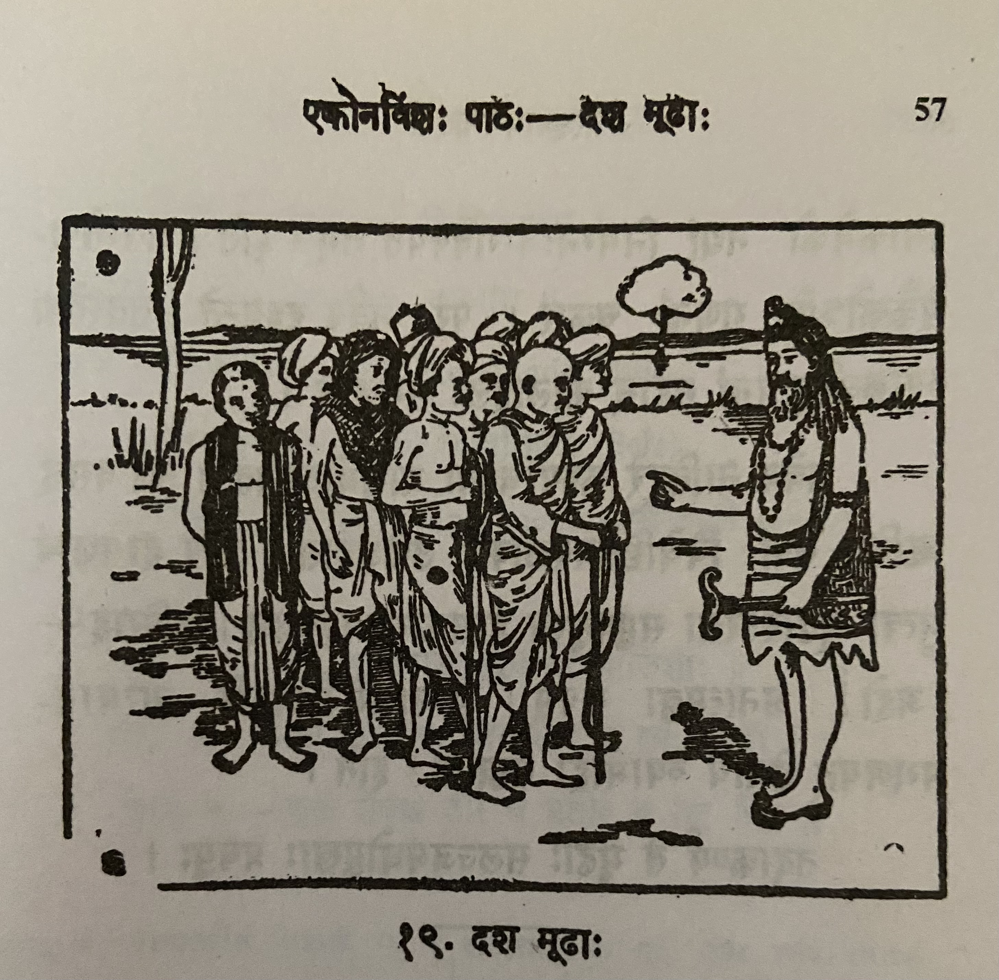
मूढानां चेष्टितानि प्रायेण विनोदावहानि। यथा हि - एकदा दश मूढाः देशाटनाय प्रस्थिताः। किञ्चिद्दूरं गतानां तेषामुपस्थिता काचिदगाधा1 नदी। बाहुभ्यां तरन्तस्ते कथमपि नदीं तीर्त्वा पारं गताः॥
आसीत् तेषां मध्ये कश्चन वृद्धः। ’स किं सर्वे तीरमनुप्राप्ताः?’ इति जिज्ञासमानस्तान् एकैकशो गणयामास। परं नवैव परिगणितास्तेन। तता स आक्रोशत् - ’अहि! वयं दश प्रस्थिताः। इदानीं नवैव स्मः। नूनमस्माकमेको नद्यां निमग्नः। गवेषयत तम्’ इति। ततस्तेषामेकैकोऽपि गणनां चकार2। परं नवैव दृश्यन्ते। ततस्तेषां व्याकुलीभूतानां महान् कोलाहलः समजनि।
तत्रैव नातिदूरे कस्यचिदृषेः आश्रमोऽवर्तत। तत्र वसन् ॠषिः तेषां विचेष्टितमवलोक्य उच्चैर्जहास। तस्य हासशब्दं श्रुत्वा मूढास्तरसा समुपसृत्य हासकारणमपृच्छन्। ऋषिराह - ’अहो! अनात्मज्ञा यूयम्। युष्माकमेकैकोऽपि नात्मानमगणयत् तेनायं व्यामोहः सञ्जातः’ इति।
तदाकर्ण्य ते मूढाः सलज्जमधोमुखाः प्रययुः।
1कदाचित् अगाधा
2चकार - did. Past tense (लिट् लकार of करोति)
Translation
The antics (चेष्टितानि) of fools (मूढानां) is generally (प्रायेण) humorous (विनोदावहानि). For example (यथा हि) - once (एकदा) ten (दश) fools (मूढाः) started out (प्रस्थिताः) to travel the country (देशाटनाय). After going (गतानां) some distance (किञ्चिद्दूरं) they arrived (तेषामुपस्थिता) (near) some deep river (काचिदगाधा) river (नदी). They (ते) who swum (तरन्तः) with their hands (बाहुभ्यां) somehow (कथमपि) went (गताः) across (पारम्) the river (नदीं) bank (तीर्त्वा)
In their (तेषाम्) midst (मध्ये) there was (आसीत्) some (कश्चन) old man (वृद्धः). He (सः) - "Have (किम्) all (सर्वे) reached (अनुप्राप्ताः) the bank (तीरम्)" - to find that (जिज्ञासमानस्तान् इति) counted (गणयामास) each one (एकैकशः). But (परम्) only (एव) nine (नव) were enumerated (परिगणिताः) by him (तेन). Then (तता) he (सः) cried out (आक्रोशत्) thus (इति) - 'Oh! Ten (दश) of us (वयं) left (प्रस्थिताः). We are (स्मः) nine (नव) only (एव) now (इदानीम्). Indeed (नूनम्) one (एकः) of us (अस्माकम्) has drowned (निमग्नः) in the river (नद्यां). Search for (गवेष्यत्) him (तम्)'. After that (ततः) each of (एकैकः) their (तेषाम्) counted (गणनां चकार) also (अपि). But (परम्) only (एव) nine (नव) were seen (दृश्यन्ते). Then (ततः) among them all (तेषाम्) who were perplexed (व्याकुलीभूतानां) there was (समजनि) a big (महान्) noise (कोलाहलः).
There (तत्र) only (एव), not (न) too (अति) far (दूरे) some (कश्चित्) sage’s (ऋषेः) hermitage (अश्रमः) was there (अवर्तत्). The sage (ऋषिः) living (वसन्) there (तत्र) seeing (अवलोक्य) their (तेषाम्) action/struggle/behaviour (विचेष्टितम्) loudly (उच्चैः) laughed (जहास). Hearing (श्रुत्वा) the sound of his (तस्य) laughter (हासशब्दं3) the fools (मूढाः) speedily/quickly (तरसा) gathering (समुपसृत्य) (near him) asked (अपृच्छन्) the reason for laughter (हास्यकारणम्). The sage (ऋषिः) said (आह) this (इति) - 'Oh! You all (यूयम्) ignorant of the selves (अनात्मज्ञ). Not (न) even (अपि) one (एक एकः) among you (युष्माकम्) counted (अगणयत्) yourself (आत्मानम्) due to that (तेन) this (अयम्) mental confusion (व्यामोहः) has arisen (सञ्जातः)'.
Hearing (आकर्णय) that (तत्) those (ते) fools (मूढाः) facing downwards (अधोमुखाः) with shame (सलज्जम्) went away (प्रययुः)
3sound of laughter
Notes and Vocabulary
अश्त्व सन्धिः - (जशू = , ज, व, ग, ड, द वर्णाः वकारश्व भवति)
वाक् + रसः = वाग्रसः
सम्राट् + भरति = सम्राड्भरति।
किञ्चित् + दूरम् = किञ्चिद्दूरम्।
अप् + धारा = अब्धारा
उपसर्गयोगादर्थभेदः
स्था (to stand) तिष्ठति ; अनुतिष्ठति (performs); अधितिष्ठति (sets); उपतिष्ठति (उपतिष्ठते) (approaches); सन्तिष्ठते (ends)
| Word | Meaning | Word | Meaning |
|---|---|---|---|
| पारम् n | opposite bank of a river | अनात्मज्ञ a. m. | one who does not know himself |
| एकैकशः in | one by one | व्यामोह m | perplexity |
| एकैक m | everyone | स्रजू f | a garland |
| व्याकुलीभूत m | perplexed | सम्राजू m | a paramount sovereign |
| कोलाहल m | a loud and confused noise |
Lesson 20: कुक्कुटो रत्नं च
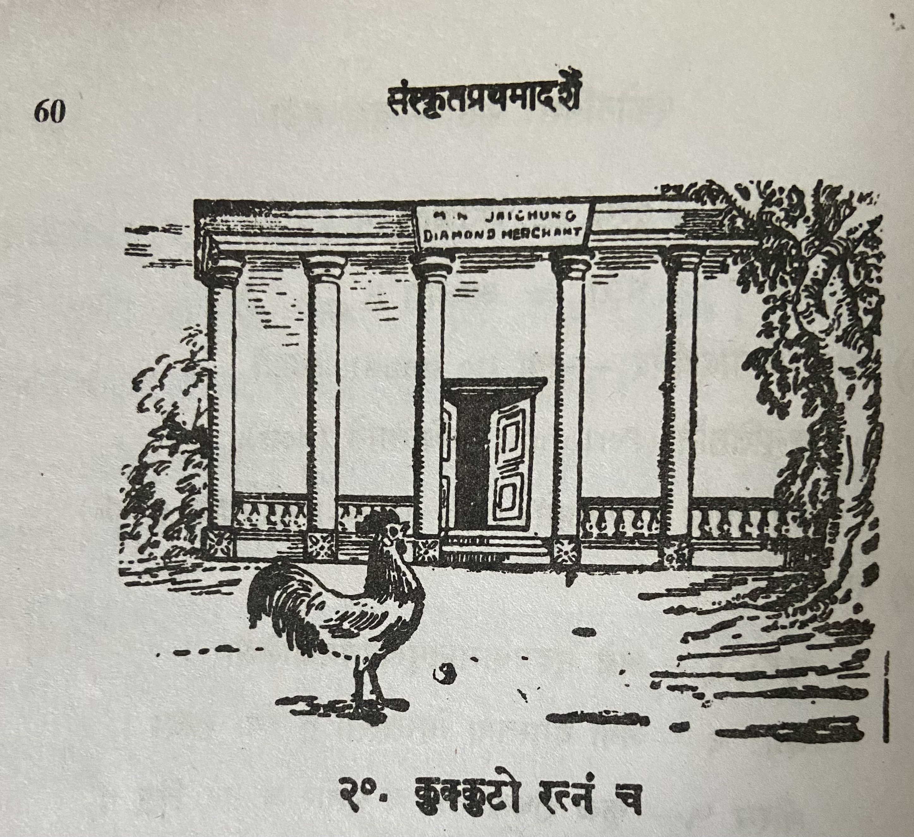
एकदा कुक्कुटः कश्चित् पादेनावकरं किरन्।
ददर्श भासुरं किञ्चिद्रत्नं श्रेष्ठिगृहाङ्गणे॥
कुक्कुटस्यानभिज्ञस्य रत्नलाभेन किं फलम्?
रत्नमूल्यं कियद्वेति किं स जानाति मन्दधीः॥
अतः स पक्षौ विस्तृत्य विधूय वदनं मुहुः।
तारं रटन् वक्रवत्रस्तद्रत्नं समगर्हयत्॥
रे रत्नं! शिरसा धृत्वा लोक्स्त्वामभिनन्दतु।
किन्तु धान्यकणेन त्वं नैव सादृश्यमर्हसि॥
इत्युक्तवा स च तद्रत्नं पादेनाक्षिप्य दूरतः॥
अन्यत्र गतवान् शीघ्रं धान्यान्वेषणतत्परः॥
Translation
Notes and Vocabulary
| Word | Meaning | Word | Meaning |
|---|---|---|---|
| किरन् a. m. | scattering | धान्यकण m | a grain of corn |
| अङ्गण n. a. | a courtyard | सादृश्य n. | equality |
| कियत् n, n. | how much | आक्षिप्य in | throwing off |
| विधूय in. | having shaken |
Lesson 21: मातापुत्रयोः संभाषणम्

Lesson 22: चोरो बालकः


Lesson 23: मूर्खस्योपकारो न कर्तव्यः
Lesson 24: जरासन्धः
Lesson 25: चन्द्रोदयः
Lesson 26: पितापुत्रयोः संभाषणम्
Lesson 27: महाकविः श्रीकालिदासः
Lesson 28: सीताविवाहः
Lesson 29: विरक्तः महर्षिः
Lesson 30: चित्रश्लोकाः (Charming Slokas)
Lesson 31: काकोलूकीयम्
Lesson 32: फलानि
Lesson 33: लक्ष्मणस्य प्रस्थानम्
Lesson 34: भूमिः
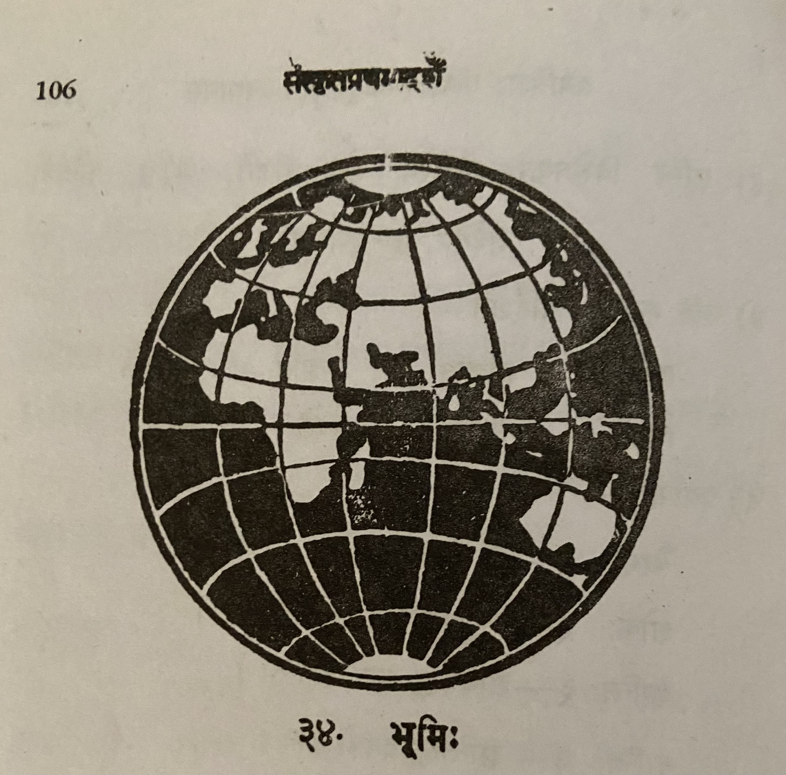
भूमिः कन्दुकवत् गोलाकृतिः। तस्यास्त्रिषु भागेषु द्वौ भागौ जलम्। त्रिष्वेको भागः स्थलम्। चित्रं पश्य, तत्र शुक्लो भागः स्थलम्। कृष्णो भागः जलम्।
स्थलभागः एष्या, यूरोप्, आफ्रिका, अमेरिका, आस्त्रेलिया चेति पञ्चखण्डत्वेन विभक्तः।
जलभागः - शान्तसागरः, अतलान्तिकसागरः, भारतसागरः, उत्तरध्रुवसागरः, दक्षिणध्रुवसागरश्चेति पञ्चसागरत्वेन विभक्तः। समुद्रेषु तत्र तत्र सिंहलादयो द्वीपाः सन्ति॥
एष्याखण्डः सर्वेषु खण्डेषु विशालतमः। खण्डेऽस्मिन् विद्यया परिष्कारेण च खण्डान्तराण्यतिशयानाऽस्माकं2 भारतभूमिर्विराजते। अस्यां परमपावनाः गङ्गा-सिन्धु-गोदावरी-नर्मदा-कावेरीप्रभृतयो नद्यः, परमोन्नता हिमालयप्रभृतयः पर्वताश्च विलसन्ति।
यूरोप्खण्डोऽनेकैः सार्वभौमैर्विभज्य भुज्यते। तस्मिन् निवसन्तो जनाः श्वेतगात्राः॥
अमेरिकाखण्डो दक्षिणामेरिका उत्तरामेरिका चेति द्वेधा विभक्तः। खण्डोऽयमतीव विशालः समृद्धश्च। गोधूमादीनि धान्यानि प्रभूततया तत्र प्ररोहन्ति॥
आफ्रिकाखण्डो विशाल एव। किन्तु अत्र भूयान् भागो मरुभूमिः। नद्योऽत्र विरलाः। सहाराख्योऽतिविशालः कश्चिन्मरुप्रदेशोऽत्र सुप्रसिद्धः॥
आस्त्रेलियाखण्डः सर्वेषु खण्डेष्वल्पिष्ठः। खनिजानि द्रव्याण्यत्रबाहुल्येन समासाद्यन्ते। ऊर्णाव्यवसायोऽस्मिन् खण्डे प्रसिद्धः॥
शान्तसागरोऽन्वर्थनामा विराजते। अतीव विशालोऽप्ययमत्यन्तं शान्तः। अस्मिन्नावर्ताः कल्लोलाश्च न सन्ति।
अतलान्तिकाब्धिरल्पीयानप्यतीव भयङ्करः। भारतसागरोऽस्माकं भारतवर्षस्य दक्षिणतो वर्तते॥
उत्तरध्रुवसागरस्य जलमतीव शीतलम्। तत्रत्येषु द्वीपेषु जनानां वासो दुष्करः। समुद्रेऽस्मिन् शैलतुल्या हिमखण्डाः प्लवन्ते। ते वात्यया नीयमानाः शश्वत् प्रवहणानि निहत्य जले मज्जयन्ति। दक्षिणध्रुवसागरस्य जलं शैत्येन घनीभूतं शिलाप्रायं वर्तते। न तस्मिन् द्वीपाः सन्ति, नापि तत्र प्रवहणानि सञ्चरन्ति॥
आकाशे परिभ्रमतां गोलानां मद्ये भूमिरन्यतमा। भूगोलापेक्षयाप्युत्तराणि गोलान्तराण्याकाशे विद्यन्ते। सूर्य-चन्द्रौ सर्वाणि नक्षत्राणि च भूगोलवत् गोलानि इति तत्रापि जीवराशयो विवसन्ति इति च भूगोलशास्त्राभिज्ञाः कथयन्ति॥
Translation
Removing Sandhi and translating...
भूमिः कन्दुकवत् गोल आकृतिः। तस्याः त्रिषु भागेषु द्वौ भागौ जलम्। त्रिषु एकः भागः स्थलम्। चित्रं पश्य, तत्र शुक्लः भागः स्थलम्। कृष्णः भागः जलम्।
The Earth (भूमिः) like a ball (कन्दुकवत्) is a round (गोल) shape (आकृतिः). In her's (तस्याः) three (त्रिषु) parts (भागेषु) two (द्वौ) parts (भागौ) are water (जलम्।). Third (त्रिषु एकः) part (भागः) is land (स्थलम्). See (पश्य) the picture (चित्रं), there (तत्र) the white (शुक्लः) part (भागः) is land (स्थलम्). Black (कृष्णः) part (भागः) is water (जलम्).
स्थलभागः एष्या, यूरोप्, आफ्रिका, अमेरिका, आस्त्रेलिया च इति पञ्चखण्डत्वेन1 विभक्तः।
The land portion (स्थलभागः) is divided (विभक्तः) thus (इति) into five pieces/continents (पञ्चखण्डत्वेन) Asia (एष्या), Europe (यूरोप्), Africa (आफ्रिका), America (अमेरिका), and (च) Australia (आस्त्रेलिया).
1तृतीया विभक्ति like रामेण
जलभागः - शान्तसागरः, अतलान्तिक सागरः, भारत सागरः, उत्तरध्रुव सागरः, दक्षिणध्रुव सागरः च इति पञ्चसागरत्वेन विभक्तः। समुद्रेषु तत्र तत्र सिंहल आदयः द्वीपाः सन्ति॥
The water portion (जलभागः) - peaceful ocean (शान्तसागरः) Atlantic ocean (अतलान्तिकसागरः), Indian Ocean (भारतसागरः), north pole (उत्तरध्रुव) ocean (सागरः), and (च) south pole ocean (दक्षिणध्रुवसागरः) thus (इति) split (विभक्तः) as five oceans (पञ्चसागरत्वेन). In the ocean (समुद्रेषु) in different places (तत्र तत्र) there are (सन्ति) islands (द्वीपाः) like (आदयः) Sri Lanka (सिंहल).
एष्याखण्डः सर्वेषु खण्डेषु विशालतमः। खण्डे अस्मिन् विद्यया परिष्कारेण च खण्डान्तराणि अतिशयाना अस्माकम्2 भारत भूमिः विराजते। अस्यां परमपावनाः गङ्गा-सिन्धु-गोदावरी-नर्मदा-कावेरी प्रभृतयः नद्यः, परमोन्नता हिमालयप्रभृतयः पर्वताः च विलसन्ति।
2खण्डान्तराण्यतिशयानाऽस्माकं -> खण्डान्तराणि अतिशयाना अस्माकम्
Asia continent (एष्याखण्डः) is the largest (विशालतमः) of all (सर्वेषु) continents (खण्डेषु). In this (अस्मिन्) continent (खण्डे), (endowed) with knowledge (विद्यया) and (च) polish (परिष्कारेण), very much/more than (अतिशयाना) other continents (खण्डान्तराणि) our (अस्माकम्) land (भूमिः) Bharata (भारत) appears beautiful (or shines) (विराजते). In this (अस्यां) (land) absolutely pure (परमपावनाः) rivers (नद्यः) Ganga (गङ्गा), Sindhu (सिन्धु), Godavari (गोदावरी), Narmada (नर्मदा) Cauvery (कावेरी) etc (प्रभृतयः) the most tallest (परमोन्नता) Himalaya (हिमालय) etc (प्रभृतयः) glitters (विलसन्त).
यूरोप्खण्डः अनेकैः सार्वभौमै: विभज्य भुज्यते। तस्मिन् निवसन्तः जनाः श्वेतगात्राः॥
Europe continent (यूरोप्खण्डः) is divided (विभज्य) and enjoyed/owned (भुज्यते) among many (अनेकैः) kings (सार्वभौमै:). People (जनाः) living (निवसन्तः) in that (तस्मिन्) are white bodied (श्वेतगात्राः)
अमेरिकाखण्डः दक्षिणामेरिका उत्तरामेरिका च इति द्वेधा विभक्तः। खण्डः अयम् अतीव विशालः समृद्धः च। गोधूमा आदीनि धान्यानि प्रभूततया तत्र प्ररोहन्ति॥
America continent (अमेरिकाखण्डः) is split (विभक्तः) into two (द्वेधा), thus (इति) South America (दक्षिणामेरिका) and (च) North America (उत्तरामेरिका)। Wheat (गोधूमा) and other (आदीनि) grains (धान्यानि) grow (प्ररोहन्ति) with abundance (प्रभूततया) there (तत्र).
आफ्रिकाखण्डः विशालः एव। किन्तु अत्र भूयान्3 भागः मरुभूमिः। नद्यः अत्र विरलाः। सहारा आख्यः अतिविशालः कश्चित् मरु प्रदेशः अत्र सुप्रसिद्धः॥
Africa continent (आफ्रिकाखण्डः) is certainly (एव) large (विशालः). But (किन्तु) here (अत्र) most (भूयान्) portion (भागः) is desert (मरुभूमिः). There (अत्र) rivers (नद्यः) are rare (विरलाः). Here (अत्र) some (कश्चित्) very big (अतिविशालः) desert (मरु प्रदेशः) named (आख्यः) Sahara (सहाराख्यः) is very famous (सुप्रसिद्धः).
आस्त्रेलिया खण्डः सर्वेषु खण्डेषु अल्पिष्ठः। खनिजानि द्रव्याणि अत्र बाहुल्येन समासाद्यन्ते। ऊर्णा व्यवसायः अस्मिन् खण्डे प्रसिद्धः॥
Australia (आस्त्रेलिया) continent (खण्डः) is the smallest (अल्पिष्ठः) among all (सर्वेषु) portions (खण्डेषु). Mine (खनिजानि) substances (द्रव्याणि) (minerals) are attainable (समासाद्यन्ते) here (अत्र) with plenty (बाहुल्येन)4. In this (अस्मिन्) continent (खण्डे) wool (ऊर्णा) business (व्यवसायः) is famous (प्रसिद्धः).
4That is the closest "exact" translation. The meaning is - "The kind of substances that are in mines are obtainable in plenty here."
शान्तसागरः अन्वर्थनामा विराजते। अतीव विशालः अपि अयम् अत्यन्तं शान्तः। अस्मिन् आवर्ताः कल्लोलाः च न सन्ति।
The calm ocean (Pacific), agreeing with its name (अन्वर्थनामा), is beautiful (विराजते)5. This (अयम्) is exceedingly (अतीव) big (विशालः) but (अपि) very (अत्यन्तं) calm (शान्तः). In this (अस्मिन्) whirlpools (आवर्ताः) and (च) large waves (कल्लोलाः) are not (न) there (सन्ति).
5This is the literal translation. The semantic translation would be "The Pacific is beautiful and true to its name."
अतलान्तिक अब्धिः अल्पीयान् अपि अतीव6 भयङ्करः। भारतसागरः अस्माकम् भारतवर्षस्य दक्षिणतः वर्तते॥
Atlantic (अतलान्तिक) ocean (अब्धिः) is small (अल्पीयान्) but (अपि) exceedingly (अतीव) terrible (भयङ्करः). Indian ocean (भारतसागरः) is (वर्तते) to our (अस्माकम्) Bharatha's (भारतवर्षस्य) south (दक्षिणतः).
6 अतलान्तिकाब्धिरल्पीयानप्यतीव -> अतलान्तिक अब्धिः अल्पीयान् अपि अतीव।
The sandhi's one by one.
- अतलान्तिक अब्धिः (अ + अ = आ) -> अतलान्तिकाब्धिः
- अतलान्तिकाब्धिः अल्पीयान् (visarga preceeded by a vowel other than अ/आ and followed by vowel or voiced consonant changes to र्) -> अतलान्तिकाब्धिर् + अल्पीयान् -> अतलान्तिकाब्धिरल्पीयान्
- अतलान्तिकाब्धिरल्पीयान् + अपि = अतलान्तिकाब्धिरल्पीयानपि
- अतलान्तिकाब्धिरल्पीयानपि + अतीव (इ followed by any vowel becomes य्)-> अतलान्तिकाब्धिरल्पीयानप्य् + अतीव = अतलान्तिकाब्धिरल्पीयानप्यतीव
उत्तरध्रुवसागरस्य जलम् अतीव शीतलम्। तत्रत्येषु द्वीपेषु जनानां वासः दुष्करः। समुद्रे अस्मिन् शैलतुल्या हिमखण्डाः प्लवन्ते। ते वात्यया नीयमानाः शश्वत् प्रवहणानि निहत्य जले मञ्जयन्ति। दक्षिणध्रुवसागरस्य जलं शैत्येन घनीभूतं शिलाप्रायं वर्तते। न तस्मिन् द्वीपाः सन्ति, न अपि तत्र प्रवहणानि सञ्चरन्ति॥
The north pole ocean's (उत्तरध्रुवसागरस्य i.e. Arctic) water (जलम्) is exceedingly (अतीव) cool (शीतलम्). In the islands (द्वीपेषु) of that place (तत्रत्येषु) the living (वासः) of people (जनानां) is difficult (दुष्करः). In this (अस्मिन्) ocean (समुद्रे) snow pieces (हिमखण्डाः) comparable to mountains (शैलतुल्या) float (प्लवन्ते). They (ते), continuous (शश्वत्) led by (नीयमानाः) strong winds (वात्यया), having broken/killed (निहत्य) ships (प्रवहणानि) drown (मज्जयन्ति) them in water (जले). The south pole ocean's (दक्षिणध्रुवसागरस्य) water (जलं) thick (घनीभूतं) due to cold (शैत्येन) is (वर्तते) like rock (शिलाप्रायं). Nor (न) islands (द्वीपाः) in there (तस्मिन्), and (अपि) nor do (न) ships (प्रवहणानि) sail (सञ्चरन्ति) there (तत्र).
भूगोलापेक्षयाप्युत्तराणि गोलान्तराण्याकाशे विद्यन्ते
आकाशे परिभ्रमतां गोलानां मद्ये भूमिः अन्यतमा। भूगोल अपेक्षया अपि उत्तराणि गोलान्तराणि आकाशे विद्यन्ते। सूर्य-चन्द्रौ सर्वाणि नक्षत्राणि च भूगोलवत् गोलानि इति तत्र अपि जीवराशयः विवसन्ति इति च भूगोलशास्त्राभिज्ञाः कथयन्ति॥
Earth (भूमिः) is one among many (अन्यतमा) in the midst (मद्ये) of the spheres (गोलानां) wandering (परिभ्रमतां) in the sky (आकाशे). Larger (उत्तराणि) other spheres (गोलान्तराणि) than (अपेक्षया) the Earth (भूगोल) also (अपि) exist (विद्यन्ते) in the sky (आकाशे). Thus (इति) sun (सूर्य), moon (चन्द्र) and (च) all (सर्वाणि) stars (नक्षत्राणि) are Earth-like (भूगोलवत्) spheres (गोलानि) and (च) there (तत्र) also (अपि) lifeforms (जीवराशयः) live (विवसन्ति) thus (इति) say (कथयन्ति) (those) well versed in Geography (भूगोलशास्त्राभिज्ञाः).
Vocabulary
| Word | Meaning | Word | Meaning |
|---|---|---|---|
| परिष्कार | polish, finish, beautification | अतिशय | much, excessive |
| विराजते | appear beautiful | समृद्ध | prosperous |
| ऊर्णा | wool | भूयान् | most/mostly |
| तत्रत्य adj. | of that place | वात्या f. | strong wind, storm |
| शश्वत् indec | ever, always continually | शिलाप्राय n | like rock |
| घनीभूत adj | become thick | अन्यतम adj | one of several, any one of many |
| शास्त्राभिज्ञ | learned, verse in the shastras | अभिज्ञ | one who knows |
| कल्लोल m. | large wave | विरल a.m. | rare |
| खनिज n. | grown in mines | प्रभूतता f. | in plenty |
| आवर्त m. | whirlpool |
Amarakosha Extracts
The textbook contains selected extracts from Amarakosha in every lesson. This is a collection of the extracts.
Lesson 2
भाण्डम् - सर्वमावपन भाण्डं पात्रामत्रं च भाजनम्
जोषम् २ किं २ - तू्ष्णीम्थे सुखे जोषं किं पृच्छायां जुगुप्सने
Lesson 6
अश्वः १३ - घोटके वीतितुरगतुरङ्गाश्वतुरङ्गमाः । वाजिवाहार्वगन्धर्व हयसैन्धवसप्तयः॥
अश्वः - घोटके (7th case of घोटक शब्दः) वीति तुरग तुरङ्ग अश्व तुरङ्गम। वाजि वाह अर्व (अर्वन् शब्दः) गन्धर्व हय सैन्धव सप्ति।
Here "सैन्धव" literally means "belongs to ocean / related to ocean. So "सैन्धव" also means "salt". सिन्धु - ocean. सिन्धोर्भवः सैन्धवः।
Lesson 7
पिपासा (thirst) ६ - उदन्या तु पिपासा तृट् तृषा तर्षश्च तर्षणम्।
पीयूषम् (nectar) ३ - सुधा पीयूषममृतम्.
विषं (poison) ३ - क्ष्वेडस्तु गरलं विषम्।
श्रृगालः (jackal) १० - स्त्रियां* शिवा भूरिमायगोमायुमृगधूर्तकाः। श्रृगाल-वञ्चक-क्रोष्ट-फेरु-फेरव-जम्बुकाः।
*स्त्रियां शिवा जम्बुकपर्यायः ’शिवा’ शब्दः नित्यं स्त्रीलिङ्गः इत्यर्थः॥
Lesson 8
व्याघ्रः (tiger) - शार्दूलद्वीपिनौ व्याघ्रे।
देहः (११) - गात्रे वपुः संहननं शरीरं वर्ष्म विग्रहः। कायो देहः क्लीबपुंसोः* स्रियां मूर्तिस्तुस्तनूः॥
*क्लीबपुंसोः देहशब्दः नपुंसकलिङ्गः पुंलिङ्गश्च इत्यर्थः। मूर्त्यादयः त्रयः शब्दाः स्त्रीलिङ्गाः॥
Lesson 9
स्वतन्त्रः ५ - स्वतन्त्रोऽपावृतः स्वैरी स्वच्छन्दो निरवग्रहः। (Independent)
परतन्त्रः ४ - परतन्त्रः पराधीनः परवान् नाथवानपि।। (Dependent)
Lesson 16
लता (creeper) ५ - लता प्रतानिनी वीरुत् वल्ली तु वृततिर्लता॥
Lesson 17
उलूखलम् २ - उदूखलमुलूखलम्।
रात्रिः ११ - निशा निशीथिनी रात्रिः त्रियामा क्षणदा क्षपा। बिभावरीतमस्विन्यौ रजनी यामिनी तमी॥
Lesson 18
गजः (elephant) १२ - दन्ती दन्तावलो हस्ती द्विरदोऽनेकपो द्विपः। मतङ्गजो गजो नागः कुञ्जरो वारणः करी।
आधोरणः (rider or driver of an elephant) ४ - आधोरणा हस्तिपका हस्त्यारोहा निषादिनः॥
Lesson 19
मूढः (idiot) ६ - अज्ञे मूढयथाजातमूर्खवैधेयबालिशाः।
वेगः (speed) ६ - जवो वेगस्तथा रंहस्तरसी तु रयः स्यदः।
तीरम् (bank, shore) ५ - कूलं रोधश्च तीरं च प्रतीरं च तटं त्रिषु।
Lesson 20
पक्षः ६ - गुरुत्पक्षच्छदाः पत्रं पतत्रं च नतूरूहम्॥
Resources
The best way to learn Sanskrit is to learn from a good teacher following whatever text they prescribe. But that may not be possible for all. Here are a list of books and resources I have found useful:
Courses for beginners:
- Samskrita Bharathi an NGO founded by Shri. Chamu Shastry has distance learning courses. The courses are based on their own books. Recommended if you are motivated, can already read Devnagri script, and can pronounce Sanskrit correctly.
- Vyoma Labs - Many free and paid courses. The people in this organization are experts in the language and have experience teaching.
- CBSE NCERT Sanskrit books - used to teach school children in India. They are reasonably good.
- Madras Sanskrit College Online Course
- Sanskrit through self-study - IITM
- Samskrita Shikshanam YouTube Playlist
- Samskrita Bharati - Pravesha Course YouTube playlist
- Learn Sanskrit
Magazines etc.:
- Sanskrit OTT - Movies and short films
- सम्भाषणसन्देशः - Sanskrit Magazine
- सुधर्मा संस्कृतदिनपत्रिका - Sudharma Sanskrit Newspaper
- Ambuda - Sanskrit library project
- Samvardhini
Books:
Dictionaries:
Useful links:
- Sandhi in Sanskrit
- Sanskrit Stories by Madras Sanskrit College
- Ashtadhyayi
- NCT Acharya Youtube Playlist
- Learn to chant Ashtadhyayi YouTube Playlist by Vyoma Labs
- Ashtadhyayi Sutra SVBP
- Laghu Siddhanta Kaumudi Part 1 - Youtube Playlist by Vyoma Labs
- Ten day spoken Sanskrit classes by Prof B Mahadevan
- Learn Sanskrit through Sanskrit (Rashtriya Sanskrit Sansthan)
- Samskritasri Pathamala Smt. Deepa Rangarajan: The Pathamala Series has a very unique and judicious mix of Vyakarana (Grammer), Kavya (Litrature), Bhakti through Stotras and Bhagavat-katha and essays on various topics. This is a series of Youtube videos from the Vyoma Labs Youtube channel.
- High School Sanskrit Grammar Made Easy A Youtube playlist from our favorite Vyoma Labs.
- Learn to Chant Amarakosha - Vyoma Labs
- Master Basic Shabdarupas and Dhaturupas - Vyoma Labs
- Sanskrit Document Collection
- Learn to Chant Narayaneeyam - Youtube Playlist
- Sanskrit Bhasha Bodha - YouTube Channel
- कृदन्ताः - Kridanta
- तिङन्तप्रक्रिया Tinanta-prakriya
- संस्कृत अभ्यासः
Note: Memorizing Amarakosha or Ashtadhyayi may be attempted by young learners. Older ones may not find it easy.